Morloc composes functions written in different languages under one type system. You write ordinary Python, C++, R or Rust, give each function a Morloc type, and compose them; the compiler generates every interface the composition needs: a command line tool, HTTP, TCP and Unix-socket servers, and MCP tools.
The interface is derived. From one module derive a command line tool, a server over HTTP, TCP, and Unix sockets, and a set of MCP tool definitions. Each is projected from checked types, so none can drift from the functions. More
Scale complexity with a modern functional language. Morloc supports generics, higher-order functions, typeclasses, sum types and tail-call optimized recursion in a fully polyglot setting. More
Fine grained logging, benchmarking and debugging. Add hooks to expressions and monitor their runtime, caching behavior, job submissions, and more. Full multi-language tracebacks with optional input data capture at failure points. More
Design with types, reuse across implementations. Write a test suite or benchmarking harness once against a type signature and run it against every language that implements it. More
1. Why Morloc
Every command line tool reimplements the same machinery: argument parsing, input and output formats, help text, streaming, exit codes. None of it is the tool’s work, each tool solves it its own way, and every other caller — a library, a server, a model — gets another layer on top. Morloc derives that machinery from the function’s type instead of having you write it.
Morloc types name no language, so the function behind a type may be written in any supported language, or composed from functions written in several. A library of functions cannot be universal if it is partitioned by language.
1.1. One program
Two functions, in two languages, neither aware of the other. A C++ sum:
#pragma once
#include <vector>
double sum(const std::vector<double>& vec) {
double sum = 0.0;
for (double value : vec) {
sum += value;
}
return sum;
}and a parallel map in Python:
import multiprocessing as mp
def pmap(f, xs):
with mp.Pool() as pool:
results = pool.map(f, xs)
return resultsNeither file imports anything from Morloc. The Morloc module gives each a type and composes them:
module m (sum, sumOfSums)
import root-py
import root-cpp
source Py from "foo.py" ("pmap")
source Cpp from "foo.hpp" ("sum")
pmap :: (a -> b) -> [a] -> [b]
--' Add up a list of numbers
sum :: [Real] -> Real
--' Add up a list of lists, summing each in parallel
sumOfSums :: [[Real]] -> Real
sumOfSums = sum . pmap sum. is function composition, so sumOfSums reads right to left: pmap sum sums
each inner list in parallel, and the outer sum adds the results. The --'
lines are docstrings, which the compiler carries into every generated interface.
$ morloc make sums.loc
$ ./sums sumOfSums '[[1,2],[3,4,5]]'
15A Python function called a C++ function across a process boundary, and you wrote no binding, no serializer and no argument parser. Getting Started builds this program up one step at a time.
The same build is also a command line tool:
$ ./sums -h
Usage: ./sums <nexus_options> <command> <command_options>
Commands:
sum Add up a list of numbers
sumOfSums Add up a list of lists, summing each in parallel
General Options:
-h, --help Print help; -hh adds details and examples, -hhh adds schemas
(nexus options: -h @)and a set of tool definitions a model client can consume:
$ ./sums --mcp-tools
{
"tools": [
{
"name": "sum",
"description": "Add up a list of numbers",
"inputSchema": {
"type": "object",
"properties": {
"_1": {
"type": "array",
"items": {
"type": "number"
}
}
},
"required": [
"_1"
],
"additionalProperties": false
}
},
...These are renderings of the types the compiler checked, so they cannot drift from the functions: rename an argument and every one of them changes on the next build. The program also serves over HTTP, TCP and Unix sockets (Building CLIs, Serving, The interface as data).
1.2. Values cross boundaries, not file formats
Here is a second program. A C++ function counts every k-length subsequence of
a string and hands back a std::map<std::string, int>. A Python function takes
the Shannon entropy of a count table and expects a dict. Morloc knows both as
Map Str Int, so composing them is an application and nothing else:
module kmers (countKmers, entropy, complexity)
import map-cpp
import map-py
source Cpp from "kmer.cpp" ("count_kmers" as countKmers)
source Py from "entropy.py" ("entropy" as entropy)
--' Count every k-length subsequence
countKmers :: Int -> Str -> Map Str Int
--' Shannon entropy of a count table, in bits
entropy :: Map Str Int -> Real
--' Sequence complexity: the entropy of its k-mer profile
complexity :: Int -> Str -> Real
complexity k seq = entropy (countKmers k seq)Composed inside one program, nothing is ever written to a file or a pipe:
$ ./kmers complexity 3 GATTACAGATTACA
2.75162916738782The same declaration reaches past the edge of a program. Each of those functions is a command too, so the two halves can run as separate processes and pass the count table between them:
$ ./kmers countKmers 3 GATTACAGATTACA
[["ACA",2],["AGA",1],["ATT",2],["CAG",1],["GAT",2],["TAC",2],["TTA",2]]
$ ./kmers countKmers 3 GATTACAGATTACA | ./kmers entropy -
2.75162916738782Two commands built from one declaration agree on the wire form, so neither side
writes a parser; composing inside one program skips the pipe. Data too large for
memory is a handle to a file (IFile, IStream, OStream; see
Random access and streaming) that crosses between languages like any other
value.
1.3. One signature, many implementations
A module may declare a signature with no code and import its implementations;
when several languages implement it, the compiler picks one per call
(Writing code that is not tied to a language, One term may have many definitions). The standard library is built
this way: root declares, root-cpp, root-py, root-r and root-rust
implement.
Anything written against the signature works for every implementation.
The vector module holds its own test suite, written once, in terms of the
abstract module. Each implementation module binds that suite to itself in three
lines:
module test-vector-py (test)
import vector.test (test)
import vector-pymodule test-vector-cpp (test)
import vector.test (test)
import vector-cppSame tests, same assertions, different code underneath:
$ cd vector-py && morloc make -o test test.loc && ./test test
...
All 81 tests pass
$ cd vector-cpp && morloc make -o test test.loc && ./test test
...
All 81 tests pass1.4. Tools compose by import
A module compiled into a tool is still a module. A toolbox that takes commands
from two installed modules, sift and stats, is an import list and an export
list:
--' A little toolbox for reading notes
module tools (scan, summarize, histogram)
import sift
import statsAdding a command is an import; removing one is leaving it out of the export list, and the code behind it is never built. Neither needs a plugin system or the consent of the modules' authors.
1.5. Caching, logging and placement are annotations
Label a call site, and configure the label in the program’s YAML:
foo xs = expensive_step@slowfn xslabeled-groups:
expensive_step: { cache: true }Every call into expensive_step@slowfn is now cached on disk. The same
configuration turns on logging and, still in development, sends a call to a
cluster; a --debug build records the arguments of every call a failure passes
through. See Caching, Logging, Running on a cluster and Debugging.
1.6. One environment, solved once
A program declares its languages and packages, and mim resolves them all into
one environment. Inside a language, calls are native; across languages, a call
costs a Unix-socket round trip of a few microseconds. That is cheap enough to
split work into small functions instead of monolithic tools, with format parsing
pushed to the edges. Does Morloc allow function-specific containerized environments? compares this with one
container per task.
1.7. What Morloc is not
Morloc is not a foreign function interface generator. You write no bindings and the languages never import one another. They run as separate processes and the compiler generates the traffic between them, which is why adding a language to a program costs a line rather than a binding layer.
It is not a language you rewrite into. The C++, Python, R, and Rust in a Morloc program is ordinary code in those languages, with no Morloc imports, no annotations, and no base class. You keep your editor, your debugger, your libraries, and your existing code. What Morloc adds is a type and a name.
2. Getting Started
2.1. Installing Morloc
Morloc is installed and managed by mim, the Morloc installation manager. It
fetches the compiler and runtime, resolves each program’s cross-language
package dependencies into one coherent world, and runs, serves, and inspects
Morloc programs. There is no separate Morloc install step: mim is the whole
of it.
Morloc runs on Linux and on Apple Silicon macOS. On Windows, install through the Windows Subsystem for Linux and follow the Linux instructions inside it.
2.1.1. Installing mim
One command, on Linux (x86-64 or ARM) or Apple Silicon macOS:
$ curl -fsSL https://morloc.io/install.sh | shThis downloads the prebuilt mim binary for your platform, checks it against
the published SHA-256 (refusing to install it if it cannot), and installs it
into ~/.local/bin (or $XDG_BIN_HOME, if you set it). No sudo is needed.
Two environment variables adjust it:
| Variable | Effect |
|---|---|
|
Directory to install into. Default: |
|
Git tag to install (e.g. |
The installer never edits your shell startup files. If the destination is
already on your PATH — as ~/.local/bin is on most Linux distributions — you are done:
$ mim --versionOtherwise the installer prints the exact command to add it, which on macOS it
usually will: macOS builds its default PATH from /etc/paths, which does not
include ~/.local/bin. For zsh, the macOS default shell, that command is:
$ echo 'export PATH="$HOME/.local/bin:$PATH"' >> ~/.zshrcOpen a new shell afterwards, or run the same export in the current one.
mim is the only executable you need on your PATH; everything else lives
inside the environments mim manages.
What mim needs from your host
mim is a single static binary with no libraries to install, but it does shell
out to a few standard tools:
-
curl— required for fetching data. -
tar— required for unpacking archives. -
a container engine — if you can’t run native or if you like boxes.
-
nix— if you run NixOS
Those last two are explained next.
2.1.2. Choosing a backend
You do not normally have to choose. mim new probes the host, picks a viable
backend, and remembers the choice for later environments.
Native is the default wherever it works. Morloc runs directly on your host
against a toolchain mim provisions with conda/pixi into a private directory.
Nothing is installed system-wide and no container engine is needed. Container
is the fallback, taken automatically when the native backend cannot work;
Docker and Podman are supported.
To force one:
$ mim new --engine none # native
$ mim new --engine podman # or: --engine dockerIf more than one container engine is installed and no default has been recorded
yet, mim asks you to name one rather than guessing.
Which hosts get which backend
The native backend works on:
-
Linux with glibc and a standard filesystem layout (Debian, Ubuntu, Fedora, RHEL, Arch, and so on), on x86-64 and ARM
-
macOS on Apple Silicon
-
NixOS, provided the
nixtoolchain is available and unprivileged user namespaces are enabled. Conda binaries expect the dynamic loader at a path NixOS does not have, somimbuilds abuildFHSEnvsandbox to supply one.
Everything else falls back to a container: musl distributions such as Alpine,
hosts with a non-standard filesystem layout, NixOS without nix or without user
namespaces, and Intel macOS, for which no prebuilt Morloc compiler is
published.
Podman notes
Unlike Docker, podman runs rootless by default, so no sudo is required, and on
Linux it runs with no daemon.
On macOS and Windows (even through WSL) a virtual machine is required, so you
will need to initialize podman first:
$ podman machine init
$ podman machine startApptainer / Singularity notes
Apptainer (formerly Singularity) is the usual container engine on HPC clusters.
It runs rootless, has no daemon, and uses a single-file image format (.sif)
that lives on the shared filesystem, which makes it a natural fit for
SLURM-style job dispatch. The historical fork SingularityCE is treated as
equivalent; either binary is detected automatically.
|
Experimental Feature
Apptainer support is in development and is the least tested of the backends.
Creating an environment with |
2.1.3. Creating an environment
An environment is a named, self-contained Morloc installation: a solved toolchain of compilers and language runtimes, the Morloc compiler and runtime built against it, and a data directory holding installed modules and binaries. On the container backend that toolchain lives in an image; on the native backend it lives in a private directory on your host. Either way, everything Morloc does happens inside an environment, and environments do not interfere with each other or with anything else on your machine.
Create one and name it base:
$ mim new base
...
Solving native toolchain with pixi (this may take a few minutes)...
...
Native environment 'base' is ready.
Set 'base' as the default environment.Every setting has a default, so that is the whole command. Pass --wizard to
be prompted for each one instead; mim new -h lists them all.
The first run is the slow one. mim downloads the Morloc compiler for your
platform, solves a conda toolchain, and builds the Morloc runtime from source
against it. Budget several minutes. Later environments reuse the downloaded
compiler, and re-running new or update with unchanged requirements skips the
solve entirely.
It is also the run that fails if your network inspects TLS. If a download stops
with a certificate error, pass your organization’s CA with --cert-bundle; see
Troubleshooting.
Without a name, an environment is named after the Morloc version it tracks:
latest, or v0.105.2 for a pinned --morloc-version. The first environment
you create becomes the default — the one every command targets when you do
not pass --env — so base is ready to use immediately.
No language toolchain is installed up front. Python, R, C++, and Rust are
provisioned on demand the first time you build a program that uses them, so your
first morloc make will also pause to solve and install. Use --lang to pin a
language into the environment whether or not a program asks for it:
$ mim new polyglot --lang py,cppYou can keep as many environments as you like and act on any of them with
--env:
$ mim ls # list them; the default is marked
$ mim info base # detail on one
$ mim modify --env polyglot --set-default # change the default
$ mim rm base # remove onemim info <name> reports the environment’s backend, its Morloc version, the
languages in its solved world, and the directories it owns. Add --packages to
list every package in the solved world at its locked version.
2.1.4. Working inside an environment
Two ways in. mim run executes a single command:
$ mim run -- morloc --version
0.101.0 # you may have a later versionmim shell drops you into an interactive session:
$ mim shellInside that shell morloc is on your PATH, so you can drop the mim run --
prefix. The rest of this manual writes commands as if you are in a mim shell;
outside one, prefix them with mim run --.
The shell starts in your current working directory, and changes you make there persist. On the container backend that directory is bind-mounted in. The environment’s module directory persists too, so anything installed into it stays installed.
If you want syntax highlighting before you start typing, skip ahead to Editor support and come back.
2.2. Your first program
The inevitable "Hello World" case is implemented in Morloc like so:
module hw (hello)
--' A Morlock's hello world
hello = "Hello up there"Three things are happening. module hw (hello) names the module and lists what
it exports. hello = "Hello up there" binds a term to a string literal. The
--' line is a docstring: an ordinary -- comment is ignored, but --'
attaches documentation to the term below it, and that documentation ends up in
the generated command line interface.
Compile it:
$ morloc make hello.locThis produces two things next to your source:
hello-
a launcher script, named after the source file. Override the name with
-o. (Installing a program is different — it takes the module’s name instead. See Dependency management.) hello-build/-
the build directory.
manifest.jsondescribes the program andenvspec.jsonrecords the packages it needs. A program that sources a foreign language also gets a compiled pool per language underpools/<language>/; this one sources nothing, so it has none.
The launcher is a thin shell script. It execs the shared morloc-nexus runtime
against manifest.json; the nexus parses your arguments, starts whichever
language pools the call needs, routes data between them, and prints the result.
Run it:
$ ./hello hello
"Hello up there"
$ ./hello
"Hello up there"Because hw exports exactly one term, naming the command is optional — the
second form means the same thing.
The -h flag prints help generated from your types and docstrings:
$ ./hello -h
A Morlock's hello world
Usage: ./hello <nexus_options> @ <command_options>
General Options:
-h, --help Print help; -hh adds details and examples, -hhh adds schemas
(nexus options: -h @)
Return: StrYou wrote no argument parser, no usage text, and no type annotation. The
docstring became the summary and Str was inferred. This is the first thing
worth noticing about Morloc: the command line interface is not something you
build, it is a view of the library you wrote. The same library also has API
and MCP views, covered in Deployment.
The @ in the usage line sits where a subcommand name would go. It is the
separator between the options the runtime provides and the ones your function
declares, and it shows up here because hw has a single export and there is no
name to mark that boundary. The two argument zones covers it; you can ignore it
until then.
2.3. Sourcing a foreign function
A Morloc module on its own has no implementations. Real work comes from functions imported out of other languages. Let’s write two unit conversions in C++:
#pragma once
double cels2fahr(double cels){
return 1.8 * cels + 32.0;
}
double meters2feet(double meters){
return meters * 3.28084;
}This is ordinary C++. It includes no Morloc headers and knows nothing about Morloc — that is the point. The one thing Morloc asks of sourced code is that it treat its arguments as values and never change them (What sourced code may do with values). Now source it:
module units (cels2fahr, meters2feet)
source Cpp from "units.hpp" ("cels2fahr", "meters2feet")
type Cpp => Real = "double"
--' Convert from Celsius to Fahrenheit
cels2fahr :: Real -> Real
--' Convert from meters to feet
meters2feet :: Real -> RealReading it line by line:
-
source Cpp from "units.hpp" (…)pulls two names out of a C++ header. The language tagCpptells the compiler which toolchain and which pool the functions belong to. -
type Cpp ⇒ Real = "double"maps the general Morloc typeRealonto the concrete C++ typedouble. Morloc types are language-neutral; this is how you say what one becomes in a particular language. -
cels2fahr :: Real → Realis the general type signature. Morloc checks calls against this, not against the C++ declaration.
Compile and run it:
$ morloc make units.loc
$ ./units cels2fahr 100
212The generated interface lists both exported commands, with the docstrings you wrote:
$ ./units -h
Usage: ./units <nexus_options> <command> <command_options>
Commands:
cels2fahr Convert from Celsius to Fahrenheit
meters2feet Convert from meters to feet
General Options:
-h, --help Print help; -hh adds details and examples, -hhh adds schemas
(nexus options: -h @)and each command has its own help, showing the types it derived:
$ ./units cels2fahr -h
Convert from Celsius to Fahrenheit
Usage: ./units <nexus_options> cels2fahr <command_options>
General Options:
-h, --help Print help; -hh adds details and examples, -hhh adds schemas
(nexus options: -h @)
Positional arguments:
1: type: Real
Return: Real2.4. Writing code that is not tied to a language
Sourcing C++ works, but it pins these conversions to C++. Anyone who wants them from Python has to make a foreign call for arithmetic. Morloc lets you write the definition once, in no language at all:
module unitsAbstract (cels2fahr, meters2feet)
import root
--' Convert from Celsius to Fahrenheit
cels2fahr cels = 1.8 * cels + 32.0
--' Convert from meters to feet
meters2feet meters = meters * 3.28084root is a language-independent module from the standard library. It declares
the typeclasses for arithmetic and much else, but supplies no
implementations. So + and * here are general operations with no code
behind them yet.
This is the first module the manual imports, and you do not have to install it.
morloc make fetches any missing import, and that module’s own imports, before
it builds:
$ morloc make units-abstract.loc
Auto-installing missing dependency: root
Fetching module 'root'...
Fetching module 'internal'...
Installed module 'internal'
Installed module 'root'
units-abstract.loc:6:29: error:
No implementation found for '+'
|
6 | cels2fahr cels = 1.8 * cels + 32.0
| ^The install worked. The build did not, and that error is worth sitting with, because it is the shape of Morloc’s central idea.
Nothing is wrong with the module. Now that root is on disk you can ask the
compiler directly, and it types both terms without complaint:
$ morloc typecheck units-abstract.loc
cels2fahr :: Real -> Real
meters2feet :: Real -> Real|
Only the build commands fetch, which is why this section built before it
typechecked. |
So the module is complete as a specification and empty as a program: there is nothing wrong to fix, there is only code missing. To get a program, import a module that carries implementations:
module convert (cels2fahr, meters2feet)
import .units-abstract
import root-cppThe leading . in .units-abstract marks a local file rather than an installed
module. root-cpp holds the C++ implementations of `root’s terms — here,
just the arithmetic operators.
$ morloc make convert.loc
$ ./convert cels2fahr 100
212Same answer as the sourced-C++ version, from a definition that never mentioned C++. The build directory says which language it ended up in:
$ ls convert-build/pools/
cppAnd that is the one line you change. Edit convert.loc to import root-py,
rebuild, and the same abstract module compiles to Python:
$ ls convert-build/pools/
py
$ ./convert cels2fahr 100
212You can import both and let the compiler decide which implementations to use. How it chooses is One term may have many definitions.
2.5. Mixing languages in one program
Morloc composes across languages freely, and that includes passing functions across the boundary. Here is a Python function that takes a temperature and a conversion function:
def report(ctemp, c2f):
return f"The current temperature is {ctemp}C ({c2f(ctemp)}F)"We can hand it the C++ cels2fahr from earlier:
module report (report)
import root-py
import root-cpp
source Py from "format.py" ("report" as report_wrapper)
report_wrapper :: Real -> (Real -> Real) -> Str
source Cpp from "units.hpp" ("cels2fahr")
cels2fahr :: Real -> Real
--' Write a cute string about the temperature
report t = report_wrapper t cels2fahrThe as keyword renames an imported term, which lets the sourced Python
function and the exported Morloc term share a concept without colliding.
$ morloc make report.loc
$ ./report report 21
"The current temperature is 21.0C (69.80000000000001F)"A Python function called a C++ function, and you wrote no binding code. All of the interop — serializing the argument, starting both pools, passing a callable reference across the process boundary — is generated. Build Architecture covers how.
2.6. Parallelism across languages
Because implementations are interchangeable, so are execution strategies. The
sums program in One program drives a C++ sum with a parallel map
written in Python: sumOfSums = sum . pmap sum sums each inner list in
parallel, and the outer sum adds the results.
The lowercase a and b in pmap’s signature are type variables, meaning
`pmap works for any element types. That signature is the ordinary map’s,
fixed to lists, so the two are interchangeable here: writing `map sum instead
of pmap sum compiles and gives the same answer. Parallelism is a choice of
implementation, not a change to the program.
2.7. Where to go next
You now have the whole shape of Morloc: modules export terms, terms get general types, implementations come from foreign languages or from other Morloc modules, and the compiler generates every interface and every boundary crossing.
From here:
-
Syntax and Features is the language proper — imports, records, pattern matching, effects, optionals, and the rest.
-
Advanced Types covers typeclasses, polymorphism, and how one term takes many implementations.
-
Building CLIs goes deeper on the command line interface you saw above, including how to control argument shapes and output formats.
-
Deployment is the same library served over HTTP and MCP.
-
Modules and Libraries explains the standard library and how to publish your own modules.
mim demos fetches example programs published for your Morloc version. Every
demo in a bundle is known to build and pass on that version, so nothing there
fails for reasons unrelated to what you are learning:
$ mim demos --list # see what is available, download nothing
$ mim demos # fetch them all
$ mim demos --tag rust-examples # fetch one groupThey land in examples-<tag>-<version>/ in the current directory.
|
The demo collection is still being assembled, so |
2.8. Editor support
Morloc is a young language and editor support reflects that. Here is the honest state of each, so you know what you are getting into.
vim — current
This is what I use, so it stays current. Install the syntax file and a filetype detection rule:
$ mkdir -p ~/.vim/syntax/
$ mkdir -p ~/.vim/ftdetect/
$ curl -o ~/.vim/syntax/loc.vim https://raw.githubusercontent.com/morloc-project/vimmorloc/main/loc.vim
$ echo 'au BufRead,BufNewFile *.loc set filetype=loc' > ~/.vim/ftdetect/loc.vim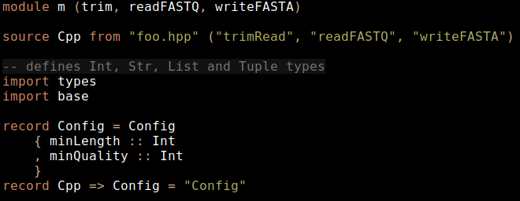
Pygments — current
morloclexer is a
Pygments lexer for Morloc. It is what highlights every
code block in this manual, so it tracks the language closely.
$ pip install morloclexer
$ pygmentize -l morloc example.locIt is also usable from Python, which is how the Weena Discord bot renders snippets.
Tree-sitter — out of date
tree-sitter-morloc is a full grammar for Morloc: a complete lexer and parser specification, which gives editors real structural understanding rather than regex highlighting, and parses a concrete syntax tree you can query.
The grammar has fallen behind the compiler and does not cover current syntax. Treat it as a starting point rather than a working tool. Bringing it back into step is on the list, and pull requests are very welcome.
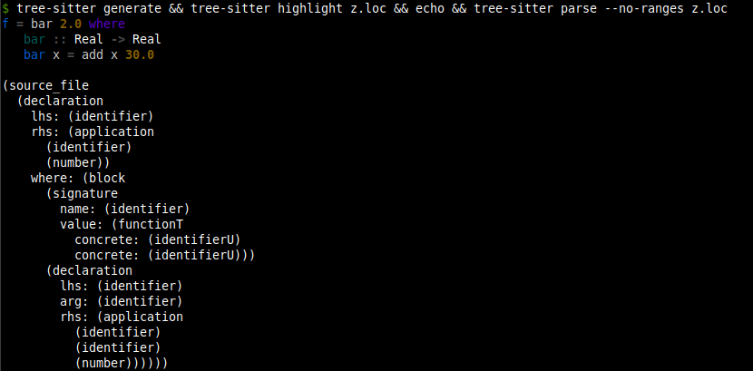
VS Code / VSCodium / Cursor — out of date
There is a published morloc extension with highlighting and snippet expansion.
It has not been updated in a while and does not know about recent syntax, so
expect gaps.
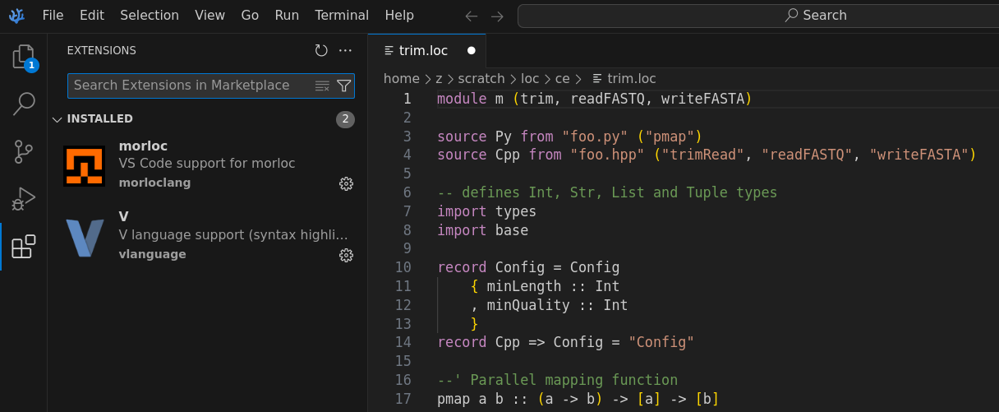
Zed — out of date, unfinished
zed-morloc is mostly written and depends on the Tree-sitter grammar above, which means it inherits that grammar’s staleness on top of its own unresolved bugs. I am happy to accept pull requests!
2.9. Troubleshooting
The problems new users actually hit, and what to do about each.
A command is not found
mim: command not found means the install directory is not on your PATH. The
installer never edits your shell startup files; it prints the exact command for
your shell when the destination is missing, and you have to open a new shell
afterwards. On macOS this is the normal case rather than the exception, because
the default PATH is built from /etc/paths, which does not include
~/.local/bin.
morloc: command not found is different and usually means the install worked.
morloc lives inside an environment, not on your host PATH. Reach it with
mim run — morloc …, or open a mim shell and drop the prefix. mim is
the only executable that lands on your PATH.
Behind a corporate firewall
A TLS-inspecting proxy re-signs every HTTPS connection with a private CA, so
downloads fail certificate verification and mim new stops partway through.
Point mim at your organization’s CA:
$ mim new base --cert-bundle /path/to/corp-ca.pem
$ mim modify --env base --cert-bundle /path/to/corp-ca.pem # after it rotatesThe file is PEM or DER and holds your CA certificates only — mim supplies
the public roots itself. Everything it runs that fetches — curl, pixi,
conda, git, cargo, the language runtimes — is then pointed at the result
through SSL_CERT_FILE, REQUESTS_CA_BUNDLE, CURL_CA_BUNDLE,
CONDA_SSL_VERIFY, NODE_EXTRA_CA_CERTS, GIT_SSL_CAINFO and
CARGO_HTTP_CAINFO.
Obtaining the certificate is your IT department’s business, not Morloc’s, and
--cert-bundle is the whole of Morloc’s interface to it. It is usually already
on the machine. On macOS, admin-installed certificates are in the system
keychain, separate from Apple’s public roots:
$ security find-certificates -a -p /Library/Keychains/System.keychain > corp-ca.pemOn Linux, if the host already trusts the CA it is in the system store. Prefer the drop-in directory: it holds the certificates your organization added, where the trusted bundle mixes them in with several hundred public roots.
| Distribution | Trusted bundle | Drop-in directory |
|---|---|---|
Debian, Ubuntu |
|
|
RHEL, Fedora |
|
|
Arch |
|
|
SUSE |
|
|
Those directories hold loose .crt files and --cert-bundle takes one file,
so concatenate them when there is more than one:
$ cat /usr/local/share/ca-certificates/*.crt > corp-ca.pemmim validates the file before it builds anything and prints what it found:
per certificate, the subject, whether it is a CA, whether it is self-signed,
the validity dates and a SHA-256 fingerprint. It refuses the file when:
-
it is empty, or over 1 MiB — a CA bundle is a handful of certificates, so this is almost always the wrong file
-
it contains private key material — export the certificate, not the key
-
it is DER but not an X.509 certificate, such as a key or a PKCS#12 archive
-
it is text — most often a proxy error page saved with a
.pemextension -
nothing in it decodes as a certificate
An expired or not-yet-valid certificate is reported as a warning rather than a refusal, because a skewed system clock looks identical from here. PEM blocks that fail to parse are skipped and named, not treated as fatal.
Afterwards mim doctor compares the source file against the fingerprints the
environment was built with, which is how you find out the CA rotated under you.
The first build takes several minutes
Expected. mim new downloads the Morloc compiler, solves a conda toolchain and
builds the Morloc runtime from source against it. Your first morloc make in a
language you have not used yet pauses again to provision that language. Both
results are cached: later environments reuse the downloaded compiler, and a
solve with unchanged requirements is skipped entirely.
An import fails on a fresh environment
morloc make fetches a missing module; morloc typecheck, dump and eval
do not. Build the program once, or run morloc install <module> by hand, and
the import resolves for every command afterwards. Writing code that is not tied to a language covers
this.
If the fetch itself fails rather than being skipped, it is a network problem — see the firewall entry above.
Something else
$ mim doctor # check the default environment
$ mim doctor --env base # or a named one
$ mim doctor --deep # also run checks inside the container; slower--strict makes it exit non-zero on warnings, which is what you want in CI.
3. Syntax and Features
3.1. Functions
Everything in Morloc is built out of functions, so this is where to start. This section covers how they are defined, composed, and partially applied.
Most examples in this chapter are fragments — a definition or two, without the surrounding module. To run one, wrap it in a module and import implementations:
module demo (myTerm)
import root-py -- or root-cpp, root-r
myTerm = ...Comments start with --. A --' comment is a docstring and attaches to the
term below it.
3.1.1. Definition and application
Functions are defined with their arguments separated by whitespace, and applied the same way:
foo x y z = g x (f y z)foo takes the arguments x, y, and z. Application binds tighter than
anything else, so g x (f y z) calls g with two arguments: x, and the
result of f y z. If you have a background in the Algol family — C, Python,
Java — the missing parentheses and commas take a little getting used to. The
payoff shows up in the next two sections.
3.1.2. Composition and application operators
The internal module, re-exported from root, defines the composition
operator . and the application operator $.
. glues two functions into one. These two definitions mean the same thing:
foo1 x = g (f x)
foo2 = g . fThe first passes the output of f x into g explicitly. The second says the
same thing without naming the argument at all — foo2 is g after f.
Composition chains read right to left and build pipelines cleanly:
process = format . transform . validate . parse$ is application with the lowest possible precedence, which makes it a way to
delete parentheses:
foo1 x = h (g (f x))
foo2 x = h $ g $ f x3.1.3. Partial application
Give a function of N arguments fewer than N, and you get back a function of the rest. This is not a special feature; it falls out of how application works.
Take fold, which reduces a container with a binary function, an initial value,
and the container itself:
fold :: Foldable f => (b -> a -> b) -> b -> f a -> bSupplying one or two of those three arguments leaves a function behind (<>
concatenates two strings or two lists):
-- concatenate a list of strings onto an initial value
concatTo :: Str -> [Str] -> Str
concatTo = fold (<>)
-- extend an initial list
extend :: [[Int]] -> [Int]
extend = fold (<>) [1,2,3]
-- append a list of values to an initial value
append :: [[[Int]]] -> [Int] -> [[Int]]
append xss ys = map (fold (<>) ys) xssEach of these carries a type signature, and that is not decoration. fold is a
typeclass method: it works over any Foldable container, so without a signature
concatTo = fold (<>) stays generic in its container and element types. A
generic term is fine inside a program, but it cannot be exported as a command,
because the compiler cannot decide how to read an argument whose type is still a
variable:
$ morloc typecheck partial.loc
concatTo :: a -> b a -> a
$ morloc make partial.loc
Warning: skipping generic export 'concatTo'The program still builds; only that command is absent. Give an exported term built from typeclass methods a signature that fixes its types.
3.1.4. Operator sections
Binary operators partially apply too, on either side. Leaving the right operand off gives a function of the right operand:
divideByTwo :: [Real] -> [Real]
divideByTwo = map (/ 2.0)and leaving the left operand off gives a function of the left:
divideTwoBy :: [Real] -> [Real]
divideTwoBy = map (2.0 /)The difference shows up immediately:
$ ./sections divideByTwo '[1,2,3]'
[0.5,1,1.5]
$ ./sections divideTwoBy '[1,2,4]'
[2,1,0.5]The 2.0 matters in the section. An integer literal takes Real from a
context that expects one (\x → 2 / x works on [Real]), but the section
(2 /) is typed before map’s `Real reaches it, so map (2 /) is rejected
as Int. For integer division use //, which is defined on Int:
halvedInts :: [Int] -> [Int]
halvedInts = map (// 2)$ ./sections halvedInts '[1,5,9]'
[0,2,4]3.1.5. Lambdas
An anonymous function is a backslash, one or more parameters, →, and a body.
Lambdas capture free variables from the enclosing scope:
addBias :: Real -> [Real] -> [Real]
addBias bias = map (\x -> x + bias)bias comes from the outer parameter list and is captured by the lambda.
$ ./sections addBias 10 '[1,2]'
[11,12]A lambda must take at least one argument. The zero-argument form is a parse error:
$ morloc typecheck five.loc
five.loc:6:10: unexpected '->'
|
6 | five = \ -> 5
| ^To wrap a value as a computation to be run later, use the effect system rather than a lambda — see Effects and delayed evaluation.
3.2. Foreign functions
A Morloc module by itself declares types and compositions but contains no
implementations. Those come from other languages, pulled in with source. This
is the mechanism the rest of the language is built on.
3.2.1. The source statement
source names a language, a file, and the terms to take from it:
source Cpp from "foo.hpp" ("map", "sum", "snd")
source Py from "foo.py" ("morloc_map" as map, "morloc_sum" as sum, "snd")The language tag (Cpp, Py, R, Rust) decides which toolchain compiles the
code and which pool the function runs in. as renames a foreign term for use in
Morloc, which matters when the foreign name is taken or awkward.
Block form
There is a second spelling. source ... where opens an indented block with one
term per line, which leaves room for a docstring above each:
source Py from "foo.py" where
--' Sum a list of reals.
sum
--' @name morloc_map
mapThe two forms are otherwise equivalent — pick whichever reads better.
--' @name <foreign name> says what the term is called on the other side, so
the Morloc name and the foreign name can differ. It is the block-form
equivalent of as, and these two declare the same thing:
source Py from "foo.py" ("morloc_map" as map)
source Py from "foo.py" where
--' @name morloc_map
mapProse docstring lines are allowed too and are carried as documentation.
Curried foreign functions: the rsize directive
Skip this unless a foreign function returns a closure rather than taking all its arguments at once. It assumes nothing beyond the section above.
In a pure functional language, a -> (b -> c) and a -> b -> c are the same
type. A function of two arguments is a function of one argument returning a
function of one argument; currying makes the distinction vanish. Morloc’s type
system takes that view — the two spellings are interchangeable, and the
compiler reports both the same way.
Real languages usually do not. In Python the two are different objects with different call syntax:
# one argument, returns a closure: scale(2.0)([1, 2])
def scale(factor):
return lambda xs: [factor * x for x in xs]
# two arguments, called at once: shift(10.0, [1, 2])
def shift(offset, xs):
return [offset + x for x in xs]Both have the Morloc type Real -> [Real] -> [Real], and nothing in that type
says which shape the Python side has. By default Morloc assumes the flat one and
emits a single call with every argument. Hand it scale and the pool dies:
TypeError: scale() takes 1 positional argument but 2 were given--' @rsize N declares how many arguments go in each call. The values are the
sizes of the leading call groups; the final group is whatever is left over, so
you never write it.
source Py from "curry.py" where
--' @rsize 1
scale
shift
scale :: Real -> [Real] -> [Real]
shift :: Real -> [Real] -> [Real]A docstring attaches to the term directly below it, so scale is curried here
and shift is not. The generated pool shows the difference:
n2 = __morloc_src_curry.scale(n0) (n1)
n4 = __morloc_src_curry.shift(n2, n3)Both work, and partial application works through a curried source too:
$ ./curry scaled 3 '[1,2]'
[3,6]
$ ./curry shifted 10 '[1,2]'
[11,12]
$ ./curry doubler '[1,2]'
[2,4]where doubler = scale 2.0 compiles to __morloc_src_curry.scale(2.0) (n4).
For deeper nesting, give one value per leading group:
| Declaration | Foreign shape | Emitted call |
|---|---|---|
(none) |
|
|
|
|
|
|
|
|
|
|
|
Each value must be at least 1 and must leave at least one argument for the
group after it, since the final group is implicit. So @rsize 2 on a
two-argument function is rejected — it would consume both arguments and leave
an empty call behind.
rsize is the only place the curried-versus-flat distinction is recorded.
Writing the type as Real -> ([Real] -> [Real]) does not imply it and does not
change the emitted call.
An effect also ends a call. A source typed Int -> <IO> (Int -> Int) is
called with its one argument when the effect runs, and the function it returns
is a value of its own, so it needs no rsize; rsize counts only the
arguments before the first effect.
The other direction is a function morloc passes to a source, or one a source
returns. The source calls it, and morloc calls it, with all of its arguments
at once: (a -> b -> c) and (a -> (b -> c)) are one type, and a parameter
of either spelling is called with two arguments. Only an effect or a type
variable of the signature ends the arguments: (a -> <IO> (b -> c)) is called
with one argument and returns a suspension, and a parameter (a -> b -> c) is
called with two and returns c, even where c is a function. Morloc hands over
any function of that type called that way, however the function was defined.
If the function does work before the lambda it returns, that work runs at
every call the source makes with those arguments; a partial application
morloc passes has already run the work for the arguments it holds, once.
The C++ side is an ordinary header:
#pragma once
#include <vector>
#include <tuple>
// map :: (a -> b) -> [a] -> [b]
template <typename F, typename A>
auto map(F f, const std::vector<A>& xs) {
std::vector<decltype(f(xs.front()))> result;
result.reserve(xs.size());
for (const auto& x : xs) {
result.push_back(f(x));
}
return result;
}
// snd :: (a, b) -> b
template <typename A, typename B>
B snd(const std::tuple<A, B>& p) {
return std::get<1>(p);
}
// sum :: [a] -> a
template <typename A>
A sum(const std::vector<A>& xs) {
A total = A{0};
for (const auto& x : xs) {
total += x;
}
return total;
}These implementations are completely independent of Morloc. They have no special constraints, they operate on ordinary native data structures, and nothing stops them being used outside Morloc entirely. That independence is the point: Morloc consumes libraries as they already exist.
3.2.2. General types
Morloc moves data between languages, and to do that it needs to know the shape of each function. You supply that as a general type signature:
map :: (a -> b) -> [a] -> [b]
snd :: (a, b) -> b
sum :: [Real] -> RealThe syntax is borrowed from Haskell. Square brackets are homogeneous lists,
parenthesized comma-separated values are tuples, and arrows are functions. In
map, (a -> b) is a function from a generic a to a generic b, [a] is
the input list, and [b] is the output. snd pulls the second element out of a
two-tuple. sum reduces a list of reals to one real.
The brackets are sugar. Written out, the same signatures are:
map :: (a -> b) -> List a -> List b
snd :: Tuple2 a b -> b
sum :: List Real -> Real3.2.3. Native type mappings
A general type may correspond to a different concrete type in every language, so you also give the mapping:
type Cpp => List a = "std::vector<$1>" a
type Cpp => Tuple2 a b = "std::tuple<$1,$2>" a b
type Cpp => Real = "double"
type Py => List a = "list" a
type Py => Tuple2 a b = "tuple" a b
type Py => Real = "float"These are type functions. Take the C++ mapping for List a. Once the
typechecker has solved for the parameter a and recursively converted it to
C++, that result is substituted for $1. If a turns out to be Real, it
maps to double, which substitutes into the list type to give
std::vector<double> — and that is the type in the generated C++.
In practice you rarely write these. They come from foundational modules such as
root-cpp and root-py, which is why the examples in
Getting Started could import a language and start working.
With the signatures and mappings in place, the module compiles and runs:
$ ./foreign mySum '[1,2,3.5]'
6.5
$ ./foreign mySnd '[1,2]'
2Note that a tuple is written as a JSON array on the command line.
Higher-order functions cross the boundary too. A Morloc function passed into the
sourced C++ map works exactly as you would hope:
doubleAll :: [Real] -> [Real]
doubleAll = map twice$ ./foreign doubleAll '[1,2,3]'
[2,4,6]3.2.4. Sourcing builtins and other non-exports
Morloc calls a sourced Python term as an attribute of its module: a term taken
from foo.py is invoked as foo.<name>. Builtins are not attributes of foo,
so sourcing one directly compiles fine and then fails when it runs:
source Py from "foo.py" ("map", "sum", "snd")$ ./foreign mySum '[1,2,3.5]'
Error: run failed
module 'foo' has no attribute 'sum'
at mySum [py] (mid=1, foreign.loc:1:17)The failure is deferred to run time, which makes it worth knowing about in advance. There are three fixes.
Re-export the builtins so they become module attributes:
from builtins import map, sum # make builtins module-level attributes
def snd(pair):
return pair[1]Or wrap them under names of your own and rename on the way in, which is where
the morloc_sum in the first example came from:
def morloc_sum(xs):
return sum(xs)
def snd(pair):
return pair[1]source Py from "foo.py" ("morloc_sum" as sum, "snd")Or source a builtin with no from at all, which names it directly:
source Py ("sum" as bsum)All three work. The same rule applies to anything that is not a module-level name:
a term from a third-party package must be locally defined (def bar(...)) or
explicitly imported (from somemodule import bar) in the sourced file.
3.2.5. Keyword-shaped foreign operators
Some foreign symbols are neither callable identifiers nor symbolic operators.
Python’s in and not in are language keywords: they exist only as infix
syntax, so in(x, xs) is a parse error and there is no function object to
import.
A backtick-quoted name sources such a symbol as an infix operator whose emitted text is the quoted string:
source Py from "core.py" (`in` as (<:), `not in` as (</:))
(<:) :: Str -> [Str] -> Bool
(</:) :: Str -> [Str] -> BoolAt each call site the generated pool writes the quoted text between the two
arguments. No wrapper is needed on the Python side — core.py can be empty.
The generated pool.py for x <: xs and x </: xs contains:
n2 = (n0 in n1)
...
n4 = (n2 not in n3)The backtick contents are emitted verbatim, so any two-argument infix operator
the target language recognises works the same way: Python is, R %in%, and
so on. The one exception is && and ||: they are built-in short-circuiting
forms (Booleans), and declaring either is an error.
3.2.6. What sourced code may do with values
Morloc decides where values are copied, moved and shared, and changes those decisions between versions to make programs faster. A sourced function sees the same value however Morloc placed it only if it treats its arguments as values. These rules are the price of that freedom; a program that breaks one has no defined result.
Never change an argument. A function that needs a changed value changes its own copy and returns it.
-
C++: take each argument by value or by
const T&, neverT&. AT¶meter does not build: Morloc passes every named value as const, so the C++ compiler reportspools/cpp/pool.cpp:1525:35: error: binding reference of type 'std::vector<int>&' to 'std::add_const_t<std::vector<int> >' {aka 'const std::vector<int>'} discards qualifiersC++ code that calls a function Morloc passed to it calls it the same way, never with a non-const reference.
A
const T¶meter may be overloaded with aT&&one that computes the same result. Morloc calls theT&&overload only where it will not use the value again, so that overload may take the argument’s contents instead of copying them (Runtime helpers (cppmorloc_api.hpp)). -
Rust: never take
&mut. Morloc passes aCopyvalue by value and anything else as&T, so a&mut Tparameter does not build. Do not change an argument throughCell,RefCell,Mutexor an atomic either; that is not detected. -
Python: no
list.sort(),append, item or attribute assignment,dict.update, or in-place numpy operation (a += 1,out=) on an argument. Copy first. A numpy array that came from another language or from a literal in your program is read-only, so writing to it raises aValueError; call.copy()to get one you can change. -
R: changing a local copy is fine, since R copies on modify. Do not change an argument by reference: an environment, an R6 or reference class object,
data.table’s `:=andset*functions, or an external pointer.
Return a value that owns its data. A C++ result is not, and does not hold, a
reference, pointer, std::string_view, std::span or other view into an
argument, and is not a lambda capturing an argument by reference. A const T&
to data that outlives every call, such as a static, is fine; Morloc copies it.
A Rust result borrows from no argument, which rustc already enforces. A Python
result may share objects with its arguments, including a numpy view onto one,
since reference counting keeps the data alive.
A mapped type behaves as a value. A C++ or Rust type that a Morloc type maps
to (type Cpp ⇒ T = "…", or for a record (Records),
record Cpp ⇒ R = "…"):
-
copies into an independent, equal value, and copying, moving or destroying it does nothing a program depends on: no output, counters, files or locks;
-
is not a pointer, reference, view or
std::weak_ptr, and has no such field; astd::shared_ptr<const T>is fine. The arms of a mappeddatatype (Sum types) and a recursive optional?Rfield of a C++ record are exactly that,std::shared_ptr<const T>, and any other spelling does not build; code still building a value may hold astd::shared_ptr<T>and store it into the const field; -
can be built from moved fields and moved itself: no constructor takes a field by non-const reference, and no field type deletes its move constructor;
-
is safe to read through a
constreference (C++) or&(Rust) from several threads at once.
Work that must happen at a definite time, such as writing a file or releasing a lock, belongs in an effectful function Morloc calls in order, not in a copy constructor or destructor.
3.2.7. Calling the runtime from sourced code
Sourced code normally calls nothing of Morloc’s: it is ordinary code over ordinary values. A few low-level tasks, mostly performance work, go better with the runtime’s help, and for those each language’s binding offers a small set of helper functions. The binding is the module every pool of that language already loads, so a helper needs no import of its own.
Every helper is optional. Code that does not call one builds and computes the
same result, only slower, and each helper has a feature test, so a file that
uses one still builds on its own. Only the helpers documented here are a
contract; anything else you find in a binding is used by generated code and may
change. So far only C++ has helpers (Runtime helpers (cppmorloc_api.hpp)).
3.3. Importing modules
You have been importing modules since Getting Started: import root-py to
get implementations, and import .units-abstract to use a file of your own.
This section covers the rest: what a module exports, how local paths resolve,
namespaced imports, and what your choice of root-<lang> costs.
3.3.1. Exports
A module declaration names the module and lists the terms other modules may
import from it. module mylib (foo, bar) exports foo and bar and nothing
else. To export everything the module defines, use the wildcard:
module mylib (*)An empty list, module myinstances (), exports no terms. Such a module is still
worth importing when it carries typeclass instances — implementations of a
shared interface for one type, covered in Overload terms with typeclasses. Instances travel with
the module rather than the export list, so importing the module makes every
instance in it available; they cannot be picked individually.
A submodule that exists only to be imported by a parent may omit its name:
module (*)Its name is then taken from the import path: if main.loc imports .utils, the
module in utils.loc (or utils/main.loc) is named utils.
A single file may contain more than one module. Each module keyword starts a
new one; everything indented under it, or appearing before the next module
keyword, belongs to it. The other modules of a file are local modules, so they
are imported with a leading dot. A module body may also be empty:
module utils (helper)
import root-py
helper :: Int -> Int
helper x = x + 1
module main (run)
import .utils (helper)
run :: Int -> Int
run x = helper x3.3.2. Installed modules and root
An import without a leading dot names an installed module. A bare name such as
root-py is a module of the standard library; a module of another library is
named with its library first, as in import bio/convert. morloc make fetches
a missing one, as you saw in Writing code that is not tied to a language; morloc install root-py
fetches it by hand. Installing modules covers installing in full.
root and a root-<lang> are not alternatives. root declares the standard
library — the classes, and everything derivable from them — and a
root-<lang> supplies the instances by sourcing native implementations. A
program needs both, so its import list names a root-<lang>.
Which one it names sets what a single invocation costs, because the program starts that language’s runtime before it can call anything:
| Import | Per invocation | Where the time goes |
|---|---|---|
|
about 10 ms |
the nexus process; no pool is started |
|
about 15 ms |
a compiled pool |
|
about 50 ms |
a Python pool; starting the interpreter dominates |
Crossing into a pool is cheap and starting an interpreter is not. That rarely matters for a batch job and decides how a frequently typed command feels. Moving between backends is a one-line change to the import.
3.3.3. Selective imports
Without a selector, an import brings every exported term into scope. A parenthesized list takes only the terms named:
import root-py -- import everything from root-py
import .mylib -- import everything from local mylib
import .mylib (foo, bar) -- import only foo and bar from local mylib3.3.4. Local module paths
When you write import .foo, the compiler looks for the module under the
root of the importing module’s package. For your program, that is the
directory holding the entry file you passed to morloc make; for an installed
package, it is that package’s own directory. It checks two locations, in order:
-
A file module:
foo.loc -
A directory module:
foo/main.loc
Dot-separated paths map to nested directories. For example, import .lib.math
resolves to either lib/math.loc or lib/math/main.loc.
The package root is fixed for every file of a package, so a dotted import means
the same thing in every file of a project however deeply nested that file is,
and an installed package’s local imports mean the same wherever it is imported. Paths in a
source declaration work the other way round: they resolve against the file
that names them, so a module and the native code it sources travel together
when either moves.
Here is an example project layout:
project/
main.loc -- module main, imports .utils and .lib.math
utils.loc -- module (*), a flat file module
utils.py
lib/
math/
main.loc -- module (*), a directory module
main.py
The top-level main.loc imports both:
module main (negate_square, square_negate)
type Py => Real = "float"
import .utils (negate)
import .lib.math (square)
negate_square :: Real -> Real
negate_square x = negate (square x)
square_negate :: Real -> Real
square_negate x = square (negate x)The flat file utils.loc exports negate:
module (*)
source Py from "utils.py" ("negate")
type Py => Real = "float"
negate :: Real -> RealAnd the directory module lib/math/main.loc exports square:
module (*)
source Py from "main.py" ("square")
type Py => Real = "float"
square :: Real -> RealLocal modules can also import other local modules, and the path is still written
from the project root. For example, if bar/baz/main.loc needs a module at
bif/biz/, it writes:
import .bif.biz (mul)This resolves to bif/biz.loc or bif/biz/main.loc at the top of the project,
not to anything beneath bar/baz/. The identical line in the top-level
main.loc names the identical module.
Since root is also the name of a system module, a local directory named
root/ must be imported with the dot prefix to avoid ambiguity:
import root -- imports the system "root" module
import .root -- imports the local "root/" directoryThe dot prefix always forces local resolution, so there is never a collision between local and system module names.
3.3.5. Namespaced imports
import .feet as feet brings a module’s terms in under a prefix, so a call
says where its function lives and two modules may export the same name. Here
feet.loc and inches.loc each define fromMeters:
module (*)
import root
fromMeters :: Real -> Real
fromMeters m = m * 3.28084inches.loc is the same with 39.3701. Both import cleanly side by side:
module lengths (toFeet, toInches)
import root-py
import .feet as feet
import .inches as inches
toFeet :: Real -> Real
toFeet = feet.fromMeters
toInches :: Real -> Real
toInches m = inches.fromMeters m$ morloc make lengths.loc
$ ./lengths toFeet 2
6.56168
$ ./lengths toInches 2
78.7402A namespaced term is reachable only through its prefix; a bare fromMeters in
lengths.loc is Undefined term: fromMeters. A selector still works after the
prefix, as in import .feet as feet (fromMeters). Type names are never
qualified: a type the module exports is written by its bare name.
3.4. Booleans
Booleans are written True and False and have the type Bool. && and
|| are built in. The comparison operators and the other logical functions come
from root, so a module that uses them imports one of the root
implementations.
yes :: Bool
yes = True
no :: Bool
no = FalseThe literals are capitalized, but a Bool prints as lowercase JSON:
$ ./bools yes
true3.4.1. Comparison operators
The Eq and Ord typeclasses in root provide the standard comparisons. They
work over any type with the appropriate instance: integers, reals, strings, and
tuples and lists of comparable values.
| Operator | Meaning |
|---|---|
|
equal |
|
not equal |
|
less than |
|
less than or equal |
|
greater than |
|
greater than or equal |
isPositive :: Int -> Bool
isPositive x = x > 0
sameLength :: [a] -> [b] -> Bool
sameLength xs ys = length xs == length yssameLength is generic in both list types, which is fine inside a program but
means it cannot be given a command line interface — the compiler cannot decide
how to read an argument whose type is still a variable. Exporting it produces:
$ morloc make bools.loc
Warning: skipping generic export 'sameLength'The program still builds; only that one command is absent.
3.4.2. Logical operators
| Operator | Meaning |
|---|---|
|
logical AND |
|
logical OR |
|
logical negation (a prefix function, not an operator) |
|
exclusive OR |
|
NOT AND |
Both && and || are right-associative, and && binds tighter than ||
(infixr 3 && against infixr 2 ||), which matches the convention in most
languages. So a || b && c groups as a || (b && c).
inRange :: Int -> Int -> Int -> Bool
inRange lo hi x = lo <= x && x <= hi
isWeekend :: Int -> Bool
isWeekend day = day == 0 || day == 6
isWeekday :: Int -> Bool
isWeekday day = not (isWeekend day)$ ./bools inRange 1 10 5
true
$ ./bools isWeekday 6
falseShort-circuiting
&& and || short-circuit at run time: if the left operand settles the answer,
the right one is never evaluated, in every language and wherever the operands
run. They are built-in forms rather than ordinary functions, which is why no
module can redefine them.
divZero :: Int -> Int
divZero x = x // 0
-- b comes from the caller, so the compiler cannot fold this away
test :: Bool -> Int -> Bool
test b x = b && (divZero x == 0)With b false, the division never happens:
$ ./shortcircuit test false 5
falseWith b true, it does, and the error surfaces with the call chain that produced
it:
$ ./shortcircuit test true 5
Error: run failed
integer division or modulo by zero
at test [py] (mid=1, shortcircuit.loc:10:1)3.4.3. Boolean-valued list functions
root provides three Foldable functions that answer questions about a
container:
| Function | Signature |
|---|---|
|
|
|
|
|
|
any is True when the predicate holds for at least one element, all when it
holds for every element, and elem tests membership using ==.
hasNegative :: [Int] -> Bool
hasNegative = any (< 0)
allPositive :: [Int] -> Bool
allPositive = all (> 0)
containsZero :: [Int] -> Bool
containsZero = elem 0$ ./bools hasNegative '[1,-2,3]'
true
$ ./bools containsZero '[1,0,3]'
true3.4.4. Guards
Booleans drive Morloc’s conditional syntax, the ?/: guard, covered in
Conditionals.
3.5. Integer types
Morloc has one integer type for ordinary use and a family of fixed-width types for when the width matters. This section covers how integers are written, how the default type behaves across languages, and what happens at the boundaries.
3.5.1. Writing integer literals
Integers may be written in decimal, hexadecimal, octal, or binary:
-- standard decimal notation
42
-- hexadecimal notation (case insensitive)
0xf00d
0xDEADBEEF
-- octal notation (upper or lowercase 'o')
0o755
-- binary notation (upper or lowercase 'b')
0b0101A prefixed literal must contain only digits valid for its base and must end on a non-identifier character. A trailing character that is not a valid digit for the base is a compile-time error, not a silently truncated literal followed by an unrelated identifier:
$ morloc eval -e "0xF00D"
61453
$ morloc eval -e "0xF0OD"
<expr>:1:1: malformed hexadecimal literal: 0xF0OD
$ morloc eval -e "0b1001"
9
$ morloc eval -e "0o755"
493morloc eval evaluates a single expression, which makes it a good way to check
one of these rules. It has no implicit prelude, so anything beyond a bare
literal needs an import:
$ morloc eval -e '5 - 1'
<expr>:1:3: error:
Undefined term: -
hint: an eval expression has no implicit prelude; prefix the expression with 'import root-py;' (or the module that defines -) to bring it into scope
$ morloc eval -e 'import root-py; 5 - 1'
43.5.2. Integer types at a glance
| Type | Width | Use case |
|---|---|---|
|
The language’s default integer (32-bit in C++ and R) |
Default integer for most code. Works across all languages. |
|
8, 16, 32, 64 bits (signed) |
Performance-critical code with known bounds. |
|
8, 16, 32, 64 bits (unsigned) |
Bit manipulation, byte data, indices. |
3.5.3. The default Int type
Int is Morloc’s universal integer, and integer literals are Int unless
something says otherwise:
x = 42 -- Int
y = 0xDEADBEEF -- Int (hex literal)
z = -9999 -- IntOn the wire Int is variable-width: values up to 64 bits fit in 16 bytes
inline, and larger values spill to a pointer to an array of 64-bit limbs. But
the range you actually get inside a language is whatever that language’s
native binding provides:
| Language | Native binding for Int |
Representable range |
|---|---|---|
Python |
|
Arbitrary precision |
C++ |
|
32-bit signed ( |
R |
|
32-bit signed |
Rust |
|
64-bit signed |
This asymmetry is the thing to remember about Int. A value that a Python pool
holds happily may not fit in the C++ or R pool it is handed to. If a field
needs more than 32 bits on those backends, declare it I64 or U64. I64 maps
to int64_t in C++, i64 in Rust and a bit64 integer64 in R, all exact.
U64 maps to uint64_t in C++, u64 in Rust and the signed integer64
in R, which is exact only below 2^63.
3.5.4. Big integers from Python
Python’s integers are arbitrary precision and Morloc’s Int takes full
advantage of that. Factorials make the point quickly. The ?/: lines are a
guard, Morloc’s if-else: 1 when n == 0, else the recursive case
(Conditionals):
module main (fact)
import root-py
fact :: Int -> Int
fact n
? n == 0 = 1
: n * fact (n - 1)$ morloc make -o calc main.loc
$ ./calc fact 100
93326215443944152681699238856266700490715968264381621468592963895217599993229915608941463976156518286253697920827223758251185210916864000000000000000000000000That is a 525-bit integer, far past any fixed-width type. It is stored as a multi-limb big integer and printed exactly.
3.5.5. Overflow at a language boundary
When a value too large for the target language’s type crosses into it, Morloc raises an error at the boundary rather than truncating silently.
To show this you need to force the computation to happen in Python and then
move the result. root-py exports idpy, root-cpp exports idcpp, and
root-r exports idr: identity functions pinned to one language. Wrapping a
term in idpy forces it into the Python pool, and idcpp or idr then drags
the result across. Without them the compiler would collapse fact to pure C++ — faster, but it would not demonstrate anything.
module main (factCpp, factR)
import root-py
import root-cpp
import root-r
fact :: Int -> Int
fact n
? n == 0 = 1
: n * fact (n - 1)
factPy :: Int -> Int
factPy n = idpy (fact n)
factCpp :: Int -> Int
factCpp x = idcpp (factPy x)
factR :: Int -> Int
factR x = idr (factPy x)Small values cross without trouble:
$ ./calc factCpp 5
120Large ones report where and why they failed:
$ ./calc factCpp 100
Error: run failed
Integer overflow: 9-limb integer (576 bits) does not fit in 32-bit type (range -2147483648 to 2147483647)
at factPy [cpp] (mid=3134, main.loc:13:1)
at factCpp [cpp] (mid=1, main.loc:16:1)R is limited to 32-bit integers, and to 53-bit integer precision through doubles, so it refuses the same value:
$ ./calc factR 100
Error: run failed
Integer overflow: 9-limb integer (576 bits) does not fit in R's numeric type (max 2^53 for integer precision).
at factPy [r] (mid=3191, main.loc:13:1)
at factR [r] (mid=2, main.loc:19:1)Both report the same shape: what overflowed, what it would not fit in, and the call chain that got there.
3.5.6. Compile-time literal bounds
A literal written into a fixed-width type is bounds-checked against that type:
tooLarge :: U8
tooLarge = 1000The check happens during code generation, so morloc typecheck passes and
morloc make is what rejects it:
$ morloc typecheck intbounds.loc
tooLarge :: U8
$ morloc make intbounds.loc
intbounds.loc:6:12: error:
Integer literal 1000 overflows U8 (range 0 to 255)
|
6 | tooLarge = 1000
| ^The caret points at the literal, not at the binding name, so when the same literal is referenced from several sites the diagnostic stays on the offending source.
3.5.7. Fixed-width integer types
When values are known to be bounded, fixed-width types map directly onto the target language’s native types:
| Morloc type | C++ | Python | R | Rust |
|---|---|---|---|---|
|
|
|
|
|
|
|
|
|
|
|
|
|
|
|
|
|
|
|
|
|
|
|
|
|
|
|
|
|
|
|
|
|
|
|
|
|
|
|
|
These serialize directly: the wire format is identical to the in-memory representation, with no conversion step. That makes them the right choice for numerical code and for interop with C libraries that require specific widths.
The Python column is int throughout rather than a genuinely fixed-size
type such as a numpy scalar. Types can be specialized that way; see
Native type mappings, and Tensors and Tables for the
higher-performance shared-memory types.
|
3.5.8. Converting between integer types
Two typeclasses in root cover numeric conversion. into is for conversions
that can never fail and never lose information. tryInto is for everything
else:
class TotalInto a b where
into :: a -> b
class PartialInto a b where
tryInto :: a -> bWidening is total — signed to wider signed, unsigned to wider unsigned, and
unsigned into a strictly wider signed target. A reflexive TotalInto a a
instance covers the identity case.
wide :: I8 -> I64
wide x = into xAnything that can fail goes through tryInto: narrowing, negative into
unsigned, or unsigned into a same-or-narrower signed target. Its signature
looks total because every instance is a conversion written in a backend
language, and it reports a value that does not fit by raising there:
byte :: I32 -> U8
byte x = tryInto x$ ./bytes byte 65
65
$ ./bytes byte 9999
Error: run failed
value 9999 out of range [0, 255]
at byte [py] (mid=2, bytes.loc:1:20)To decide for yourself what an out-of-range value means, wrap the conversion
in @try, which turns a raise into a value you can match on — either the
converted number or the reason there isn’t one. @try and the Try type it
produces are covered in Failure and recovery, and match, which picks the
clause whose pattern fits, in match expressions; the shape is:
byteOrZero :: I32 -> U8
byteOrZero x = match (@try (tryInto x :: U8))
| (Ok b) = b
| (Err _) = 0
byteOrReport :: I32 -> Str
byteOrReport x = match (@try (tryInto x :: U8))
| (Ok b) = "fits: #{@show b}"
| (Err e) = "does not fit: #{e}"$ ./bytes byteOrZero 65
65
$ ./bytes byteOrZero 9999
0
$ ./bytes byteOrReport 9999
"does not fit: value 9999 out of range [0, 255]"- The `
-
U8` ascription is needed because
tryIntois polymorphic in its target, so something has to say which conversion you meant.
Int gets the most restrictive treatment, because its width varies by backend:
32-bit in R and C++, unbounded in Python. Every Int to fixed-width
conversion goes through tryInto — even Int -> I64 — and converting U32
or wider into Int does too. That keeps behaviour the same everywhere.
3.5.9. Negation and unary minus
The - glyph plays two roles: binary subtraction and unary negation. Which one
you get depends on whitespace.
-- prefix `-` on a value: the additive inverse
neg :: Int -> Int
neg x = -x
-- prefix `-` on an expression: parenthesize the expression
shifted :: Int -> Int
shifted x = -(x + 1)
-- works on any numeric primitive (Int, I8..I64, U8..U64,
-- Real, F32, F64) via the `Negatable` typeclass
flipReal :: Real -> Real
flipReal x = -xNegative literals
A - directly against a digit, with no space between, is part of the literal.
So -1 is an atomic integer rather than a function call, and works in places
where calls are not allowed, such as pure-data files:
xs :: [Int]
xs = [-1, -2, -3, -100]
ys :: [Real]
ys = [-1.5, -2.0e-3, -0xff]
point :: (Int, Int)
point = (-3, -4)$ ./neg xs
[-1,-2,-3,-100]
$ ./neg ys
[-1.5,-0.002,-255]
$ ./neg point
[-3,-4]The same atomic-lexing rule extends to the non-finite Real literals -Inf and
-NaN; see Floating-point types.
When - is unary and when it is binary
The lexer uses an asymmetric-whitespace rule. A - immediately followed by a
digit is part of a negative literal whenever the dash sits where an expression
cannot have just ended:
-
at the start of input;
-
after an opening delimiter (
(,[,,,=, and so on); -
after another operator;
-
after whitespace, when the digit is not separated from the dash.
Anywhere else — where the dash directly follows a token that finishes an operand, with no whitespace between — it is binary subtraction.
| Expression | Interpretation |
|---|---|
|
atomic literal |
|
|
|
binary subtraction |
|
binary subtraction |
|
list of two negative literals |
|
|
|
desugars to |
|
desugars to |
The second row can be checked directly. Applying a number to something is a
type error, and that is exactly the error 5 -1 produces — proving the -1
was read as an argument rather than as subtraction:
$ morloc eval -e "5 -1"
<expr>:1:1: error:
General type error: Application of non-functional expression of type: Int- With `+f
-
Int → Int+` defined as
f x = x * 10, the three spellings behave as the table says:
$ ./dashtest t1 -- t1 = f -1
-10
$ ./dashtest t2 -- t2 = 100 - 1
99
$ ./dashtest t3 -- t3 = 100-1
99Position restrictions
Prefix - on a non-literal expression is allowed wherever an expression can
begin, including on the right of an infix operator. The one restriction is that
its operand must start with an atom — an identifier, a literal, an open paren
or bracket — and not with another prefix -.
-- ok: -x at the start of an expression
neg1 :: Int -> Int
neg1 x = -x
-- ok: -x on the right of a binary operator
neg2 :: Int -> Int
neg2 x = 1 + -x
-- ok: subtracting a negated value
neg3 :: Int -> Int -> Int
neg3 x y = x - -y
-- ok: -x parenthesized; equivalent to neg2
neg4 :: Int -> Int
neg4 x = 1 + (-x)
-- ok: parenthesize the inner negation to stack two
double :: Int -> Int
double x = -(-x)Two adjacent prefix dashes are a parse error:
$ morloc typecheck negbad.loc
negbad.loc:6:11: unexpected '-'
|
6 | bad x = - -x
| ^The Negatable typeclass
Negation comes from a typeclass in the internal module:
class Negatable a where
negate :: a -> aEvery numeric primitive has an instance in root-py, root-cpp, and root-r
that dispatches to the host language’s native unary minus. The parser desugars
-x to negate x, so writing negate x yourself is equivalent. The compiler
picks the language for a negation the same way it picks the language for any
other polymorphic call: from the imported language modules and the surrounding
cross-language boundaries.
3.6. Floating-point types
Morloc’s floating-point types are IEEE 754 binary formats. Real is the
default; F32 and F64 exist when you need to control precision explicitly.
| Type | Width | Use case |
|---|---|---|
|
Language-dependent (typically 64-bit IEEE 754) |
Default floating point. |
|
32 bits (IEEE 754 binary32) |
Tensors, GPU code, memory-constrained numerics. |
|
64 bits (IEEE 754 binary64) |
Default-precision scientific computation. |
Each maps to its host-language equivalent:
| Morloc type | C++ | Python | R |
|---|---|---|---|
|
|
|
|
|
|
|
|
|
|
|
|
3.6.1. Literal forms
Real literals need a decimal point or an exponent:
pi :: Real
pi = 3.14159265358979
-- scientific notation (upper or lowercase 'e')
avogadro :: F64
avogadro = 6.022e23
-- negative exponent
boltzmann :: Real
boltzmann = 1.380649e-23$ ./floats pi
3.14159265358979
$ ./floats avogadro
6.022e+23
$ ./floats boltzmann
1.380649e-23Note the explicit + on the printed exponent.
A literal with neither a decimal point nor an exponent is an integer
literal. It is an Int unless its context expects a Real, and then it is
that Real: w :: Real with w = 1, or [1, 0xff, 2.5] :: [Real], needs no
decimal points.
3.6.2. IEEE 754 and non-finite values
Real follows IEEE 754 in full, which means its value space is the finite
reals representable at the target precision plus three classes of non-finite
value:
-
+Infinity -
-Infinity -
NaN(Not-a-Number)
Ordinary arithmetic produces these: dividing by zero, overflowing the finite
range, or evaluating an indeterminate form such as Inf - Inf or 0 * Inf.
They are not error states. They are values, and they propagate through later
computation by rules the standard fixes.
Source-level literals
Each has a dedicated literal, capitalized to match Morloc’s other keyword-like
values (True, False, Null):
posInf :: Real
posInf = Inf
negInf :: Real
negInf = -Inf
notANumber :: Real
notANumber = NaN-Inf lexes as a single atomic token, the same way -1.5 is one token rather
than negate 1.5, so it works in pure-Morloc contexts where negate is not in
scope. The same holds for -NaN, though the sign of a NaN collapses at the
wire boundary: both NaN and -NaN come back as the canonical nan.
Arithmetic on non-finite values
All three target languages follow IEEE 754 here, so these results do not depend on which pool the computation lands in. Every row below was run:
| Expression | Result | Why |
|---|---|---|
|
|
Same-sign infinity addition |
|
|
Invalid op: opposite-sign cancellation |
|
|
Invalid op: same-sign cancellation |
|
|
Invalid op: zero times infinity |
|
|
Magnitude preservation |
|
|
Sign rule on multiplication |
|
|
Like-sign product |
|
|
Mixed-sign product |
|
|
NaN absorption (additive) |
|
|
NaN beats zero |
|
|
NaN beats infinity |
|
|
Sign-bit flip |
|
|
Sign flip stays NaN |
3.6.3. Compile-time literal overflow
A real literal is bounds-checked against the precision it is written into. As
with integer literals, the check runs during code generation, so typecheck
passes and make rejects it.
For Real and F64, the maximum magnitude is about 1.8e308:
tooBig :: Real
tooBig = 1e500$ morloc make fbig.loc
fbig.loc:6:10: error:
Float literal 1.0e500 overflows F64 (|x| > 1.8e308)
|
6 | tooBig = 1e500
| ^The check is per-precision, so a literal that fits F64 can still overflow
F32 (maximum magnitude about 3.4e38):
tooBigF32 :: F32
tooBigF32 = 1e100$ morloc make fbig32.loc
fbig32.loc:6:13: error:
Float literal 1.0e100 overflows F32 (|x| > 3.4e38)
|
6 | tooBigF32 = 1e100
| ^Negative literals are checked symmetrically:
$ morloc make fneg.loc
fneg.loc:6:10: error:
Float literal -1.0e500 overflows F64 (|x| > 1.8e308)
|
6 | tooNeg = -1e500
| ^Inf, -Inf, and NaN bypass the bounds check by construction. They are
explicit non-finite values, not finite literals that happened to overflow.
3.6.4. Wire format and JSON interop
The JSON wire format is RFC 8259 compliant, and standard JSON has no syntax for non-finite numbers. The specification’s recommended workaround is strings, so Morloc emits them as quoted lowercase strings:
| Value | JSON form |
|---|---|
|
|
|
|
|
|
Finite |
The numeric form ( |
You can see this in the output of the literals above:
$ ./floats posInf
"inf"
$ ./floats negInf
"-inf"
$ ./floats notANumber
"nan"So a Real-typed field can arrive as either a JSON number or a JSON string.
Consumers need to accept both.
Internal cross-language boundaries do not use JSON. Morloc-to-pool calls use a binary format that preserves IEEE 754 bytes verbatim, so non-finite values round-trip with no loss. Only the JSON boundary — usually the program’s final output — uses the string form.
|
Cross-language gotcha: division by zero in Python
The three languages agree on IEEE 754 arithmetic, but they disagree on one
point of language design: Python raises That difference is visible from inside Morloc. If a program depends on |
3.6.5. F32 precision considerations
F32 halves memory against F64, which matters for large numerical arrays — tensors, image buffers, GPU input — where the extra precision is not needed.
The tradeoffs:
-
The significand carries about 7 decimal digits of precision, against about
- 15 to 17 for
F64. A literal such as `0.1 -
F32` rounds to the nearest representable binary32 value; it is not exact.
- 15 to 17 for
-
Maximum magnitude is about 3.4e38, against 1.8e308 for
F64. The compile-time bounds check enforces this for literals. -
All
F32arithmetic runs at single precision, including the overflow-to-infinity threshold.
For most application code Real is the right default. Reach for F32
deliberately, when memory or single-precision hardware demands it.
3.6.6. Converting to and from floating point
The TotalInto and PartialInto classes from Integer types extend to
floats. into covers the conversions that cannot fail: widening an integer
whose full range fits the target mantissa (24 bits for F32, 53 for F64),
F32 to F64, and Real to and from F64 in both directions — they are
representationally identical in every current backend.
Integer-to-float conversions that may lose precision get their own class:
class RealLike a where
toReal :: a -> RealtoReal never fails but can lose precision above 2^53. Every numeric type has
an instance. The canonical use is a mean:
mean :: [Real] -> Real
mean xs = sum xs / toReal (size xs)$ ./floats mean '[1,2,3,4]'
2.5size returns U64 and toReal bridges it into the Real denominator. The
precision loss is theoretical at any realistic container size, but naming it
keeps the lossy step visible.
Float-to-integer conversion goes through tryInto, which raises rather than
returning a value it cannot represent. It fails on NaN, on Inf, on
non-integer values, and on values outside the target integer’s range:
approx :: Real -> I32
approx x = tryInto x$ ./floats approx 3.0
3
$ ./floats approx 3.5
Error: run failed
cannot convert non-integer float 3.5 to integer
at approx [py] (mid=8, floats.loc:1:75)
$ ./floats approx 1e20
Error: run failed
value 100000000000000000000 out of range [-2147483648, 2147483647]
at approx [py] (mid=8, floats.loc:1:75)To round to a nearby integer instead of failing, apply round, floor, ceil,
or trunc from the math module first, then tryInto the result.
Narrowing F64 to F32, and Real to F32, are deliberately not provided
as TotalInto instances — they lose precision on every input. If you need one,
source an explicit foreign function, so the lossy step is visible at the call
site.
3.6.7. Negation of Real values
Negation works on Real, F32, and F64 exactly as it does on integers, via
the Negatable typeclass; see Integer types for the full unary-minus
rules. Three IEEE 754 specifics:
-
-Infand-NaNare atomic source literals. Nonegatelookup happens, so they work in pure-Morloc contexts. -
negate Infis-Inf, andnegate NaNisNaN— the sign bit flips, but the value is still NaN. -
negate 0.0is-0.0. The two compare equal under==but have different bit patterns. The binary cross-language format preserves the distinction; the JSON output does not.
3.7. Strings
A Morloc string is double-quoted and holds Unicode text:
cn :: Str
cn = "你知道得太多了🤫"$ ./strs cn
"你知道得太多了🤫"3.7.1. Interpolation
#{…} splices an expression into a string. The expression must already have
type Str — nothing is converted for you. To embed an Int, Real, Bool,
or anything else, call show (or another explicit stringifier) inside the
braces:
helloYou :: Str -> Str
helloYou you = "hello #{you}"
sayCount :: Int -> Str
sayCount n = "count: #{show n}"$ ./strs helloYou world
"hello world"
$ ./strs sayCount 42
"count: 42"3.7.2. Escapes
Inside a string, a backslash introduces an escape sequence:
| Escape | Meaning |
|---|---|
|
newline |
|
tab |
|
carriage return |
|
NUL byte (U+0000) |
|
a single backslash |
|
a literal double quote |
Any other backslashed character is a compile-time error:
$ morloc typecheck escbad.loc
escbad.loc:6:10: invalid escape sequence \qA literal backslash must therefore always be written \\, which matters most
for Windows paths:
winPath :: Str
winPath = "C:\\Users\\weena\\file.txt"Writing "C:\Users" instead does not compile, because \U is not a recognized
escape:
$ morloc typecheck escwin.loc
escwin.loc:6:8: invalid escape sequence \U3.7.3. Triple-quoted strings
Triple quotes come in double and single flavours. On one line they save you from escaping the other kind of quote:
dblStr :: Str
dblStr = """That's weird, I also spelled it "ear quotes", like "bunny ears"."""
sinStr :: Str
sinStr = '''"Why do the pigeons here have so few toes?"'''The result is identical to the single-quoted form with the quotes escaped:
$ ./strs dblStr
"That's weird, I also spelled it \"ear quotes\", like \"bunny ears\"."
$ ./strs sinStr
"\"Why do the pigeons here have so few toes?\""Their real value is multi-line text. The indentation is trimmed by three rules, applied in order:
-
Initial spaces up to and including the first newline are removed.
-
Terminal spaces up to and including the final newline are removed.
-
Every line loses as many leading spaces as the least-indented line has.
So a block can sit at whatever indentation the surrounding code wants:
longString :: Str
longString =
"""
this is a long
string
"""$ ./strs longString
"this is a long\nstring"The leading and trailing newlines and the two-space indent are all gone, which is what lets you write natural paragraphs without breaking your code’s indentation.
3.7.4. NUL bytes in strings
This is the thorniest corner of multi-language string support, and it is worth understanding before it bites you.
In C, a NUL byte terminates a string, so strlen and strdup cannot see past
one. R is built on C and makes within-string NULs strictly illegal. Python and
C++ (through std::string) both allow them — but even there, problems appear
whenever the string is converted to a C string, through .c_str() in C++ or
across the C ABI in Python.
NULs are not common in text. Their main use is binary data, and Str is not
the right type for that — prefer [U8], or better a Vector n U8
(Tensors). But Morloc’s philosophy is to support what is idiomatic in each
language, and Str is meant to be the ordinary string type everywhere. So
Morloc’s Str does support NULs: they can be written with \0, the evaluator
preserves them end to end, and JSON represents them with the standard \u0000
escape.
In a Python-only program that works exactly as you would expect:
nulStr :: Str
nulStr = "ab\0cd"
pyNul :: Str
pyNul = idpy nulStr
len :: U64
len = size nulStr$ ./nul len
5
$ ./nul pyNul
"ab\u0000cd"Five bytes, and the NUL survives the round trip.
Each language declares allow_string_null in its lang.yaml. When a Str
carrying a NUL is sent to a language that does not allow one, the call is
rejected.
A literal is caught while compiling, because the generated source would not parse. The error names the pool and points at the place the literal enters it:
$ morloc make nul.loc
nul.loc:13:12: error:
This string literal contains a NUL byte, which the r pool cannot represent in its native string type. Move the literal to a language that can (Python, C++, or the nexus itself), or remove the NUL byte. See the allow_string_null field in the language's lang.yaml.
|
13 | rNul = idr nulStr
| ^It points at the use rather than the declaration, because the same literal is perfectly legal in a pool that can hold it.
A value computed at run time is caught at the boundary it tries to cross. Arriving as a command-line argument:
r does not support embedded NUL bytes in strings (at args[0])or produced inside one pool and handed to another:
$ ./nexus listR ab
Error: run failed
R cannot represent an embedded NUL byte in a string; one arrived at [1] (byte 2 of 5)
at _ [r] (mid=2053, main.loc:11:14)The path locates the offending slot, which matters when the NUL is buried: [1]
is the second element of a list, .b a record field, and a bare value reports
just the byte offset.
Whether that scan happens is decided when your program is compiled. A value whose type contains no string cannot carry a NUL, so no check is generated for it, and a pool in a language that tolerates NULs is compiled exactly as it would have been. You pay only where a string actually crosses into a language that cannot hold one.
Scanning every string for NULs costs time. You can opt out two ways when you know it is safe:
-
morloc make --unsafe-skip-null-checkbakes a per-program skip flag into the manifest. -
MORLOC_SKIP_NULL_CHECK=1skips the scan for one run.
Both are unsafe in the same way: a NUL that reaches R still crashes inside the R runtime, just with R’s error instead of Morloc’s. There is nothing useful user-written R code can do with a NUL-bearing string.
3.7.5. Strings are UTF-8 text
A Str is always valid UTF-8. Where a language can hold other bytes in a
string (a C++ std::string, a Python bytes given for a Str, an R string
marked as bytes), the pool checks each string as it leaves, and a failure
names the language and the byte position. An R string in latin1 or another
native encoding is translated to UTF-8. Text read from outside the program
(a file, standard input, a packet, a MessagePack argument) is checked as it
is read. For binary data, use [U8].
An output form never turns a string it cannot carry into an empty one: raw
output (a @render action) writes the bytes as they are, and JSON output
fails, naming the byte position.
The check of strings that leave a pool costs time. When you know your program builds only text, you can opt out:
-
morloc make --unsafe-skip-utf8-checkbuilds the program with the check off. -
MORLOC_SKIP_UTF8_CHECK=1turns it off for one run.
Either way, only the strings your program builds go unchecked; data read from outside is always checked. The opt-out is unsafe: bytes that are not text pass through raw output unchanged and fail later, far from where they were made, in JSON output or in a language that decodes text.
3.8. Tuples and Lists
Tuples and lists are the two containers you will reach for first. A tuple has a fixed size and may hold elements of different types; a list has variable size and holds elements that all share one type.
Both become JSON arrays on the wire, so from JSON alone you cannot tell whether
[1,2,3] is a three-element list of integers or a three-integer tuple. The type
is what distinguishes them, and the type is not in the JSON.
3.8.1. Tuples
A tuple stores a fixed number of terms of differing type:
x :: (Int, Bool, Real)
x = (1, True, 6.45)$ ./tuples x
[1,true,6.45]Tuple types and tuple values look the same: comma-separated inside parentheses.
The parenthesized type is sugar for a fixed-arity constructor, Tuple3 here.
The parser builds the right TupleN from the number of fields, so there is no
fixed upper bound on arity — a twelve-element tuple reports its type as:
$ morloc typecheck tuples.loc
big :: Tuple12 Int Int Int Int Int Int Int Int Int Int Int IntThat said, past a few members a record with named fields is easier to read and harder to get wrong. See Records.
3.8.2. Lists
Lists are homogeneous and variable length. The base type is List a, and [a]
is sugar for it:
x :: [Int]
x = [1, 2, 3]
ys :: List Real
ys = [1.0, 2.0, 3.0]The two spellings name the same type, and the compiler reports both in the sugared form:
$ morloc typecheck tuples.loc
x :: [Int]
ys :: [Real]List maps to each language’s natural ordered container: list in Python,
std::vector in C++, and list or vector in R.
Every list-like type shares one wire representation — zero or more elements in
contiguous memory — but different in-language structures make different
performance tradeoffs. Deque, for example, is declared in root as a distinct
type over the same representation:
newtype Deque a = List aso it costs nothing to send but can add to either end cheaply in the languages
that back it with a real deque. For how to define such specializations yourself,
see Naming a type: type and newtype.
For numeric work there is a more rigorous and faster alternative to List: the
Vector type, which is the one-dimensional tensor. See Tensors.
3.9. Records
A record is a named, fixed set of named fields. It is the right shape when a tuple would leave you counting positions.
record Person = Person
{ name :: Str
, age :: Int
}The same declaration has a layout form, one field per indented line, which reads better for long records:
record Person where
name :: Str
age :: IntThat declaration is all a record needs. Every language gets a native form of it
without your saying anything: a dict in Python, a named list in R, and a
struct the compiler writes for you in C++ and Rust. Internally the layout is
positional, but the surface language always binds by name.
3.9.1. Native representations
The forms Morloc gives a record, and how code you source names it:
| Language | The record is | A sourced function names it as |
|---|---|---|
Python |
a |
a |
R |
a named |
a |
C++ |
a generated |
|
Rust |
a generated |
|
The generated name follows the module that declares the record. recs is that
module here, and _local marks it as one of your program’s own modules; a
module of an installed package sits under its package’s name instead. The
compiler writes the C++ header and the Rust module before it compiles your
sources, so a source can include or use them like any other file.
#pragma once
#include "mlc/types/_local/recs.hpp"
using mlc::types::_local::recs::Person;
Person incAge(Person person){
person.age++;
return person;
}use crate::mlc::types::_local::recs::Person;
pub fn inc_age(person: &Person) -> Person {
Person { name: person.name.clone(), age: person.age + 1 }
}The R and Python sides operate on their native containers directly. Each returns a changed copy rather than changing its argument; the C++ version gets its copy by taking the struct by value (What sourced code may do with values):
incAge <- function(person){
person$age <- person$age + 1
person
}def incAge(person):
return {**person, "age": person["age"] + 1}Python classes
In Python a record can instead be an instance of a class the compiler writes.
You choose this with a kind, a bare word after the =>:
module people (older)
import root-py
record Person where
name :: Str
age :: Int
record Py => Person = dataclass
source Py from "older.py" ("incAge" as older)
older :: Person -> Persondataclass gives a frozen, slotted dataclass, and pydantic a frozen pydantic
model; dict is the default. Code written for the dict form keeps working,
because a field can be read by subscript as well as by attribute. Since the
instance is frozen, return a changed copy:
import dataclasses
def incAge(person):
print(type(person).__qualname__, person.name, person["age"])
return dataclasses.replace(person, age=person.age + 1)$ ./people older '{"name":"Bob","age":40}'
Person Bob 40
{"name":"Bob","age":41}A source that needs the class itself imports it from the generated package,
here from mlc_types._local.people import Person. Only the package that declares
a record may give it a class kind. A word the language does not define is an
error that lists the ones it does:
bad.loc:9:1: py has no record kind `pydantik`; its kinds are dataclass, dict, pydantic (a string names a type you write instead)
|
9 | record Py => Person = pydantik
| ^Writing the type yourself
A quoted string after the => names a type you write instead of the
generated one. It is how you hand a record to an existing C++ or Rust type:
record Cpp => Person = "person_t"Field names and types still come from the general declaration, so they are not
repeated. Your type must hold exactly the record’s fields, under the same
names, because Morloc builds a value of it from those fields and nothing else.
A type parameter that no field uses, a phantom like the k of
record Loc k where pos :: Int, is best not passed to your type at all
(record Rust ⇒ Loc k = "LocT"): Rust refuses a struct that does not use its
parameter, and a marker field would be a field the record lacks.
Python has no such form yet. A record mapped to a Python class name you wrote
is still passed as a dict; classes you write yourself are a planned feature.
The strings "dict", "list", "struct" and "OrderedDict" are older
spellings of the default kinds. They still work, with a warning:
warning: legacy.loc:9:1: "dict" is the old spelling of the py record kind `dict`; write `= dict` insteadRecursive records
A record whose fields refer to the record itself needs no special treatment in
Python or R. In C++ and Rust the generated type is a handle: a small value
that shares an immutable struct of the fields, so that copying a tree copies
one pointer. Read a field through → in C++; Rust’s handle dereferences to
the fields:
record Tree where
label :: Str
kids :: [Tree]inline int count(const Tree& t) {
int n = 1;
for (const auto& k : t->kids) n += count(k);
return n;
}pub fn count_rs(t: &Tree) -> i64 {
1 + t.kids.iter().map(count_rs).sum::<i64>()
}To build one, give the handle a struct of its fields: Tree(Tree_fields{…})
in C++, Tree::new(TreeFields { … }) in Rust.
3.9.2. Record literals match by field name
Field values bind to declared fields by name. The order in a literal is irrelevant, so these two are the same value:
alice :: Person
alice = { name = "Alice", age = 30 }
alice2 :: Person
alice2 = { age = 30, name = "Alice" }$ ./recs alice
{"name":"Alice","age":30}
$ ./recs alice2
{"name":"Alice","age":30}A literal must mention every declared field exactly once. All three ways to get
that wrong are compile-time errors. The examples below all come from a
recbad.loc whose record is declared on one line:
record Person = Person { name :: Str, age :: Int }Missing a field:
recbad.loc:8:8-25: error:
Record literal does not match declared type Person:
missing field(s): age
|
8 | bad1 = { name = "Alice" }
| ^~~~~~~~~~~~~~~~^Naming a field the record does not have:
recbad.loc:8:8-48: error:
Record literal does not match declared type Person:
unknown field(s): weight
|
8 | bad1 = { name = "Alice", age = 30, weight = 65 }
| ^~~~~~~~~~~~~~~~~~~~~~~~~~~~~~~~~~~~~~~^Repeating a field:
recbad.loc:8:33: duplicate field in record literal: name
|
8 | bad1 = { name = "Alice", name = "Bob", age = 30 }
| ^3.9.3. One record across three languages
Because the record has a native form in each language, a function that operates on it can be sourced from any of them, and they compose:
module recs (foo, alice)
import root-r
import root-py
import root-cpp
record Person where
name :: Str
age :: Int
source R from "foo.R" ("incAge" as rinc)
source Py from "foo.py" ("incAge" as pinc)
source Cpp from "foo.hpp" ("incAge" as cinc)
rinc :: Person -> Person
pinc :: Person -> Person
cinc :: Person -> Person
foo :: Str -> Int -> Person
foo name age
= (rinc . pinc . cinc)
{ name = name, age = age }
alice :: Person
alice = { name = "Alice", age = 30 }foo builds a Person and then increments its age three times, once in each
language, passing the record across two process boundaries on the way. The
sources are the foo.R, the first foo.py and the foo.hpp shown above:
$ ./recs foo Bob 40
{"name":"Bob","age":43}Nothing in foo.R, foo.py, or foo.hpp knows the others exist. Each sees
only its own language’s ordinary data structure.
3.9.4. Using the generated types outside Morloc
morloc types writes the generated files for a program to a directory of your
choice, so that a program that is not built by Morloc can use the same types:
$ morloc types recs.loc -o gen
$ find gen -type f | sort
gen/cpp/mlc/types/_local/recs.hpp
gen/py/mlc_types/__init__.py
gen/py/mlc_types/_builtin/__init__.pyThere is one directory per language the program uses. For Rust it writes a
crate, with a Cargo.toml, that a Rust project can depend on.
A field may hold a type from a library your module depends on. The generated
file then has to include or import that library, so the dependency’s entry in
package.yaml says where its types live: the namespace its names start with
and, in C++, the headers to include. A Rust crate’s namespace defaults to
the crate’s name, and the crate becomes a dependency of the written crate:
cpp-deps:
nlohmann_json:
version: "*"
source: conda
namespace: nlohmann
import: nlohmann/json.hpp
rust-deps:
ndarray: "0.16"3.10. Optional types
Every language needs a way to say "no value here". Query a database for a row
that does not exist, or read a parameter that was never set, and something has
to come back. Python has None, R has NULL, JSON has null, and C++ solves
it in the library with std::optional<T>.
Morloc’s principle is that sourced functions stay idiomatic, so it needs a mechanism that lowers to each language’s own answer while staying consistent across the boundary. That is what the optional type is for.
3.10.1. Syntax
The ? prefix marks a type as optional, and Null is the absent value. ?Int
is an integer that might be absent, ?Str a string that might be. The prefix
applies to any type, including lists (?[Int]) and records (?Person).
--' Get the first element of a list, or nothing
safeHead :: [Int] -> ?Int
testNull :: ?Int
testNull = Null
Morloc writes Null capitalized in source, following the convention that
constructors start with an uppercase letter — the same as True and False.
In JSON output it serializes as lowercase null, per the JSON standard.
|
3.10.2. Working with optional values
Functions that produce or consume optionals are sourced like any others. The
safeHead below uses two things taught shortly: a guard, ? condition = value
with a : fallback (Conditionals), and the getter .[0], which takes a
list’s first element (Patterns):
module main (testSafeHead, testSafeHeadEmpty, testFromNull)
import root-py
safeHead :: [Int] -> ?Int
safeHead xs
? length xs == 0 = Null
: .[0] xs
source Py from "main.py" ("default")
default :: a -> ?a -> a
testSafeHead :: ?Int
testSafeHead = safeHead [10, 20, 30]
testSafeHeadEmpty :: ?Int
testSafeHeadEmpty = safeHead []
testFromNull :: Int
testFromNull = default 0 NullThe Python side handles None the way Python always does:
def default(default_val, x):
if x is None:
return default_val
return x$ ./main testSafeHead
10
$ ./main testSafeHeadEmpty
$ ./main --keep-null testSafeHeadEmpty
null
$ ./main testFromNull
0
When an exported function’s top-level result is Null (or ()), the
nexus prints an empty line rather than the literal null. Printing null would
be noisy in a CLI tool, and a downstream consumer that ingested a stray null
line could choke on it or, worse, treat it as a valid record. Pass --keep-null
when you want the literal emitted, as above.
|
The same shape works in the other languages. In C++, using std::optional:
#include <optional>
template <class T>
T orDefault(T default_val, const std::optional<T>& x) {
if(x.has_value()){
return x.value();
} else {
return default_val;
}
}
The helper is orDefault, not default. default is a C++ keyword,
and a function so named will not compile.
|
And in R, using NULL:
orDefault <- function(default_val, x){
if(is.null(x)){
return(default_val)
} else {
return(x)
}
}3.10.3. Optional record fields
Record fields may be optional, which is what you want for data with missing or unknown values:
record Person where
name :: Str
age :: ?Int
source Py from "foo.py" ("makePerson")
makePerson :: Str -> ?Int -> Person
alice :: Person
alice = makePerson "Alice" 30
bob :: Person
bob = makePerson "Bob" Null$ ./person alice
{"name":"Alice","age":30}
$ ./person bob
{"name":"Bob","age":null}3.10.4. Optionals across languages
An optional produced in one language can be consumed in another with no interop code from you:
-- C++ produces an optional value
source Cpp from "foo.hpp" ("cSafeDiv")
cSafeDiv :: Int -> Int -> ?Int
-- Python consumes it
source Py from "foo.py" ("pFromNull")
pFromNull :: Int -> ?Int -> Int
testCppToPy :: Int
testCppToPy = pFromNull (-1) (cSafeDiv 10 3)
testCppToPyNull :: Int
testCppToPyNull = pFromNull (-1) (cSafeDiv 10 0)$ ./optional testCppToPy
3
$ ./optional testCppToPyNull
-1The compiler generates the serialization at each boundary. A std::nullopt in
C++ becomes JSON null, which Python reads as None.
3.10.5. Implicit coercion
Morloc coerces a plain value to an optional wherever the context wants one, so you never write a wrapper at the call site:
source Py from "foo.py" ("addOpt")
addOpt :: ?Int -> ?Int -> ?Int
-- both arguments are plain Int, coerced to ?Int
testCoerceAddOpt :: ?Int
testCoerceAddOpt = addOpt 3 4
-- the second argument (42) is Int, coerced to ?Int
testCoerceArg :: Int
testCoerceArg = pFromNull 0 42$ ./optional testCoerceAddOpt
7
$ ./optional testCoerceArg
42Coercion crosses language boundaries too. A C++ function returning a plain
Int can feed a Python parameter typed ?Int:
source Cpp from "foo.hpp" ("cAddOne")
cAddOne :: Int -> Int
testCppIntToPyOpt :: Int
testCppIntToPyOpt = pFromNull 0 (cAddOne 41)$ ./optional testCppIntToPyOpt
423.10.6. Nested optionals are idempotent
?(?T) parses and typechecks, but at run time it collapses to a single ?T.
There is one Null, and no way to tell an "outer Null" from an "inner Null".
This is deliberate.
The reason goes back to why ? is a language primitive rather than a library
type like C++'s std::optional. ? must lower to each target language’s own
missing value: None in Python, NULL in R, std::optional<T> in C++. In
Python and R — and in most dynamic languages — that value is structureless.
There is no mechanism for telling an outer None from an inner one; both are
the same singleton. If Morloc allowed two distinguishable null levels, the
semantics would diverge across backends, since C++ could fake it with nested
std::optional and Python could not. That would break the portability ?
exists to provide.
So ?T, ?(?T), and ?(?(?T)) all serialize to the same wire format and the
same runtime representation in every backend:
collapsed1 :: ?(?Int)
collapsed1 = Null
collapsed2 :: ?(?Int)
collapsed2 = 7 -- treated identically to (7 :: ?Int)$ ./optional collapsed1
$ ./optional collapsed2
7If you genuinely need layered nullability — telling "the lookup failed" apart from "the lookup succeeded but the field was unset" — give each outcome its own constructor (see Sum types):
data Lookup = TableMissing | FieldMissing | Found Int
describe :: Lookup -> Str
describe r = match r
| TableMissing = "no such table"
| FieldMissing = "field unset"
| (Found x) = "value " <> show x3.11. where and let clauses
Both introduce local bindings, and they differ in exactly one way that matters:
where is order-invariant, let is sequential. Pick whichever fits how you
want to read the definition.
3.11.1. where
A where clause hangs local bindings off the end of a definition:
f1 :: Int -> Int
f1 x = y + b where
y = x + 1
b = 41$ ./locals f1 1
43Bindings in a where block are order-independent and may refer to each other
freely, recursively and mutually recursively. They can see the function’s
arguments, and the main expression can see them. A binding that is a plain
value rather than a function cannot depend on its own value.
Clauses inherit their parent’s scope and nest:
f2 :: Int
f2 = x where
x = y where
y = a + b
a = 1
b = 41$ ./locals f2
42The inner clause sees b from the outer one.
3.11.2. let
let is the more orderly cousin. Several bindings may precede the terminal
in, they run in order, and each may only refer to names bound above it:
f3 :: Int -> Int
f3 n =
let m = n + 1
y = m + 2
in (m + y)$ ./locals f3 1
63.11.3. The scope rule that separates them
let is non-recursive sequential: each binding is in scope for everything
after it, and a later binding may shadow an earlier one of the same name. So a
chain of single-binding `let`s is legal, and the last one wins:
foo :: Int
foo = let x = 1
let x = 2
in x$ ./locals foo
2where is order-invariant: every binding sees every other one. That makes
shadowing meaningless, so a name may be bound only once in a clause, and it may
not collide with a function parameter. Both violations are compile-time errors.
Binding the same name twice:
whx.loc:8:3: duplicate binding in where-clause: y
|
8 | y = n + 2
| ^Binding a name that is already a parameter:
whx.loc:7:3: where-clause binding shadows function parameter: x
|
7 | x = 100
| ^If you want shadowing, that is what let is for.
3.11.4. When bindings are evaluated
Morloc is strict: an argument is evaluated once, where it is applied, no
matter how many times the function uses it. Named values follow the same
rule. A where or let binding is computed at most once each time its
scope is evaluated, however many times it is mentioned:
-
A binding used in only one branch of a conditional is computed in that branch, so the other branch does not pay for it (or fail on it).
-
A binding used only inside
@try(see Failure and recovery) is computed inside it, so its failure is caught there. -
A value used inside a lambda is computed once, when the lambda is built, not on every call.
-
A
wherebinding nothing uses is never computed. Aletbinding nothing uses still runs where it is written. -
In a
doblock (see Effects and delayed evaluation), aletnever runs before the effects written above it. -
A top-level value is computed at most once per command.
A named value is also one value across languages: if Python and C++ code both read it, it is computed once and passed to both.
3.12. Conditionals
Guards are Morloc’s conditional branching. A guard clause starts with ?,
followed by a condition and a result. A : default closes the chain and is
always required:
abs :: Int -> Int
abs x
? x >= 0 = x
: neg x -- `neg` is negation, from root$ ./guards abs -5
5Conditions are evaluated lazily from top to bottom. The first one that is true
decides the result, and the rest are never evaluated. Because the : default
always terminates the chain, a guard is exhaustive by construction — there is
no way to write one that falls off the end.
Guards work with any number of parameters:
clamp :: Int -> Int -> Int -> Int
clamp lo hi x
? x < lo = lo
? x > hi = hi
: x$ ./guards clamp 0 10 42
103.12.1. Guards with where
A where clause can supply bindings used in both the conditions and the
results:
classify :: Int -> Str
classify x
? x > big = "big"
? x > small = "medium"
: "small"
where
big = 100
small = 10$ ./guards classify 150
"big"
$ ./guards classify 50
"medium"
$ ./guards classify 5
"small"3.12.2. Guards in other positions
A guard may be the body of a let binding:
absLet :: Int -> Int
absLet x =
let result ? x >= 0 = x
: neg x
in resultand it may appear inline anywhere a value is expected. Parentheses are optional but usually clearer:
labelOf :: Int -> Str
labelOf x = "label: " <> (? x > 0 = "pos" : "non-pos")$ ./guards labelOf 4
"label: pos"
$ ./guards labelOf -4
"label: non-pos"3.12.3. Guards inside a pattern clause
The next section, Pattern Matching, lets a definition give several
|-clauses, each matching a different shape or value of its argument; the first
that matches wins. A clause may use a guard as its body, so one definition can
match on an argument’s shape and then branch on a condition. Variables bound by
the clause pattern are in scope in the guard:
sign :: Int -> Str
sign | 0 = "zero" -- literal pattern matches only 0
| x ? x < 0 = "neg" -- otherwise bind x, then guard on it
? x < 10 = "small"
: "large"$ ./guards sign 0
"zero"
$ ./guards sign -2
"neg"
$ ./guards sign 5
"small"
$ ./guards sign 500
"large"3.13. Pattern Matching
A pattern describes the shape of a value using the same notation you would use to build it. Morloc matches values against patterns in two ways.
Irrefutable patterns destructure a value into named parts at binding
positions: lambda parameters, function-definition arguments, let left-hand
sides, and <- binds in a do block, which sequences effectful steps
(Effects and delayed evaluation). Every well-typed receiver
matches, so these patterns contain only variable names, wildcards, and
structural constructors — no literals, no alternatives. That is what makes
them irrefutable.
Refutable patterns dispatch on the shape of a value through a list of
|-clauses. A clause can fail to match, because a literal matches only itself,
so clauses are tried in order and the first that matches wins. Clauses appear
either in a function’s definition, dispatching on its arguments, or in a match
expression, dispatching on any value you hand it.
The next section, Patterns, covers the related but distinct topic of
pattern functions — .0, .[i:j], and friends — which extract and rebuild
data rather than bind names.
3.13.1. Irrefutable patterns
The supported shapes:
-
variable —
xbinds the whole value -
wildcard —
_matches without binding -
tuple —
(x, y)binds each component. Full arity is required; use wildcards for positions you want to ignore, as in(x, _, _) -
record —
{a = x, b = y}binds fields by name. Extra fields are ignored, order does not matter, and the receiver only has to have the keys the pattern mentions. This is structural, or row-polymorphic, matching — the same rule as the.(.a, .b)group getter (Patterns) -
as-pattern —
label@atombindslabelto the whole receiver and destructures further throughatom -
nesting is free:
(x, {a = y, b = _}, q@(l, r))
All four binding sites take them:
-- lambda parameter
first = \ (a, b) -> a
-- function-definition argument
snd (_, y) = y
-- let-binding
demo pair = let (a, b) = pair in a
-- do-block bind
useIt = do
(a, b) <- readPair
aRecords mix in cleanly:
record Pair = Pair { a :: Int, b :: Int }
-- field-polymorphic: any record with keys 'a' and 'b'
pickA {a = x, b = _} = x
-- nested
combine :: (Int, Pair) -> Int
combine (n, {a = p, b = q}) = n + p + q$ ./match pickA '{"a":5,"b":6}'
5
$ ./match combine '[1,{"a":2,"b":3}]'
6Wildcards
_ matches without binding. In a let left-hand side or a do bind, the
right-hand side is still evaluated, so effects still fire; in a lambda or
function-argument position the slot is accepted and discarded.
-- discard the first tuple element
snd (_, y) = y
-- do-bind: the effect fires, the value is discarded
main = do
_ <- setup
workAs-patterns
label@atom binds label to the whole receiver and destructures through
atom, so both are in scope:
tag p@(x, y) = (p, x + y)$ ./match tag '[3,4]'
[[3,4],7]There must be no whitespace around @. Write p@(x, y), never p @ (x, y):
pmx.loc:6:7: unexpected operator '@'
|
6 | tag p @ (x, y) = (p, x + y)
| ^This matches the tight-binding style of Morloc’s other qualifier operators — . for namespaces, : for group labels. An @name in a fresh position (start
of line, after whitespace, after a delimiter) still means an intrinsic such as
@stdout (Intrinsics).
Record patterns on let and do need parentheses
let and do both accept an explicit { right after the keyword as an
alternative to layout-based blocks:
let { a = 1; b = 2 } in a -- explicit-brace form of a two-binding let
do { readValue; useIt } -- explicit-brace form of a do-blockSo a record pattern in those positions has to be parenthesized, or its { is
read as the start of a bindings block:
-- required
let ({a = p, b = q}) = mkPair in p
do
({a = p, b = q}) <- fetch
pWithout the parentheses you get a parse error that does not obviously point at the real problem — the parser is inside a bindings block by then and is complaining about the comma:
pmx.loc:9:18: unexpected ','
|
9 | demo = let {a = p, b = q} = mkPair in p
| ^
expected one of: '}', ';'Function-definition and lambda positions are unaffected: neither \ nor a
function name is a layout keyword, so foo {a = x, b = y} = x and
\ {a = x, b = y} -> x parse without parentheses. Tuple and as-patterns on
let and do are also fine unparenthesized, because they do not start with
{.
3.13.2. Refutable patterns
A function can dispatch on the shape of its arguments by giving several
|-clauses instead of one body. Each clause lists one pattern per argument,
then = and a result. Clauses are tried top to bottom, and the first whose
patterns all match wins:
fibonacci :: Int -> Int
fibonacci | 0 = 1
| 1 = 1
| n = fibonacci (n - 1) + fibonacci (n - 2)A multi-argument function carries one pattern per argument per clause:
ackermann :: Int -> Int -> Int
ackermann | 0 n = n + 1
| m 0 = ackermann (m - 1) 1
| m n = ackermann (m - 1) (ackermann m (n - 1))$ ./match fibonacci 10
89
$ ./match ackermann 2 3
9A clause pattern may take any irrefutable shape — variable, wildcard, tuple,
record, as-pattern — plus one more: a literal. An Int, Real, Str, or
Bool value matches only itself, and that is what makes a clause refutable.
There is a second refutable shape, the constructor pattern, which matches one
alternative of a sum type. It is covered in Sum types, together with the
data declaration that creates the constructors, and it works in every position
described here.
greet :: Str -> Str
greet | "en" = "hello"
| "fr" = "bonjour"
| _ = "hi"$ ./match greet fr
"bonjour"
$ ./match greet de
"hi"Literals nest inside structural patterns, so you can pin part of a compound value and bind the rest:
-- match a pair whose first element is 0, bind the second
firstZero :: (Int, Int) -> Int
firstZero | (0, n) = n
| (m, n) = m + nA clause body may itself be a guard, matching on shape first and then branching on a condition; Conditionals shows how.
A literal pattern compiles to an equality test, so the argument’s type
needs an Eq instance in scope — the same requirement as writing x == 0
yourself. The standard library provides Eq for the primitive types.
|
3.13.3. match expressions
A definition’s clauses dispatch on that definition’s arguments. When the value
you want to dispatch on is one you computed, there is no argument to hang
clauses on. match takes the value directly, then the same |-clause list:
statusText :: Int -> Str
statusText code = match code // 100
| 2 = "success"
| 3 = "redirect"
| 4 = "client error"
| 5 = "server error"
| _ = "unknown"$ ./match statusText 200
"success"
$ ./match statusText 404
"client error"
$ ./match statusText 999
"unknown"The clauses match the status class, code // 100, not code. A clause list
cannot: it only sees the argument, so this would mean inventing a second
function that takes the class, naming it, and calling it.
The scrutinee is a full expression, so match code // 100 needs no
parentheses. Anywhere an expression is allowed, a match is allowed — in one
branch of a guard:
describeStatus :: Int -> Str
describeStatus code
? code < 100 = "not a status code"
: match code // 100
| 2 = "success"
| 4 = "client error"
| 5 = "server error"
| _ = "other"$ ./match describeStatus 42
"not a status code"
$ ./match describeStatus 503
"server error"or inside a lambda, where there is no definition head at all:
labels :: [Int] -> [Str]
labels = map (\c -> match c // 100 | 2 = "ok" | _ = "not ok")$ ./match labels '[200,404,201]'
["ok","not ok","ok"]A do-block statement is the other common home; matching on a bound result is
how a fallible call is consumed, which Failure and recovery covers along
with the type it produces.
When you are dispatching on a plain argument, keep the clause form. It says the same thing with less punctuation, and it is what the rest of this chapter uses.
Where a clause list ends
A match has no closing keyword. Its clause list runs until something appears
that cannot begin another clause, and | can always begin another clause. So
a comma, a closing bracket, the : of a guard, the end of a do statement,
where, and the end of a definition all end the list, and two match
expressions sit side by side in a tuple with no help:
pairUp :: Int -> Int -> (Str, Str)
pairUp x y = (match x | 0 = "a" | _ = "b", match y | 0 = "c" | _ = "d")What does not end the list is a | belonging to something enclosing. A
match written inside another match’s arm swallows that outer arm’s
remaining clauses, and the error lands on the outer `match, which has now
lost its catch-all:
nest2.loc:4:14: `|` patterns for 'match' are not exhaustive; a literal or list pattern cannot cover its type, so add a final catch-all clause (a variable or '_')
|
4 | nested x y = match x
| ^The same happens inside a definition’s clause body, where the inner match
absorbs the next clause of the definition. There the clause it swallowed has
one pattern per argument, so the error names the arity rule instead:
nest.loc:4:14: each `match` clause takes exactly one pattern, but this one has 2
|
4 | both | 0 y = match y | 1 = "a" | _ = "b"
| ^Parenthesize the inner match and both compile:
both :: Int -> Int -> Str
both | 0 y = (match y | 1 = "a" | _ = "b")
| x _ = "c"Parentheses are also required to pass a match as an argument, since it is
not an atom:
paren.loc:6:21: unexpected 'match'
|
6 | noParens x = double match x | 0 = 1 | _ = 2
| ^Write double (match x | 0 = 1 | _ = 2) instead.
Each match clause takes exactly one pattern, because there is one value
being matched. That is the only structural difference from a definition’s
clause list; the patterns themselves, the top-to-bottom order, and the
exhaustiveness requirement below are the same.
Why there is no closing keyword
Languages with this construct usually bracket it: ML and Haskell write case e
of and close the alternatives with layout or braces, Rust and Scala use {}.
Morloc reuses the |-clause list it already has for definitions instead,
which keeps one notation for one idea and costs a terminator.
The cost is the case above. A clause list that ends at "the next thing that cannot be a clause" is unambiguous to parse — the grammar resolves the conflict by continuing the innermost list, which is what greedy gathering means — but it is not always what a reader expects when two lists are adjacent, and indentation does not disambiguate. Parentheses do, and are the only tool for it.
3.13.4. Exhaustiveness
Every clause of a term belongs to one definition and the last clause is the
fall-through, so a |-match must be exhaustive. That holds when the final
clause is irrefutable — a variable or a _ catch-all:
classify :: Int -> Str
classify | 0 = "zero"
| _ = "nonzero"or when the clauses of a single Bool argument already cover both cases:
invert :: Bool -> Bool
invert | True = False
| False = TrueAnything else is rejected at compile time, with the fix named:
pmx.loc:6:1: `|` patterns for 'stuck' are not exhaustive; a literal or list pattern cannot cover its type, so add a final catch-all clause (a variable or '_')
|
6 | stuck | 0 = "a"
| ^A match is held to the same requirement, and its clauses are reported against
the word match rather than a definition’s name:
mne.loc:4:16: `|` patterns for 'match' are not exhaustive; a literal or list pattern cannot cover its type, so add a final catch-all clause (a variable or '_')
|
4 | sizeLabel xs = match (size xs)
| ^3.14. Patterns
Morloc’s pattern functions are first-class getters, setters, and bracket
operators for reaching into and rearranging data structures. They are ordinary
values, so you can pass them around, map them over a list, and compose them
like any other function.
Pattern Matching, the previous section, binds a value’s parts to names and dispatches on its shape. This section is about extracting and rebuilding data without naming the parts.
The examples below use anonymous record types, which are written with = rather
than :::
pts :: [{x = Int, y = Int}]
pts = [{x=0, y=100}, {x=1, y=101}, {x=2, y=102}, {x=3, y=103}]Using :: inside a record type is a common slip, and the compiler says so:
pat.loc:8:9: type-level record literals use `=` to bind fields, not `::`
try: {x = <type>, ...}
`::` is for declarations (e.g. `x :: Int`, `record R where { x :: Int }`)3.14.1. Getter patterns
A getter describes an optionally branching path into a structure. Each segment is a tuple index, a record key, or a group of them. Terminal positions come back as a tuple.
-- the 1st element of a tuple of any size
.0 (1,2) -- 1
.0 ((1,3),2,5) -- (1,3)
-- the 2nd element of the first element
.0.1 ((1,3),2,5) -- 3
-- the 2nd and 1st elements, in that order
.(.1,.0) (1,2,3) -- (2,1)
.(.1,.0) (1,2) -- (2,1)
-- indices and keys mix freely
.0.(.x, .y.1) ({x=1, y=(1,2), z=3}, 6) -- (1,2)A pattern is a function, so it goes wherever a function goes:
map .1 [(1,2),(2,3)] -- [2,3]3.14.2. Setter patterns
A setter is the same path with an assignment at each terminus:
.(.0 = 99) (1,2)
.0.(.x=99, .y.1=33) ({x=1, y=(1,2), z=3}, 6)$ ./patterns s1
[99,2]
$ ./patterns s2
[{"x":99,"y":[1,33],"z":3},6]Setters do not mutate. The spine of the structure is copied, and unmodified
fields still point at the original data. So .(.0 = 42) x builds a new tuple
whose first field is 42 and whose remaining fields are the original elements.
Records behave the same way.
3.14.3. Bracket patterns
Lists get a dedicated bracket form with Python’s index and slice syntax, written
after a dot: .[i] picks an element, .[i:j] takes a sub-range, and .[i:j:k]
adds a stride. The semantics track Python — negative indices count from the
end, out-of-range bounds are clamped, and .[::-1] reverses.
ten :: [Int]
ten = [0,1,2,3,4,5,6,7,8,9]$ ./patterns b1 -- .[0] ten
0
$ ./patterns b2 -- .[-1] ten negative index counts from the end
9
$ ./patterns b3 -- .[1+1] ten any expression of an IndexLike type
2
$ ./patterns b4 -- .[2:5] ten
[2,3,4]
$ ./patterns b5 -- .[:3] ten omitted start defaults to 0
[0,1,2]
$ ./patterns b6 -- .[7:] ten omitted stop defaults to length
[7,8,9]
$ ./patterns b7 -- .[:] ten no-op copy
[0,1,2,3,4,5,6,7,8,9]
$ ./patterns b8 -- .[8:99] ten bounds are clamped
[8,9]
$ ./patterns b9 -- .[0:-1] ten Python-style negative stop
[0,1,2,3,4,5,6,7,8]
$ ./patterns b10 -- .[::2] ten every other element
[0,2,4,6,8]
$ ./patterns b11 -- .[::-1] ten full reverse
[9,8,7,6,5,4,3,2,1,0]
$ ./patterns b12 -- .[7:2:-2] ten strided reverse slice
[7,5,3]Any integral type can be an index or a bound. The conversion to the underlying
64-bit width dispatches through the IndexLike typeclass, so mixed widths are
fine:
ix :: I8 -> U32 -> [Int]
ix i j = .[(i :: I8) : (j :: U32)] tenComposing brackets with other patterns
Brackets chain with the other pattern forms. The rule depends on whether the bracket selects one element or a list:
-
.[i].tail xs— an index yields a scalar, so the tail composes directly..[0].x ptsis(.x . .[0]) pts. -
.[i:j].tail xs— a slice yields a list, so the tail is lifted withmap..[0:3].x ptsismap .x (.[0:3] pts).
The tail can be any pattern body: a record key, a tuple index, a grouped selector, or another bracket. Nested brackets follow the same rule, with the outer map running the inner bracket on each row.
rows :: [{a = [(Int,Int)], b = [{x = Int, y = Int}]}]
rows = [ {a = [(10,20)], b = [{x=100, y=200}]}
, {a = [(30,40)], b = [{x=300, y=400}]} ]
xss :: [[Int]]
xss = [[1,2,3,4,5], [6,7,8,9,10]]$ ./patterns c1 -- .[0].x pts scalar tail composes directly
0
$ ./patterns c2 -- .[2].y pts
102
$ ./patterns c3 -- .[-1].x pts
3
$ ./patterns c4 -- .[:3].x pts slice + field, map-lifted
[0,1,2]
$ ./patterns c5 -- .[::-1].x pts
[3,2,1,0]
$ ./patterns c6 -- .[0:3].(.x, .y) pts slice + group tail
[[0,100],[1,101],[2,102]]
$ ./patterns c7 -- .[0:2].[0:3] xss slice + nested slice
[[1,2,3],[6,7,8]]
$ ./patterns c8 -- .[0:2].(.a.[0].0, .b.[0].y) rows deep mixed chain
[[10,200],[30,400]]These are JSON outputs, so a tuple prints as an array: c6 returns three
two-tuples, which JSON shows as [[0,100],...].
Brackets are getters only. There is no setter form (.[i] = v $ xs) in this
release, and multi-axis brackets (.[i,j] for matrices and tensors) are not
available yet either. Both are planned.
3.14.4. Patterns next to Python
| Pattern | Python | Note |
|---|---|---|
|
|
patterns are functions |
|
|
|
|
|
|
|
|
|
|
|
higher order |
|
|
but non-mutating |
|
|
scalar result |
|
|
slice result (list) |
|
|
full reverse |
|
|
tail map-lifted over slice |
3.14.5. Adding bracket support to your own types
Bracket syntax is not hardcoded. It dispatches through ordinary typeclasses
declared in the standard library’s internal module, so a new container type
can opt in by giving instances of them. Overload terms with typeclasses covers declaring
classes and instances; the four involved are:
-- Indexing: .[i] xs
class Indexable f where
__access_index__ :: ?I64 -> f a -> a
-- Slicing for shape-preserving containers (List, Str, ...)
class Sliceable f where
__get_slice__ :: ?I64 -> ?I64 -> ?I64 -> f a -> f a
-- Slicing for Nat-parameterized containers (Vector, Tensor, ...) where the
-- output length differs from the input length
class SliceableDim f where
__get_slice_dim__ :: ?I64 -> ?I64 -> ?I64 -> f n a -> f m a
-- Casting any user expression in a bound position to ?I64
class IndexLike i where
__to_index__ :: i -> ?I64For a plain container, source an Indexable and a Sliceable instance per
target language. For a container parameterized by a length, such as
Vector n a (Tensors), source Indexable and SliceableDim instead; the
compiler picks SliceableDim automatically when Sliceable is absent.
If someone passes an expression of a custom integer-like type at a bound
position, the compiler casts it through that type’s IndexLike instance. So you
can extend bracket syntax to accept new bound types — a Char index, a
fixed-point coordinate — by adding an IndexLike instance whose to_index
returns ?I64.
Because the dispatch lives in libraries rather than in the compiler, a module that does not import the standard library is free to substitute a different typeclass hierarchy. A bracket on a receiver that is not a list and has no matching instance in scope is a type error.
3.15. Sum types
A record holds all of its fields at once. A sum type holds one shape out of
several. You write one with data, listing every constructor the type has:
data Color = Red | Green | BlueColor now has exactly three values. Red, Green and Blue are ordinary
terms that you can return, pass, put in a list, or match on.
A constructor belongs to one type and no other, so the compiler works out the
type from the constructor alone. That is why warmest below needs no
signature:
module main (describe, palette, warmest)
import root-py
data Color = Red | Green | Blue
describe :: Color -> Str
describe | Red = "warm"
| Green = "cool"
| Blue = "cold"
palette :: [Color]
palette = [Red, Green, Blue]
warmest = Red$ morloc typecheck colors.loc
describe :: Color -> Str
palette :: [Color]
warmest :: Colordescribe takes the value apart with |-clauses (see Pattern Matching).
A constructor in a clause is a test, not a binding: Red matches the value
Red and nothing else.
$ morloc make -o colors colors.loc
$ ./colors describe Green
"cool"
$ ./colors palette
["Red","Green","Blue"]3.15.1. A constructor set is closed, and the compiler counts
A |-match over a data type does not need a catch-all, because the compiler
knows how many constructors there are. It also does not let you forget one.
Drop the Blue clause from describe and the build stops:
colors.loc:8:1: `|` patterns for 'describe' are not exhaustive; missing Blue
|
8 | describe | Red = "warm"
| ^The same knowledge runs in the other direction. Add a second Red clause and
it can never fire, so it is rejected rather than silently dropped:
colors.loc:8:1: `|` patterns for 'describe' match 'Red' more than once; the later clause is unreachable
|
8 | describe | Red = "warm"
| ^A catch-all is still allowed when you want one:
warm :: Color -> Bool
warm | Red = True
| _ = False3.15.2. The constructor names reach the interface
Constructor names are part of the type, so every interface Morloc derives knows them. On the command line the constructor is written as itself, and help says which words are legal:
$ ./colors describe -h
Usage: ./colors <nexus_options> describe <command_options>
General Options:
-h, --help Print help; -hh adds details and examples, -hhh adds schemas
(nexus options: -h @)
Positional arguments:
1: type: Color
values: Red, Green, Blue
Return: Str
$ ./colors describe Blue
"cold"
$ ./colors describe Purple
Error: failed to parse argument #0: serialization error: 'Purple' is not a constructor of this type; expected one of Red, Green, Blueand a model client is handed a closed set rather than a free-text string:
$ ./colors --mcp-tools
...
"_1": {
"type": "string",
"enum": [
"Red",
"Green",
"Blue"
]
}
...On the command line the case of a constructor does not matter: blue, BLUE
and Blue are the same value. The convention that constructors are capitalized
is Morloc’s, and a person typing a command should not have to know it. That
leniency is the command line’s alone — a quoted JSON string, whether it is the
whole argument, a field of a record, or an element of a list, is matched
exactly, because JSON is a contract between programs. For the same reason two
constructors of one type may not differ only in case; the compiler rejects the
declaration.
A constructor can carry a description. Write it above the constructor’s = or
|, the way a record field’s description sits above the field:
--' How urgent a task is
data Priority
--' can wait
= Low
--' this week
| Medium
--' today
| HighThe description reaches every interface. Terminal help prints a Data Types
block beneath the command at -hhh, --json-help carries it in the types
glossary, and the MCP tool folds each constructor’s note into the argument’s
description so a model reading the tool sees what the names mean and not only
which are legal:
$ ./tasks pick -hhh
...
Optional arguments:
-p, --priority <Priority> the priority
type: Priority
values: Low, Medium, High [default: Medium]
Data Types:
Priority
How urgent a task is
Low can wait
Medium this week
High todayAn option whose type is a data may give its default as the bare constructor
(--' @default medium), and a @many option takes bare constructors one per
occurrence (-p low -p high). Options and these directives are covered in
Arguments.
3.15.3. Constructors that take arguments
A constructor may carry fields. Write their types after the constructor name:
module main (area, describe, grow, columns)
import root-py
data Shape = Circle Real | Rect Real Real | Dot
area :: Shape -> Real
area | (Circle r) = 3.14159 * r * r
| (Rect w h) = w * h
| Dot = 0.0
describe :: Shape -> Str
describe | (Circle 0.0) = "a circle of no radius"
| (Circle _) = "a circle"
| (Rect _ _) = "a rectangle"
| Dot = "a dot"
grow :: Real -> Shape -> Shape
grow | k (Circle r) = Circle (k * r)
| k (Rect w h) = Rect (k * w) (k * h)
| _ Dot = Dot
columns :: [Real] -> [Shape]
columns = map (Rect 2.5)Circle 2.0 builds a value. In a pattern, (Circle r) matches a circle and
binds r to its radius. A constructor pattern with fields needs the
parentheses, since the fields would otherwise read as further arguments of the
clause — which is exactly what they are in grow, whose clauses each carry two
patterns, one per argument.
A constructor is a function of its fields, so it partially applies like any
other. Rect 2.5 in columns is a Real -> Shape waiting for a height.
$ morloc make -o shapes shapes.loc
$ ./shapes area '{"Circle":[2.0]}'
12.56636
$ ./shapes area '"Dot"'
0
$ ./shapes grow 1.5 '{"Rect":[1.5,2.5]}'
{"Rect":[2.25,3.75]}
$ ./shapes columns '[1.25,4.5]'
[{"Rect":[2.5,1.25]},{"Rect":[2.5,4.5]}]A constructor with fields is JSON {"Circle":[2.0]} — one key, the
constructor, and its fields in declaration order. One with no fields is the
bare string "Dot". That is the whole encoding, and it is what you type on the
command line, send over HTTP, and read back out.
|
Quote a shape on the command line
A constructor-only |
A field can be matched rather than bound. (Circle 0.0) in describe matches
only a circle of that radius, so it refines Circle without closing it — every
other circle falls through to the clause below, and the compiler still requires
that clause:
$ ./shapes describe '{"Circle":[0.0]}'
"a circle of no radius"
$ ./shapes describe '{"Circle":[2.0]}'
"a circle"Field counts are checked against the declaration:
arity.loc:8:9: constructor 'Circle' takes 1 argument but the pattern gives 2
|
8 | area | (Circle r h) = r * h
| ^Fields are positional and have no names, so there is no getter into a data
type — which field exists depends on which constructor you have, and a getter
cannot ask. Matching is the only way in. When you want names, put a record in
the arm.
3.15.4. Matching a value that is not an argument
|-clauses take a definition’s arguments apart. To take apart anything else,
use a match expression (see match expressions), which accepts the same
constructor patterns and the same exhaustiveness rule. Here the value being
matched is the parameter of a local helper:
totalArea :: [Shape] -> Real
totalArea shapes = sum (map one shapes)
where
one :: Shape -> Real
one s = match s
| (Circle r) = 3.14159 * r * r
| (Rect w h) = w * h
| Dot = 0.0$ ./shapes totalArea '[{"Circle":[1.0]},{"Rect":[2.0,3.0]},"Dot"]'
9.14159The signature on one is doing work. A constructor pattern is checked against
the type it is matching, and the compiler will not run that in reverse: it
cannot infer Shape from seeing Circle in a pattern, the way it infers
Color for warmest = Red from seeing a constructor in an expression. Leave
the signature off and the build stops with 'Circle' is not a constructor of
followed by an unsolved type variable. The same holds for a definition’s
|-clauses, so give any term you match on a signature.
3.15.5. Recursive types
A constructor may take its own type. That is how you get a tree:
module main (total, depth)
import root-py
data Tree = Leaf | Node Real Tree Tree
total :: Tree -> Real
total | Leaf = 0.0
| (Node v l r) = v + total l + total r
depth :: Tree -> Int
depth | Leaf = 0
| (Node _ l r) = 1 + max (depth l) (depth r)$ ./tree total '{"Node":[1.5,{"Node":[2.25,"Leaf","Leaf"]},"Leaf"]}'
3.75
$ ./tree depth '{"Node":[1.5,{"Node":[2.25,"Leaf","Leaf"]},"Leaf"]}'
2total and depth call themselves on each subtree. Functions that refer to
themselves are covered in Recursion, which also shows recursive types built
from aliases and records rather than data.
Two data types may also refer to each other, which is the shape an abstract
syntax tree takes: an expression holds a term and a term holds an expression.
module main (eval)
import root-py
data Expr = Lit Real | Neg Term | Add Expr Expr
data Term = Wrap Expr | Zero
eval :: Expr -> Real
eval | (Lit v) = v
| (Neg t) = 0.0 - evalT t
| (Add a b) = eval a + eval b
evalT :: Term -> Real
evalT | (Wrap e) = eval e
| Zero = 0.0$ ./ast eval '{"Add":[{"Lit":[1.5]},{"Neg":[{"Wrap":[{"Lit":[2.0]}]}]}]}'
-0.5A record may sit on such a cycle too, as long as a data is on it as well. A
record on a cycle is a recursive record, which C++ and Rust hold through a
handle (Records).
What may not close a cycle is a set of records or aliases alone. The one
exception is an alias that refers only to itself, and only under ? or a
list, as in type T = (Int, ?T). Two aliases that refer to each other are
refused:
type A = [B]
type B = [A]mutual.loc:5:1: error:
Mutual recursion between type definitions is not supported unless a `data` type cuts the cycle. Cycle: A, B
|
5 | type A = [B]
| ^The rule holds across general and language-specific scopes, and whether the cycle lives in one module or spans several.
The reason is what a data does that an alias or a record does not. A
constructor’s fields sit behind a pointer in every language, so a value’s size
does not depend on how deep the recursion goes; and the compiler never expands
a data into its constructors when it reduces a type, so a cycle through one
cannot send it round forever. A record’s fields are laid out inline and an
alias is expanded on sight, and neither gives a cycle a place to stop.
3.15.6. Constructor names are global
A constructor name determines its type, which only works if the name is claimed once. Declaring it twice is an error at the second declaration:
dup.loc:6:22: Constructor 'Red' is already declared by another `data` type; constructor names must be unique
|
6 | data Fruit = Apple | Red
| ^Constructors travel with their type. Exporting Color exports Red, Green
and Blue with it, importing Color brings them in, and a module that only
re-exports Color passes them along, so a data type declared in one module
is usable in another however the two are wired:
module types (Color)
data Color = Red | Green | Bluemodule main (favourite)
import .types (Color)
favourite :: Color
favourite = BlueAn import that gives the module an alias puts its constructors behind that
alias, the same way it does every other imported name. Write p.Red in an
expression and in a pattern alike:
module main (warm)
import .types as p
warm :: Color -> Bool
warm | p.Red = True
| _ = FalseThe alias is the only qualifier there is. A module’s own name is not one — a
name like root-py is not something an expression can spell — and neither is
the type’s. Two modules that each declare a Red can therefore both be used
from a third by giving at least one of them an alias; two data types in the
same module cannot share a constructor name.
3.15.7. Native representations
Every language gets a representation of a data type, and the compiler writes
it: an enum class in C++, a #[repr(u8)] enum in Rust, an enum.Enum in
Python and an ordered factor in R for a type whose constructors take nothing;
for one with fields, a class per constructor in C++ and Python, an enum in
Rust and a list in R. You declare nothing, and functions written in Morloc work across all
four.
Native code you source names the generated type the way it names a generated
record (Records): a C++ source includes the header the compiler writes
for the declaring module, a Rust source uses its module path, and a Python
source imports its class from the generated package. In C++ a value with
fields is a wrapper Shape around a std::variant of one Shape_<Constructor>
struct per constructor, whose fields are f0, f1 and so on:
#pragma once
#include "mlc/types/_local/main.hpp"
using namespace mlc::types::_local::main;
inline double area(const Shape& s) {
if (auto p = std::get_if<std::shared_ptr<const Shape_Circle>>(&s.v))
return 3.14159 * (*p)->f0 * (*p)->f0;
if (auto p = std::get_if<std::shared_ptr<const Shape_Rect>>(&s.v))
return (*p)->f0 * (*p)->f1;
return 0.0;
}In Python a constructor is an attribute of its type’s class: Shape.Circle(r)
builds a value, case Shape.Circle(r): matches one, and a constructor without
fields is a single value, Shape.Dot. A type whose constructors all take
nothing is an enum.Enum, so its values are members such as Color.Red:
from mlc_types._local.main import Shape, Color
def grow(k, s):
match s:
case Shape.Circle(r):
return Shape.Circle(k * r)
case Shape.Rect(w, h):
return Shape.Rect(k * w, k * h)
case _:
return s
def warm(c):
return c is Color.Redmodule main (areaCpp, growPy, bigArea, colors)
import root-py
import root-cpp
data Shape = Circle Real | Rect Real Real | Dot
data Color = Red | Green | Blue
source Py from "shapes.py" ("grow" as growPy, "warm" as warmPy)
source Cpp from "shapes.hpp" ("area" as areaCpp)
growPy :: Real -> Shape -> Shape
warmPy :: Color -> Bool
areaCpp :: Shape -> Real
bigArea :: Shape -> Real
bigArea s = areaCpp (growPy 2.0 s)
colors :: [Color] -> [Bool]
colors xs = map warmPy xs$ ./crossing growPy 1.5 '{"Circle":[2.5]}'
{"Circle":[3.75]}
$ ./crossing bigArea '{"Rect":[1.5,2.25]}'
13.5
$ ./crossing colors '["Red","Blue"]'
[true,false]bigArea grew the shape in Python and measured it in C++. One declaration,
two native representations, and a wire form both agree on.
A Python constructor named like a Python keyword takes a trailing underscore:
in data Opt = Some Int | None, the second constructor is Opt.None_. A Python
source must return a value of exactly these classes; any other form, such as a
tuple, is refused when the value leaves Python.
In C++ and Rust you can still write the type yourself and map it with
data Cpp => Shape = "Shape"; your declaration then has to match the layout
in the foldout at the end of this section. In Python a mapping is ignored, with
a warning, since the value is always the generated class.
3.15.8. Comparing values
== compares two data values by constructor first and then by field, so
Circle 2.0 == Circle 2.0 is True while Rect 1.0 2.0 == Rect 2.0 1.0 is
False.
The ordering operators use the same order the declaration does. Red < Green
is True because Red is declared first, and so is Circle 1.0 < Dot. Two
values of the same constructor are ordered by their fields, so
Circle 1.0 < Circle 2.0.
The answer does not depend on where the comparison runs. Which pool the compiler picks for an expression is its choice rather than yours, so a comparison that meant one thing in Python and another in R would be a bug you could not see in the source.
How a data value is encoded
For the reader who wants the bytes. It assumes you know what a tagged union is, and nothing about Morloc beyond this section. Two terms are used below: a pool is the process that runs one language’s share of a program, and the nexus is the process that drives them. Values move between them through shared memory, as a fixed-layout binary value with a schema string describing it.
A constructor-only data is one byte. The byte is the constructor’s 0-based
position in the declaration. Alignment is 1 and the width is fixed, so an array
of them is a flat buffer copied in bulk: a [Color] occupies one byte per
element and is byte-for-byte a [U8]. The limit is 256 constructors, because
the tag is a byte.
A data with fields is sixteen bytes, whatever its arms hold: a tag byte at
offset 0, seven bytes of padding, and a relative pointer at offset 8 to the
arm’s fields, laid out as a tuple. An arm with no fields stores a null pointer.
Alignment is 8 and the width is never fixed, so an array of them is walked
rather than copied.
The pointer is the reason recursion terminates. An inline payload would give
Tree the width equation width >= 1 + 2 * width, which has no solution;
behind a pointer, every arm costs the same sixteen bytes. It also makes
appending an arm layout-neutral.
The schema travels with the value and carries the constructor names. Counts
and lengths are one character from a 64-symbol alphabet (0-9, a-z,
A-Z, +, /); a value of 64 or more is written low digit first, with =
before each digit but the last.
| Form | Meaning |
|---|---|
|
A constructor-only |
|
A |
|
Declares a name for the schema that follows, so it can be referred to again. |
|
A back-reference to a declared name. |
The three types in this section:
Color e33Red5Green4Blue
Shape v36Circle1f84Rect2f8f83Dot0
Tree &4Treev24Leaf04Node3f8^4Tree^4TreeRead Shape as: variant, 3 arms; 6-character name Circle with 1 field of
type f8 (an 8-byte float); 4-character name Rect with 2 fields, both
f8; 3-character name Dot with 0 fields. Tree declares its own name
first, because its arms point back at it.
Nothing in e or v carries the type’s name — only a recursive type
declares one, and only so its arms can refer back. Two data types with the
same constructor names and field types therefore have the same wire form and
are interchangeable at a boundary. Records behave the same way; the encoding is
structural.
Outside shared memory a value takes one of two forms. In MessagePack, which
carries packets and on-disk values, a constructor-only data is its ordinal and
one with fields is the two-element array [tag, fields-or-nil] — ordinals
rather than names, because spelling out a constructor for every element would
multiply the size of a large array. In JSON, which is what the command line, the
HTTP API and the MCP tool descriptions speak, both forms use names.
Wire compatibility follows from the tag being the declaration ordinal. Appending a constructor leaves every existing value byte-identical, and changes the schema only by its arm count and the new name. Reordering or removing constructors changes what old bytes mean, and is a breaking change to every stored value and to every peer that has not been rebuilt.
What a data type looks like in each language
For the reader writing native code against a Morloc data type. Each row is
what a sourced function receives and must return. Morloc generates these
declarations itself unless you map the type with data <Lang> => T = "<name>",
in which case your file declares it and must match the layout below.
| Language | Constructors without fields | Constructors with fields |
|---|---|---|
Python |
A member of a generated |
|
R |
An ordered |
|
C++ |
|
A wrapper struct holding a |
Rust |
|
Generated: an enum whose arm for constructor |
The generated C++ and Rust declarations, for the Shape of this section:
struct Shape_Circle;
struct Shape_Rect;
struct Shape_Dot;
struct Shape {
std::variant<std::shared_ptr<const Shape_Circle>, std::shared_ptr<const Shape_Rect>, std::shared_ptr<const Shape_Dot>> v;
};
struct Shape_Circle {
double f0;
};
struct Shape_Rect {
double f0;
double f1;
};
struct Shape_Dot {
};pub type Shape_Circle = crate::mlc::Node<(f64,)>;
pub type Shape_Rect = crate::mlc::Node<(f64, f64)>;
#[derive(Clone)]
pub enum Shape {
Circle(Shape_Circle),
Rect(Shape_Rect),
Dot,
}Three consequences worth knowing before you write against them.
Arm fields have no names in Morloc, so the C++ form names them f0, f1,
and so on by position, and Rust reaches them as tuple elements. A mapped type
that spells a field differently will not compile, which is the outcome you want.
Every arm is behind a pointer in both compiled languages even when its fields would fit inline. That is what gives a recursive type a finite size, and it is uniform so that no per-type analysis decides it.
A type with parameters maps to a template, exactly as an alias does
(type Cpp => (List a) = "std::vector<$1>" a), and each instantiation names
the template with that instantiation’s arguments: Box Int is MyBox<int>
and Box Str is MyBox<std::string>. In C++ the arms are templates too,
named by appending _<Constructor> to the wrapper’s head and taking the
same arguments — MyBox<$1> has the arms MyBox_Empty<$1> and
MyBox_Full<$1>. In Rust it is an ordinary generic enum.
data Box a = Empty | Full a
data Cpp => (Box a) = "MyBox<$1>" a
data Rust => (Box a) = "MyBox<$1>" atemplate <typename T> struct MyBox_Empty;
template <typename T> struct MyBox_Full;
template <typename T> struct MyBox {
std::variant<std::shared_ptr<const MyBox_Empty<T>>,
std::shared_ptr<const MyBox_Full<T>>> v;
};
template <typename T> struct MyBox_Empty {};
template <typename T> struct MyBox_Full { T f0; };#[derive(Clone)]
pub enum MyBox<T> {
Empty,
Full(T),
}The same holds for a record with parameters: record Rust ⇒ (Wrap a) =
"MyWrap<$1>" a names a struct MyWrap<T>. Python and R declare nothing.
In Python a data value is always an instance of the generated classes, and
a value of any other form is refused when it leaves Python. R keeps the
structural list(name, fields) shape.
3.16. Recursion
A function may refer to itself, and the compiler generates the corresponding recursion in the target language. Factorial, with guards:
fact :: Int -> Int
fact n
? n == 0 = 1
: n * fact (n - 1)$ ./recur fact 10
3628800Functions may also be mutually recursive. This pair decides, inefficiently, whether a number is even:
isEven :: Int -> Bool
isEven n
? n == 0 = True
: isOdd (n - 1)
isOdd :: Int -> Bool
isOdd n
? n == 0 = False
: isEven (n - 1)$ ./recur isEven 10
true|
A call in tail position runs in constant stack space in every target language, even one that does not optimize tail calls itself. Deep recursion that is not in tail position is bounded by the target language’s own depth limit and can overflow the stack or crash the pool. |
3.16.1. Recursive types
The idiomatic recursive type is a data type whose constructor takes its own
type, like the Tree in Sum types. Functions over it recurse the same way
fact does, one clause per constructor.
Recursive types without data
A type alias or record may also refer to itself, as long as every cycle through
the definition passes under an optional ?T (with Null as the base case) or a
list [T] (with [] as the base case). A bare self-reference is rejected:
recx.loc:5:1: Type alias 'X' has a vacuous body: it reduces to a self-reference with no payload
|
5 | type X = X
| ^Two aliases or records that refer to each other are rejected too, unless a
data type sits on the cycle (see Sum types).
The examples below take two helpers for optional values from the standard
library: isNull tests whether an optional is absent, and require asserts it
is present and strips the ?.
import maybe-py (require, isNull)A linked list is a payload paired with an optional tail of the same type:
type LL a = (a, ?(LL a))
llExample :: LL Int
llExample = (42, (7, (99, Null)))
llRange :: Int -> LL Int
llRange n ? n > 0 = (n, llRange (n - 1))
: (0, Null)
llLen :: LL Int -> Int
llLen x ? isNull (.1 x) = 1
: 1 + llLen (require (.1 x))$ ./recur llExample
[42,[7,[99,null]]]
$ ./recur llRange 3
[3,[2,[1,[0,null]]]]
$ ./recur llLen '[1,[2,[3,null]]]'
3In llRange the recursive call returns LL Int where the second slot wants
?(LL Int); the implicit coercion from a to ?a (see Optional types) bridges
the two with no annotation.
A list guard gives arbitrary branching. A rose tree holds a payload and a list of children, and an empty list ends a branch:
type Rose a = (a, [Rose a])
roseSum :: Rose Int -> Int
roseSum x = .0 x + fold (\acc child -> acc + roseSum child) 0 (.1 x)$ ./recur roseSum '[1,[[2,[]],[3,[]]]]'
6The same rules apply to a record, whose fields are addressed by name instead
of position:
record LL where
head :: Int
tail :: ?LL
llLen :: LL -> Int
llLen x ? isNull (.tail x) = 1
: 1 + llLen (require (.tail x))$ ./recrec llLen '{"head":1,"tail":{"head":2,"tail":null}}'
23.17. Effects and delayed evaluation
An effect is something a computation does to or reads from the world: a
file read, a network call, a random draw. A Morloc function maps its arguments
to a result, and that is its whole meaning. But readFile read twice may return
two different strings, so when it runs matters; and a coin toss or the
current time is not a value at all.
Morloc gives the effect a name in the type. <Rand> Bool is not a Bool; it
is a suspension: a computation that, when run, performs the Rand effect and
yields a Bool.
3.17.1. The mental model
-
<E> Tis a suspension. Holding one in a variable does nothing, and neither does passing it, storing it in a record or list, or returning it. It is a value, and the same value in every position. -
The bind arrow
<-runs a suspension once and gives you a result. Run it twice and it runs twice: nothing is remembered between runs. -
A bare statement inside a
do-block runs a suspension and nothing reads the result. This is how you sequence side effects whose return values you do not need. If that result reports a failure, the block stops there; see Failure is not an effect. -
letbinds without running. If the right-hand side is a plain effectful expression, the suspension is what gets bound; it only fires when a later<-reaches for it. -
!eis inline shorthand for<-. Instead of writingx <- eand usingxdownstream, write!ewhere you want the value; the compiler inserts the bind at the nearest enclosing scope. -
When you export an
<E> T, the compiled program runs it for you at the boundary. The caller receives aT.
Effect labels are names that the compiler propagates and checks for
coverage. What an effect means — what IO permits at runtime, what Rand
looks like operationally — is the business of the library that defines the
effect, not the compiler. The compiler’s job is to keep the labels honest;
libraries build behaviour on top.
3.17.2. Failure is not an effect
An effect row says what a computation may do. Whether it succeeded is a property of what it returns, so failure is not an effect and Morloc does not track it as one. A fallible operation returns a value that is either the answer or the reason there isn’t one:
data Try e a = Err e | Ok aThat is an ordinary sum type (see Sum types), declared in the internal
standard library module and re-exported by root. Nothing about it is built
into the compiler. The error parameter comes first so that a later functor
maps over the payload rather than the error.
A function that may fail says so by returning one, and the caller takes it apart the way it takes any sum type apart:
source Py from "eff.py" ("lookupPort")
lookupPort :: Str -> <IO> (Try Str Int)
describePort :: Str -> <IO> Str
describePort name = do
r <- lookupPort name
match r
| (Ok p) = "port #{@show p}"
| (Err e) = "unknown: #{e}"$ ./effects describePort https
"port 443"
$ ./effects describePort gopher
"unknown: no port for gopher"The effect row still carries IO, because looking the port up does touch the
world. What it no longer carries is any claim about failing.
describePort takes the Try apart inside the pool, but it does not have to:
a Try crosses a pool boundary like any other value, and so does a list of
them. Its wire form follows from its declaration, the way a tuple’s does, and
no Packable instance stands between the two — see
A do-block does not return a Try for a function that hands one back to
its caller.
Failure that is not a value is still possible, and common: any function you
source can raise in its own language, and Morloc does not see that coming.
@try turns such a raise into a Try and @throw produces one deliberately;
both are covered in Failure and recovery. The honest summary is that a
signature tells you what a call may do and what it returns, and not every way
it can go wrong — a trade made for signatures that stay readable, since
almost every function that touches the world can fail somehow.
3.17.3. Syntax
Declaring an effect
Every effect label a program uses must be declared:
effect IO
escapable effect RandThe default form is inescapable; the escapable form is discussed in
Escapable and inescapable effects. Declarations are global to the program; two modules cannot
declare the same label with conflicting escapability.
A <L> that has not been declared is a compile error — the compiler does
not know any effect names of its own.
One effect comes pre-declared, in the internal stdlib module that most user
code imports transitively through root: effect IO. Every intrinsic that
touches the world carries it. Every other label is yours to declare, in the
module that establishes what it means.
Annotating signatures
An effect annotation goes immediately before the type it wraps:
readFile :: Path -> <IO> Str
rollDie :: Int -> <Rand> Int
fetch :: Url -> <IO, Net> BytesMultiple labels are comma-separated inside a single pair of angle brackets.
Order does not matter; <IO, Net> and <Net, IO> are the same row.
The empty row <> is a row like any other: <> T is a suspension that
performs nothing when run, and it is not a T. You rarely write it, but a
do-block that runs nothing has this type, and it fits any effect slot,
since the empty row is included in every row (see The rules).
do-blocks
A do-block strings statements together. It is the only construct in which
effects are actually run. Inside a block there are exactly four forms of
statement:
| Form | Meaning |
|---|---|
|
Run |
|
Run |
|
(bare) Run |
|
Bind |
The final statement of a do-block is its return value. The block’s overall
type is <U> T, where U is the union of all the statements' effects and
T is the type of the final statement.
A worked example covering the three that run something:
sideEffect :: Int -> <IO> Int
add :: Int -> Int -> Int
example :: <IO> Int
example = do
let t = sideEffect 3 -- t :: <IO> Int, NOT run
sideEffect 1 -- runs, nothing reads the result
x <- sideEffect 5 -- runs, x = 10
let y = add x 1 -- y = 11, no run
z <- t -- NOW t runs; z = 6
add y z -- returns 17$ ./effects example
17Both layout-indented form (as above) and brace form
(do { x <- e; y <- f; ... }) are accepted.
A bare statement checks its result
The bare form is how you write a script: a sequence of steps run for what they
do, not for what they return. A step that can fail returns a Try, and a
returned failure that nobody looks at is a failure nobody notices. So the rule
is:
-
A bare statement stops the block when its result is a failure.
logLine appends a line to a log and refuses an empty one, so it returns a
Try. Written bare, a failing line ends the run; the statements after it,
including the block’s return value, never happen:
source Py from "eff.py" ("record" as logLine)
logLine :: Str -> <IO> (Try Str ())
logTwo :: Str -> Str -> <IO> Str
logTwo a b = do
logLine a
logLine b
"both recorded"$ ./effects logTwo alpha beta
recorded: alpha
recorded: beta
"both recorded"
$ ./effects logTwo alpha ""
recorded: alpha
Error: run failed
refusing to record an empty lineThe rule is stated in terms of the statement’s result, and a bare statement
is exactly the one whose result nothing reads. Bind it and the rule does not
fire, because now something does read it and what happens next is your
business. Binding to _ is how you say that out loud — the failure goes into
a hole on purpose:
logTwoLoose :: Str -> Str -> <IO> Str
logTwoLoose a b = do
_ <- logLine a
_ <- logLine b
"both recorded"$ ./effects logTwoLoose alpha ""
recorded: alpha
"both recorded"Refutable binds
A do-bind may carry a refutable pattern (see Refutable patterns). It
runs the statement, matches the result, and throws if the match fails. Against
a Try that gives you the value on the success path and stops the block
otherwise, which is the short way to write "I want the answer, and a failure
here is fatal":
portOf :: Str -> <IO> Int
portOf name = do
Ok p <- lookupPort name
p$ ./effects portOf https
443
$ ./effects portOf gopher
Error: run failed
{"Err":["no port for gopher"]}
at portOf [py] (mid=6, effects.loc:1:68)The thrown message is the unmatched value, rendered. A Try carries the
failure’s own message, which is why no port for gopher shows up in the
traceback above.
A do-block does not return a Try
The bare-statement rule covers a result nothing reads. It does not cover the
block’s final statement, which is the block’s return value and so is read by
whoever called it. A Try there is a Try in the block’s type, and if the
signature says otherwise the block does not typecheck. @savej writes a value
to a file and may fail, so it returns one (see Intrinsics):
saveNote :: Str -> [Str] -> <IO> ()
saveNote path xs = do
@savej path (id xs)save-bad.loc:7:20-9:1: error:
Type mismatch:
expected: <IO> Unit
inferred: <IO> (Try Str Unit)
Cannot compare types Try Str Unit and Unit
|
7 | | saveNote path xs = do
| | ^
8 | | @savej path (id xs)
| | ^Three ways out, and which is right depends on what the caller should see.
Declare the Try and hand the failure back as data; unwrap it, which throws;
or make the fallible call a bare statement and return something else:
asData :: Str -> [Str] -> <IO> (Try Str ())
asData path xs = @savej path (id xs)
orThrow :: Str -> [Str] -> <IO> ()
orThrow path xs = do
r <- @savej path (id xs)
unwrap r
bareThenUnit :: Str -> [Str] -> <IO> ()
bareThenUnit path xs = do
@savej path (id xs)
()$ ./save asData nope/x.json '["a"]'
Error: run failed
{"Err":["IO error: No such file or directory (os error 2)"]}
$ ./save bareThenUnit nope/x.json '["a"]'
Error: evaluation failed: IO error: No such file or directory (os error 2)
$ ./save bareThenUnit out.json '["a"]'- `+unwrap
-
Try Str a → a+` comes from the standard library and does exactly what the bare-statement rule does: hand back the
Okpayload, or throw theErrmessage. It is the explicit form of the same decision. The two failing runs above differ only in who reports:asDatareturns the failure and the program prints it as its result, while the other two throw and the program dies. Both exit non-zero.
When do is needed and when it isn’t
A do-block is not always required. A single effectful expression stands on
its own:
forceOnce :: <IO> Int
forceOnce = sideEffect 5Use a do-block when you need to sequence multiple statements, bind
intermediate results, or run a suspension for its effects only. A do-block is
itself an expression, so it can appear as an argument.
The ! eval prefix
Inside an expression, !e runs e in place. It is surface syntax only: the
compiler rewrites it to a <- bind at the nearest enclosing scope and threads
the bound name through. Effects propagate outward exactly as they would if you
had written the bind by hand.
readValue :: <IO> Int
pair :: <IO> (Int, Int)
pair = (!readValue, !readValue)
-- equivalent to `do { a <- readValue ; b <- readValue ; (a, b) }`$ ./effects pair
[7,7]The rewrite lands at the nearest enclosing scope. Inside a lambda body the
inserted do-block goes in the body, so the effect fires when the lambda is
applied, not when it is created:
addOne :: Int -> <IO> Int
readOnce :: () -> <IO> Int
readOnce = \_ -> !(addOne 1)
-- equivalent to `\_ -> do { v <- addOne 1 ; v }`Inside a guard, each branch gets its own scope, so only the
taken branch’s effect fires. Inside an existing do-block, !e becomes a
bind inserted immediately before the current statement, preserving left-to-right
effect order.
The prefix binds tightly: f !x parses as f (!x), not as !(f x). Use
parentheses for the latter.
! is rejected at positions where it would be redundant or would put an effect
where the surface reads as pure:
-
x <- !e— the bind already runse; writex <- e. -
!eas a bare non-finaldo-statement — bare statements already run. -
let x = !e(or any!whose scope would land above thelet) —letbinds pure values; hoisting an effect above the binding would make the line read misleadingly. Usex <- einside ado-block. A!sealed by an inner boundary (a lambda body, a nesteddo, a guard branch under the let) is unaffected.
3.17.4. The rules
The rest of this section is reference: the typing rules behind the mental model, effect row variables for combinators, and escapable effects. You can write effectful programs without it.
There is no coercion between <E> T and T in either direction: running it
with <- is the only way out of a suspension, and do is the only way in.
The row <E> is an upper bound on what a run may do, so do 42 already fills
an <IO> Int slot, and Morloc needs no pure or return keyword. Keeping the
two apart is what lets Morloc pass a suspension to another language as a
callable, run it once per use, and know that nothing ran when it was merely
held.
The type checker enforces four rules:
-
A value is not a suspension.
Tnever fills an<E> Tslot;do vdoes. Ado-block that runs nothing has type<> T, and the empty row is included in every row, sodo vfills any<E> Tslot. -
More effects are a supertype of fewer.
<E1> T <: <E2> Texactly when the concrete labels ofE1are a subset ofE2. A<IO> Intis usable where<IO, Net> Intis expected; the reverse is not. -
Effects don’t leak silently. A value of type
<E> Tcannot be assigned to a slot of typeT. It can fill a type variable, since it is a value like any other:id (readValue)is an<IO> Int, and a list of suspensions is a list. If you intend the effect to escape, you say so in the type. -
A
do-block collects. Its row is the union of its statements' rows; its type is<that-union> T, whereTis the type of its final statement.
The rules at work
-- Rule 1: a suspension of a value fills an <IO> slot; the value does not
pureFortyTwo :: <IO> Int
pureFortyTwo = do 42 -- OK
notASuspension :: <IO> Int
notASuspension = 42 -- ERROR: Int is not <IO> Int
-- Rule 2: widening is fine
ioFunc :: <IO> Int
testSubtype :: <IO, Net> Int
testSubtype = do
x <- ioFunc
x -- OK: <IO> <: <IO, Net>
-- Rule 2: narrowing is rejected
readValue :: <IO, Net> Int
a :: <IO> Int
a = do
x <- readValue -- ERROR: Net not in <IO>
x
-- Rule 3: effects can't be dropped into a pure slot
readValue :: <IO> Int
b :: Int
b = readValue -- ERROR: <IO> Int is not Int
-- Rule 4: the union of statements' effects
readValue :: <IO> Int
sample :: Int -> <Rand> Int
combined :: <IO, Rand> Int
combined = do
x <- readValue -- contributes <IO>
y <- sample x -- contributes <Rand>
yThe three rejections above are real. A value in a suspension’s slot:
rule1.loc:7:18: error:
Type mismatch:
expected: <IO> Int
inferred: Int
Cannot compare types Int and <IO> Int
|
7 | notASuspension = 42
| ^The compiler names the fix in the other two cases. Narrowing:
rule2.loc:12:5-15:1: error:
Type mismatch:
expected: <IO> Int
inferred: <IO,Net> Int
Subtype error: body performs effect(s) <Net> not in the declared type. Fix by declaring the missing effect(s) in the signature.
<IO,Net> Int <: <IO> Int
|
12 | | a = do
| | ^
13 | | x <- readValue
14 | | x
| | ^and dropping an effect into a pure slot:
rule3.loc:10:5: error:
Type mismatch:
expected: Int
inferred: <IO> Int
Subtype error: an effectful value cannot be used where a non-effectful type is expected; bind it in a do-block first (x <- e) and pass the bound value, e.g. `do { x <- e ; f x }` instead of `f e`
<IO> Int <: Int
|
10 | b = readValue
| ^3.17.5. Effect row variables
Combinators that thread effects need to be able to talk about sets of unknown
effects. For that, an effect row may include a single lowercase variable that
represents a set of zero or more unknown effects. mapE carries all the effects
of the mapping function to the final value:
mapE :: (a -> <e> b) -> [a] -> <e> [b]Effect variables and constants may be mixed, but at most one effect variable
can appear in a given effect row. So <A,B,e> is OK, but <A,e,f> is not.
In the following code, the signature requires that f may produce a Rand
effect, and allows it to produce others as well:
foo :: (Int -> <Rand,e> Int) -> Int -> <Rand,e> Int
foo f x = do
y <- f x
y * 2$ morloc typecheck rowvar.loc
foo :: (Int -> <Rand,e@e0> Int) -> Int -> <Rand,e@e0> IntHad the signature said just <Rand>, only that effect would be permitted and
any additional one would be a type error.
3.17.6. Escapable and inescapable effects
The default form effect E is inescapable. An inescapable effect that
appears in a function’s arguments must also appear in its result. The
compiler enforces this on every signature, sourced or defined.
effect Cap -- inescapable
passt :: <Cap> Int -> <Cap> Int -- OK: Cap propagates
bad :: <Cap, e> a -> <e> a -- ERROR: Cap dropped from resultesc.loc:8:1: error:
Inescapable effect 'Cap' appear(s) in an argument but not in the result row. An inescapable effect performed via an argument must propagate to the result (only a sourced handler may discharge an escapable effect).
|
8 | bad :: <Cap, e> a -> <e> a
| ^Effects may alternatively be defined as escapable, which means a function may discharge the effect and drop it from the result row. Only a sourced function may do this, because discharging an effect means actually running the suspension — setting up whatever the effect needs, calling the computation inside that setup, and handing back a plain value. That is foreign-language work; there is nothing in Morloc itself that can do it.
Seeded sampling is the shape this fits. roll needs a random-number
generator, and withSeed supplies one, so a call under withSeed is
reproducible and no longer carries Rand:
escapable effect Rand
source Py from "rnd.py" ("roll", "withSeed")
roll :: Int -> <Rand> Int
withSeed :: Int -> <Rand> a -> a
runIt :: Int -> Int
runIt n = withSeed 42 (roll n)import random
def roll(n):
return random.randint(1, n)
def withSeed(seed, thunk):
random.seed(seed)
return thunk()$ ./esc2 runIt 6
6
$ ./esc2 runIt 6
6The handler receives the suspension as a callable and decides when to run it.
Declare Rand without escapable and the same withSeed signature is
rejected, because dropping the effect is exactly what an inescapable one
forbids:
esc3.loc:11:1: error:
Inescapable effect 'Rand' appear(s) in an argument but not in the result row. An inescapable effect performed via an argument must propagate to the result (only a sourced handler may discharge an escapable effect).
|
11 | withSeed :: Int -> <Rand> a -> a
| ^Nothing in the standard library discharges an effect today; escapable is
there for handlers you write.
3.18. Random access and streaming
A stream is a list kept in a file instead of in memory. Use one when the data is too large to hold at once, or when it is produced or consumed a batch at a time. Three types give you a handle on such a file:
| Type | Use |
|---|---|
|
Read a finished file at random, by index or pattern. |
|
Read a file forward, one batch of |
|
Write a file, one batch of |
A handle is an ordinary Morloc value. You can pass it to another function, put
it in a list, or hand it to code that runs in another language; the receiver
reads the same file. All three are opened with @open, which returns a Try
(Err if the file is missing or unreadable), and released with @close. The
:: annotation on @open says which kind of handle you want and what the
elements are.
The examples below are one file:
module people (writePeople, lookup, slice, count, batches, walk)
import root-py
record Person = Person { name :: Str, age :: Int }
writePeople :: Str -> <IO> ()
writePeople path = do
Ok o <- @open path :: <IO> (Try Str (OStream Person))
@write 3 o [{name = "Alice", age = 30}, {name = "Bob", age = 25}]
@flush o
@write 3 o [{name = "Carol", age = 41}]
@close o
lookup :: Str -> Int -> <IO> Person
lookup path i = do
Ok f <- @open path :: <IO> (Try Str (IFile [Person]))
let p = .[i] f
@close f
p
slice :: Str -> <IO> [Str]
slice path = do
Ok f <- @open path :: <IO> (Try Str (IFile [Person]))
.[1:3].name f
count :: Str -> <IO> Int
count path = do
Ok f <- @open path :: <IO> (Try Str (IFile [Person]))
Ok n <- @flen f
n
batches :: Str -> <IO> [[Person]]
batches path = do
Ok s <- @open path :: <IO> (Try Str (IStream Person))
Ok a <- @next s
Ok b <- @next s
Ok c <- @next s
@close s
[a, b, c]
walk :: Str -> <IO> ([Person], Person)
walk path = do
Ok f <- @open path :: <IO> (Try Str (IFile [Person]))
s <- @stream f
Ok a <- @next s
(a, .[2] f)|
Element types are not checked yet
A stream file records the type of its elements, and opening it at a different
type should be an |
3.18.1. Writing with OStream
@open on an OStream creates the file, replacing any file already there.
@write level o xs appends the list xs. level is a compression level from
0 (none) to 9 (see Compression); every write to one stream must use the
same level. @close finishes the file, after which it can be read.
$ ./people writePeople people.datWrites are buffered, and each full buffer becomes one batch in the file.
@flush o ends the current batch early. Without the @flush above, all three
people would land in one batch.
@append path opens a stream file for further writes, creating it if it is
not there. @concat paths dest joins compatible stream files into dest;
dest may be one of paths, so adding a batch file to a log is
@concat [log, batch] log. A failed @concat leaves dest as it was.
3.18.2. Random access with IFile
An IFile [a] reads elements without loading the file. It takes the same
patterns as an in-memory list (Patterns), and @flen returns the element
count from the file’s footer without reading the data:
$ ./people lookup people.dat 1
{"name":"Bob","age":25}
$ ./people slice people.dat
["Bob","Carol"]
$ ./people count people.dat
33.18.3. Sequential reading with IStream
@next s returns the next batch as a list, and Ok [] once the file is
exhausted. Batches come back as they were written:
$ ./people batches people.dat
[[{"name":"Alice","age":30},{"name":"Bob","age":25}],[{"name":"Carol","age":41}],[]]@stream f turns an open IFile [a] into an IStream a with its own cursor,
so walking it does not disturb indexed reads of f. (The CLI chapter also has
an @stream, a modifier on output actions (Streaming output with @collect); it is
unrelated.)
$ ./people walk people.dat
[[{"name":"Alice","age":30},{"name":"Bob","age":25}],{"name":"Carol","age":41}]3.18.4. Standard input and output
@stdin opens standard input as an IStream, and @stderr opens standard
error as an OStream handle; both take their element type from an
annotation, like @open, and use the same @next, @write and @close.
@stdout hands a body the standard output stream, and the command returns
Collect a, so its signature says what it writes:
@stdout :: (OStream a -> <IO, e> b) -> <IO, e> (Collect a)@stdout closes the handle when the body returns. Like @collect, it ends a
command whose signature returns Collect (Streaming output with @collect). This lets one
Morloc program pipe typed data into another:
module pipe (produce, double)
import root-py
produce :: <IO> (Collect Int)
produce = @stdout (\o -> do
_ <- @write 0 o [1, 2, 3]
@write 0 o [4, 5, 6])
double :: <IO> (Collect Int)
double = @stdout (\o -> do
Ok s <- @stdin :: <IO> (Try Str (IStream Int))
Ok xs <- @next s
_ <- @write 0 o (map (\x -> x * 2) xs)
Ok ys <- @next s
_ <- @write 0 o (map (\x -> x * 2) ys)
@close s)$ ./pipe -f packet produce | ./pipe double
[2,4,6,8,10,12]By default a program prints its output as JSON for people to read. -f packet
asks the writing end for Morloc’s binary format instead, which carries the
element type so the reader can check it. The last program in the pipeline
prints JSON as usual. Reading a stream from standard input covers the command-line side: reading
a file argument or standard input with the same code, and what standard input
may carry.
|
Foreign code must not write to an open standard stream
If a sourced function prints to standard output ( |
How stream files are stored
This is for readers who want the mechanism; the full specification, including the file layout and how several processes share one open stream, is Streaming and memory mapping.
Each batch is compressed on its own, so any batch can be read without the
others. An IFile keeps recently decompressed batches in a per-handle cache,
so nearby reads do not decompress again; a slice that spans several batches
decompresses them in parallel. An element larger than the write buffer is
written as a batch of its own rather than split.
@concat copies the batches byte for byte, with no decoding. It builds the
result beside dest and renames it into place, which is why dest may also be
a source and why a failure leaves the old dest intact.
3.18.5. A stream its writer did not finish
A stream file ends with a footer that records how its writer stopped. A
reader refuses a stream whose writer failed rather than hand over part of it
as if it were whole: @load, an IStream, an IFile, @concat and
@append all do. A stream read from a pipe also fails when the input ends
before its final footer. A run that fails after it began streaming packet
output ends that output with a footer that says it failed. A file with no
footer may still be being written, so an IStream reads the batches it
holds; an IFile needs a final footer and refuses it.
morloc-nexus file shows how a stream ended, and --validate fails on one
that did not finish. To read what such a file holds, repair it: the repair
keeps every complete batch and marks the file repaired, which readers accept.
$ morloc-nexus file cut.pkt
cut.pkt: stream-packet schema="aj" state=missing subpackets=2 elements=3 ...
$ morloc-nexus file --repair cut.pkt
cut.pkt: repaired: 2 sub-packets, 3 elementsA repaired file may hold fewer batches than its writer meant to write.
@concat keeps the mark on any file it builds from one, and @append will
not extend it.
3.18.6. Environment variables
| Variable | Effect |
|---|---|
|
How many stream handles one run may hold open at once. Default |
|
Size of an |
|
Size of each |
MORLOC_FRAME_WORKERS, the number of threads that compress and decompress
large batches, applies here too (see Compression).
3.19. Intrinsics
Intrinsics are compiler-generated special functions. They are prefixed with @
and provide access to the Morloc runtime.
3.19.1. Reference table
| Intrinsic | Signature | Description |
|---|---|---|
|
|
Save a value as a morloc voidstar packet with a zstd compression level in |
|
|
Save a value to file as plain JSON text (human-readable). Path-first for partial application. I/O failure is an |
|
|
Load a value from file: a morloc packet, or JSON or raw text read by the expected type. Missing file, decode failure, and schema mismatch all come back as an |
|
|
Serialize any value to a JSON string. Pure — no effect row. |
|
|
Parse a JSON string into a value of the expected type. Pure — parsing touches nothing, so this composes under |
|
|
Open a stream file; |
|
|
Given a stream file handle, close it — for an |
|
|
Create a fresh empty temporary file and return its path. Used by the whole-list |
|
|
Read a stream file’s element schema without binding a typed handle. Useful for runtime schema discovery. Missing or malformed files give an |
|
|
Total element count of an |
|
|
Append a list of elements to an |
|
|
Force buffered elements to disk as a sub-packet boundary. |
|
|
Open a stream file for further writes, creating it if it is not there yet. Schema mismatch is an |
|
|
Byte-level concatenate compatible stream files into a destination via |
|
|
Pull the next sub-packet’s elements from an |
|
|
Derive a forward-walking |
|
|
Open process stdin as a typed |
|
|
Hand a body the process stdout as a typed |
|
|
Open process stderr as a typed |
|
|
Drive a streaming-output command. Takes a producer that is handed a sink ( |
|
|
The number of elements written so far to the current output stream. Lets an offset-form formatter handler ( |
|
|
Whether two values of one type are equal as wire values, in any language. Pure. |
|
|
Whether the first value is at most the second in the order of wire values (fields left to right, lists lexicographically). Pure. |
|
|
Hash a value via MessagePack serialization (xxhash), returns a 16-character hex string |
|
|
The compiler version string (resolved at compile time) |
|
|
The compilation timestamp (resolved at compile time) |
|
|
The canonical language identifier of the pool where the expression is evaluated — the |
|
|
Resolve a relative path to the installed data file location (resolved at compile time) |
|
|
The serialization schema string for the given type |
|
|
The morloc abstract type name for the given type, e.g. |
|
|
Raise a |
|
|
Evaluate the expression under a language-native try/catch. A completed evaluation is |
Several intrinsics are polymorphic in their data argument: @save,
@savej, @write, @hash, @show, @schema, and @typeof accept a value
of any type. @load, @read, and @next return a value of any type,
inferred from context. @stdin, @stderr, @open, and @append are
polymorphic in their handle’s element type, which is resolved by inline
ascription at the open site. @collect and @stdout are polymorphic in the
stream element type a, which the command’s Collect a signature fixes. @throw is polymorphic in
its return type because it never returns (see Failure and recovery).
Two patterns run through the table. Anything that touches the world carries
<IO>, and anything that can fail returns a Try (see
Failure is not an effect): a missing file, a full disk, a broken pipe or
a decode mismatch arrives as an Err arm rather than as an effect label.
Most entries have both. The exceptions on the failure side are @close,
@tell, @stream, @stdout and @stderr, which do setup, teardown or
bookkeeping with no failure mode addressable from morloc code; @read is the
exception on the other side, fallible but pure, because parsing a string
touches nothing. The remaining intrinsics (@version, @compiled, @lang,
@datafile) are compile-time constants, and @hash, @show, @schema and
@typeof are pure functions of their argument’s type or serialized bytes.
3.19.2. Hashing
@hash computes a fast, non-cryptographic hash (xxhash) of any value. The
value is first serialized to MessagePack internally, then hashed. The result is
a 16-character hexadecimal string.
module main (hashInt, hashStr)
import root-py
hashInt :: Int -> Str
hashInt x = @hash x
hashStr :: Str -> Str
hashStr x = @hash x$ ./intrinsics hashInt 1
"6fffcb30bbcc5a72"
$ ./intrinsics hashStr 1
"06e0f1375b38be15"Hashing is deterministic: the same value always produces the same hash. The
two above differ because the integer 1 and the string "1" have different
MessagePack encodings.
3.19.3. Compile-time constants
The @version, @compiled, and @lang intrinsics are resolved at compile
time. They can be used anywhere a Str value is expected.
module main (info)
import root-py
info :: [Str]
info = [@version, @compiled, @lang]$ ./intrinsics info
["0.109.0","2026-10-22T01:28:03Z","morloc"] # your version and time will differThe @lang value depends on where the expression is evaluated. When the list
literal above is assembled at the nexus level (not inside a sourced function),
@lang resolves to "morloc". To observe the language-pool identifier, pass
@lang into a sourced function and let it be evaluated inside that pool: the
value will be that pool’s canonical language identifier — the name field
from its lang.yaml ("py", "cpp", "r", …).
@lang returns this short identifier, not a display name like "Python3",
because it is unique and stable and so safe to branch on. Map it to a prettier
label yourself if you need one.
3.19.4. Saving and loading data
The @save and @savej intrinsics write a single value to a file path, and
@load reads it back. For multi-element accumulation use an OStream and
@write instead (see Random access and streaming).
@save writes a morloc data packet: compact, optionally compressed (its first
argument is a zstd level from 0 to 9), and stamped with the value’s type.
@savej writes plain JSON, which you can read, edit, or hand to other tools.
@load reads a packet, including a stream file, and checks its stored type
against the one expected. Any other file is read the way a command-line
argument file is, guided by the expected type: as JSON, or for a text type as
the raw text itself. At an optional text type such as ?Str, the bare word
null is Null; write "null" to mean the text.
@load returns <IO> (Try Str a). A missing file, decode failure, or schema
mismatch against the caller’s expected type all come back as an Err arm
rather than an exception — see Failure and recovery.
Here is a basic round-trip example:
module main (roundTrip)
import root
import root-py (id)
roundTrip :: Int -> Str -> <IO> Int
roundTrip x path = do
@save 0 path (id x)
Ok v <- @load path
vThe bare @save writes the integer to the given path; nothing reads its
result, so a write failure stops the block there (see
A bare statement checks its result). Ok v <- @load path reads the value
back and unwraps it, throwing if the load failed. The signature is plain
<IO> Int, because neither failure survives as a value.
$ ./sv roundTrip 42 tmp.bin
42import root is doing work here: Try and its two constructors are declared
in the standard library, so a module that names Ok or Err needs it.
You can also use @savej when you want the output to be readable:
module main (saveReadable)
import root
import root-py (id)
saveReadable :: Str -> [Str] -> <IO> ()
saveReadable path xs = do
@savej path (id xs)
()The resulting file is plain JSON that can be inspected in any text editor. The
trailing () is not decoration: a do-block’s last statement is its return
value, so leaving @savej there would make the block return the Try rather
than discharge it. A do-block does not return a Try gives the three ways
to write this and when each is right.
3.19.5. Caching with @save and @load
A common pattern is to check whether a cached result exists before recomputing
it. @load gives an Err arm when the file is missing (or on any decode
failure), so match on the result and compute in the Err arm:
module main (cachedResult)
import root
import root-py (id)
source Py from "compute.py" ("expensiveComputation")
expensiveComputation :: Int -> Int
cachedResult :: Int -> Str -> <IO> Int
cachedResult x cachePath = do
cached <- @load cachePath
match cached
| (Ok v) = do v
| (Err _) = do
let fresh = expensiveComputation x
@save 0 cachePath (id fresh)
fresh$ ./sv cachedResult 12 c1.bin
144
$ ./sv cachedResult 12 c1.bin
144On the first call the cache file does not exist, so the Err arm runs
expensiveComputation, saves the result and returns it. On the second the
Ok arm returns the stored value and the computation never runs. An arm may
be a whole do-block, which is what makes the recomputation lazy: only the
arm that is taken evaluates. Both arms of a match have one type, so once
the Err arm is a do-block the Ok arm wraps its value in do too (see
The rules); a bare v there is a type error.
The bare @save inside the Err arm still checks itself, so a cache that
cannot be written stops the program rather than silently returning an
uncached value. If you would rather carry on, bind it: _ ← @save 0 cachePath
(id fresh).
You can also use @hash to build content-addressed caches where the cache path
depends on the input:
module main (hashedCache)
import root
import root-py
source Py from "compute.py" ("expensiveComputation")
expensiveComputation :: Int -> Int
hashedCache :: Int -> <IO> Int
hashedCache x = do
let key = @hash (id x)
let cachePath = "/tmp/cache_" <> key <> ".bin"
cached <- @load cachePath
match cached
| (Ok v) = do v
| (Err _) = do
let fresh = expensiveComputation x
@save 0 cachePath (id fresh)
freshEach distinct input gets its own cache file, keyed by the xxhash of its serialized form.
3.19.6. Accessing installed data files
The @datafile intrinsic resolves a relative file path to its location in
the installed program directory. When you compile with morloc make --install,
source files and data files listed in package.yaml are copied into the
install directory. At runtime, these files are no longer at their original
paths. @datafile bridges this gap by resolving the path at compile time.
module main (readConfig)
import root-py
source Py from "config.py" ("loadConfig")
loadConfig :: Str -> Str
readConfig :: Str
readConfig = loadConfig (@datafile "defaults.json")Here @datafile "defaults.json" evaluates to the absolute path where
defaults.json is installed (for example,
~/.local/share/morloc/exe/main/defaults.json).
The Python function receives this path as a plain string and can open the file
normally.
When running without --install (plain morloc make), @datafile returns the
relative path unchanged, so the program works from the project directory as
expected.
| Source functions that need data files should accept the path as a parameter rather than hardcoding relative paths. This keeps data dependencies explicit in the type signature and ensures files are found correctly whether the program is run from the project directory or installed. |
3.19.7. Type introspection
The @schema and @typeof intrinsics return information about how the compiler
represents a type. The value argument is not evaluated at runtime — only its
type matters.
module main (typeofInt, typeofList, typeofOpt, typeofTup)
import root-py
typeofInt :: Int -> Str
typeofInt x = @typeof x
typeofList :: [Str] -> Str
typeofList x = @typeof x
typeofOpt :: ?Real -> Str
typeofOpt x = @typeof x
typeofTup :: (Int, Str) -> Str
typeofTup x = @typeof x$ ./intrinsics typeofInt 1
"Int"
$ ./intrinsics typeofList '["a"]'
"[Str]"
$ ./intrinsics typeofOpt 1.5
"?Real"
$ ./intrinsics typeofTup '[1,"a"]'
"(Int, Str)"@typeof returns the morloc abstract type name (the same way the type would
be written in a signature): "Int", "Str", "Real", "Bool", "[Int]",
"?Int", "(Int, Str)", and so on. It does not return the language-native
type name in the current pool.
@schema returns the internal serialization schema string used by the compiler
for MessagePack and binary serialization. The encoding is short, byte-oriented,
and stable for a given compiler version. The alphabet:
| Schema fragment | Type |
|---|---|
|
|
|
|
|
|
|
|
|
|
|
|
|
|
|
|
|
|
|
Tuple of |
|
Named record of |
|
Arrow table primitive; bare |
|
Unknown (unresolved) type |
|
Optional concrete-type hint prefix (e.g., |
There are no separators anywhere in the encoding. Reading a few real ones is the quickest way to internalize it:
$ ./schemas schemaOf
["t2js","<dict>m24names3agej","aaj","i4","u1","f4"]- Those are, in order:
(Int, Str); a record `P {name -
Str, age :: Int}` mapped to a Python
dict;[[Int]];I32;U8; andF32. Take the record apart —<dict>is the concrete-type hint,m2says two fields,4nameis a four-character key followed bysfor itsStrvalue, and3ageis followed byjfor itsInt.
@schema is primarily useful for debugging and for cross-language tools that
inspect morloc wire formats.
3.19.8. Failure and recovery
Failure in Morloc is a value, not an effect: a fallible operation returns
Try e a and the caller matches on it. Failure is not an effect makes
that case; this section covers the two intrinsics that sit at its edges.
@throw produces a failure that is not a value — a native exception that
unwinds — and @try turns one back into a value.
@throw: abandon the computation
@throw raises an exception from morloc code. It generates a native
raise/throw/stop statement in the language of the pool where the
expression is evaluated, halting execution and unwinding the call stack.
The signature is Str -> a. The message is any Str expression, so string
interpolation with #{expr} works naturally. The return type is polymorphic:
since @throw never returns a value, its return type can unify with whatever
the surrounding context expects, letting @throw inhabit any branch of a
conditional. There is no effect row, for the same reason — a computation
that does not return has nothing for a row to describe.
module main (tryRead)
import root
import root-py
source Py from "reader.py" ("openReader", "readerOk")
openReader :: Str -> <IO> Int
readerOk :: Int -> Bool
tryRead :: Str -> <IO> Int
tryRead path = do
handle <- openReader path
? readerOk handle = handle
: @throw "failed to open reader for #{path}"$ ./intr tryRead a.ok
1
$ ./intr tryRead a.bad
Error: run failed
failed to open reader for a.bad
at tryRead [py] (mid=1, intr.loc:1:14)Here @throw occupies one arm of the ?/: conditional and the other arm
returns an Int. The polymorphic return type unifies with Int, and
tryRead’s signature is plain `<IO> Int: it opens a file, and the way it
fails does not show up in its type.
The generated code depends on the target language: in Python @throw msg
becomes raise MorlocException(msg), in C++ it becomes throw
MorlocException(msg), in R it becomes stop(structure(class=c("MorlocException",
"error", "condition"), list(message=msg, call=NULL))). Each pool defines
MorlocException as a subclass of the language’s native runtime error type,
so existing try/catch/tryCatch scaffolding at the pool boundary catches
it without any user-side setup.
When @throw is invoked from the nexus itself (not inside a pool-bound
function), it raises a nexus-side MorlocError with the same message and
exits the program non-zero.
Use @throw when there is nothing sensible to return and the caller has no
decision to make. When the caller does have a decision to make, return a
Try instead.
@try: turn a raise back into a value
@try evaluates its argument with the target language’s exception machinery
armed. Its signature is:
@try :: <e> a -> <e> (Try Str a)
A completed evaluation is Ok; an exception that escapes the argument is
Err, carrying the exception’s message. The argument’s effect row passes
through untouched, and the argument may be pure, in which case so is the
result — @try is not itself an effect.
safeRead :: Str -> <IO> Int
safeRead path = do
r <- @try (tryRead path)
match r | (Ok v) = v | (Err _) = 0$ ./intr safeRead a.ok
1
$ ./intr safeRead a.bad
0The point of a value rather than a fallback expression is that the failure is
now something you can read. describeRead reports it rather than swallowing
it:
describeRead :: Str -> <IO> Str
describeRead path = do
r <- @try (tryRead path)
match r
| (Ok v) = "opened, handle #{@show v}"
| (Err e) = "could not open: #{e}"$ ./intr describeRead a.bad
"could not open: failed to open reader for a.bad"Anything may be wrapped. @try demands no marker on its argument saying that
failure is possible: a sourced function raises in its own language whether or
not its signature hints at it, and @try is how you find out. Wrapping an
argument that cannot fail is harmless — the result is always Ok.
At runtime, @try uses the language’s native try/catch machinery. In Python
it becomes a try/except Exception, in C++ try { } catch (const
std::exception&), in R tryCatch(..., error = ...). Any exception is
caught: MorlocException raised by @throw, foreign-library errors (a
Python KeyError, a C++ std::out_of_range), and cross-pool fail packets,
which the calling pool re-throws as a native exception.
Chaining attempts
Because an arm of a match may be a whole do-block, and only the arm that
is taken evaluates, fallible attempts nest without any special construct:
robustRead :: Str -> <IO> Int
robustRead path = do
a <- @load "cache/#{path}"
match a
| (Ok v) = do v
| (Err _) = do
b <- @load "disk/#{path}"
match b
| (Ok v) = do v
| (Err _) = do
c <- @load "net/#{path}"
unwrap cEach load runs only if the one before it failed, and each Ok arm wraps
its value in do for the reason given under the cache pattern above. With
none of the three files present, every attempt fails and the last error is
the one that escapes, because unwrap throws the Err message it is
handed:
$ ./chain robustRead x
Error: evaluation failed: @load: failed to load 'net/x'Put a plain value in the innermost arm instead of unwrap c and the chain
cannot fail at all.
Caveats
@try intercepts exceptions raised within the calling process. A pool that
is killed outright — an out-of-memory kill, an external kill -9 — is not
catchable, because the crash reaches the nexus as a socket error rather than
a language-native exception.
@throw accepts only a Str. Throwing a structured value is not supported:
the payload is rendered into the traceback at the throw site and does not
survive as a value, so there would be nothing on the other side to match on.
Render it yourself with @show if you need more than a message.
3.20. Choosing where calls run
When a function has implementations in more than one language, for example the same name sourced from both a Python file and a C++ header (One term may have many definitions covers this in full), the compiler chooses one of them for every call. It chooses the placement that crosses between languages the fewest times, counting first the crossings in code that may run many times per call. This section explains that rule and how to see the placement it picks.
You do not need any of this to write a working program, and there is nothing to annotate: the placement depends only on your code.
3.20.1. The rule
The compiler compares placements by these, in order:
-
Crossings, deepest first. A crossing is a call from one pool into another, about 20 us whatever it carries. A function you pass to a sourced function, such as the step of a
mapor afold, may be called many times per call, so its crossings count one level deeper than the call; so do the crossings in the body of a recursive function. One crossing at a deeper level outweighs any number at a shallower one. -
Language preference. Among placements that cross equally often, C++ comes first, then Rust, then Python, then R.
-
Size. A sourced function beats a definition in Morloc that does the same work by calling several.
Two sources of one function in one language are an error, since nothing could choose between them; import only one of them.
3.20.2. Seeing the placement
morloc typecheck --realize prints the placement of every exported function
before the generated code. Each line is a named call and the language its
implementation runs in, with what it calls indented beneath it. A * marks a
line in a different language from the line above it: a crossing. The listing
shows the program as it is built: a function defined in Morloc appears
through the calls in its body, except a recursive one, which keeps its own
line.
Here twice has a Python and a C++ implementation:
module main (doubled, shown)
import root-py
import root-cpp
source Py from "f.py" ("twice", "show_int" as showInt)
source Cpp from "f.hpp" ("twice")
twice :: Int -> Int
showInt :: Int -> Str
doubled :: Int -> Int
doubled x = twice x
shown :: Int -> Str
shown x = showInt (twice x)$ morloc typecheck --realize main.loc
placement:
doubled [cpp]
twice [cpp]
shown [py]
showInt [py]
twice [py]doubled has no other calls, so nothing crosses either way and C++ wins
by preference. In shown, moving twice to C++ would cross twice, so it
stays in Python beside showInt.
The next program maps a Python-only function over a list made in C++ and
sums the result in C++; mapEach exists in both languages:
total :: Int -> Int
total n = totalOf (mapEach step (upto n))$ morloc typecheck --realize main.loc
placement:
total [cpp]
totalOf [cpp]
mapEach [py] *
step [py]
upto [cpp] *Mapping in C++ would cross into Python once per element. Mapping in Python
crosses twice in all, the list in and the result out, so mapEach runs in
Python.
4. Advanced Types
4.1. One term may have many definitions
A Morloc term may have more than one definition, and the compiler picks whichever one produces the best program. This is term polymorphism. It is what lets you write a composition once and have it collapse onto a single language, or onto whatever mix of languages the imports make available.
The = operator is the thing to understand first. It does not bind a name to
a value the way assignment does in most languages. It states that the two
sides are substitutable: anywhere the term appears, the compiler may put the
right-hand side instead. Writing = twice for the same term does not shadow
the first definition, it adds a second option.
Here mean is given three definitions — one sourced from C++, two written
in Morloc:
module main (mean)
import root-cpp
source Cpp from "mean.hpp" ("mean")
mean :: [Int] -> Int
mean xs = sum xs // length xs
mean xs = fold (+) 0 xs // length xs#pragma once
#include <vector>
inline int mean(std::vector<int> xs){
if (xs.empty()) return 0;
int s = 0;
for (int x : xs) s += x;
return s / (int)xs.size();
}All three compute the same thing. sum and fold come from root, and //
is integer division:
$ morloc make -o mean mean.loc
$ ./mean mean '[1,2,3,4]'
24.1.1. How the choice collapses a program
The compiler does not pick a definition per call site in isolation. It compares whole realizations by how often they cross from one language into another, a round trip of about 20 us, counting first the crossings in code that may run many times per call, and breaks ties by a fixed language preference. Choosing where calls run gives the rule.
The consequence is that a composition tends to collapse onto one language — whichever one the surrounding code is already in. Drop the C++ source from
the module above, keep both Morloc definitions, and import root-py instead:
module main (mean)
import root-py
mean :: [Int] -> Int
mean xs = sum xs // length xs
mean xs = fold (+) 0 xs // length xsNothing about mean changed, but the generated program is now pure Python.
The build directory shows which pools were generated:
$ morloc make -o mean mean.loc
$ ./mean mean '[1,2,3,4]'
2
$ ls mean-build/pools/
pyWith the C++ version, the same listing shows cpp. Without term
polymorphism, changing the language of one component would mean rewriting and
rewiring everything downstream of it by hand.
4.1.2. Contradictory definitions
Because = means "substitutable", nothing stops you from claiming two things
are the same when they are not:
module main (x)
import root-py
x :: Int
x = 1
x = 2x is now 1 or 2, and which one you get is up to the compiler. Morloc has a
value checker that catches the blatant cases — literals that disagree, and
containers whose sizes disagree:
$ morloc make -o contradiction contradiction.loc
Unification error: Error in value checker: Cannot equate non-equal primitives (the two operands disagree):
a: 2
b: 1
Found while unifying contradiction.loc:1:14
With values
|
7 | x = 2
| ^
and
|
6 | x = 1
| ^The value checker is shallow. It compares literals; it does not evaluate foreign code. So this contradiction gets through:
x :: Real
x = 2.0 / (1.0 + 1.0)
x = 2.0 / 1.0$ morloc make -o deep deep.loc
$ ./deep x
2The compiler cannot see inside (+) to know that the first definition is 1.
It compiled, it ran, and it silently picked the second definition. Multiple
definitions are a promise you are making to the compiler, and it can only
check part of it.
4.1.3. A test suite that runs against every implementation
The Morloc standard library uses term polymorphism to test every language backend with one test suite. The pattern is worth copying.
Split the module into a language-agnostic parent that declares the interface, one child per language that supplies implementations, and a test module that depends only on the parent.
The parent declares signatures and nothing else:
module clock (incSec)
import root
--' Advance an (hour, minute, second) triple by one second
incSec :: (Int, Int, Int) -> (Int, Int, Int)Each language child imports the parent and sources implementations for it:
module clock-py (*)
import .clock
import root-py
source Py from "clock.py" ("inc_sec" as incSec)module clock-cpp (*)
import .clock
import root-cpp
source Cpp from "clock.hpp" ("inc_sec" as incSec)The test module imports the parent — never a language child — so it has no opinion about which implementation runs:
module clock.test (runTests)
import .clock
import root
-- The harness itself is Python, so it needs Python forms for the types
-- it touches, whatever language the implementation under test uses.
type Py => Int = "int"
type Py => Str = "str"
type Py => List a = "list" a
type Py => Tuple3 a b c = "tuple" a b c
source Py from "check.py" ("check")
check :: (Str, a, a) -> Str
runTests :: [Str]
runTests = map check
[ ("rolls seconds", incSec (1, 2, 3), (1, 2, 4))
, ("rolls minutes", incSec (1, 2, 59), (1, 3, 0))
, ("rolls hours", incSec (1, 59, 59), (2, 0, 0))
, ("wraps midnight", incSec (23, 59, 59), (0, 0, 0))
]def check(case):
msg, observed, expected = case
return ("ok " if observed == expected else "FAIL ") + msgA top-level module then chooses the implementation by choosing an import:
module main (runTests)
import .clocktest (runTests)
import .clock-py$ morloc make -o runtests main.loc
$ ./runtests runTests
["ok rolls seconds","ok rolls minutes","ok rolls hours","ok wraps midnight"]
$ ls runtests-build/pools/
pySwap import .clock-py for import .clock-cpp and the identical test suite
now exercises the C++ implementation. The test cases, the expected values,
and the comparison logic are unchanged:
$ morloc make -o runtests-cpp cppmain.loc
$ ./runtests-cpp runTests
["ok rolls seconds","ok rolls minutes","ok rolls hours","ok wraps midnight"]
$ ls runtests-cpp-build/pools/
cpp
pyTwo pools this time: the implementation under test is C++, the harness is Python, and the tuples cross between them. That crossing is the point — the test suite is checking the real cross-language path, not a mock of it.
4.2. Overload terms with typeclasses
A typeclass lets one name have a different implementation for each type it is applied to. Where term polymorphism gives the compiler a free choice between interchangeable definitions, a typeclass instance is selected by the type at the call site. The idea is the same as typeclasses in Haskell, traits in Rust, interfaces in Java, and concepts in C++.
A class declares method signatures. An instance supplies the implementations for one type:
module main (describeInts, describeReals)
import root-py
class Pretty a where
pretty :: a -> Str
instance Pretty Int
, Pretty Real where
source Py from "ops.py" ("to_str" as pretty)
title :: Pretty a => a -> Str
title x = "value: " <> pretty x
describeInts :: [Int] -> [Str]
describeInts = map title
describeReals :: [Real] -> [Str]
describeReals = map titledef to_str(x):
return str(x)$ morloc make -o pretty pretty.loc
$ ./pretty describeInts '[1,2]'
["value: 1","value: 2"]
$ ./pretty describeReals '[1.5]'
["value: 1.5"]4.2.1. One class, many languages
An instance may source implementations from several languages at once. The compiler then has a choice of instance bodies for the same method, and the usual collapse applies: it takes whichever one keeps the program in one language.
class Addable a where
zero :: a
(+) :: a -> a -> a
instance Addable Int where
source Py from "arithmetic.py" ("add" as (+))
source Cpp from "arithmetic.hpp" ("add" as (+))
zero = 0
instance Addable Real where
source Py from "arithmetic.py" ("add" as (+))
source Cpp from "arithmetic.hpp" ("add" as (+))
zero = 0.0The native functions may be polymorphic in their own language, in which case
the same implementation is named by several instances. The Python add above
is one function:
def add(x, y):
return x + yAnd so is the C++ one:
template <class A>
A add(A x, A y){
return x + y;
}A method does not have to come from a foreign language. zero = 0 is an
ordinary Morloc definition, and it is polymorphic in the same way any other
term is: zero in the Int instance is the integer literal, zero in the
Real instance is the floating-point one.
|
This example collides with
root
|
4.2.2. Superclasses
A class may require another class. Write the requirement to the left of =>
in the class head:
class Pretty a => Boxed a where
box :: a -> StrAny type with a Boxed instance must also have a Pretty instance, and a
function constrained on Boxed a may use pretty as well as box. This is
how root layers its numeric hierarchy: class Integral a => Numeric a
means every Numeric type is also Integral.
4.2.3. Instances with contexts
An instance for a type with parameters may need instances at those
parameters. Declare them before =>. Here Sz is a class with one method,
sz :: a → Int:
instance Sz a => Sz (List a) where
sz xs = fold (\n x -> n + sz x) 0 xsInside the body, sz x at a is allowed because of Sz a, and
Sz (List Int) exists wherever Sz Int does.
4.2.4. Importing a class from another module
A class is exported and imported by its name. Its methods are not separately importable and may not appear in an export list:
module numops (Pretty, exclaim)
import root
class Pretty a where
pretty :: a -> Str
exclaim :: Pretty a => a -> Str
exclaim x = pretty x <> "!"Listing pretty in that export list gives
Module '.numops' does not export the following terms or types: [pretty],
which is confusing but means what it says: a method has no standalone
identity to export.
Importing the class name is enough to declare instances for it elsewhere:
module main (shout)
import root-py
import .numops (Pretty, exclaim)
instance Pretty Int where
source Py from "ops.py" ("to_str" as pretty)
shout :: Int -> Str
shout = exclaim$ morloc make -o prog main.loc
$ ./prog shout 7
"7!"This is the shape every language-specific standard library module takes. root
declares Eq, Ord, Functor, Foldable and the rest; root-py, root-cpp
and root-r import those names and fill in instances. Nothing in root knows
which languages exist.
4.2.5. Deriving instances
Some instances follow from the shape of a type alone. Equality, ordering, a
printed form and a hash can be defined once for every value Morloc can
serialize, so you do not have to write them. A deriving clause on a data,
record or newtype declaration (a nominal copy of another type, covered in
Naming a type: type and newtype) asks the compiler for them:
module main (sameShape, larger, describe, fingerprint)
import root-py
data Shape = Circle Real | Rect Real Real
deriving (Eq, Ord, Show, Hashable)
sameShape :: Shape -> Shape -> Bool
sameShape a b = a == b
larger :: Shape -> Shape -> Shape
larger = max
describe :: Shape -> Str
describe = show
fingerprint :: Shape -> Str
fingerprint = hash$ morloc make -o shapes shapes.loc
$ ./shapes sameShape '{"Circle":[1.0]}' '{"Circle":[1]}'
true
$ ./shapes larger '{"Rect":[2,1]}' '{"Circle":[3]}'
{"Rect":[2,1]}
$ ./shapes describe '{"Rect":[2,1]}'
"{\"Rect\":[2,1]}"
$ ./shapes fingerprint '{"Rect":[2,1]}'
"e1a2ddc07d5d9530"No foreign code was written, and none is needed. A derived instance works on
the value in the form it takes when it crosses between languages, the same
form the command line reads and prints. The instances of the fields are never
consulted, so the answers do not depend on which language runs the
comparison. Swap root-py for root-cpp or root-r and every line above
prints the same thing, hash included.
The classes you can derive are these:
Eq-
==is structural equality. Ord-
<=compares fields left to right. Adatavalue orders by the position of its constructor in the declaration first, so everyCircleis less than everyRect, and then by its fields. Lists compare element by element, strings by their UTF-8 bytes, and an absent optional value sorts before a present one. Show-
showgives the JSON text the command line would print. Hashable-
hashgives a hex string, equal for equal values. Packable-
Only on a
newtype: it givespack, the conversion from the wrapped type to the newtype. Serializing custom types withPackablecovers the class and when a newtype needs it.
Floats are compared by their bits, not by IEEE equality: NaN == NaN is true
and -0.0 == 0.0 is false, and Ord puts -0.0 before 0.0. That keeps
the rule that equal values have equal hashes.
|
Derived equality compares the serialized form as it is
A type whose serialized form is not unique gets an equality that can tell
equal things apart. A |
A deriving clause and a hand-written instance of the same class for the same type is an error, since the compiler cannot know which one you meant:
$ morloc make -o both both.loc
both.loc:7:1: error:
The instance Eq (Name) is also derived by its type's deriving clause; keep one.
|
7 | instance Eq Name where
| ^And any other class is rejected where it is named:
$ morloc make -o other other.loc
other.loc:5:30: cannot derive 'Functor'; a declaration may derive Eq, Ord, Show and Hashable, and a newtype also Packable
|
5 | newtype Name = Str deriving (Functor)
| ^4.3. Infix operators
An operator in Morloc is an ordinary function whose name happens to be
punctuation. Nothing about it is built in: +, <>, . and $ are all
declared in root and internal the same way you would declare your own.
An operator name is any run of these characters:
: ! $ % & * + . / < = > ? @ \ ^ | - ~ #
Give it a type by wrapping the name in parentheses, and it can then be used infix. An operator with no fixity declaration is left-associative with precedence 9:
module main (test)
import root-py
(<->) :: Int -> Int -> Int
(<->) x y = x - y
test :: Int
test = 10 <-> 3 <-> 2$ morloc make -o minus minus.loc
$ ./minus test
5(10 - 3) - 2, not 10 - (3 - 2).
4.3.1. Declaring associativity and precedence
infixl is left-associative, infixr right-associative, and infix
non-associative. Each takes a precedence level from 0 through 9 inclusive,
with higher binding tighter — the Haskell convention:
infixl 6 +
infixl 7 *
infixr 8 **The parentheses around the operator name are optional here; root writes
infixl 6 (+) and both forms parse.
A level outside 0-9 is rejected at parse time:
$ morloc typecheck prec10.loc
prec10.loc:3:8: infix precedence must be in [0,9], got 10
|
3 | infixl 10 <+>
| ^Chaining a non-associative operator is an error, and so is mixing two operators of equal precedence with different associativity:
$ morloc typecheck nonassoc.loc
nonassoc.loc:6:7: error:
Ambiguous use of <+> and <+>: parenthesize or declare compatible fixities
|
6 | f = 1 <+> 2 <+> 3
| ^Two modules may not declare different fixities for the same operator. If one
module says infixl 1 |> and an importer says infixl 2 |>:
$ morloc typecheck conflict.loc
Conflicting fixity definitions for |>4.3.2. Operators from foreign languages and typeclasses
Operators are sourced like any other function:
source Py from "ops.py" ("add" as (+), "mul" as (*))And they can be typeclass methods, which is how root gives one + to every
numeric type:
module main (test_expr)
import internal
type Py => Int = "int"
class Num a where
zero :: a
invert :: a -> a
(+) :: a -> a -> a
(*) :: a -> a -> a
infixl 6 +
infixl 7 *
instance Num Int where
source Py from "foo.py" ("add" as (+), "mul" as (*), "neg" as invert)
zero = 0
test_expr :: Int
test_expr = 4 * 7 + 3def add(x, y): return x + y
def mul(x, y): return x * y
def neg(x): return -x$ morloc make -o arith arith.loc
$ ./arith test_expr
314 * 7 binds first because * was given the higher precedence, then + 3.
Like Addable in One class, many languages, this class collides with
root’s `Integral, so the module imports internal and maps Int to Python
itself. invert avoids negate, which internal’s `Negatable class owns.
4.3.3. Importing operators
Operators are imported by their parenthesized names. Their fixity travels with them, so the importing module does not redeclare it:
module ops ((|>>))
import root
infixl 1 |>>
(|>>) :: a -> (a -> b) -> b
(|>>) x f = f xmodule main (test)
import root-py
import .ops ((|>>))
test :: Int
test = 3 |>> (\x -> x + 1)$ morloc make -o prog main.loc
$ ./prog test
4
| alone is not availableThe bare pipe is a reserved token, so |
4.3.4. Names that cannot start with --
An operator name may not begin with --. The sequence always opens a comment,
whatever follows it:
-- an ordinary comment
--' a docstring
--* a doc-group annotationSo a declaration like infixl 6 --+ is read as infixl 6 followed by a
comment running to end of line. The infixl is left incomplete and the parser
fails on the next line with an error that looks unrelated:
$ morloc typecheck dashop.loc
dashop.loc:4:1: unexpected new declaration
|
4 | (--+) :: Int -> Int -> Int
| ^
expected one of: '(', '<', '>', '.', '*', '-', identifier, '+', '/', '<>', operatorThe prefix is reserved so that further comment variants can be added later
without colliding with user operators. --^ is already rejected outright.
4.4. Naming a type: type and newtype
Morloc gives you two keywords for putting a name on a type, and the choice between them decides whether the new name is the same type as the old one or a different one.
type X = Y is a transparent alias. X and Y are one type with two
spellings, interchangeable everywhere.
newtype X = Y is a nominal type. X is a genuinely new type that happens
to travel across language boundaries in the same format as Y. It owns its
own typeclass instances and its own per-language representations, and a value
cannot flow between X and Y without an explicit conversion.
A third form, a declaration with no right-hand side at all, declares an opaque primitive. That is covered at the end.
4.4.1. type: transparent aliases
An alias is fully substitutable with its right-hand side anywhere a type can appear — in signatures, annotations, container parameters, instances, everywhere.
type Filename = Str
type UserID = IntA Filename goes wherever a Str is expected and a Str goes wherever a
Filename is expected. Two aliases on the same chain are interchangeable with
each other too: with type A = Str and type B = Str, an A flows into a B
slot without conversion.
Aliases are useful for three things: naming (a signature reads better when a
Filename is called a Filename), shortening long type expressions
(type Coord = (Real, Real)), and attaching per-argument CLI documentation,
which is described below.
4.4.2. Alias chains resolve on their own
Native type mappings showed how a general type is mapped to each language:
type Py => Str = "str"You do not repeat that mapping for every alias. The compiler follows the chain until it finds a language-specific form, however many hops it takes:
module main (shout)
import root-py
type LastName = Str
type Surname = LastName
source Py from "ops.py" ("to_upper" as shout)
shout :: Surname -> LastNamedef to_upper(s):
return s.upper()$ morloc make -o prog alias.loc
$ ./prog shout 'smith'
"SMITH"Surname resolves to LastName, which resolves to Str, which resolves to
"str" in Python. Writing type Py => Surname = "str" would be redundant — and, as shown below, is rejected.
4.4.3. Docstring inheritance
A docstring on an alias, with its directives, is inherited by every argument
of that type, and an alias may override individual fields of its parent’s.
Two Str aliases can therefore document two arguments differently;
Docstrings shows this in the help output.
newtype does not inherit docstrings. A newtype is its own identity and its
own documentation.
4.4.4. What an alias cannot do
An alias has no identity of its own, so it cannot own anything.
It cannot have its own typeclass instances. The instance belongs to the root of the chain, and every alias on the chain shares it:
$ morloc typecheck aliasinst.loc
aliasinst.loc:4:1: error:
Cannot declare instance on transparent alias 'Filename'.
All members of an alias tree share a single instance. Either declare the instance for the root type, or change the declaration of 'Filename' from 'type' to 'newtype' so it becomes a nominally distinct type that owns its own instances.
|
4 | instance Eq Filename where
| ^It cannot have its own per-language form. The chain has to resolve to one native type per language:
$ morloc typecheck aliaslang.loc
aliaslang.loc:4:1: error:
'Filename' is declared as a 'type' alias but has a per-language form for py.
Change 'type' to 'newtype' so 'Filename' becomes a nominally distinct type that owns its native language forms.
|
4 | type Py => Filename = "pathlib.Path"
| ^Both errors tell you the fix: use newtype.
4.4.5. newtype: nominal types
A newtype is a new type that shares a wire format with the type on its
right-hand side. Its instances, its native forms, and its identity are its
own.
newtype Path = Str
type Py => Path = "pathlib.Path"
type Cpp => Path = "std::filesystem::path"Path and Str are now different types, and mixing them is an error:
module main (bad)
import root-py
newtype Path = Str
type Py => Path = "pathlib.Path"
f :: Path -> Path
bad :: Str -> Path
bad s = f s$ morloc typecheck nomix.loc
nomix.loc:10:11: error:
Type mismatch:
expected: Path
inferred: Str
Cannot compare types Str and Path
|
10 | bad s = f s
| ^The wire format is still Str: a Path crosses a language boundary as a
string. Turning that string into a real pathlib.Path inside the pool, and
converting between Path and Str explicitly, takes pack and unpack,
the methods of the Packable typeclass; Serializing custom types with Packable covers them, including
when a newtype needs an instance of its own.
4.4.6. Declarations with no body
A declaration with no right-hand side introduces a primitive: nominal, opaque, owning its own per-language forms and instances, with no underlying Morloc representation.
newtype Int
newtype Str
newtype List atype and newtype mean the same thing in this position — there is no alias
to be transparent about — and the compiler treats them identically. Prefer
newtype, which is what these declarations behave like. The standard library
uses this form for every built-in type; internal/main.loc is a long list of
them.
This is also how you declare a type that exists only in the foreign languages:
newtype Map key val
type Py => Map key val = "dict" key val
type Cpp => Map key val = "std::map<$1,$2>" key valSuch a type has no wire form, so a value of it cannot cross between
languages. To let it cross, give it a body, as Map does in Serializing custom types with Packable.
4.4.7. The rules
-
An instance belongs to the root of an alias chain.
instance Foo MyAliaswheretype MyAlias = Baris rejected. Declare it onBar, or makeMyAliasanewtype. -
Every member of a
typechain shares the root’s instances. Withtype A = Strandtype B = Str, the singleinstance Eq Stris found at every site that mentionsA,B, orStr. -
A
typealias may not carry a per-language form.type Py ⇒ MyAlias = "…"is rejected. Usenewtype. -
A
newtypeis nominal. It owns its instances and its per-language forms. It needs aPackableinstance only when it declares a native form that the language binding cannot build from the wire form on its own (Serializing custom types withPackable). -
newtypewire-parent chains may not cycle.newtype A = Bwithnewtype B = AgivesMutual recursion between type definitions is not supported unless a `data` type cuts the cycle. Cycle: A, B.
4.5. Serializing custom types with Packable
Morloc can move a value between languages when it knows how to write that
value down. Primitives, lists, tuples and records all have a canonical written
form, so they cross a boundary with no help from you. A type that does not
decompose into those forms needs you to say what it looks like on the wire. You
say it by declaring a Packable instance.
Consider Map k v. In Python it is a dict, in C++ a std::map, in R a
named list; it could equally be a list of pairs, a pair of columns, or a
balanced tree. None of those is more canonical than the others. What they
share is that any of them can be written as a list of key/value pairs, and
that is what Packable records.
The class lives in internal and has two methods:
class Packable a b where
pack :: a -> b
unpack :: b -> aa is the wire form and b is the type being described. pack builds the
type from its wire form, unpack takes it apart.
4.5.1. When a newtype needs a Packable instance
The type you most often describe this way is a newtype (Naming a type: type and newtype), which
crosses a language boundary as its wire parent, the type on its right-hand
side. Whether anything has to convert that wire value into the newtype’s
native form — and so whether you need a Packable instance — depends on one
question: is the native form something the pool already has?
Declare no per-language form and the answer is yes. The newtype inherits its parent’s native form, so the value that arrives already is the right thing. No instance is needed, whatever the parent’s shape — a primitive, a list, a tuple, or another newtype.
Declare a form and it travels with the value as a schema hint. If the
language binding knows how to build that form, you still need no instance.
Python’s binding recognises bytes, bytearray, list, and
numpy.ndarray.
Anything else needs a Packable. The instance is the general answer: it
says how to build the native form from the wire form and back.
Three newtypes over Str, one of each kind:
module main (nameKind, blobKind, pathKind)
import root-py
newtype Name = Str
newtype Blob = Str
type Py => Blob = "bytes"
newtype Path = Str
type Py => Path = "pathlib.Path"
source Py from "native.py"
("kind" as nameKind, "kind" as blobKind, "kind" as pathKind)
nameKind :: Name -> Str
blobKind :: Blob -> Str
pathKind :: Path -> Strimport pathlib
def kind(x):
return type(x).__name__
def str_to_path(s):
return pathlib.Path(s)
def path_to_str(p):
return str(p)kind reports what the pool actually received:
$ morloc make -o forms forms.loc
$ ./forms nameKind notes/report.txt
"str"
$ ./forms blobKind notes/report.txt
"bytes"
$ ./forms pathKind notes/report.txt
"str"Name inherits Str’s form and gets a `str, as declared. Blob asked for
bytes and got one, with no instance, because the Python binding builds that
hint. Path asked for pathlib.Path and got a str — the binding does not
know that hint, and nothing said so.
|
An unsupported form is dropped silently
That third line is a trap. The module declares Add the Until this is caught at compile time, write the instance whenever you declare a per-language form outside the four the binding recognises. |
A worked example with the instance in place, and a typeclass scoped to the new type:
module main (ext, joined, absolute)
import root-py
newtype Path = Str
type Py => Path = "pathlib.Path"
instance Packable Str Path where
source Py from "pathlib_ops.py" ("str_to_path" as pack,
"path_to_str" as unpack)
class Filelike a where
extension :: a -> Str
joinPath :: a -> a -> a
isAbsolute :: a -> Bool
instance Filelike Path where
source Py from "pathlib_ops.py"
( "path_extension" as extension
, "path_join" as joinPath
, "path_is_absolute" as isAbsolute
)
ext :: Path -> Str
ext = extension
joined :: Path -> Path -> Path
joined = joinPath
absolute :: Path -> Bool
absolute = isAbsoluteimport pathlib
def str_to_path(s):
return pathlib.Path(s)
def path_to_str(p):
return str(p)
def path_extension(p):
return p.suffix
def path_join(a, b):
return a / b
def path_is_absolute(p):
return p.is_absolute()$ morloc make -o prog path.loc
$ ./prog ext 'notes/report.txt'
".txt"
$ ./prog joined '/home/z' 'notes.txt'
"\/home\/z\/notes.txt"
$ ./prog absolute 'notes.txt'
falseFilelike methods are available on Path and not on bare Str, which is
exactly the constraint that makes the newtype worth declaring: a function
over filesystem paths cannot be handed an arbitrary string.
4.5.2. A worked example: Map
Map follows the same pattern as Path, with type parameters and two
languages: a newtype over a list of pairs, with a form in each language. The
Packable instance says how each native form converts to and from that list:
module main (tally, topCount)
import root-py
import root-cpp
newtype Map key val = [(key, val)]
type Py => Map key val = "dict" key val
type Cpp => Map key val = "std::map<$1,$2>" key val
instance Packable [(a, b)] (Map a b) where
source Py from "map-packing.py" ("pack", "unpack")
source Cpp from "map-packing.hpp" ("pack", "unpack")
source Py from "counts.py" ("tally")
tally :: [Str] -> Map Str Int
source Cpp from "counts.hpp" ("biggest")
biggest :: Map Str Int -> Int
topCount :: [Str] -> Int
topCount = biggest . tallyThe packers are ordinary functions in their own languages. Python:
def pack(xs):
return dict(xs)
def unpack(d):
return list(d.items())C++:
#pragma once
#include <map>
#include <tuple>
#include <vector>
template <class K, class V>
std::map<K,V> pack(std::vector<std::tuple<K,V>> xs){
std::map<K,V> m;
for (auto& kv : xs) m[std::get<0>(kv)] = std::get<1>(kv);
return m;
}
template <class K, class V>
std::vector<std::tuple<K,V>> unpack(std::map<K,V> m){
std::vector<std::tuple<K,V>> xs;
for (auto& kv : m) xs.push_back({kv.first, kv.second});
return xs;
}And the two functions that actually do the work:
def tally(words):
d = {}
for w in words:
d[w] = d.get(w, 0) + 1
return d#pragma once
#include <map>
#include <string>
inline int biggest(std::map<std::string,int> m){
int best = 0;
for (auto& kv : m) if (kv.second > best) best = kv.second;
return best;
}topCount composes a Python function that returns a dict with a C++
function that takes a std::map. Neither language knows about the other:
$ morloc make -o counts counts.loc
$ ./counts topCount '["a","b","a"]'
2
$ ls counts-build/pools/
cpp
pyThe standard library ships a fuller Map in its map module, declared exactly
this way — newtype Map a b = [(a, b)], then instance Packable [(a, b)] (Map a b),
with the per-language forms and packers in map-py, map-cpp and map-r.
The version above is standalone so it can be read on its own.
You never call pack or unpack yourself here. The compiler builds a
serialization tree from the general type and generates the native code to
decompose the value recursively until only primitives remain. Those are what
travel. The wire form is also what the command line accepts and prints, which
is why Map Str Int appears as a list of pairs:
$ ./counts tally '["a","b","a"]'
[["a",2],["b",1]]4.5.3. Specialized instances
A native type is sometimes less general than the Morloc type. R’s named list, for example, can only have string keys. Declare a narrower instance and the compiler will use it where it fits and prune the language elsewhere:
type R => Map key val = "list" key val
instance Packable [(Str, b)] (Map Str b) where
source R from "map-packing.R" ("pack", "unpack")If R is the only language available and a signature demands a non-string key, the program does not build:
module main (countStr, countInt)
import root-r
newtype Map key val = [(key, val)]
type R => Map key val = "list" key val
instance Packable [(Str, b)] (Map Str b) where
source R from "map-packing.R" ("pack", "unpack")
source R from "ops.R" ("count_keys" as countKeys)
countKeys :: Map a b -> Int
countStr :: Map Str Int -> Int
countStr = countKeys
countInt :: Map Int Str -> Int
countInt = countKeys$ morloc make -o ronly ronly.loc
ronly.loc:1:24: error:
No Packable instance covers 'Map Int Str' (concrete: list integer character).
Instances declared for Map, and why each was rejected:
forall b . Map Str b
its concrete form forall b . list character b does not cover list integer character: Cannot compare types character and integer
|
1 | module main (countStr, countInt)
| ^That is the message telling you the R backend cannot serve
Map Int Str. With a Python implementation also in scope, the same program
compiles and the R implementations are not selected.
4.5.4. Sharing a wire format across newtypes
newtype is how a family of related types share one serialized
representation while keeping distinct behaviour. root declares Deque this
way:
newtype Deque a = List a
instance Packable (List a) (Deque a)Deque is a separate type from List — it has its own Stack and Queue
instances, tuned to a deque’s performance profile — but it travels as a flat
list, so on the command line it looks like one:
module main (pushFront, asList)
import root-py
pushFront :: Int -> Deque Int -> Deque Int
pushFront = cons
asList :: Deque Int -> [Int]
asList = unpack$ morloc make -o prog deque.loc
$ ./prog pushFront 0 '[1,2,3]'
[0,1,2,3]
$ ./prog asList '[1,2,3]'
[1,2,3]asList calls unpack itself: it is the explicit conversion from a Deque
back to its wire form that the nominal distinction demands.
4.5.5. Deriving Packable for a newtype
A newtype with no native form of its own needs no foreign code to convert
to and from its wire parent, but you still decide whether pack exists.
unpack you always get. Every newtype with a right-hand side can be
unwrapped, with no declaration at all. pack you get by deriving
Packable, with the deriving clause of Deriving instances:
module main (fromReal, toReal)
import root-py
newtype Celsius = Real deriving (Packable)
fromReal :: Real -> Celsius
fromReal = pack
toReal :: Celsius -> Real
toReal = unpack$ morloc make -o temp temp.loc
$ ./temp fromReal 21.5
21.5
$ ./temp toReal 21.5
21.5Neither conversion changes the value. A Celsius is a Real on the wire, so
the conversion is free when it happens as part of passing the value to another
language, and it is free inside a language too as long as Celsius declares
no native form of its own there. If it does, say type Py => Celsius =
"MyCelsius", then something has to build that object. The compiler moves
the conversion to a boundary with a language where Celsius has no form of
its own, and when the program has no such language it stops:
$ morloc make -o formed formed.loc
formed.loc:5:1: error:
Cannot convert between 'Celsius' and its representation in py: Celsius has a py form of its own, and no language without one is available.
|
5 | newtype Celsius = Real deriving (Packable)
| ^The fix is a hand-written Packable instance that sources the conversion in
that language, in place of the deriving clause.
Leave out deriving (Packable) and pack is not defined:
$ morloc make -o nopack nopack.loc
nopack.loc:8:12: error:
General type error: No instance found for Packable::pack at type Real -> Celsius
The newtype 'Celsius' has no 'pack'; add 'deriving (Packable)' to its declaration or declare a Packable instance.
|
8 | fromReal = pack
| ^That is deliberate: the point of a newtype is that you cannot create one by
accident.
pack is derivable only when the right-hand side fixes every parameter of
the newtype. Below, (n :: Nat) is a length carried in the type (The kind system).
It appears only on the left and cannot be recovered from the list it wraps,
so this is rejected:
$ morloc make -o sized sized.loc
sized.loc:5:47: 'Sized' cannot derive Packable: its representation does not determine 'n'
|
5 | newtype Sized (n :: Nat) a = List a deriving (Packable)
| ^For a type like that, write the Packable instance by hand, as the standard
library does for Vector, its length-indexed list (Tensors).
4.5.6. pack in your own code
pack and unpack are ordinary methods, so you can call them, as asList
and fromReal above do.
Calling pack has one sharp edge. If the wire form itself contains a packable
type, the compiler will not chain the two conversions and reports a missing
instance. Annotate the inner expression with its type and it goes through;
Tensors shows this for a Matrix literal.
4.6. The kind system
|
Experimental Feature
The kind system works, and the standard library’s tensor and table types are built on it, but it is young. The syntax will change, some of the rules described here are enforced late (at code generation rather than at typechecking), and you cannot yet write your own functions over the record operators. The limits are collected at the end of this section. |
A kind says what sort of thing a type variable stands for. Most of the time the answer is "an ordinary type" and you never think about it. Kinds become visible when you want the compiler to track something that would otherwise be runtime data only — the length of a vector, the name of a column, the shape of a record — alongside the types it appears in.
Take a fixed-length buffer. Written the ordinary way, its length is invisible to the type system:
newtype Buffer a = List aAdd a Nat-kinded parameter and the length becomes part of the type:
newtype Buffer (n :: Nat) a = List an is not a type. It is a number that lives in the type system and is erased
before anything runs. That is the whole idea: a kind other than Type lets a
value be carried at compile time so the compiler can check claims about it.
|
Kinds are descriptions of types, not types themselves. A kind classifies what
fits in a slot of a type constructor; it has no runtime presence and cannot be
inhabited. The |
A kind annotation is written between a type parameter’s name and its enclosing
parentheses, in the declaration of the type. A bare lowercase parameter is
Type-kinded, as always.
The vocabulary is fixed and checked at parse time:
| Kind | Holds |
|---|---|
|
The default. Any concrete type: |
|
A natural number. Lengths, dimensions, row counts. |
|
A string literal lifted to the type level. Column names and other labels. |
|
A record schema — a mapping from field names to types. |
|
An ordered list of |
|
An unordered, duplicate-free collection of |
List and Set currently default their element kind to Str; there is no
surface syntax for a list of anything else. A misspelled kind is rejected
where you wrote it:
$ morloc typecheck badkind.loc
badkind.loc:3:16: unknown kind "Nut"; expected one of Type, Nat, Str, Rec, List, Set
|
3 | type Foo (n :: Nut) a
| ^4.6.1. Nat: numbers in the type
Here is the buffer, complete and runnable. concat is a Python function that
joins two lists; its Morloc signature says the result length is the sum of the
input lengths.
module main (join)
import root-py
newtype Buffer (n :: Nat) a = List a
type Py => (Buffer (n :: Nat) a) = "list" a
instance Packable (List a) (Buffer n a) where
source Py from "buf.py" ("list" as pack, "list" as unpack)
source Py from "buf.py" ("concat")
concat :: Buffer m a -> Buffer n a -> Buffer (m + n) a
join :: Buffer 2 Int -> Buffer 3 Int -> Buffer 5 Int
join = concatdef concat(a, b):
return list(a) + list(b)$ morloc make -o buffer buffer.loc
$ ./buffer join '[1,2]' '[3,4,5]'
[1,2,3,4,5]The kind annotation appears twice: once in the newtype declaration and once
in the Python form. Buffer 2 Int and Buffer 3 Int are concrete lengths, so
the compiler evaluates m + n and checks it against the declared result.
Change the 5 on line 14 to a 6 and it says so:
$ morloc typecheck buffer6.loc
buffer6.loc:15:8: error:
Type mismatch:
expected: Buffer 2 Int -> Buffer 3 Int -> Buffer 6 Int
inferred: Buffer b a -> Buffer c a -> Buffer (b + c) a
Subtype error: Nat constraint mismatch
5 <: 6
|
15 | join = concat
| ^The four arithmetic operators +, -, * and / are available on Nats, and
/ is integer division. They are evaluated whenever both operands are ground;
when a variable is still free, the check is deferred until it is solved.
|
Subtraction is not clamped
Nat arithmetic is ordinary integer arithmetic, so |
4.6.2. Str: labels in the type
A Str-kinded expression is a string that exists in the type system. Written
as a literal it is a quoted string in type position:
Singleton "age" IntTo get one from a runtime argument, use a label: f@Str declares an
argument that is a Str at runtime and binds the type-level variable f to
its value at the same time. Here it names a column in a Frame, a
schema-carrying type declared for these examples and used through the rest of
the section:
newtype Frame (r :: Rec)
column :: f@Str -> [a] -> Frame (Singleton f a)Call column "age" xs and the runtime sees the string "age" while the
compiler sees the result type Frame (Singleton "age" Int). The same syntax
carries a number (n@Int binds a Nat) or a list of names (l@[Str] binds a
List).
The label form is always name@Type. If you meet name:Type in older code,
it is the same idea under the spelling the parser used to accept; it is a
syntax error now.
4.6.3. Rec: schemas in the type
A Rec-kinded expression is a mapping from field names to types. The literal
form is {name = Str, age = Int} — note =, not ::, because the
right-hand side of each entry is a type.
Here is Frame in full, with signatures for three operations over it. There
is no implementation; morloc typecheck is enough to watch the schemas
propagate.
module main (headers, twoCols)
import root-py
newtype Frame (r :: Rec)
column :: f@Str -> [a] -> Frame (Singleton f a)
combine :: Frame r1 -> Frame r2 -> Frame (r1 + r2)
headers :: Frame r -> [Str]
twoCols :: Frame {name = Str, age = Int}
twoCols = combine (column "name" ["ann"]) (column "age" [31])$ morloc typecheck frame.loc
headers :: Frame a -> [Str]
twoCols :: Frame {name=Str, age=Int}Each column call produces a one-field schema; combine merges them; the
result matches the annotation. Merging schemas that share a key is an error,
because there is no sensible answer:
clash :: Frame {name = Str}
clash = combine (column "name" ["ann"]) (column "name" ["bob"])$ morloc typecheck clash.loc
clash.loc:11:9: error:
Type mismatch:
expected: Frame {name=Str}
inferred: Frame ({name=Str} + {name=Str})
Subtype error: Rec constraint mismatch: Rec union has overlapping keys: name
({name=Str} + {name=Str}) <: {name=Str}
|
11 | clash = combine (column "name" ["ann"]) (column "name" ["bob"])
| ^ProjectField looks a field up by name and reduces to its type:
module main (getAge)
import root-py
newtype Frame (r :: Rec)
getCol :: f@Str -> Frame r -> [ProjectField r f]
getAge :: Frame {name = Str, age = Int} -> [Int]
getAge = getCol "age"Misspell the field and the lookup does not reduce, which shows up as a mismatch against whatever type you expected:
$ morloc typecheck project-bad.loc
project-bad.loc:10:10: error:
Type mismatch:
expected: Frame {name=Str, age=Int} -> [Int]
inferred: Frame a -> [a."aeg"]
Cannot compare types {name=Str, age=Int}."aeg" and Int
|
10 | getAge = getCol "aeg"
| ^a."aeg" in that message is how an unreduced ProjectField prints.
4.6.4. List and Set: collections of labels
Restrict projects a schema down to a list of field names, and l@[Str]
supplies that list from a runtime argument:
module main (narrow)
import root-py
newtype Frame (r :: Rec)
select :: l@[Str] -> Frame r -> Frame (Restrict r l)
narrow :: Frame {name = Str, age = Int, city = Str}
-> Frame {name = Str, city = Str}
narrow = select ["name", "city"]Ask for a field that is not there and the compiler refuses, without your having written the constraint that catches it:
narrow changednarrow :: Frame {name = Str, age = Int, city = Str}
-> Frame {name = Str}
narrow = select ["name", "zip"]$ morloc typecheck restrict-bad.loc
Constraint violation: Subset: literal set missing 'zip'A constraint violation carries no source location today, so on a large module you have to find the offending call yourself.
Set-kinded expressions come up mostly through Keys, which turns a schema
into the set of its field names. They are what the disjointness checks are
stated over.
|
Type-level lists are written with ticks
Inside a type, a list of labels is written The tick is needed because |
4.6.5. Gradual arguments
Non-Type kind arguments are opt-in. A type constructor applied with fewer
kind arguments than it declares gets the missing positions filled with
compile-time placeholders. This is what lets a casual user ignore the
machinery. The examples below use the standard library’s Vector (a
length-indexed one-dimensional array) and Tensor3 (its rank-3 counterpart);
both are covered in Tensors.
Vector 3 U8 -- concrete: exactly 3 elements
Vector n U8 -- polymorphic: the caller determines n
Vector U8 -- gradual: no length claimAll three coexist in the same program, and morloc typecheck prints a
placeholder as _:
f :: Vector U8 -> Int
g :: Vector 3 U8 -> Int$ morloc typecheck grad.loc
f :: Vector _ U8 -> Int
g :: Vector 3 U8 -> IntA concrete Vector 3 U8 flows into a Vector U8 slot. Containers of
differently-sized vectors follow, because each element’s Nat is independent:
module main (frames, sizes)
import root-py
import vector-py
frames :: [Vector U8]
frames = [[1,2,3], [1,2,3,4], [1,2,3,4,5,6]]
sizes :: [U64]
sizes = map size frames$ morloc make -o frames frames.loc
$ ./frames sizes
[3,4,6]Filling is left-to-right within each kind, so a partially-applied constructor fixes the leading positions:
a :: Tensor3 Real -> Str
b :: Tensor3 h Real -> Str
c :: Tensor3 h w Real -> Str$ morloc typecheck grad2.loc
a :: Tensor3 _ _ _ Real -> Str
b :: Tensor3 a _ _ Real -> Str
c :: Tensor3 a b _ Real -> StrType positions are never filled this way — the element type is always
required. Omitting it entirely gets past morloc typecheck but fails at code
generation:
module main (a)
import root-py
import vector-py
a :: Vector -> Str
a t = "x"$ morloc typecheck bare.loc
a :: Vector -> Str
$ morloc make -o bare bare.loc
bare.loc:1:14: error:
cannot serialize parameterised pure morloc type: Vector
|
1 | module main (a)
| ^- Use `size v
-
U64` from the
Sizeableclass to read a length at runtime, whichever annotation form the signature uses.
4.6.6. Reference: type-level functions
The compiler recognises a small set of named operators on kinded types. They look like ordinary type applications and reduce whenever their arguments are ground.
| Function | Kind signature | Reads as | Example reduction |
|---|---|---|---|
|
|
one-field record |
|
|
|
project to the fields in |
|
|
|
look up one field’s type |
|
|
|
the set of field names |
|
|
|
drop order and duplicates |
|
|
|
number of elements |
|
Some of the same operations have a symbolic form. The parser sees +, -,
* and / in type position and the solver picks the meaning from the kinds
of the arguments:
| Operator | Kinds | Meaning |
|---|---|---|
|
|
addition |
|
|
subtraction (may go negative) |
|
|
multiplication |
|
|
integer division |
|
|
merge two schemas |
|
|
drop one field by name |
|
|
drop the fields named in |
"Reduction" means the compiler walks the expression and simplifies it where it
can. Singleton "x" Int becomes {x = Int} — still a Rec expression, now
in canonical form. The result is never a Type. The reductions exist so that
constraints can be discharged when their arguments happen to be ground, not so
that you can build inhabitable types out of kind-level fragments.
4.6.7. Reference: constraints
A constraint restricts what a polymorphic variable may be. It goes to the left
of =>:
foo :: (Constraint1 args, Constraint2 args) => a -> bTypeclass constraints (Eq a, Functor f) are the familiar kind, discharged
by finding an instance. Alongside them is a small set of built-in primitive
constraints over the kinded operators:
| Constraint | Argument kinds | Holds when |
|---|---|---|
|
|
|
|
both |
every element of |
|
both |
|
Each reports itself by name when it fails:
Constraint violation: Member: 'q' not in literal set
Constraint violation: Subset: literal set missing 'q'
Constraint violation: Disjoint: shared element(s) 'x'You rarely write these. The compiler emits them from the shape of a signature:
a Restrict r l anywhere in a signature emits
Subset (ListToSet l) (Keys r), and extending a schema with a new key emits a
Disjoint against the keys already there. That is why the select example
above rejected "zip" without a single => in sight.
Write the explicit form only for a constraint the compiler could not derive
from your signature’s shape — for instance, disjointness between two schema
variables that never meet in a +:
merge :: (Disjoint (Keys r1) (Keys r2))
=> Frame r1 -> Frame r2 -> Frame (r1 + r2)The constraint set is deliberately tiny. Member, Subset and Disjoint
over finite sets of strings are decidable and cheap; richer constraint
languages stop being either.
4.6.8. What does not work yet
You cannot implement a function over the Rec operators. A signature that
mentions r1 + r2, Restrict r l or ProjectField r f can be declared, and
it can be called, but it cannot be given a body — not even a body that
delegates to a function with the identical signature. An unreduced Rec
expression fails to unify with itself:
Frame declaration as aboveselect :: l@[Str] -> Frame r -> Frame (Restrict r l)
mySelect :: l@[Str] -> Frame r -> Frame (Restrict r l)
mySelect l t = select l t$ morloc typecheck wrap.loc
wrap.loc:10:16: error:
Type mismatch:
expected: Frame (a # l)
inferred: Frame (a # l)
Subtype error: Cannot compare Rec expressions
(a # l) <: (a # l)
|
10 | mySelect l t = select l t
| ^# is how Restrict prints.
Nat expressions do not have this problem, so Buffer (m + n) a can be wrapped
freely. In practice it means the schema-changing operations have to be
primitives sourced from a foreign language; you cannot build new ones out of
old ones in Morloc.
A named kind-level expression cannot classify a term. type R = Singleton
"x" Int is legal, and Frame R means Frame {x = Int}. Writing f :: R →
Int is a category error, since R is a Rec, not a Type, and the
compiler rejects it at the signature:
$ morloc make -o recdef recdef.loc
recdef.loc:4:1: error:
'R' has kind Rec, but a type that classifies a value has kind Type
|
4 | f :: R -> Int
| ^Record types that values can actually have come from a record declaration,
which is a different feature.
The Member constraint takes only a quoted literal. Member "x" (Keys r)
works; Member 'x (Keys r) is a parse error, even though the tick form is
what a List literal requires.
4.7. Tensors
The standard library’s tensor types carry their dimensions in the type, so the compiler can catch a shape mismatch — a 3x4 matrix where a 4x3 was wanted — even when the two functions live in different languages. This is the kind system (The kind system) doing its most useful job.
The types live in vector and tensor, with a language module for each
backend. Vector is the flat one-dimensional form; the higher ranks pair a
runtime dimension tuple with a flat Vector of the row-major data:
newtype Vector (n :: Nat) a = List a
newtype Matrix (m :: Nat) (n :: Nat) a
= ((Int, Int), Vector (m * n) a)
newtype Tensor3 (d1 :: Nat) (d2 :: Nat) (d3 :: Nat) a
= ((Int, Int, Int), Vector (d1 * d2 * d3) a)
-- Tensor4 and Tensor5 follow the same patternThe Nat parameters exist only while the program is being compiled; at
runtime a Vector 5 Int is a list of five integers and the 5 is gone. a
is the element type.
Each backend maps these onto the natural array type for its language:
| Language | Native form |
|---|---|
Python |
|
C++ |
|
R |
an atomic vector ( |
4.7.1. Shapes that have to agree
matmul in tensor has the signature you would write on a whiteboard:
matmul :: Matrix m k a -> Matrix k n a -> Matrix m n aThe k appears in both arguments, so the inner dimensions must match, and the
result’s shape follows from the outer ones.
module main (project)
import root-py
import tensor-py
-- Multiply a 2x3 matrix by a 3x2 matrix
project :: Matrix 2 3 Real -> Matrix 3 2 Real -> Matrix 2 2 Real
project = matmul$ morloc make -o matmul matmul.loc
$ ./matmul project '[[2,3],[1,2,3,4,5,6]]' '[[3,2],[1,0,0,1,1,1]]'
[[2,2],[4,5,10,11]]Claim a shape that does not hold and the compiler names the offending dimension pair:
$ morloc typecheck matmul-bad.loc
matmul-bad.loc:8:11: error:
Type mismatch:
expected: (Matrix 2 3 Real) -> (Matrix 2 3 Real) -> (Matrix 2 3 Real)
inferred: (Matrix b d a) -> (Matrix d c a) -> (Matrix b c a)
Subtype error: Nat constraint mismatch
2 <: 3
|
8 | project = matmul
| ^|
Tensors on the command line
A tensor argument is written in its wire form: the dimension tuple first,
then the flat row-major data. So a 2x3 matrix of reals is
|
4.7.2. Dimensions computed from other dimensions
A signature can state an arithmetic relationship between shapes, and the
compiler will evaluate it. Convolution is the standard case: a valid-mode
convolution of an n-element signal with a k-element kernel gives
n - k + 1 elements.
module main (smooth)
import root-py
import tensor-py
source Py from "conv.py" ("conv1d")
conv1d :: Vector n Real -> Vector k Real -> Vector (n - k + 1) Real
smooth :: Vector 8 Real -> Vector 3 Real -> Vector 6 Real
smooth = conv1dimport numpy as np
def conv1d(signal, kernel):
return np.convolve(signal, kernel, mode="valid")$ morloc make -o conv conv.loc
$ ./conv smooth '[1,2,3,4,5,6,7,8]' '[0.25,0.5,0.25]'
[2,3,4,5,6,7]8 - 3 + 1 is 6, so the annotation holds. Write 5 instead and the compiler
does the arithmetic for you:
$ morloc typecheck conv-bad.loc
conv-bad.loc:10:10: error:
Type mismatch:
expected: (Vector 8 Real) -> (Vector 3 Real) -> (Vector 5 Real)
inferred: (Vector a Real) -> (Vector b Real) -> (Vector ((1 + a) + (-1 * b)) Real)
Subtype error: Nat constraint mismatch
6 <: 5
|
10 | smooth = conv1d
| ^The inferred line shows the un-substituted shape formula in the solver’s
normal form — (1 + a) + (-1 * b) is a - b + 1.
Any relationship you can write as arithmetic works the same way. These are signatures you might give your own foreign functions; the standard library does not supply them:
flatten :: Matrix m n Real -> Vector (m * n) Real
vstack :: Matrix m n Real -> Matrix p n Real -> Matrix (m + p) n Real
kron :: Matrix m n Real -> Matrix p q Real -> Matrix (m * p) (n * q) Real4.7.3. Dimensions that come from arguments
The constructors in vector and tensor take their sizes as ordinary
integer arguments, and the label syntax (see The kind system) lifts those arguments
into the result type:
zeros1 :: d@Int -> Vector d a
zeros2 :: d1@Int -> d2@Int -> Matrix d1 d2 a
ones2 :: d1@Int -> d2@Int -> Matrix d1 d2 a
fill2 :: a -> d1@Int -> d2@Int -> Matrix d1 d2 a
identity :: n@Int -> Matrix n n aCalling one with a literal fixes the shape, and the fixed shape flows onward:
module main (eye, scaled)
import root-py
import tensor-py
eye :: Matrix 3 3 Real
eye = identity 3
scaled :: Matrix 2 3 Real
scaled = matmul (fill2 2.0 2 2) (ones2 2 3)$ morloc make -o labels labels.loc
$ ./labels eye
[[3,3],[1,0,0,0,1,0,0,0,1]]
$ ./labels scaled
[[2,3],[4,4,4,4,4,4]]identity 3 really is a Matrix 3 3 Real as far as the typechecker is
concerned:
$ morloc typecheck labels-bad.loc
labels-bad.loc:7:7: error:
Type mismatch:
expected: Matrix 4 4 Real
inferred: Matrix 3 3 a
Subtype error: Nat constraint mismatch
3 <: 4
|
7 | eye = identity 3
| ^Let-bound variables and tuple accessors work too, so
let dims = (3, 4) in zeros2 (.0 dims) (.1 dims) is a Matrix 3 4 Real.
4.7.4. Building a tensor by hand
Higher-rank tensors reach a language boundary through Packable
(Serializing custom types with Packable). The standard library declares one instance per rank:
instance Packable ((Int, Int), Vector (d1 * d2) a)
(Matrix d1 d2 a)
instance Packable ((Int, Int, Int), Vector (d1 * d2 * d3) a)
(Tensor3 d1 d2 d3 a)The split is deliberate. The runtime dimension tuple is what crosses the
wire and tells the receiver how much buffer to allocate. The type-level
dimensions on the Vector let the compiler check that the flat data has as
many elements as the shape claims. Device residency — whether a tensor lives
on CPU or GPU — is left out on purpose: it is local to a node and meaningless
across a wire, which is the same choice NumPy’s .npy, Arrow IPC, ONNX, HDF5
and TensorProto make.
Vector needs no instance to reach a pool. Its wire parent is List, so a
list literal becomes a Vector on shape alone, and each backend’s declared
form does the rest: vector-py maps it to numpy.ndarray, which the Python
binding builds directly, and vector-cpp declares no form at all because a
List is already a std::vector. That is what keeps numpy buffers on the
zero-copy path and lets a std::vector round-trip without an intermediate
Python list.
Vector does declare Packable (List a) (Vector n a), and vector-py
implements it, but the serializer never routes through it. It is there so you
can call pack and unpack on a Vector yourself.
Normally the compiler calls pack for you. When you write a tensor literal in
Morloc you call it yourself, and the inner list needs an annotation, because
the compiler will not chain two Packable conversions:
m :: Matrix 2 3 Real
m = pack ((2, 3), ([1.0, 2.0, 3.0, 4.0, 5.0, 6.0] :: Vector 6 Real))- Without the `
-
Vector 6 Real`, the compiler reports a missing
Packableinstance forpack.
4.7.5. Omitting dimensions
Dimension arguments are opt-in: Vector U8 and Tensor3 h Real are legal,
with the missing dimensions left open, and a concrete vector flows into such a
slot. The kind system gives the rules. The element type is never optional.
4.7.6. What is checked, and what is not
Morloc checks that the dimensions in your compositions agree, and a command’s
input is checked against the dimensions its signature states before the
command runs. It does not check that a foreign function honours the signature
you gave it. A C++
function declared Matrix m n Real -> Matrix n m Real that actually returns
its input unchanged will not be caught. This is the same bargain as a C header
file: the types are a contract and the implementation is trusted to keep it.
Arithmetic constraints are checked when every variable involved is known. When some stay free the check is deferred, and if they are never resolved it does not happen at all.
4.8. Tables
|
Experimental Feature
Typed tables work for the operations shown here, but the type-level side has
holes. A |
A Table is columnar data whose row count and column schema are part of its
type:
type Table (n :: Nat) (r :: Rec)n is the row count and r is the schema — a mapping from column names to
column types, such as {state = Str, pop = Int}. Both are erased at runtime;
they exist so the compiler can tell you that a column you asked for is not
there, or that two tables you are stacking disagree.
The declaration has no right-hand side, which makes Table an opaque
primitive (see Naming a type: type and newtype): Morloc knows nothing about its structure
and each language supplies its own form. In Python a Table is a
pyarrow.RecordBatch, in C++ an mlc::ArrowTable, and in R an
arrow::RecordBatch. All three are views over the same Apache Arrow C Data
Interface buffers, which live in a memory region the pools share rather than
in any one pool’s heap. That is why a table can cross a language boundary
without being copied.
Pick the language module for the backend you want: table-py, table-cpp,
or table-r.
4.8.1. Building a table
asCol lifts a Vector into a one-column table, addCol appends a column,
and setCol replaces one. Multi-column tables are built by composing them.
-- The label f@Str makes the column name a type-level value, so the
-- result schema names the column exactly.
asCol :: f@Str -> Vector n a -> Table n (Singleton f a)
addCol :: f@Str -> Vector n a -> Table n r -> Table n (r + Singleton f a)
setCol :: f@Str -> Vector n a -> Table n (l + Singleton f b + r)
-> Table n (l + Singleton f a + r)addCol rejects a name the table already has; setCol requires the column
to exist and keeps it in place.
Everything in this section builds one program. Its header and first export:
module main
( census
, shape
, columns
, pops
, justNames
, withDensity
, bigOnly
, byPop
, reversed
, summarize
)
import root-py
import table-py
import vector-py
census :: Table 4 {state = Str, pop = Int}
census =
let states = (["WA", "OR", "CA", "NV"] :: Vector 4 Str)
pops = ([7705281, 4237256, 39538223, 3104614] :: Vector 4 Int)
in addCol "pop" pops (asCol "state" states)$ morloc make -o census census.loc
$ ./census census
[{"state":"WA","pop":7705281},{"state":"OR","pop":4237256},{"state":"CA","pop":39538223},{"state":"NV","pop":3104614}]table-py supplies the table operations. vector-py is there for the
Functor and Foldable instances on Vector, which the later examples use;
without it, map over a column has no implementation.
4.8.2. Introspection
Three functions read a table’s shape at runtime, and none of them cares what is in it:
nrow :: Table n r -> Int
ncol :: Table n r -> Int
names :: Table n r -> [Str]The r in those signatures is a Rec variable — it stands for any schema at
all, so one compiled function serves every table:
shape :: Table n r -> (Int, Int)
shape t = (nrow t, ncol t)
columns :: Table n r -> [Str]
columns = names$ ./census shape '[{"state":"WA","pop":1}]'
[1,2]
$ ./census columns '[{"state":"WA","pop":1}]'
["state","pop"]4.8.3. Column operations
Column operations change the schema, and the type follows along.
-- Extract a column. ProjectField looks its type up in the schema.
getCol :: f@Str -> Table n r -> Vector n (ProjectField r f)
-- Drop columns named in a literal list.
dropCols :: l@[Str] -> Table n r -> Table n (r - l)
-- Keep columns named in a literal list, in the order given.
selectCols :: l@[Str] -> Table n r -> Table n (Restrict r l)
-- Rename one column, keeping its type.
renameCol :: f@Str -> g@Str -> Table n r
-> Table n ((r - f) + Singleton g (ProjectField r f))
-- Project by a list computed at runtime. The result schema cannot be
-- tracked, so the caller binds it. Prefer selectCols when the names
-- are known statically.
selectColsDyn :: [Str] -> Table n r1 -> Table n r2getCol gives back a Vector whose element type came out of the schema, so
ordinary vector functions apply to it:
pops :: Vector 4 Int
pops = getCol "pop" census
justNames :: Table 4 {state = Str}
justNames = selectCols ["state"] census
withDensity :: Table 4 {state = Str, pop = Int, density = Real}
withDensity =
addCol "density" (map (\p -> toReal p / 1000.0) (getCol "pop" census)) census$ ./census pops
[7705281,4237256,39538223,3104614]
$ ./census justNames
[{"state":"WA"},{"state":"OR"},{"state":"CA"},{"state":"NV"}]
$ ./census withDensity
[{"state":"WA","pop":7705281,"density":7705.281},{"state":"OR","pop":4237256,"density":4237.256},{"state":"CA","pop":39538223,"density":39538.223},{"state":"NV","pop":3104614,"density":3104.614}]Ask for a column that is not in the schema and selectCols refuses at compile
time:
$ morloc typecheck badcol.loc
Constraint violation: Subset: literal set missing 'county'That check comes from the Restrict r l in `selectCols’s own signature; you
did not have to write a constraint (see The kind system).
|
A
getCol typo is not caught by the typechecker
The build then fails with an internal message located at the module’s export list: The |
selectColsDyn gives up on static checking entirely, which is the point of
having it: the column list is not known until the program runs. What it does
not do is make up for that at runtime.
selectColsDyn does not check the schema you claim
The mismatch surfaces later, as a runtime error in whatever consumes the table: Use |
4.8.4. Row operations
Row operations leave the schema alone and may change the row count. Where the
output count cannot be known statically it is left as a fresh variable m
that the caller pins down.
-- Rows in the half-open range [start, end). Bounds are clamped: if
-- start >= end the result is empty, and end > nrow clamps to nrow.
-- sliceRows 0 (nrow t) t -- everything
-- sliceRows 1 (nrow t) t -- drop the first row
-- sliceRows 0 5 t -- head 5
-- sliceRows (nrow t - 5) (nrow t) t -- tail 5
sliceRows :: start@Int -> end@Int -> Table n r -> Table m r
-- Keep the rows where the mask is True. The mask must be as long as
-- the table.
filterRows :: Vector n Bool -> Table n r -> Table m r
-- Gather rows by index. Indices may repeat or be out of order;
-- out-of-range indices are a runtime error.
pickRows :: Vector m Int -> Table n r -> Table m r
-- Drop duplicate rows, comparing whole rows.
distinctRows :: Table n r -> Table m r
-- Stable multi-key sort. True is ascending, False descending; later
-- entries break ties in earlier ones.
sortRows :: [(Str, Bool)] -> Table n r -> Table n rbigOnly :: Table m {state = Str, pop = Int}
bigOnly = filterRows (map (\p -> p > 5000000) (getCol "pop" census)) census
byPop :: Table 4 {state = Str, pop = Int}
byPop = sortRows [("pop", False)] census
reversed :: Table 4 {state = Str, pop = Int}
reversed = pickRows ([3, 2, 1, 0] :: Vector 4 Int) census$ ./census bigOnly
[{"state":"WA","pop":7705281},{"state":"CA","pop":39538223}]
$ ./census byPop
[{"state":"CA","pop":39538223},{"state":"WA","pop":7705281},{"state":"OR","pop":4237256},{"state":"NV","pop":3104614}]
$ ./census reversed
[{"state":"NV","pop":3104614},{"state":"CA","pop":39538223},{"state":"OR","pop":4237256},{"state":"WA","pop":7705281}]sortRows takes its column names as ordinary runtime strings, not labels, so
a name that is not in the schema is a runtime error rather than a compile-time
one.
4.8.5. Stacking tables
-- Row-wise: the schemas must match and the row counts add.
rbind :: Table n1 r -> Table n2 r -> Table (n1 + n2) r
-- Column-wise: the row counts must match and the schemas merge.
cbind :: Table n r1 -> Table n r2 -> Table n (r1 + r2)rbind adds the row counts in the type, and the compiler does the arithmetic:
module main (stacked)
import root-py
import table-py
west :: Table 2 {state = Str, pop = Int}
west =
let states = (["WA", "OR"] :: Vector 2 Str)
pops = ([7705281, 4237256] :: Vector 2 Int)
in addCol "pop" pops (asCol "state" states)
south :: Table 3 {state = Str, pop = Int}
south =
let states = (["TX", "NM", "AZ"] :: Vector 3 Str)
pops = ([29145505, 2117522, 7151502] :: Vector 3 Int)
in addCol "pop" pops (asCol "state" states)
stacked :: Table 5 {state = Str, pop = Int}
stacked = rbind west south$ morloc make -o stacked stacked.loc
$ ./stacked stacked
[{"state":"WA","pop":7705281},{"state":"OR","pop":4237256},{"state":"TX","pop":29145505},{"state":"NM","pop":2117522},{"state":"AZ","pop":7151502}]Claim 6 rows instead of 5:
$ morloc typecheck stacked-bad.loc
stacked-bad.loc:19:11: error:
Type mismatch:
expected: Table 6 {state=Str, pop=Int}
inferred: Table 5 {state=Str, pop=Int}
Subtype error: Nat constraint mismatch
5 <: 6
|
19 | stacked = rbind west south
| ^cbind merges schemas with +. Merging two schemas that share a column name
has no sensible answer, so it is rejected:
module main (widened, oops)
import root-py
import table-py
names :: Table 2 {state = Str}
names = asCol "state" (["WA", "OR"] :: Vector 2 Str)
pops :: Table 2 {pop = Int}
pops = asCol "pop" ([7705281, 4237256] :: Vector 2 Int)
again :: Table 2 {state = Str}
again = asCol "state" (["CA", "NV"] :: Vector 2 Str)
widened :: Table 2 {state = Str, pop = Int}
widened = cbind names pops
oops :: Table 2 ({state = Str} + {state = Str})
oops = cbind names again$ morloc typecheck widen.loc
widen.loc:19:8: error:
Type mismatch:
expected: Table 2 ({state=Str} + {state=Str})
inferred: Table 2 ({state=Str} + {state=Str})
Subtype error: Rec constraint mismatch: Rec union has overlapping keys: state
({state=Str} + {state=Str}) <: ({state=Str} + {state=Str})
|
19 | oops = cbind names again
| ^The message prints the same type twice, which is unhelpful, but the middle line names the clash.
4.8.6. Crossing a language boundary
A table handoff between pools passes a shared-memory offset and a schema descriptor, not the data. The receiving pool imports the same column buffers.
Here Python loads the table with pyarrow and C++ slices it:
module main (top2)
import root-py
import table-cpp
-- table-cpp gives the C++ operations; this line gives the Python side
-- the form it needs to hand a table across.
type Py => (Table (n :: Nat) (r :: Rec)) = "arrow" n r
source Py from "loader.py" ("load_census" as loadCensus)
loadCensus :: Int -> Table n {state = Str, pop = Int}
top2 :: Int -> Table m {state = Str, pop = Int}
top2 year = sliceRows 0 2 (loadCensus year)import pyarrow as pa
def load_census(_year):
return pa.record_batch(
{"state": pa.array(["WA", "OR", "CA", "NV"]),
"pop": pa.array([7705281, 4237256, 39538223, 3104614])}
)$ morloc make -o crosslang crosslang.loc
$ ./crosslang top2 2024
[{"state":"WA","pop":7705281},{"state":"OR","pop":4237256}]
$ ls crosslang-build/pools/
cpp
pyTwo pools, and the table itself never leaves shared memory. Import both
table-py and table-cpp and the compiler would collapse the program onto
one language instead; the explicit type Py => Table ... line above supplies
the Python form without the Python operations, which is what forces the
split.
4.8.7. Reading and writing table files
A Table argument can be a literal JSON string or a path, and the runtime
detects the format:
| Form | How it is recognised |
|---|---|
JSON |
Row-oriented |
Arrow IPC |
the |
Parquet |
the |
CSV / TSV |
anything else; a header row is required, and it decides whether the file is tab- or comma-separated |
The file’s name is never consulted. A CSV or TSV header must contain every column the signature declares, in any order; any other column is kept as optional text, so a column of zip codes keeps its leading zeros. Each cell is read by the rules in Tables with a header: an empty cell is null, which only an optional column may hold.
A file that does not match the schema is refused, but late: a table is read
by the pool that holds it, so a missing column or a bad cell currently ends
that pool with an internal error naming the line and column, rather than
failing cleanly. Marking the argument @form table (Tables with a header) moves the
header check before the command runs.
A nullable Arrow or Parquet column is accepted into a non-optional Morloc column as long as it holds no nulls at runtime. One actual null and it is refused:
$ ./census summarize plainnull.parquet
Error: failed to parse argument #0: file 'plainnull.parquet': Failed to project record batch: Invalid argument error: Column 'pop' is declared as non-nullable but contains null values|
Compressed Parquet cannot be read
The Parquet reader is compiled without its compression codecs, so a file written with snappy — the default for pyarrow, pandas and Spark — fails: Re-write the file with |
Results are written in whatever --output-form (short form -f) asks for. It
is a nexus option, so it goes to the left of the subcommand; putting it after
gives error: unexpected argument '-f' found.
$ ./census -f csv census > census.csv
$ cat census.csv
state,pop
WA,7705281
OR,4237256
CA,39538223
NV,3104614
$ ./census -f arrow census > census.arrow
$ ./census -f parquet census > census.parquetAnd read back, whatever the format, they are the same table:
$ ./census summarize census.csv
54585374
$ ./census summarize census.arrow
54585374
$ ./census summarize census.parquet
54585374
$ ./census summarize '[{"state":"WA","pop":7705281},{"state":"OR","pop":4237256}]'
11942537
$ ./census summarize '{"state":["WA","OR"],"pop":[7705281,4237256]}'
11942537where summarize is the last export of census.loc:
summarize :: Table n {state = Str, pop = Int} -> Int
summarize t = fold (+) 0 (getCol "pop" t)The Arrow, Parquet and CSV libraries are compiled into the nexus binary, so none of this depends on PyArrow, arrow-cpp or arrow-r being installed for a pool. Pools only ever see the Arrow C Data Interface.
4.8.8. Limits
Column types must be primitive. Bool, Int, Real, the sized integer and
float types, Str, and optionals of these. A list-, struct-, or
dictionary-typed column is refused when the program is built:
$ morloc make -o nested nested.loc
nested.loc:1:14: error:
A declared table column must be a primitive, Str, or an optional of one; the type of column 'xs' has no Arrow form the runtime can check
|
1 | module main (t)
| ^Date, Timestamp and Duration round-trip as the underlying integer or
string but have no Morloc types of their own yet.
You cannot write your own column operations. A function whose signature
mentions r1 + r2, Restrict r l or ProjectField r f can be declared and
called but cannot be given a body, even one that delegates to a stdlib
function with the same signature. See the end of The kind system. In practice every
schema-changing operation has to be a primitive sourced from a foreign
language.
Tables are immutable. Every column-modifying operation produces a new table. The Arrow shared-memory layer is reference-counted across pools, so building a "new" table is usually only a descriptor update, but there is no in-place mutation API.
Joins, group-by, aggregation and column casting belong to follow-on modules
and are not part of table.
5. Building CLIs
A Morloc module compiles to a command line tool. Every exported term becomes a
subcommand, its type becomes the subcommand’s arguments and return value, and
its docstring becomes the help text. You saw the smallest version of this in
Your first program: a two-line module, and ./hello -h printed a usage
statement nobody wrote.
This chapter is about the rest of it. Not about writing an interface — there is still no parser to write — but about the controls you have over the one the compiler derives: what the commands are called, which arguments are positional and which are flags, where an argument’s bytes come from, and what the result looks like on the way out.
The chapter builds on two properties from Why Morloc: the interface is generated from the checked types, so it cannot drift from the functions ([derived-interface]), and what passes between two Morloc tools is a typed value, not text (Values cross boundaries, not file formats).
5.1. The example program
The chapter uses one tool throughout: sift, which searches a directory tree
for lines matching a pattern and reports what it finds. It is small enough to
read in one sitting and has every shape the chapter needs — positional
arguments, flags, a record of options, file inputs, structured output, and a
streaming mode.
The work is done in Python:
sift.py
import os
def walk_files(root):
out = []
for dirpath, dirnames, filenames in os.walk(root):
dirnames.sort()
for name in sorted(filenames):
out.append(os.path.join(dirpath, name))
return out
def hits_in(path, needles, fold):
out = []
with open(path) as fh:
for i, line in enumerate(fh, start=1):
hay = line.lower() if fold else line
if any(n in hay for n in needles):
out.append({"path": path, "line": i,
"text": line.rstrip("\n")})
return out
def scan_many(patterns, root, opts):
fold = opts["ignoreCase"]
limit = opts["maxCount"]
needles = [p.lower() if fold else p for p in patterns]
hits = []
for path in walk_files(root):
hits.extend(hits_in(path, needles, fold))
if limit and len(hits) >= limit:
return hits[:limit]
return hits
def scan(pattern, root, opts):
return scan_many([pattern], root, opts)
def produce(pattern, root, opts, sink):
fold = opts["ignoreCase"]
needles = [pattern.lower() if fold else pattern]
for path in walk_files(root):
sink(hits_in(path, needles, fold))
def as_lines(hits):
return "".join("%s:%d:%s\n" % (h["path"], h["line"], h["text"])
for h in hits)
def per_file(hits):
counts = {}
for h in hits:
counts[h["path"]] = counts.get(h["path"], 0) + 1
return [[p, n] for p, n in counts.items()]
def total(counts):
return sum(n for _, n in counts)
def numbered(offset, hits):
return ["%d %s:%d" % (offset + i + 1, h["path"], h["line"])
for i, h in enumerate(hits)]None of it knows about Morloc. It takes and returns dictionaries, lists, and strings.
The Morloc side gives those functions types, names them, and exports five of them. Read past the docstring directives for now — each one is introduced in its own section below.
--' Search notes and count what turns up
module sift (scan, scanAll, summarize, total, stream)
import root-py
--' One matching line
record Hit where
path :: Str
line :: Int
text :: Str
--' How to search
--' @unroll
--' @arg --options
record Options where
--' Match without regard to case
--' @true -i/--ignore-case
ignoreCase :: Bool
--' Stop after this many hits; 0 means no limit
--' @arg -m/--max-count
--' @default 0
maxCount :: Int
source Py from "sift.py"
( "scan" as scanPy
, "scan_many" as scanManyPy
, "produce" as producePy
, "as_lines" as asLines
, "per_file" as perFile
, "total" as totalPy
, "numbered" as numberHits
)
scanPy :: Str -> Str -> Options -> <IO> [Hit]
scanManyPy :: [Str] -> Str -> Options -> <IO> [Hit]
producePy :: Str -> Str -> Options -> ([Hit] -> <IO> ()) -> <IO> ()
perFile :: [Hit] -> [(Str, Int)]
totalPy :: [(Str, Int)] -> Int
--' Print one `path:line:text` record per line
asLines :: [Hit] -> Str
--' Report the number of matches instead of the matches
countHits :: [Hit] -> U64
countHits = size
--' Number the hits as they stream past
numberHits :: U64 -> [Hit] -> [Str]
--' Count the hits without loading them into memory
countStaged :: IFile [Hit] -> <IO> Int
countStaged f = do
Ok n <- @flen f
n
--' Search a directory tree for lines containing a pattern
--' @with -c/--count=countHits
--' @render -p/--plain=asLines
scan ::
--' The text to search for
--' @metavar PATTERN
Str ->
--' The directory to search
--' @check.path r
Str ->
Options ->
<IO> [Hit]
scan = scanPy
--' Search for any of several patterns, one per line of a file
--' @with -c/--count=countHits
--' @render -p/--plain=asLines
scanAll ::
--' A file of patterns, one per line
--' @form list
[Str] ->
--' The directory to search
--' @check.path r
Str ->
Options ->
<IO> [Hit]
scanAll = scanManyPy
--' Count the hits in each file
summarize ::
--' Hits produced by an earlier search
[Hit] ->
[(Str, Int)]
summarize = perFile
--' Add up a stream of per-file counts
total ::
--' A file of counts; standard input when omitted
--' @stdin
Str ->
<IO> Int
total f = do
Ok s <- @open f :: <IO> (Try Str (IStream (Str, Int)))
Ok counts <- @next s
totalPy counts
--' Stream hits to standard output, one file at a time
--' @render -p/--plain=asLines @stream
--' @with -c/--count=countHits
--' @with -n/--staged=countStaged
--' @with -N/--numbered=numberHits(@offset) @stream
stream ::
--' The text to search for
Str ->
--' The directory to search
--' @check.path r
Str ->
Options ->
<IO> (Collect Hit)
stream pat root opts = @collect (producePy pat root opts)There is something to search. Make it now; every search in this chapter runs against these two files:
$ mkdir -p notes/2026
$ printf 'buy milk\nfix the parser\nwrite the manual\nuse -p for plain output\n' > notes/todo.txt
$ printf 'fix the build\nship the manual\nrest\n' > notes/2026/plan.txtBuild it:
$ morloc make -o sift sift.locThe five exports are the five subcommands, each with the first line of its docstring:
$ ./sift -h
Search notes and count what turns up
Usage: ./sift <nexus_options> <command> <command_options>
Commands:
scan Search a directory tree for lines containing a pattern
scanAll Search for any of several patterns, one per line of a file
summarize Count the hits in each file
total Add up a stream of per-file counts
stream Stream hits to standard output, one file at a time
General Options:
-h, --help Print help; -hh adds details and examples, -hhh adds schemas
(nexus options: -h @)and scan runs:
$ ./sift scan the notes -p
notes/todo.txt:2:fix the parser
notes/todo.txt:3:write the manual
notes/2026/plan.txt:1:fix the build
notes/2026/plan.txt:2:ship the manualThe docstring above module becomes the program’s description. -h shows its
first line; repeating the flag shows more. -hh adds the rest of the
description and any examples, and -hhh adds the layout of every named type
the help mentions. --help is the same flag spelled long and repeats the same
way. This is the split every piece of help follows: a command’s own -h shows
the first line of its docstring, its -hh the rest.
A module docstring can also carry an @epilogue block. Everything after that
directive is printed verbatim below the options, from -hh up:
--' Search notes and count what turns up
--'
--' @epilogue
--' Examples:
--' sift scan needle ./notes
--' sift -f packet summarize hits.json | sift total
module sift (scan, scanAll, summarize, total, stream)$ ./sift -hh
Search notes and count what turns up
Usage: ./sift <nexus_options> <command> <command_options>
...
General Options:
-h, --help Print help; -hh adds details and examples, -hhh adds schemas
(nexus options: -h @)
Examples:
sift scan needle ./notes
sift -f packet summarize hits.json | sift totalA command’s signature preamble takes the same block, and it renders at the
foot of that subcommand’s help alone. Blank lines and # comments inside the
block are kept, so each example can say what it is for:
--' Add up a stream of per-file counts
--' @epilogue
--' Examples:
--'
--' # total the counts of a search
--' sift -f packet summarize hits.json | sift total
total ::
--' A file of counts; standard input when omitted
--' @stdin
Str ->
<IO> Int5.2. The two argument zones
Every Morloc program’s argv is split into two zones. The nexus zone holds the options that every Morloc CLI has — output format, output file, logging. The command zone holds the arguments and flags of the subcommand you are calling.
The two zones have separate namespaces, which is the point of the split: the
options the runtime provides can never collide with the options your function
declares. sift has a -p in each zone — -p/--print is the nexus’s
pretty-printer, -p/--plain is the formatter declared on scan — and they do
not interfere:
$ ./sift -p scan the notes
[
{
"path": "notes\/todo.txt",
"line": 2,
"text": "fix the parser"
},
...
$ ./sift scan the notes -p
notes/todo.txt:2:fix the parser
notes/todo.txt:3:write the manual
notes/2026/plan.txt:1:fix the build
notes/2026/plan.txt:2:ship the manualThe boundary is the subcommand name. Everything left of it is the nexus zone,
everything right of it is the command zone. The nexus zone has no positionals,
so every token in it is an -x or --option taking a fixed number of values.
-f picks the output format and is the nexus option you will reach for most
often; Output formats covers it and the rest:
$ ./sift -f jsonl scan the notes -c
4
$ ./sift scan -f jsonl the notes -c
error: unexpected argument '-f' found
...Help follows the same rule. -h in the command zone documents the command;
-h in the nexus zone documents the runtime:
$ ./sift scan -h # help for the `scan` command
$ ./sift -h # help for the program: its commands
$ ./sift -h @ # help for the nexus: -f, -o, -p, and the restThat last one introduces @, the explicit zone separator. You rarely need it,
because a subcommand name already marks the boundary. It matters when there is
no subcommand name to mark it.
5.2.1. Programs with a single export
When a module exports exactly one term, naming it is optional — there is nothing to choose between. Take a one-command program:
--' Say hello
module greet (hello)
import root-py
--' Greet someone by name
hello :: Str -> Str
hello name = "Hello, " <> name$ morloc make -o greet greet.loc
$ ./greet Weena
"Hello, Weena"
$ ./greet hello Weena
"Hello, Weena"Both forms work, and the help says so by putting @ where the subcommand name
would go:
$ ./greet -h
Greet someone by name
Usage: ./greet <nexus_options> @ <command_options>
General Options:
-h, --help Print help; -hh adds details and examples, -hhh adds schemas
(nexus options: -h @)
Positional arguments:
1: type: Str
format: literal string
Return: StrWith the name omitted there is no token marking the zone boundary, so a nexus option has nothing to end it and the parser reads it as a command argument:
$ ./greet -f jsonl Weena
error: unexpected argument '-f' found
...Write @ to close the nexus zone by hand:
$ ./greet -f jsonl @ Weena
"Hello, Weena"
$ ./greet -p @ Weena
Hello, WeenaThe command name will not do it here. It is optional, so the parser cannot treat it as a boundary marker, and spelling it out changes nothing:
$ ./greet -f jsonl hello Weena
error: unexpected argument '-f' found
...@ is accepted in multi-command programs too, where it is redundant with the
subcommand name:
$ ./sift -f jsonl @ scan the notes -c
45.3. Docstrings
A docstring is a comment that the compiler keeps. An ordinary -- comment is
discarded after parsing; a --' comment is attached to whatever follows it and
travels through to the generated interface. That is the whole authoring surface
for the CLI: you never configure the parser, you annotate the code.
Docstrings attach in six places, and each one lands somewhere different:
| Above | Becomes |
|---|---|
|
The program’s description, shown at the top of |
a term’s signature |
The command’s description, shown at the top of |
a type inside a signature |
That argument’s description; on the last type, the return description. |
a |
The description of every argument and return that uses that type. A record
must use the |
a |
That field’s description, when the record is split into one flag per field (see Record arguments). |
a |
Directives for that foreign term, such as |
A docstring above anything else documents nothing, and in your own modules the compiler warns that it is ignored.
The third and fourth interact usefully. sift’s `scan documents its arguments
inline:
--' Search a directory tree for lines containing a pattern
scan ::
--' The text to search for
Str ->
--' The directory to search
Str ->
Options ->
<IO> [Hit]which is fine for two arguments used once. When the same type appears across several signatures, describing it at the type is less to write and impossible to get out of step:
def xor(key, msg):
return "".join(chr(ord(c) ^ ord(key[i % len(key)]))
for i, c in enumerate(msg))module cipher (encode, decode)
import root-py
source Py from "cipher.py" ("xor")
xor :: Str -> Str -> Str
--' A secret key
--' @metavar KEY
type Key = Str
--' An encrypted message
--' @metavar CIPHERTEXT
type CipherText = Str
--' A decrypted message
--' @metavar PLAINTEXT
type PlainText = Str
--' Encode a plaintext with a key
encode :: Key -> PlainText -> CipherText
encode = xor
--' Decode a ciphertext with a key
decode :: Key -> CipherText -> PlainText
decode = xorBoth commands inherit the descriptions and the metavars, in the right positions, with nothing repeated:
$ ./cipher encode -h
Encode a plaintext with a key
Usage: ./cipher <nexus_options> encode <command_options>
General Options:
-h, --help Print help; -hh adds details and examples, -hhh adds schemas
(nexus options: -h @)
Positional arguments:
1: KEY A secret key
type: Str
format: literal string
2: PLAINTEXT A decrypted message
type: Str
format: literal string
Return: Str
An encrypted messageAn inline docstring on an argument wins over the one inherited from its type, so a signature can specialize a description where it matters and inherit it everywhere else.
5.3.1. Directives
A docstring line is either prose or a directive. A directive begins with
@:
@keyword [arguments...]
The keyword is the first whitespace-delimited token; the rest of the line is
its value. Some directives are bare switches (@unroll, @many, @stdin) and
take no value at all.
Two other sigils appear inside directive values. $1, $2, … refer to the
command’s own arguments by position, and @value and @offset name values the
runtime supplies. Both are used by output actions and are introduced there.
To start a prose line with a literal @, escape it: \@.
The first line of `scan’s preamble is prose; the two below it are directives:
--' Search a directory tree for lines containing a pattern
--' @with -c/--count=countHits
--' @render -p/--plain=asLinesOrder does not matter. Prose lines are concatenated in the order written and become the description; directive lines are collected wherever they sit in the block.
Every directive is listed in Directive reference. The rest of this chapter introduces them in the order you are likely to need them.
|
A misspelled directive is treated as prose, but the build says so. Writing
The warning prints whether or not the build succeeds. If a directive appears to have no effect, check the build output first, then its spelling against Directive reference. A related trap: for compatibility with an older syntax, a prose line whose
first word ends in a colon is also read as a directive. |
5.4. Arguments
By default every argument in a signature is a positional, in the order it
appears. summarize :: [Hit] -> [(Str, Int)] takes one argument, so the
command takes one token. Save a search first, since the rest of the chapter
reuses it:
$ ./sift scan the notes > hits.json
$ ./sift summarize hits.json
[["notes\/todo.txt",2],["notes\/2026\/plan.txt",2]]What that token may be depends on the argument’s type.
Scalars and strings are read verbatim. An Int, Real, Bool, sized
integer or float, or a Str is taken from argv as written — no JSON quoting,
no escaping:
$ ./sift scan the notes -c
4the is the Str pattern and notes is the Str directory.
Numbers need no quoting either, negative ones included: a leading - starts an
option only when the next character is a letter. A second small program to show
it with, used again later in this section:
def add(x, y):
return x + y
def join(sep, words):
return sep.join(words)module calc (add, join)
import root-py
source Py from "calc.py" ("add", "join")
--' Add two numbers
add :: Real -> Real -> Real
--' Join words with a separator
--' @name cat
join ::
--' the separator
Str ->
--' the words to join
--' @many
[Str] ->
Str$ morloc make -o calc calc.loc
$ ./calc add -4.0 -7
-11Everything else is a value in a recognized format. Lists, tuples, records, and maps accept either a JSON value inline or a path to a file holding one:
$ ./sift summarize '[{"path":"a.txt","line":1,"text":"x"}]'
[["a.txt",1]]
$ ./sift summarize hits.json
[["notes\/todo.txt",2],["notes\/2026\/plan.txt",2]]The file’s format is detected from its contents, not its name. JSON, MessagePack, and Morloc’s own binary form (voidstar) are all recognized, so a file produced by an earlier command is read back without saying how it was written:
$ ./sift -f mpk scan the notes > hits.mpk
$ ./sift summarize hits.mpk
[["notes\/todo.txt",2],["notes\/2026\/plan.txt",2]]Arrow IPC and Parquet are recognized as well when the target type is a Table.
Standard input is a value source too. The token - (or /dev/stdin) reads
the argument from standard input, which is what makes two Morloc commands
compose in a pipeline:
$ ./sift scan the notes | ./sift summarize -
[["notes\/todo.txt",2],["notes\/2026\/plan.txt",2]]Only one argument per command may claim stdin; a second - is an error rather
than a silent read of zero bytes.
5.4.1. When an argument is wrong
An argument that looks like a path — it contains a /, or ends in a
recognized data extension — but does not exist is reported as a missing file
rather than parsed as inline data:
$ ./sift summarize nosuch.json
Error: failed to parse argument #0: file 'nosuch.json' not foundA file that exists but does not hold what the type wants is reported against the file:
$ echo 'not json' > bad.json
$ ./sift summarize bad.json
Error: failed to parse argument #0: file 'bad.json': serialization error: JSON parse error: expected ident at line 1 column 2Failures exit non-zero, so a Morloc command is safe to put in a set -e
script or a && chain.
|
Errors number arguments from zero ( |
5.4.2. Options, flags, and repeats
An argument becomes an option instead of a positional when you give it a flag
name with @arg. An option can be omitted, so it also needs a @default:
--' Stop after this many hits; 0 means no limit
--' @arg -m/--max-count
--' @default 0
maxCount :: IntThe default is written in JSON, and the compiler insists on it. Drop the
@default line from sift.loc and the build stops:
$ morloc make -o sift sift.loc
In sift:scan, argument #3, field maxCount: optional argument -m/--max-count must be given a default valueA Bool is a flag, not an option with a value, so it uses a different pair of
directives. @true names the spelling that turns it on, and the default is
false:
--' Match without regard to case
--' @true -i/--ignore-case
ignoreCase :: Bool$ ./sift scan MANUAL notes -i -p
notes/todo.txt:3:write the manual
notes/2026/plan.txt:2:ship the manual@false is the mirror image: it names the spelling that turns the flag off,
and the default becomes true. Giving both declares an on switch and an off
switch for the same field. Using @arg on a Bool is rejected, with the
alternative spelled out — change ignoreCase’s `@true to @arg and:
$ morloc make -o sift sift.loc
In sift:scan, argument #3, field ignoreCase: a Bool argument cannot use `@arg`. Use `@true <opt>` (default false, the flag turns it on) or `@false <opt>` (default true, the flag turns it off) instead.Help shows an @false flag with the true default it turns off. Adding @false -s/--skip-empty to a reportEmpty field gives:
-s, --skip-empty Report each file even when it has no hits
type: Bool
default: true@many makes an argument variadic: it consumes the remaining argv tokens and
assembles them into a list. It applies to a [a]-typed argument, and as a
positional it must be the last one. calc’s `join above declares one:
$ ./calc cat + a b c
"a+b+c"5.4.3. Naming
@name gives a command a name of its own, independent of the Morloc term.
calc exports join and calls the subcommand cat:
$ ./calc -h
Usage: ./calc <nexus_options> <command> <command_options>
Commands:
add Add two numbers
cat Join words with a separator
General Options:
-h, --help Print help; -hh adds details and examples, -hhh adds schemas
(nexus options: -h @)Use it when the shell-facing name and the library-facing name want to differ — a name that reads well in a pipeline is not always the name you want to import.
@metavar names an argument. On an option it becomes the placeholder in the
help text, replacing the type name:
--' how many things
--' @arg -n/--num
--' @metavar COUNT
--' @default 0
Int ->Optional arguments:
-n, --num <COUNT> how many things
type: Int [default: 0]
On a positional it labels the slot, beside the index:
$ ./sift scan -h
...
Positional arguments:
1: PATTERN The text to search for
type: Str
format: literal string
2: The directory to search
type: Str
format: path to a readable file
...scan names only its first positional, so the second keeps a bare index and
the two labels pad to a common width.
The same name is what the interface is keyed on wherever it is consumed by a
program — the property name in the JSON Schema and in the MCP tool definition
(key and ciphertext below, from the @metavar KEY and @metavar
CIPHERTEXT on the cipher type definitions of Docstrings):
$ ./cipher --json-help | python3 -c "
import json,sys
d=json.load(sys.stdin)
for c in d['commands']:
print(c['name'], [(a['name'], a['metavar']) for a in c['arguments']])
"
encode [('key', 'KEY'), ('plaintext', 'PLAINTEXT')]
decode [('key', 'KEY'), ('ciphertext', 'CIPHERTEXT')]An unnamed positional is identified by index alone in both places, which is worth avoiding on anything a model or a script will call.
5.4.4. Ending option parsing
A bare -- ends option parsing: every token after it is a positional, even one
that looks like a flag. This is rarely needed, since -4.0 and -7 are
already treated as positionals, but it is the way to pass a string that looks
like a short option:
$ ./sift scan -- -p notes
[{"path":"notes\/todo.txt","line":4,"text":"use -p for plain output"}]Note what that costs: after --, the command’s own -p formatter is a
positional too, so a search for the literal text -p cannot also ask for plain
output.
5.4.5. Reading files in other formats
@parse lets an argument be given as a file in a format Morloc does not read
itself — a CSV, a FASTA file, a column of numbers — and names the function
that reads it. The command stays typed over the values it computes on, and the
file is read before the command runs.
import gzip
def read_csv(path):
with open(path) as fh:
return [float(x) for x in fh.read().split(",")]
def read_lines(path):
opener = gzip.open if path.endswith(".gz") else open
with opener(path, "rt") as fh:
return [float(line) for line in fh if line.strip()]
def average(xs):
return sum(xs) / len(xs)module stats (mean)
import root-py
source Py from "stats.py" ("read_csv" as readCsv, "read_lines" as readLines, "average")
readCsv :: Str -> <IO> [Real]
readLines :: Str -> <IO> [Real]
average :: [Real] -> Real
--' Average some numbers
mean ::
--' the numbers to average
--' @metavar NUMS
--' @parse csv=readCsv .csv
--' @parse lines=readLines .txt .txt.gz
[Real] ->
Real
mean xs = average xsEach @parse line declares a format: a name (lowercase letters, digits and
-), the function that reads it, and any number of file extensions. A value
that ends in one of the extensions is read by that format’s function. So is a
value prefixed with the format’s name and a colon, whatever its extension. A
value that selects no format is read as always:
$ ./stats '[1,2,3]'
2
$ ./stats scores.csv
3
$ ./stats scores.txt.gz
2.5
$ ./stats lines:readings
2.5
$ seq 1 9 | ./stats lines:-
5The rules for choosing a format:
-
A prefix counts only when the text before the first
:is a declared format name, ormorloc. Anything else is part of the value, so paths and JSON that contain colons are unaffected. A file literally namedlines:xis written./lines:x. -
Without a prefix, the longest declared extension the value ends with picks the format, ignoring case:
.txt.gzwins over.gz, andSCORES.CSVis a CSV. -
morloc:<path>reads the file as a Morloc value, for a file whose name happens to end in a declared extension:$ cat old.csv [10,20] $ ./stats morloc:old.csv 15 -
-reads standard input; the function receives the path/dev/stdin. Only one argument per command may read stdin.
Formats are never guessed from a file’s contents. A function that accepts
several variants — read_lines above takes plain and gzipped text — decides
that itself.
The function’s type follows from the argument’s:
| Argument type | Function type |
|---|---|
|
|
|
|
|
|
An IStream argument is read while the command runs: the function runs
alongside the command, which receives exactly the batches the function
produced, in order, each as soon as it is ready. The function keeps at most a
few batches ahead of the command, so the input is never held in memory. A
command that stops reading early — one that looks at the head of a large file,
or takes a prefix of input that never ends — stops the function too.
An IFile [a] argument, which the command may read in any order, is read into
a temporary file first (see Random access and streaming). Temporary files
go under $MORLOC_TMPDIR, else $TMPDIR, else /tmp, and are removed when
the run ends, however it ends short of kill -9.
If the function fails, the run exits non-zero with the argument, the format and
the path. For a value or IFile argument the command does not run:
$ cat bad.csv
1,two,3
$ ./stats bad.csv
error: argument NUMS (format csv, path bad.csv): could not convert string to float: 'two'For an IStream argument the command has already started. It meets the
failure at the batch where it happened, and the run fails even if the command
handles that error. A failure in input the command stopped short of is not
reported: that input was never read. Output the command wrote before the
failure stays written. A stream read this way cannot be the command’s result.
The function reports a failure the way any sourced function does: an exception
in Python, R or C++, rustmorloc::morloc_throw in Rust. A Rust panic is
treated as a bug and stops the pool.
Help lists each argument’s formats:
$ ./stats -h
...
Positional arguments:
1: NUMS the numbers to average
type: [Real]
formats: csv (.csv), lines (.txt .txt.gz), morloc (the default)
...@parse belongs to the command line. A daemon or MCP caller passes values
directly. It is not available on a Str argument (the function
would be handed the string it is supposed to produce), on @many, @unroll or
@form list arguments, on flags, or on an argument whose type has a type
variable. The command or one of its format functions must be a foreign
function: an all-Morloc command has no pool to read the file in.
5.5. Record arguments
A record argument is a natural fit for a group of related settings, but a
caller does not want to write a JSON object to set one field. @unroll splits
the record open: each field becomes its own flag, and the record is
reassembled before the call.
sift’s `Options is declared once and used by three commands:
--' How to search
--' @unroll
--' @arg --options
record Options where
--' Match without regard to case
--' @true -i/--ignore-case
ignoreCase :: Bool
--' Stop after this many hits; 0 means no limit
--' @arg -m/--max-count
--' @default 0
maxCount :: IntEach field carries the same directives an ordinary argument would — @true
for the Bool, @arg plus @default for the Int — and each becomes a flag
on every command that takes an Options:
$ ./sift scan -hhh
Search a directory tree for lines containing a pattern
Usage: ./sift <nexus_options> scan <command_options>
General Options:
-h, --help Print help; -hh adds details and examples, -hhh adds schemas
(nexus options: -h @)
-c, --count[=<PATH>] Report the number of matches instead of the matches
-p, --plain[=<PATH>] Print one `path:line:text` record per line
--no-stdout Write nothing to standard output. Actions given a path (--action=PATH) still
write their files, and several may be combined in one run.
Optional arguments:
--options <Options_JSON> How to search
type: Options
-i, --ignore-case Match without regard to case
type: Bool
default: false
-m, --max-count <Int> Stop after this many hits; 0 means no limit
type: Int [default: 0]
Positional arguments:
1: PATTERN The text to search for
type: Str
format: literal string
2: The directory to search
type: Str
format: path to a readable file
Return:
type: [Hit]
actions:
-c/--count: U64
-p/--plain: Str (raw bytes)
Record Schemas:
Options
ignoreCase :: Bool
maxCount :: Int
Hit
path :: Str
line :: Int
text :: StrAn unrolled record never becomes a positional. It appears in the argument list
by name only because @arg --options also gives it a flag of its own; without
that directive the fields are the only trace of it.
Every named type the help prints is defined once at the bottom, under
Record Schemas:, when the help is asked for at its third tier (-hhh).
That is why Hit is laid out here too, though it is the return type rather
than an argument — the help names it, so the help defines it. A name the help
never prints is never defined, which is why a record that is unrolled without
@arg does not appear.
(The -c and -p flags and the Return: table in that help belong to
`scan’s output actions, which are Output actions.)
Without @unroll, the record stays whole: it becomes an ordinary positional
and the caller supplies a JSON object, a file, or - for the entire thing.
@unroll false on one argument opts that command out while the others stay
unrolled:
scanAll ::
--' A file of patterns, one per line
--' @form list
[Str] ->
--' The directory to search
--' @check.path r
Str ->
--' @unroll false
Options ->
<IO> [Hit]$ ./sift scanAll -h
...
Positional arguments:
1: A file of patterns, one per line
type: [Str]
format: path to text file with one string per line
2: The directory to search
type: Str
format: path to a readable file
3: How to search
type: Options
...5.5.1. Three ways to fill it
The @arg --options on the record declares a group flag, which accepts the
whole record at once. It coexists with the per-field flags, so a caller can use
either or both.
The whole record. The group flag takes a JSON object, a file path, or -:
$ echo '{"ignoreCase":true,"maxCount":1}' > opts.json
$ ./sift scan --options opts.json MANUAL notes -p
notes/todo.txt:3:write the manual
$ ./sift scan --options '{"ignoreCase":true}' MANUAL notes -p
notes/todo.txt:3:write the manual
notes/2026/plan.txt:2:ship the manual
$ cat opts.json | ./sift scan --options - MANUAL notes -p
notes/todo.txt:3:write the manualMissing keys fall back to the field’s default, so a partial object is legal and
{} means "all defaults".
Field by field. Each unrolled field has its own flag:
$ ./sift scan MANUAL notes -i -m 1 -p
notes/todo.txt:3:write the manualA mix. A partial object fills some fields and individual flags fill or override the rest. The per-field flag always wins:
$ ./sift scan --options '{"ignoreCase":true,"maxCount":9}' -m 1 MANUAL notes -p
notes/todo.txt:3:write the manualThe full precedence for each field, highest first:
-
the per-field flag,
-
the value in the group bundle, if the key was present,
-
the field’s declared default,
-
null, for an optional field with neither, -
otherwise an error naming the field.
An explicit null in the bundle counts as present, so it overrides a default
rather than falling through to it.
5.5.2. What is rejected
Object form rejects unknown keys, which turns a typo into an error instead of a silently ignored setting:
$ ./sift scan --options '{"ignorecase":true}' MANUAL notes -p
Error: failed to parse argument #2: serialization error: unknown field 'ignorecase' in record bundleA record may also be given positionally, as a JSON array of field values in declaration order. That form has no notion of a missing field, so the length must match exactly:
$ ./sift scan --options '[true,1]' MANUAL notes -p
notes/todo.txt:3:write the manual
$ ./sift scan --options '[true]' MANUAL notes -p
Error: failed to parse argument #2: serialization error: record array form must have exactly 2 fields (one per schema field, in declaration order), got 1A failure while loading one field names the field:
$ ./sift scan -m notanumber manual notes
Error: failed to parse argument #2: field 'maxCount': serialization error: JSON parse error: expected ident at line 1 column 25.6. Sum type arguments
A record says "all of these"; a data type says "one of these". Unrolled, a
data argument becomes a set of options that exclude one another, one per
constructor. An argument-free constructor is a bare flag. A constructor with
fields takes exactly as many values as it has fields, in order.
--' A shape to measure
data Shape
--' a circle of some radius
= Circle Real
--' a box, width then height
| Rect Real Real
--' a point, with no size
| Dot
--' Measure a shape
area ::
--' the shape
--' @unroll
Shape ->
Real$ ./shapes area -h
...
Optional arguments:
--circle <Real> a circle of some radius
constructor of Shape
--rect <Real> <Real> a box, width then height
constructor of Shape
--dot a point, with no size
constructor of Shape
...
$ ./shapes area --rect 2.0 3.5
7
$ ./shapes area --dot
0
$ ./shapes area --dot --circle 1.0
error: the argument '--dot' cannot be used with '--circle <Real>'Each option is the constructor’s name in lowercase, and its help is the
constructor’s docstring. A value inside an arm is read the way an argument of
its type would be, so a field of a data type takes a bare constructor
(--solid red) and a field of a record type takes JSON or a file path.
Exactly one arm is required, unless the argument may be omitted — a ?Shape
with no arm given is null — or it declares a default, which may be a bare
constructor:
--' Count the corners, defaulting to a dot
count ::
--' the shape
--' @unroll
--' @default dot
Shape ->
IntTo a program the argument is still one value. --json-help lists it under the
role alternatives with its arms, and the MCP tool exposes a single property
holding the constructor’s JSON, since a model has no need for the flags.
@unroll on a data argument does not combine with @arg, @many or
@stdin: the constructors are the options, and there is nothing else to name.
5.7. Input shape
The defaults from Arguments cover most arguments: a scalar is read from argv, a compound value is inline JSON or a file. Three directives override that when an argument needs a particular shape.
-
@sourcesays where the bytes come from:inline(the argv token is the value) orfile(the argv token is a path and the file’s contents are the value). -
@formsays how the bytes are read:list,table,bytes,bytes-only, orpacket. -
@check.<kind>states an invariant the argument must satisfy before the command runs. The only kind today ispath.
For a list, the same three exist per element as @list.source, @list.form,
and @list.check.<kind>, describing what each line of the outer file means.
Which combinations are legal depends on the argument’s wire type. The tables below are the complete set; anything outside them is a compile error, reported against the docstring line that caused it.
| Modifier | Effect |
|---|---|
(none — the only valid case) |
argv is the literal value ( |
| Modifier | Effect |
|---|---|
(default) |
argv is the string itself, verbatim. |
|
argv must be a path satisfying the requested mode. |
|
argv is a path; the file’s contents become the string. One trailing newline
is stripped, so it behaves like |
|
Makes the positional optional and reads standard input when it is omitted.
Implies |
| Modifier | Effect |
|---|---|
(default) |
argv is a JSON array ( |
|
argv is a path; the file is checked for a Morloc packet header and otherwise read as packed raw bytes. |
|
argv is a path; the file is packed raw bytes, with no packet check. |
|
argv is a path; the file must be a Morloc packet. |
|
Only on |
| Modifier | Effect |
|---|---|
|
argv is a file (or |
|
Only on a list of records. argv is a path (or |
|
Each line of the outer file is a path to a per-element file, each classified on its own (JSON / MessagePack / packet). |
|
Each line is a path, and each per-element file must be a Morloc packet. |
|
Each line is a path, and each file is read as packed raw bytes. The element type must be an array of fixed-width scalars. |
|
Each line of the outer file must be a path satisfying the requested mode. The
element type must be |
| Modifier | Effect |
|---|---|
(default) |
argv is JSON, or a path to a file holding JSON / MessagePack / a packet. A
|
|
Only on a |
5.7.1. A worked example
The scanAll in sift uses two of these. The pattern list is a file with one
pattern per line, and the search root must be a directory that exists:
--' Search for any of several patterns, one per line of a file
scanAll ::
--' A file of patterns, one per line
--' @form list
[Str] ->
--' The directory to search
--' @check.path r
Str ->
Options ->
<IO> [Hit]A shaped argument gets a format: line in the help saying what it will accept.
So does every Str argument, shaped or not: Str is the one type where argv
is genuinely ambiguous, and stating the default reading is cheaper than making
a reader infer it from the absence of a line.
$ ./sift scanAll -h
...
Positional arguments:
1: A file of patterns, one per line
type: [Str]
format: path to text file with one string per line
2: The directory to search
type: Str
format: path to a readable file
...$ printf 'milk\nrest\n' > patterns.txt
$ ./sift scanAll patterns.txt notes -p
notes/todo.txt:1:buy milk
notes/2026/plan.txt:3:rest@form list still accepts inline JSON, so the same command works without a
file:
$ ./sift scanAll '["milk","rest"]' notes -c
2A failing @check is reported before the command runs, naming the check that
failed:
$ ./sift scan the nosuchdir
Error: argument #1: check.path: r requires path 'nosuchdir' to exist and be readable5.7.2. Shape follows the wire form
Shape is classified against an argument’s wire form, not its source-level
type name. A type declared with Packable [(a, b)] T crosses the language
boundary as a list of pairs, so the CLI treats it as [(a, b)] and every list
modifier is available.
Map a b from the standard library is the case you are most likely to meet.
Its wire form is [(a, b)], so a Map Str Int argument reads a two-column TSV
or CSV exactly as [(Str, Int)] would:
module tally (tally)
import root-py
import map-py
--' Count the entries of a two-column table read as a Map
tally ::
--' A file with one `key<TAB>value` pair per line
--' @form list
Map Str Int -> U64
tally m = size m$ printf 'apple\t3\nbanana\t7\ncherry\t1\n' > counts.tsv
$ ./tally counts.tsv
3Commas work as well as tabs, and a JSON array per line is the fallback:
$ printf 'apple,3\nbanana,7\n' > counts.csv
$ ./tally counts.csv
2
$ printf '["apple",3]\n["banana",7]\n' > counts.jsonl
$ ./tally counts.jsonl
2|
A file with a header belongs to |
5.7.3. Tables with a header
@form table reads a file whose first row names its columns. On a list of
records, each column binds to the field it names, so the columns may come in
any order; on a Table it fixes how the file is read, as described at the end
of this section. Every cell is checked against its field’s type before your
function runs.
module genes (load, spans)
import root-py
record Gene = Gene
{ name :: Str
, chrom :: Str
, start :: Int
, end :: Int
}
--' Load genes from a table
load ::
--' A table with columns name, chrom, start and end
--' @form table
[Gene] -> [Gene]
load gs = gs
--' Length of each gene
spans ::
--' A table with columns name, chrom, start and end
--' @form table
[Gene] -> [Int]
spans gs = map (\g -> .end g - .start g) gs$ printf 'name\tchrom\tstart\tend\ntp53\tchr17\t7661779\t7687538\nbrca1\tchr17\t43044295\t43125364\n' > genes.tsv
$ ./genes load genes.tsv
[{"name":"tp53","chrom":"chr17","start":7661779,"end":7687538},{"name":"brca1","chrom":"chr17","start":43044295,"end":43125364}]
$ ./genes spans genes.tsv
[25759,81069]The header also decides the delimiter. The first row is split on tabs and
then on commas, and whichever split names the fields wins, so a tab-separated
file saved as .txt or .csv reads correctly and the file’s name is never
consulted. CSV quoting works as usual:
$ printf 'chrom,start,end,name\nchr17,7661779,7687538,tp53\nchr17,43044295,43125364,"brca1, isoform 2"\n' > genes.csv
$ ./genes load genes.csv
[{"name":"tp53","chrom":"chr17","start":7661779,"end":7687538},{"name":"brca1, isoform 2","chrom":"chr17","start":43044295,"end":43125364}]A header that does not name exactly the record’s fields, or a cell that is not its field’s type, is reported with its line and column:
$ printf 'name,chrom,start\ntp53,chr17,7661779\n' > short.csv
$ ./genes spans short.csv
Error: failed to parse argument #0: line 1: the header (name,chrom,start) does not match the expected columns (name, chrom, start, end); missing: `end`
$ printf 'name,chrom,start,end\ntp53,chr17,7661779,7687538\nbrca1,chr17,43044295,NA\n' > na.csv
$ ./genes spans na.csv
Error: failed to parse argument #0: line 3, column `end`: "NA" is not IntHow a cell spells a value:
-
Empty: an empty cell, as in
fred,42,,true, is null. Only an optional field (?Int,?Str) may hold it. A quoted empty cell,"", is the empty string. -
Bool:trueorfalse, in any case, soTRUEandFalseread too. -
Numbers: integers are decimal with an optional
-; reals may have a fraction and an exponent (1.5e-3), or benan,infor-inf. A value out of range for its type is an error. -
Enums: the constructor’s name.
-
Str: the cell’s text exactly, spaces included.
Nothing else is accepted. In particular NA, as R writes a missing value, is
an error rather than a null; write the file with na="" instead.
A field may be any of those types or an optional of one. A field holding a
list or a record is a build error, and so is @form table on a list of tuples
or on a Map, which have no names to match a header against; they keep
@form list. @form table is for a positional argument: an option, or a field
of an unrolled record, would need a @default, and a default is JSON.
Besides delimited text, the argument may be an Arrow IPC or Parquet file,
whose columns bind by name in the same way, or a Morloc packet of the declared
type. - reads standard input. An inline value and a JSON file are both
errors.
The same form comes back out: -f csv and -f tsv write a list of records as
a header and one line per record, and the result reads back as the same
records:
$ ./genes -f csv load genes.csv
name,chrom,start,end
tp53,chr17,7661779,7687538
"brca1, isoform 2",chr17,43044295,43125364On a Table argument, @form table keeps the declared columns' rules — the
header must contain them, and any other column is kept as optional text — and
refuses JSON and inline values. The header is checked before your command
runs. The rest of the file is read by the pool that holds the table, and a bad
cell there currently ends the pool with an internal error that names the cell,
rather than failing cleanly.
5.8. Reading a stream from standard input
A tool that reads standard input when you do not give it a file is the shape
that makes pipelines work. @stdin declares that shape.
Marking a Str positional @stdin makes it optional. When the caller supplies
a path, the argument is that path; when the caller omits it, or writes -, the
argument becomes standard input. The command opens it with @open and reads
from the handle, so nothing in the body cares which of the two happened.
This @stdin is a docstring directive on an argument. It is not the @stdin
intrinsic of Random access and streaming, which opens standard input from
inside a function body.
sift’s `total adds up a stream of per-file counts:
--' Add up a stream of per-file counts
total ::
--' A file of counts; standard input when omitted
--' @stdin
Str ->
<IO> Int
total f = do
Ok s <- @open f :: <IO> (Try Str (IStream (Str, Int)))
Ok counts <- @next s
totalPy countsThe handle is an IStream of (Str, Int) pairs, which is what summarize
produces (streams and @next are in Random access and streaming).
All three call shapes give the same answer:
$ ./sift -f packet summarize hits.json > counts.pkt
$ ./sift total counts.pkt
4
$ ./sift -f packet summarize hits.json | ./sift total
4
$ ./sift -f packet summarize hits.json | ./sift total -
4-f packet is what makes the middle form work. It is Morloc’s own framing:
the bytes carry the value’s schema, so the reader checks that what arrived is
what it asked for instead of trusting the pipeline.
5.8.1. What standard input may carry
Morloc packets, and nothing else. A foreign format is refused rather than guessed at:
$ printf 'this is definitely not a morloc packet, just plain text bytes\n' | ./sift total
Error: run failed
...
@next: stdin is not a morloc packet; expected a morloc data or stream packet. Foreign formats (JSON, MessagePack, CSV, ...) are not supported on stdin. A morloc program writes packets only when asked: add `-f packet` to the command on the writing end of this pipe.Empty input is not an error — it is an empty batch, which is the right answer for a search that found nothing:
$ printf '' | ./sift total
0This is narrower than the - of Arguments, which accepts JSON and
MessagePack too. The difference is that - reads one value off stdin, while
@stdin opens stdin as a stream that the command drains itself.
5.8.2. Rules for @stdin
At most one positional per command may read stdin, and it must be the last one. Both are compile errors. Given
module two (f)
import root-py
--' Two stdin arguments
f ::
--' @stdin
Str ->
--' @stdin
Str ->
<IO> ()
f _ _ = @throw "unused"module nl (f)
import root-py
--' A stdin argument that is not last
f ::
--' @stdin
Str ->
Int ->
<IO> ()
f _ _ = @throw "unused"$ morloc make -o two two.loc
In two:f, more than one positional declares `@stdin`; at most one argument may read from stdin.
$ morloc make -o nl nl.loc
In nl:f, a positional follows the `@stdin` positional; the stdin argument must be the last positional.@stdin implies @check.path r and cannot be combined with @arg,
@default, or @many.
A handler may also open the argument as an IFile, which gives random access
and a footer count instead of a sequential read. That works on a real file and
fails on a pipe, so the usual idiom is to match on the IFile attempt and
fall back to IStream in the Err arm.
5.9. Output formats
A command’s return value is serialized and written to standard output. The default form is JSON:
$ ./sift summarize hits.json
[["notes\/todo.txt",2],["notes\/2026\/plan.txt",2]]/ is escaped as \/, which JSON permits and which some encoders do. It is
the same string either way.
The nexus option -f picks a different form. Which forms are available does not
depend on the program — serialization is the runtime’s job, not the tool’s, so
every Morloc command can emit every form its type supports:
| Form | Notes |
|---|---|
|
The default. Human-readable, lossy on integer width. |
|
One element per line. Meaningful for list-shaped results; a scalar is one line. |
|
MessagePack. Compact, exact. |
|
Morloc’s in-memory binary form, written out. Carries the value’s schema. |
|
A Morloc wire packet: the value plus its schema and framing. This is what
|
|
Apache Arrow IPC and Parquet. Requires a |
|
A header row and one line per element. Requires a |
Because the reader detects the format from the bytes, a value written in one form is read back without being told which:
$ ./sift -f mpk scan the notes > hits.mpk
$ ./sift summarize hits.mpk
[["notes\/todo.txt",2],["notes\/2026\/plan.txt",2]]-f jsonl is the form to reach for when the next thing in the pipeline is a
line-oriented Unix tool:
$ ./sift -f jsonl scan the notes
{"path":"notes\/todo.txt","line":2,"text":"fix the parser"}
{"path":"notes\/todo.txt","line":3,"text":"write the manual"}
{"path":"notes\/2026\/plan.txt","line":1,"text":"fix the build"}
{"path":"notes\/2026\/plan.txt","line":2,"text":"ship the manual"}Asking for a form the type cannot produce is an error, not a silent approximation:
$ ./sift -f csv summarize hits.json
Error: --format=csv|tsv requires a Table or a list of records whose fields are table cellsTwo more nexus options shape the output. -o writes to a file instead of
stdout, and replaces that file only when the run succeeds: a failed run leaves
it as it was. Output actions can also write files of their own, several in one
run (see Several outputs in one run). -p pretty-prints: JSON gets indentation, and a
top-level Str is printed as text rather than as a quoted JSON string.
$ ./sift -p summarize hits.json
[
[
"notes\/todo.txt",
2
],
[
"notes\/2026\/plan.txt",
2
]
]-z compresses -f packet output; it is covered with the rest of the
compression settings in Compression.
5.9.1. Nothing to report
A command that returns () or a top-level Null prints nothing at all. That
matches the Unix convention that a tool with no result says nothing, and it is
what you want when a Morloc command feeds grep, xargs, or a status check — a () carries no information, and a top-level null usually means "it ran and
there was nothing to say".
A small program with an optional result, to show it with:
def lookup(key, table):
return dict(table).get(key)
def pair():
return [5, None]module nulls (lookupKey, pair)
import root-py
import map-py
source Py from "nulls.py" ("lookup" as lookupKey, "pair")
--' Look up a key, or nothing
lookupKey :: Str -> Map Str Str -> ?Str
--' A pair whose second element is Unit
pair :: (Int, ())$ ./nulls lookupKey zz '[["a","1"],["b","2"]]'
$ echo $?
0When the distinction matters — a downstream consumer that needs null to mean
"a null result" as against an empty file meaning "the process died" — pass
--keep-null:
$ ./nulls --keep-null lookupKey zz '[["a","1"],["b","2"]]'
nullSuppression is a JSON-only convenience. The binary forms always write a well-formed nil, so a reader sees the bytes it expects:
$ ./nulls -f mpk lookupKey zz '[["a","1"]]' | od -An -tx1
c0A null inside a value is never suppressed — the shape carries information
the consumer needs:
$ ./nulls pair
[5,null]5.9.2. Failure
Errors go to standard error and the process exits non-zero, so a Morloc command
behaves in a set -e script or a && chain the way any other tool does:
$ ./sift summarize nosuch.json
Error: failed to parse argument #0: file 'nosuch.json' not found
$ echo $?
1Errors raised inside a pool name the function and the source position that raised them:
$ ./sift total < /dev/urandom
Error: run failed
...
@next: stdin is not a morloc packet; expected a morloc data or stream packet. Foreign formats (JSON, MessagePack, CSV, ...) are not supported on stdin. A morloc program writes packets only when asked: add `-f packet` to the command on the writing end of this pipe.
at total [py] (mid=4, sift.loc:2:40)5.10. Output actions
One typed function usually wants more than one presentation. sift scan
returns [Hit], which is what a downstream program should get, and not at all
what a person at a terminal wants to read. The obvious fix — export a second
command that formats the first one’s output — doubles the module’s surface and
puts presentation into the library.
An output action attaches a formatter to a command as a flag. The command keeps its type; the flag routes the result through a named term on the way out.
--' Print one `path:line:text` record per line
asLines :: [Hit] -> Str
--' Report the number of matches instead of the matches
countHits :: [Hit] -> U64
countHits = size
--' Search a directory tree for lines containing a pattern
--' @with -c/--count=countHits
--' @render -p/--plain=asLines
scan :: ...The directive names the flag and the term: @with -c/--count=countHits means
"the flag -c or --count routes the result through `countHits`". The term’s
own docstring becomes the flag’s help text, which is why it is worth giving
formatters docstrings even when they are one-liners:
$ ./sift scan -h
...
General Options:
-h, --help Print help; -hh adds details and examples, -hhh adds schemas
(nexus options: -h @)
-c, --count[=<PATH>] Report the number of matches instead of the matches
-p, --plain[=<PATH>] Print one `path:line:text` record per line
...$ ./sift scan the notes -c
4A formatter is an ordinary typechecked function A -> B where A unifies with
the command’s return payload. countHits is [Hit] -> U64, so the composed
command returns a U64. size from the standard library would have done as
well; countHits exists only to carry the docstring.
Because each flag produces a different type, -h reports the return as a
table instead of a single line:
Return:
type: [Hit]
actions:
-c/--count: U64
-p/--plain: Str (raw bytes)
...The command’s declared return type is unchanged. Morloc code that composes
scan still sees <IO> [Hit]; the actions exist only at the interface.
@parse is the same idea on the way in: it reads an argument from a file in
another format before the command runs (see Reading files in other formats). A command can
use both; its arguments are read first, whatever output action is chosen.
5.10.1. @with keeps a value; @render produces bytes
The two directives differ in what they do with the formatter’s result.
@render treats the result as the final bytes. They are written verbatim,
without quoting or escaping, and -f no longer applies. That is how sift
declares -p, and it is why the output is readable:
$ ./sift scan the notes -p
notes/todo.txt:2:fix the parser
notes/todo.txt:3:write the manual
notes/2026/plan.txt:1:fix the build
notes/2026/plan.txt:2:ship the manual@with keeps the result typed. It flows through -f like any other return
value, so the same Str comes out as a JSON string. Change the one word in
sift.loc —
--' @with -p/--plain=asLines— rebuild, and the same command gives you this instead:
$ ./sift scan the notes -p
"notes\/todo.txt:2:fix the parser\nnotes\/todo.txt:3:write the manual\nnotes\/2026\/plan.txt:1:fix the build\nnotes\/2026\/plan.txt:2:ship the manual\n"A @render handler must return Str, [Str], bytes (Vector U8), or a
list of byte vectors. Use @with when the result is data for something else
to read, and @render when it is text or bytes for a human or a file.
A third case falls out of the same rule: a formatter that returns () is a
sink. It has already done the writing itself — printed, saved a file, sent a
request — and nothing goes on the wire. Unit in the Return: table marks
one.
The table marks the framing too: (raw bytes) after a type means the row is a
@render action, so those bytes go out as they are and -f does not apply to
them.
5.10.2. Giving a formatter arguments
A formatter may take arguments besides the value it formats. $1, $2, …
refer to the command’s own arguments by position, and @value refers to the
value being formatted. Write them as a call:
rep.py
def query(q):
return [[q + "-" + str(i), i] for i in range(3)]
def tabulate(width, rows):
for name, n in rows:
print("%-*s%d" % (width, name, n))
def as_json(rows):
import json
return json.dumps(rows)module rep (report)
import root-py
source Py from "rep.py" ("query", "tabulate", "as_json" as asJson)
query :: Str -> <IO> [(Str, Int)]
--' Print the rows as a table, `width` columns wide
tabulate :: Int -> [(Str, Int)] -> <IO> ()
--' Render the rows as JSON text
asJson :: [(Str, Int)] -> Str
--' Run a query
--' @render -t/--table=tabulate($2) @default
--' @with -j/--json=asJson
report ::
--' the query to run
Str ->
--' output width
Int ->
<IO> [(Str, Int)]
report q _ = query qThe @default on -t is the subject of the next subsection; ignore it for the
moment and pass the flag explicitly.
$2 passes report’s second argument — the width — into `tabulate:
$ ./rep fruit 12 -t
fruit-0 0
fruit-1 1
fruit-2 2
$ ./rep fruit 20 -t
fruit-0 0
fruit-1 1
fruit-2 2The value being formatted is appended last unless you place it yourself, so
tabulate($2) applies tabulate width rows, while tabulate(@value, $2)
would apply tabulate rows width.
5.10.3. Choosing a default
Mark one action @default and it writes to stdout when no action flag
claims stdout and no -f is given (see Several outputs in one run for actions given a
path). That is how a command gets human-readable output by default while
keeping its typed output one flag away:
--' Run a query
--' @render -t/--table=tabulate($2) @default
--' @with -j/--json=asJson
report :: ...$ ./rep fruit 12
fruit-0 0
fruit-1 1
fruit-2 2
$ ./rep fruit 12 -j
"[[\"fruit-0\", 0], [\"fruit-1\", 1], [\"fruit-2\", 2]]"
$ ./rep -f json @ fruit 12
[["fruit-0",0],["fruit-1",1],["fruit-2",2]]An explicit -f suppresses the default, which is what makes the typed output
reachable again. At most one action per command may be @default.
5.10.4. Media types
Bytes carry no label. A PNG and a CSV are both [U8] as far as the type system
is concerned, and a caller that receives one has no way to tell which. @mime
attaches a media type (RFC 6838 type/subtype) to a type, once:
ramp.py
import struct
import zlib
def make_png(n):
def chunk(typ, data):
c = typ + data
return (struct.pack(">I", len(data)) + c
+ struct.pack(">I", zlib.crc32(c) & 0xffffffff))
raw = b""
for _ in range(n):
raw += b"\x00" + bytes([(x * 255) // max(n - 1, 1) for x in range(n)])
png = b"\x89PNG\r\n\x1a\n"
png += chunk(b"IHDR", struct.pack(">IIBBBBB", n, n, 8, 0, 0, 0, 0))
png += chunk(b"IDAT", zlib.compress(raw))
png += chunk(b"IEND", b"")
return list(png)
def ident(bs):
return bsmodule ramp (ramp)
import root-py
--' A PNG image
--' @mime image/png
type PNG = [U8]
source Py from "ramp.py" ("make_png", "ident")
make_png :: Int -> PNG
--' Write the image bytes to standard output
ident :: PNG -> PNG
--' Draw an n-by-n grayscale ramp
--' @render -w/--write=ident
ramp :: Int -> PNG
ramp = make_pngDeclaring it on the type rather than on each use means it cannot disagree
between uses; a conflicting @mime along an alias chain is a compile error.
The label replaces the type name wherever the type surfaces:
$ ./ramp -h
Draw an n-by-n grayscale ramp
...
Return:
type: image/png
desc: A PNG image
actions:
-w/--write: image/png (raw bytes)It does more than label. The HTTP daemon returns the raw bytes with a matching
Content-Type instead of a JSON envelope, and the MCP server delivers them as
an inline image block rather than an array of numbers — see
Serving. A media-typed
return must reduce to Str or a byte array ([U8]), or a list of either;
anything else is rejected at compile time.
The CLI writes the same bytes: a command whose return type carries @mime
prints its raw content, so the output can go straight to a file. -f still
asks for another form:
$ ./ramp 4 > out.png
$ file out.png
out.png: PNG image data, 4 x 4, 8-bit grayscale, non-interlaced
$ ./ramp -f json @ 4 | head -c 40
[137,80,78,71,13,10,26,10,0,0,0,13,73,725.10.5. Several outputs in one run
An action flag takes an optional path, attached with =. --json writes to
stdout as before; --json=rows.json writes to the file instead. Several
actions may be named at once, each with its own path, and the command runs
once to feed them all — the way to get a genome and its annotation table
from one expensive run:
$ ./rep fruit 12 --json=rows.json
fruit-0 0
fruit-1 1
fruit-2 2
$ cat rows.json
"[[\"fruit-0\", 0], [\"fruit-1\", 1], [\"fruit-2\", 2]]"An output goes to one place: a file or stdout, never both. Stdout gets a
bare action (no =) if one is named, otherwise the @default action, unless
-f is given or the @default action itself was given a path; then stdout
gets the typed value. Above, stdout still carries the @default table.
./rep fruit 12 --table=table.txt writes the table to the file and the typed
value to stdout. --no-stdout sends nothing to stdout:
$ ./rep fruit 12 --table=table.txt --json=rows.json --no-stdout
$ cat table.txt
fruit-0 0
fruit-1 1
fruit-2 2tabulate is a sink — it prints its rows itself — and what it prints goes
to its file. Whatever the command body prints goes to stdout, as it always
does.
Each file holds exactly what the action writes when run alone, -f and -z
included. On a streaming command every action sees the whole stream, batch by
batch as the producer wrote it (see Streaming output with @collect). Every file is
written under a temporary name beside it and moved into place only when the
whole run succeeds; if the command or any action fails, or the run is
interrupted, no requested file is created or changed. A file that is
replaced keeps its permissions, and a path through a symlink writes the
file the link names. An existing path that is not a regular file
(/dev/null, a named pipe) is written directly.
Only = attaches a path. --json rows.json is still the flag followed by a
positional argument, and a short flag (-j) always means stdout, as does
--json=-.
What makes this possible is that the run saves the command’s output, and the
actions read it back. Two things follow. An action that writes to stdout in
such a run does so after the command finishes, not as it streams. And an
action on a command that streams through @stdout runs only on saved output,
so the daemon and MCP servers, which run one action per call, do not offer
it. A @collect command’s actions run directly, composed into its sink.
A -f that one of the outputs cannot take — csv for a value that is not
a table, or mpk for a stream — is refused before the command runs.
5.10.6. Rules and rejections
-
At most one action writes to stdout. Two bare action flags, or a bare one with
--no-stdout, are rejected, as are one path given to two actions, a path that is also-o’s, and an empty `--act=. -
A streaming command returns
Collect a(Streaming output with@collect): its actions apply to what it streams. -
An action cannot refer with
$Nto a streamed@parseargument: the command consumes that stream as it reads it. -
Action directives belong in the signature preamble — the
--'lines directly abovename ::— not on argument docstrings, record fields, or type aliases. -
The command needs an explicit signature.
-
Flag names must not collide with the command’s own
@arg/@true/@falsenames, with each other, or with-h/--helpor--no-stdout. -
--rawis reserved:rawselects the command’s own value where an action is chosen by name (HTTP?render=raw, MCP_render). -
Two directives whose long flags collapse to the same internal name (say
--bar-bazand--bar_baz) are rejected, as is a synthesized entry name that collides with a top-level identifier in the module.
5.11. Streaming output with @collect
Everything so far has treated a command’s output as one value: compute it, serialize it, write it. That breaks down when the result is larger than memory, or when the caller wants to see the first rows before the last ones exist.
A streaming command hands its data out in batches and returns Collect a,
where a is the type of each element it writes. The @collect intrinsic
drives it:
@collect :: (([a] -> <IO, e> ()) -> <IO, e> ()) -> <IO, e> (Collect a)@collect takes a producer: a function that is given a sink and calls it once
per batch. @collect supplies the sink, manages the stream, and writes each
batch out in whatever form -f selects.
Collect a is declared in the standard library as newtype Collect a = Unit:
a unit value whose parameter a is a phantom, appearing only in the type.
It holds no data. It stands for the list of every element written, [a],
before any output action, so the command’s signature says what it writes even
though the elements never pass through its return value. Only @collect and
@stdout produce one, and the typechecker gives it no special rule: the arms
of a streaming command agree on a as any arms agree on a type. Outside morloc
code the output is simply [a], which is what help and the API show.
sift’s `stream searches the same tree as scan but emits one batch per file:
producePy :: Str -> Str -> Options -> ([Hit] -> <IO> ()) -> <IO> ()
--' Stream hits to standard output, one file at a time
stream ::
Str ->
--' @check.path r
Str ->
Options ->
<IO> (Collect Hit)
stream pat root opts = @collect (producePy pat root opts)The producer here is Python, and its last parameter is the sink:
def produce(pattern, root, opts, sink):
fold = opts["ignoreCase"]
needles = [pattern.lower() if fold else pattern]
for path in walk_files(root):
sink(hits_in(path, needles, fold))A Morloc callback crossing into a Python function is an ordinary foreign call; nothing about the streaming machinery is visible from either side.
With no action flag, every batch goes to standard output in the -f form:
$ ./sift -f jsonl stream the notes
{"path":"notes\/todo.txt","line":2,"text":"fix the parser"}
{"path":"notes\/todo.txt","line":3,"text":"write the manual"}
{"path":"notes\/2026\/plan.txt","line":1,"text":"fix the build"}
{"path":"notes\/2026\/plan.txt","line":2,"text":"ship the manual"}5.11.1. Actions on a stream
The output actions of Output actions work here too, with one extra
dimension. On an ordinary command a formatter sees the return value; on a
streaming command it can see either the whole gathered stream or each batch as
it arrives. The @stream modifier chooses:
| Directive | Handler type | Behavior |
|---|---|---|
|
|
Gather the whole stream, apply once; |
|
|
Apply to each batch as it arrives, at constant memory; the |
|
|
Gather the whole stream, apply once, write the bytes verbatim. |
|
|
Apply to each batch, write each result’s bytes verbatim. |
|
as above, with |
Fold the stream into one accumulator, apply once to it. See
|
sift’s `stream declares four actions, drawing on three of those rows:
--' Stream hits to standard output, one file at a time
--' @render -p/--plain=asLines @stream
--' @with -c/--count=countHits
--' @with -n/--staged=countStaged
--' @with -N/--numbered=numberHits(@offset) @stream
stream :: ...-p renders each batch to text as it goes, which is the constant-memory
version of what scan -p does:
$ ./sift stream the notes -p
notes/todo.txt:2:fix the parser
notes/todo.txt:3:write the manual
notes/2026/plan.txt:1:fix the build
notes/2026/plan.txt:2:ship the manual-c is the other extreme: gather everything and apply countHits once.
$ ./sift stream the notes -c
45.11.2. @offset: where a batch sits in the stream
A @stream handler is called once per batch and has no memory between calls,
so anything that depends on position has to be told. @offset supplies the
number of elements already written:
--' Number the hits as they stream past
numberHits :: U64 -> [Hit] -> [Str]--' @with -N/--numbered=numberHits(@offset) @streamnumberHits(@offset) passes the offset as the handler’s first argument. Each
file is a separate batch, and the numbering runs across them:
$ ./sift -f jsonl stream the notes -N
"1 notes\/todo.txt:2"
"2 notes\/todo.txt:3"
"3 notes\/2026\/plan.txt:1"
"4 notes\/2026\/plan.txt:2"@offset is only meaningful under @stream; using it elsewhere is an error.
5.11.3. IFile: the gathered stream as a file
A whole-stream handler may take its receiver as IFile [a] instead of [a].
The stream is staged to a temporary file and the handler gets a random-access
handle rather than a materialized list — the way to write a whole-stream
handler that does not need the whole stream in memory. The temporary file is
removed when the handler returns.
countStaged reads the element count out of the staged file’s footer without
touching the data:
--' Count the hits without loading them into memory
countStaged :: IFile [Hit] -> <IO> Int
countStaged f = do
Ok n <- @flen f
n$ ./sift stream the notes -n
4IFile and the other stream handles were introduced in
Random access and streaming.
5.11.4. @fold: one accumulator instead of a list
A gather holds the whole stream before the handler sees any of it. @fold
keeps one accumulator instead, so peak memory does not grow with the stream.
It takes three terms beside the handler:
| Modifier | Type | Role |
|---|---|---|
|
|
Starts every accumulator, and is the answer for an empty stream. |
|
|
Folds one batch in. It takes the batch, not the element. |
|
|
Merges two accumulators. |
The handler receives b instead of [a]. Nothing else about the command
changes: a folding action and a gathering one sit on the same @collect, and
the flag the caller gives decides which runs.
sift streams one batch per file, so an accumulator can count both:
type Tally = (Int, Int)
noHits :: Tally
addFile :: Tally -> [Hit] -> Tally
mergeTally :: Tally -> Tally -> Tally
showTally :: Tally -> Str
--' @render -t/--tally=showTally @fold=addFile @init=noHits @combine=mergeTally$ ./sift stream the notes -t
4 hits in 2 files@combine is there because a producer may call its sink from several threads.
Each thread folds into an accumulator of its own, and @combine merges them at
the end. Every accumulator starts from @init, so @init has to be an identity
for @combine. Otherwise the answer changes with the number of threads the
producer used, and a single-threaded producer will not show it. Nothing checks
this — checking it would mean running your code.
What a fold costs
Peak memory is the streaming working set plus one accumulator per worker thread. Two things give that up.
Each fold copies the accumulator, so b should be of bounded size. One that
grows with the stream — collecting every element into a list — makes the fold
quadratic, a worse way to pay what the gather was already paying.
The producer must drive its sink from a worker pool rather than a thread per batch, since one accumulator exists per thread that folds. A fold that reaches a few thousand accumulators is refused rather than allowed to grow.
@combine must also be associative, and commutative if the producer is
threaded: accumulators are merged in the order the threads reached the sink,
which is not reproducible between runs.
5.11.5. Streaming rules
The rules in Rules and rejections all apply. More are specific to streaming:
-
Every path through a streaming command ends in exactly one
@collector@stdout, in tail position: the last statement of adoblock, an arm of a guard ormatch, or the body of alet. A path may end in@throwinstead. Anything else, such as two@collect`s in a row or a `@collectin a where-binding, is a build error. To stream from several producers, call them on one sink inside a single@collect:both :: <IO> (Collect Int) both = @collect (\sink -> do _ <- first sink second sink) -
@collectand@stdoutappear only in a command whose signature returnsCollect, and morloc code never calls such a command. Share its producer instead. -
A command’s actions run on a fresh run of the command, composed into its sink. Any action combined with others runs on its saved output (see Several outputs in one run), as do the actions of a
@stdoutcommand. -
A
@streamhandler must return a list; its elements are what reach the wire. -
@renderunder@streamwrites each batch’s bytes as they are produced, with nothing added between batches — no separator, no trailing newline beyond what the handler itself emits. A handler that returns a list ([Str]or) has each element written in order, also with nothing between them, so it can build a large batch’s output as many pieces rather than one string. -
@foldand@streamare mutually exclusive:@streamemits one result per batch,@foldone for the whole stream. -
@foldrequires a reachable@collect, and all three of@fold,@initand@combine.
5.11.6. What the help says a stream produces
A streaming command’s Return: block describes standard output. The command
returns Collect Hit, and help shows it as what reaches standard output, the
list [Hit]:
$ ./sift stream -h
...
Return:
type: [Hit]
actions:
-p/--plain: Str (raw bytes)
-c/--count: U64
-n/--staged: Int
-N/--numbered: [Str]
...Five rows, five different things on stdout. type is the batch element the
sink writes; -c and -n gather and return a single value; -N transforms
each batch and streams the result; and (raw bytes) marks the one row where
-f no longer applies, because a @render action writes its handler’s bytes
verbatim.
The element type comes from the command’s signature, and the typechecker checks
it against the producer’s sink: a producer that writes [Str] batches cannot
stand in a Collect Hit command. Collect means nothing outside morloc code,
so --json-help and the API also show the output as [Hit].
5.12. Composing tools
A module that compiles to a CLI is still a module. Nothing about being a command line tool stops another module from importing it, so a toolbox is a module that imports and re-exports.
Here is a second module, unrelated to sift and written in R, that turns
label-count pairs into a bar chart:
histogram <- function(counts){
paste0(
sapply(counts, function(row){
sprintf("%-24s %s", row[[1]], strrep("#", as.integer(row[[2]])))
}),
collapse = "\n"
)
}module stats (histogram)
import root-r
source R from "stats.R" ("histogram" as histogramR)
histogramR :: [(Str, Int)] -> Str
--' Draw a bar for each label
histogram :: [(Str, Int)] -> Str
histogram = histogramRA toolbox picks what it wants from each:
--' A little toolbox for reading notes
module tools (scan, summarize, histogram)
import .sift
import .statsThe leading . marks a local file rather than an installed module. Both
modules here are files you built a moment ago, so both take it. A toolbox
assembled from modules you installed names them without the dot — import
sift — and is otherwise identical; that is the more common shape, and the
only reason this chapter uses local files is so you can run it without
installing anything first.
That is the whole toolbox: two imports and an export list, no glue code:
$ morloc make -o tools tools.loc
$ ./tools -h
A little toolbox for reading notes
Usage: ./tools <nexus_options> <command> <command_options>
Commands:
scan Search a directory tree for lines containing a pattern
summarize Count the hits in each file
histogram Draw a bar for each label
General Options:
-h, --help Print help; -hh adds details and examples, -hhh adds schemas
(nexus options: -h @)Two of those commands run in Python and one in R. The pools start on demand, so
a run that only touches scan never starts the R interpreter, and a pipeline
that touches all three starts each once:
$ ./tools scan the notes | ./tools summarize - | ./tools -p histogram -
notes/todo.txt ##
notes/2026/plan.txt ##Three processes, two language runtimes, and no agreement between the stages about a file format: scan writes a
[Hit], summarize reads a [Hit] and writes a [(Str, Int)], histogram
reads a [(Str, Int)]. Each side knows the type, so each side knows how to
read what arrived. Adding a stage means writing a function with the right type,
not a parser.
Subtraction works the same way. A toolbox that lists three of `sift’s five exports is a tool with three commands; nothing of the other two is compiled in. There is no plugin mechanism here because none is needed — the export list is the mechanism.
5.12.1. Grouping commands
A toolbox grows, and a flat list of twenty commands is a bad interface. Group
them with --* annotations in the export list:
--' A little toolbox for reading notes
module tools
--* group: find
--* Search the filesystem
( scan
, scanAll
--* group: report
--* Turn hits into something readable
, summarize
, histogram
)
import .sift
import .statsA --* group: <name> line opens a group, and the --* lines after it are its
description. Every export listed below it belongs to that group, until the next
group line. Each group becomes a subcommand of its own:
$ ./tools -h
A little toolbox for reading notes
Usage: ./tools <nexus_options> <command> <command_options>
Commands:
find Search the filesystem
report Turn hits into something readable
General Options:
-h, --help Print help; -hh adds details and examples, -hhh adds schemas
(nexus options: -h @)
$ ./tools find -h
Search the filesystem
Usage: ./tools <nexus_options> find <command> <command_options>
Commands:
scan Search a directory tree for lines containing a pattern
scanAll Search for any of several patterns, one per line of a file
General Options:
-h, --help Print help; -hh adds details and examples, -hhh adds schemas
(nexus options: -h @)and the group name joins the invocation:
$ ./tools find scan the notes | ./tools report summarize -
[["notes\/todo.txt",2],["notes\/2026\/plan.txt",2]]Grouping is optional per export. Write --* group: with no name to close the
current group; exports after it are ungrouped and appear at the top level
alongside the groups.
5.12.2. Installing
morloc make --install puts the built program on your PATH instead of
leaving it in the current directory:
$ morloc make --install -o sift sift.loc
Installed 'sift' to /opt/morloc/bin/sift # your MORLOC_HOME will differmorloc list shows what is installed — modules first, then programs:
$ morloc list
Modules:
root 0.7.0 Define type signatures for common functions
...
Programs:
sift 5 commands
...Add -v to list each program’s commands with their return types.
Installing also regenerates shell completion for every installed program, into
$MORLOC_HOME/completions/. The completions are derived from the same
manifest the help is — command names, group names, and each command’s flags — so they cover the groups of the previous section without any extra
declaration:
$ sed -n '/Installed program: sift/,+9p' $MORLOC_HOME/completions/morloc-completions.bash | tail -2
COMPREPLY=($(compgen -W "scan scanAll summarize total stream" -- "$cur"))
returnSource the one for your shell from your shell’s startup file:
$ source $MORLOC_HOME/completions/morloc-completions.bash # bash
$ source $MORLOC_HOME/completions/_morloc_completions # zshThe entry points the compiler synthesizes for each output action are marked internal in the manifest, so they are absent from the count and from the completions — the surface you see is the surface the program accepts.
5.13. The interface as data
-h is written for a person. --json-help is the same information written
for a program: a complete, machine-readable description of every command, its
arguments, their types, and what it returns.
$ ./sift --json-helpThe top of the document records the compiler version, names the program, and lists its command groups:
{
...
"program": {
"name": "sift",
"description": [
"Search notes and count what turns up"
],
"epilogues": []
},
"groups": []
}Each command follows. summarize is the simplest one in sift:
{
"name": "summarize",
"kind": "remote",
"group": null,
"description": [
"Count the hits in each file"
],
"arguments": [
{
"name": "_1",
"role": "positional",
"position": 0,
"metavar": null,
"required": true,
"variadic": false,
"stdin": false,
"quoted": false,
"default": null,
"description": [
"Hits produced by an earlier search"
],
"type": {
"morloc": "[Hit]",
"wire": "am34paths4linej4texts",
"structure": {
"type": "array",
"items": {
"type": "object",
"properties": {
"path": { "type": "string" },
"line": { "type": "integer" },
"text": { "type": "string" }
},
"required": ["path", "line", "text"],
"additionalProperties": false
}
}
},
"named_type_kind": null,
"input": {
"source": "auto",
"form": "auto",
"checks": [],
"list_source": "inline",
"list_form": "auto",
"list_checks": [],
"format": null
}
}
],
"return": {
"description": [],
"streaming": false,
"type": {
"morloc": "[(Str, Int)]",
"wire": "at2sj",
"structure": {
"type": "array",
"items": {
"type": "array",
"prefixItems": [
{ "type": "string" },
{ "type": "integer" }
],
"minItems": 2,
"maxItems": 2
}
}
}
},
"terminals": [],
"epilogues": []
}Every type appears three ways, because three different readers want it:
morloc is the type as written, wire is the serialization schema, and
structure is JSON Schema, which a validator or a form generator can consume
directly. The wire schema is the general one: the concrete schema the
runtime dispatches on names the container the pool’s language builds, which
would make the published contract move whenever the implementation language
did. The input block carries the shape directives of Input shape,
so a caller can tell that an argument wants a path rather than a value without
parsing prose.
return.streaming says whether the command writes a stream to standard output
rather than returning a value; when it does, return.type describes the batch
that reaches stdout rather than the () the function returns.
terminals lists a command’s output actions, each with the type its flag puts
on the wire. scan has two:
[
{
"short": "c",
"long": "count",
"description": "Report the number of matches instead of the matches",
"render": false,
"default": false,
"type": {
"morloc": "U64",
"wire": "u8",
"structure": {
"type": "integer"
}
}
},
{
"short": "p",
"long": "plain",
"description": "Print one `path:line:text` record per line",
"render": true,
"default": false,
"type": {
"morloc": "Str",
"wire": "s",
"structure": {
"type": "string"
}
}
}
]epilogues appears on the program and on each command. It holds that
docstring’s @epilogue blocks (see The example program), one string per block
with its lines joined by newlines. -h prints them only from -hh up; the JSON
always carries them, verbatim. With the module’s Examples: block from that
section, sift reports:
"epilogues": [
"Examples:\n sift scan needle ./notes\n sift -f packet summarize hits.json | sift total"
]None of this is written by hand or kept in a sidecar file. It is derived from the same types and docstrings as the help text, on the same build, which is what makes it worth trusting: a description that can go stale is a description you have to verify, and this one cannot. Point a script at a directory of Morloc programs and you can build an accurate inventory of every command in it, with argument types, without knowing anything about any of them.
5.13.1. Other views of the same commands
Two more flags render the same information for model clients:
| Flag | Output |
|---|---|
|
An MCP |
|
A client MCP server config — an |
Every command of sift becomes a tool. An argument the command line may read
from standard input is required here, since a remote caller has no standard
input to give: total takes the path of its counts file, and its tool lists
that argument as required.
$ ./sift --mcp-tools > tools.json
$ python3 -c "import json; t = json.load(open('tools.json'))['tools']; print([x['name'] for x in t])"
['scan', 'scanAll', 'summarize', 'total', 'stream']A command whose result cannot be sent at all, a file handle or a stream handle, is left out, and the reason is printed on standard error rather than left for you to discover.
Serving the same module over MCP and HTTP is covered in Serving.
5.14. Directive reference
Every docstring directive that affects the generated interface, grouped by where it may be written. A directive written in the wrong place is a build error. An unknown directive is kept as prose and the build warns, so check this table when one appears to do nothing.
| Directive | Effect |
|---|---|
|
Open a block. Every following docstring line, until the docstring ends,
is printed verbatim below the options from |
| Directive | Effect |
|---|---|
|
Name the subcommand something other than the Morloc term. |
|
Attach an output action whose result stays typed. See Output actions.
The flag writes to stdout, or with |
|
Attach an output action whose result is written as final bytes. |
|
Describe the return value. The same as a docstring on the signature’s last type. |
|
Open a block printed verbatim at the foot of this subcommand’s help, after its argument and return blocks. Use it for the command’s own "Examples:" section. The top-level help shows only the module’s block. |
| Directive | Effect |
|---|---|
|
Make this argument an option rather than a positional. Requires |
|
The value used when an option is omitted, written as JSON. |
|
On a |
|
On a |
|
Name the argument. Becomes its placeholder in help, and its |
|
Accept several argv tokens and assemble them into a list. The argument type must be a list; as a positional it must be the last one. |
|
Make a |
|
Where the bytes come from. See Input shape. |
|
How the bytes are read. |
|
Require the argument to be a path satisfying the mode. |
|
The same three, applied to each element of a |
|
On a record argument: split it into one flag per field. On a |
|
Accept the argument as a file in another format, read by |
| Directive | Effect |
|---|---|
|
On a |
|
Attach a media type to a type. See Output actions. |
|
On a record field: the same meaning as on an argument, applied when the record is unrolled. |
|
On a |
| Token | Meaning |
|---|---|
|
On a |
|
On a |
|
On a |
|
Under |
|
Under |
|
As a handler argument under |
|
As a handler argument: the value being formatted. Appended last if not written explicitly. |
|
As a handler argument: the command’s own Nth argument. |
One more directive is a deprecated spelling rather than a feature:
@literal means @source inline. It still works, and the build warns
when you use it.
6. Managing Runs
A Morloc program is an executable that can dispatch work across multiple language pools and, optionally, remote compute nodes. "Managing runs" covers the observability and persistence surface around one invocation of that executable: emitting per-step log lines, finding where those logs are stored on disk, and inspecting after the fact what ran.
6.1. Logging
Morloc programs can emit per-call log lines around any labeled term in source. Logging is opt-in — a term emits start, pass, and fail messages only after you wire it up in the program’s YAML config.
The log lines go to stderr, so the program’s stdout (the computed result and any user-printed data) is unaffected. Templates are user-controlled and may include ANSI color codes; colors are automatically stripped when stderr is not a terminal so log files and pipes never contain control bytes.
6.1.1. Enabling logging
Two things turn logging on for a term:
-
The term must be labeled in source code. A labeled term is written
label@term. For example,a@mapis the termmapwith labela. Labels are per-call-site, so(a@foo x, b@foo y)labels two distinct invocations of the samefoo. -
The label must appear under
labeled-groups, withlog: true, in the.yamlbeside the module that contains it:main.yamlfor a label inmain.loc,cli.yamlfor one in an importedcli.loc.
A minimal config:
labeled-groups:
big: { log: true }A label group can be applied to many terms (big@read, big@parse,
big@save); all of them log under the same group.
A label goes on the name of a function or of a suspension (see Effects and delayed evaluation), never on a larger expression. On a function it logs each call made through the labeled name, but not the calls the function makes itself, recursive ones included. A call’s arguments are computed before its start line, so its time does not include them. On a suspension, or on a call that returns one, a label logs each run of the suspension, since building a suspension does no work.
6.1.2. Template placeholders
The compiler emits up to three lines per labeled call — start (entry),
pass (success), and fail (exception). Each line’s text is a user
template with {placeholder} substitutions. The default template is:
log-template:
start: "[{date}] {module}:{line}:{name}:{lang} start"
pass: "[{date}] {module}:{line}:{name}:{lang} pass (time={runtime})"
fail: "[{date}] {module}:{line}:{name}:{lang} fail (time={runtime})"Templates resolve in this order, per subfield: per-label override >
program-wide log-template (top of the config) > built-in default. A
null subfield silences that event. A common case is to silence the
verbose start and pass messages and keep only the failure trace:
log-template:
start: null
pass: null
fail: "{date} {module}:{line}:{name} FAILED (time={runtime})"Setting all three subfields to null while keeping log: true is
rejected at compile time as contradictory (use log: false instead).
Available placeholders:
| Placeholder | Value |
|---|---|
|
The labeled term’s identifier in source (e.g. |
|
The label group name (e.g. |
|
The pool language: |
|
The source file path of the labeled reference. |
|
Line number of the labeled reference. |
|
Column number of the labeled reference. |
|
The manifold ID assigned by the compiler. Useful for cross-referencing with |
|
UTC ISO 8601 timestamp at the moment of emission, second resolution (e.g. |
|
Elapsed time in seconds since the call’s start, with microsecond precision. Pass |
|
Call id pairing a start with its pass/fail. Format |
Unknown placeholder names are a compile-time error citing the file and line of the offending YAML entry.
6.1.3. Color codes
A {c:NAME} placeholder expands to the corresponding ANSI SGR escape
sequence at compile time. Apply a color, render the text, then reset
with {c:reset}:
start: "{c:blue}{name}{c:reset} start"Attributes and clears:
| Placeholder | Effect |
|---|---|
|
Reset every attribute to terminal default. |
|
Bold / increased intensity. |
|
Faint. |
|
Italic. |
|
Underline. |
|
Slow blink. |
|
Rapid blink. Spotty terminal support; prefer |
|
Swap foreground and background. |
|
Conceal text (still occupies space). |
|
Strikethrough. |
|
Cancel bold (ANSI conflates with dim; see |
|
Cancel dim (same SGR code as |
|
Cancel italic. |
|
Cancel underline. |
|
Cancel blink. |
|
Cancel reverse. |
|
Cancel conceal. |
|
Cancel strikethrough. |
Foreground colors:
| Standard | Bright |
|---|---|
|
|
|
|
|
|
|
|
|
|
|
|
|
|
|
|
|
— |
Background colors:
| Standard | Bright |
|---|---|
|
|
|
|
|
|
|
|
|
|
|
|
|
|
|
|
|
— |
6.1.4. Terminal detection and NO_COLOR
Color codes from {c:...} placeholders (or raw ANSI escapes a user
writes directly into a template) are emitted unchanged when stderr is
a terminal and the environment variable NO_COLOR is unset. In every
other case — stderr redirected to a pipe or file, or NO_COLOR set to
any value — the runtime strips all CSI sequences before writing, so
the output is plain text.
This means the same program produces colored output when run interactively:
./main '[[1,2],[3,4,5]]' # colors emitted to terminaland plain text when piped or redirected:
./main '[[1,2],[3,4,5]]' 2> run.log # run.log is plain text
./main '[[1,2],[3,4,5]]' 2>&1 | grep pass # grep sees plain textTo suppress color even in an interactive terminal (e.g. for screen
captures, color-blind users, or terminals with non-standard palettes),
set NO_COLOR:
NO_COLOR=1 ./main '[[1,2],[3,4,5]]'NO_COLOR follows the convention at no-color.org:
any non-empty value disables color; the variable being unset means color
is allowed.
6.1.5. Worked example
The source labels two terms — a@map and b@sum — in a small
two-stage pipeline that sums each inner list:
module main (foo)
import root-py
sum :: [Real] -> Real
sum = fold (+) 0.0
foo :: [[Real]] -> [Real]
foo = a@map b@sumThe config enables both labels and uses a maximalist template that exercises every color category and every placeholder:
log-template:
start: "{date} {c:gray}{module}:{line}:{column}:{lang}{c:reset} {name}:{id}: {c:blue}start{c:reset}"
pass: "{date} {c:gray}{module}:{line}:{column}:{lang}{c:reset} {name}:{id}: {c:green}pass{c:reset} {c:grey}(time: {runtime}){c:reset}"
fail: "{date} {c:gray}{module}:{line}:{column}:{lang}{c:reset} {name}:{id}: {c:red}fail{c:reset} {c:grey}(time: {runtime}){c:reset}"
labeled-groups:
a: { log: true }
b: { log: true }Build and run on a two-row input:
morloc make -o main main.loc
./main '[[1,2],[3,4,5]]'Output to stderr, rendered with the colors a terminal would show (one
start/pass pair per call; a@map brackets two inner b@sum calls; the
nested call ids 0, 1, 2 pair start lines with their corresponding
pass lines):
2026-06-08T16:59:59Z main.loc:9:7:py map:33804:0: start
2026-06-08T16:59:59Z main.loc:9:13:py sum:33804:1: start
2026-06-08T16:59:59Z main.loc:9:13:py sum:33804:1: pass (time: 0.000023)
2026-06-08T16:59:59Z main.loc:9:13:py sum:33804:2: start
2026-06-08T16:59:59Z main.loc:9:13:py sum:33804:2: pass (time: 0.000009)
2026-06-08T16:59:59Z main.loc:9:7:py map:33804:0: pass (time: 0.000520)
Output to stdout (the actual program result):
[3,12]Run the same command with NO_COLOR=1 for plain output even when stderr
is a terminal:
NO_COLOR=1 ./main '[[1,2],[3,4,5]]'6.2. Benchmarking
log: true reports every call as it happens. A benchmark wants the
opposite: not a line per iteration but one row per label summarising
every call the run made. That is benchmark: true.
labeled-groups:
parse: { benchmark: true }$ ./main run big.fasta
parse:readSeqs [cpp] n=2000 mean=0.000431 min=0.000298 max=0.004117The two settings are independent and compose: a group may log, benchmark, both, or neither.
Timing is per call, so process startup and pool spawn are outside the
measurement. A labeled call is measured where it is made: one that crosses a
pool boundary is timed on the caller side, so its row includes the round
trip and {lang} names the caller’s language.
Only successful calls are recorded. A call that raised did not do the work being measured, and folding its duration into the mean would report a number that describes nothing.
6.2.1. The summary row
The row shape is the program-wide benchmark-template, whose one subfield
is summary. Unlike log-template it is not per-label: the nexus
aggregates every label’s timings and renders them through a single
template.
The built-in default is readable rather than machine-shaped:
benchmark-template:
summary: "{group}:{name} [{lang}] n={count} mean={mean} min={min} max={max}"A suite that wants columns overrides it. Rows go to stderr, like every other morloc log line, so the program’s own output is unaffected:
benchmark-template:
summary: "{group}\t{name}\t{lang}\t{count}\t{mean}\t{stddev}"$ ./main run big.fasta 2> bench.tsvAvailable placeholders:
| Placeholder | Value |
|---|---|
|
The label group name. |
|
The labeled term’s identifier in source. |
|
The language of the pool that made, and timed, the calls. |
|
Number of successful calls recorded. |
|
Arithmetic mean of the durations, in seconds. |
|
Fastest recorded call, in seconds. |
|
Slowest recorded call, in seconds. |
|
Sum of all durations, in seconds. |
|
Sample standard deviation; |
Rows are ordered by {group}, then {name}, then {lang} — not by
arrival. A benchmark exists to be compared against another run, and
arrival order is not reproducible.
Setting benchmark: true while nulling summary is rejected at compile
time: the timings would be collected and never reported.
6.2.2. Comparing implementations
Because labels are per-call-site, the same work measured under two labels yields two rows. That is the shape of an A/B comparison — one run, one input, the same warm pools:
module cmp (compare2)
import root-py
import root-cpp
source Py from "lib.py" ("incr")
source Cpp from "lib.hpp" ("triple")
incr :: Int -> Int
triple :: Int -> Int
compare2 :: Int -> (Int, Int)
compare2 x = (slow@incr x, fast@triple x)$ ./cmp compare2 5
[6,15]
fast:triple [cpp] n=1 mean=0.000003 min=0.000003 max=0.000003
slow:incr [cpp] n=1 mean=0.000662 min=0.000662 max=0.000662Both rows say cpp, including the one for the Python incr. That is the
caller-side rule at work: this program is rooted in the C++ pool, so the
call into Python is measured where it is made, and the 0.000662 seconds is
the round trip rather than the addition. Measuring the Python side in
isolation means rooting the program there instead.
fast precedes slow in the output despite running second. Rows are sorted, not logged.
6.3. Run directory
|
Experimental Feature
The run directory’s contents are not settled. What a run writes today is
narrower than what this section describes: a run matching the layout below
produces the per-label directories and Treat the directory as a place to find logs, not as a stable on-disk format to parse. The file names and the layout may change. |
Every persistent-logging invocation of a morloc-built executable is
one run. The run gets a unique id and a directory on disk holding
the run’s artifacts: a top-level log file teed from stderr, per-label
log files for log: true labels, and a summary.json sentinel.
The directory is opt-in. A bare ./my_program ... invocation never
creates one; pass --log-dir <path> (or set MORLOC_LOG_DIR) to
activate. Interactive use stays clutter-free; cron jobs and servers
opt in and get the structured artifacts.
The directory layout, after a run with --log-dir runs/ and at least
one labeled term with log: true, looks like:
. runs/20260608T172304Z-a3f9c41b/
|
|-- a
| `-- log
|-- b
| `-- log
|-- log
`-- summary.jsonThe run id is {utc-iso8601-second}-{8-hex-random} — lexically
sortable, so ls orders runs chronologically. The top-level log is
the prologue / epilogue / per-label-line tee; per-label log files
hold only the per-label start / pass / fail emissions for that label.
6.3.1. Activation knobs
| Knob | Effect |
|---|---|
|
Creates a per-run subdir under |
|
Writes the structured |
|
Suppress all morloc-emitted log lines — prologue, epilogue, per
-label start / pass / fail — at the source. Lines are never
generated, so they neither hit stderr nor tee into the rundir’s
|
6.3.2. summary.json
Presence of summary.json means the run reached a clean exit (good
or bad). The fields are minimal and stable:
{
"status": "ok",
"exit_code": 0,
"command": "align_reads",
"run_id": "20260608T172304Z-a3f9c41b",
"started_at": "2026-06-08T17:23:04Z",
"finished_at": "2026-06-08T17:25:18.231Z",
"wall_ms": 134231,
"morloc_version": "0.88.0",
"error": null
}On a failing run, status is "fail", exit_code is nonzero, and
error carries the error packet’s message (often a foreign-language
traceback). The write is atomic (tmp + rename) so a watcher polling
for the file never sees a partial JSON.
A wrapper that runs morloc as a workflow step can poll for --summary
existence to detect completion and read status to branch:
./align --summary $WORK/align.summary.json --log-dir $WORK/logs @ \
reads.fastq.gz reference.fa
case "$(jq -r .status $WORK/align.summary.json)" in
ok) ./next_step ;;
fail) echo "align failed: $(jq -r .error $WORK/align.summary.json)" ;;
esacSIGKILL / OOM / kernel panic bypass the writer; the wrapper should have a timeout fallback for those.
6.3.3. Where the directory lives
Resolution order, highest precedence first:
| Source | Notes |
|---|---|
|
Activation knob and base directory. The run lands at
|
Inheritance from a parent morloc process |
If a morloc-built program launches another morloc-built program,
the child reuses the parent’s run dir so logs interleave naturally.
The check requires the parent’s owning PID to match |
There is no fallback default base directory: persistent logging is
strictly opt-in. A MORLOC_RUN_DIR set without the matching
MORLOC_RUN_PARENT_PID is treated as stale and ignored.
6.3.4. Cleanup
Morloc never deletes a past run directory. Old runs accumulate under
the base until you remove them. A simple housekeeping cron (or a
one-off find <log-base> -mtime +30 -delete) is sufficient.
6.3.5. Prologue and epilogue
Two top-level YAML keys add run-scope log entries. They behave like
the per-label log-template: always emitted to stderr when defined,
tee’d to the rundir’s log when --log-dir is active, suppressed
entirely under --quiet.
prologue: "[{c:bold}morloc{c:reset}] {name} v{version} start {started_at}"
epilogue:
ok: "[morloc] {name} ok in {runtime}s"
fail: "[morloc] {name} FAILED ({exit_code}) in {runtime}s: {error}"Two epilogue branches so the success line doesn’t have to render an
empty {error} and the failure line can include fields the success
line lacks. The compiler picks the matching branch based on the
run’s exit status.
Available placeholders:
| Placeholder | Where it comes from |
|---|---|
|
Entry-point morloc module name. Substituted at compile time. |
|
Program version from |
|
Compiler version. Compile time. |
|
Subcommand the user invoked. Runtime. |
|
Per-run unique id. Empty when no rundir is materialized. Runtime. |
|
ISO 8601 timestamps. Runtime. |
|
Wall seconds, six decimal places. Runtime (epilogue only). |
|
Nexus PID. Runtime. |
|
|
|
Integer exit code. Runtime ( |
|
Error packet contents (may be multi-line). Runtime ( |
|
ANSI color codes. Compile time. The runtime strips them when stderr is not a TTY or |
6.3.6. Nested invocations
If a morloc-built program launches another morloc-built program, the
child inherits the parent’s run directory when the parent activated
one. Both programs' logs land under the same run id, so your
tail -f / grep tooling sees the full workflow as one entity rather
than two. Pool processes are children of the nexus and use the same
mechanism, which is why every pool’s log emission ends up in the
expected per-label log file.
6.4. Caching
Mark a label cache: true in the program YAML and every call through it is
memoized to disk. The next call with equal arguments, against unchanged
source code, is served from the cache rather than computed again, in this run
or any later one.
The freshness check is content-based, not time-based. Morloc has
no notion of "the source file is newer than the cache entry, so
re-run." Editing a comment in an unrelated function will not
invalidate any cache. Copying the program to a new path will not
either. Two builds on two machines that emit byte-identical pool
sources share the same cache namespace. This is a deliberate
departure from make, snakemake, nextflow, and similar tools
that use mtime as a freshness signal and routinely re-run the
world after a git checkout or a clock skew.
The build parameters passed with -X (see Build parameters) also
participate in the key, since they can change the
compiled output without changing the pool source — switching a
Futhark backend or adding a compiler flag is treated as a distinct
build rather than a cache hit.
6.4.1. Declaring a cached call
module slow (square)
import root-py
source Py from "slow.py" ("slow_square")
slow_square :: Int -> Int
square :: Int -> Int
square x = expensive@slow_square ximport sys
def slow_square(x):
print("computing", x, file=sys.stderr)
return x * xlabeled-groups:
expensive: { cache: true }The first call computes, and the second finds the result on disk:
$ morloc make -o slow slow.loc
$ ./slow square 4
computing 4
16
$ ./slow square 4
16
$ ./slow square 5
computing 5
25The same group config also controls per-step logging (log: true); the two
flags are independent and may be combined.
6.4.2. What a cached label covers
A label wraps one call of the function it is written on, and the cache answers for that call alone. Two things follow:
-
The call’s arguments are computed before the cache is checked, so they are computed even on a hit. In
expensive@slow_square (prepare x),prepare xruns every time. To skip it on a hit, name the whole computation and label the name: withsquarePrepared x = slow_square (prepare x), writeexpensive@squarePrepared x. -
A label on a suspension (see Effects and delayed evaluation), or on a call that returns one, caches each run of the suspension: the first run computes and stores its result, and every later run with the same captured values reads it.
cache: true is your claim that the call returns the same value whenever it
is made with the same arguments. Morloc does not check it, so do not cache a
call whose result should change from one run to the next.
A call that fails is not cached. Running it again with the same arguments fails the same way rather than returning a value that was never computed.
6.4.3. Where the cache lives
The cache lives under the first of these that is set:
| Source | Notes |
|---|---|
|
Explicit override. Useful for Docker bind mounts and shared filesystems where SLURM workers need access to the same cache. |
|
If |
|
Default. |
Inside, each label has a directory of small index files, and the values
themselves are stored once each under data/, shared by every label:
~/.cache/morloc/cache/
|-- expensive/
| |-- 98c21d2ac043688f.dat
| `-- bf38289c8a399429.dat
`-- data/
|-- 7c2e0dc2ec1a8103.dat
`-- ef97ee16737dff50.dat
Morloc never deletes an entry that is still valid. Deleting the whole directory, or one label’s directory, is safe while no program is using it, and empties the cache. How a call’s key is computed and how entries are written safely is specified in Caching.
6.5. Remote job submission
A labeled call can run as a separate job on a SLURM cluster. This is for the
step that needs more than the machine running the program: 32 GB and eight
cores, called once per sample across hundreds of samples. You describe the
job’s resources in the label’s configuration, and each call through the label
is submitted with sbatch, waited for, and its result returned to the program
as if it had run locally.
|
Experimental Feature
Remote jobs are tested against a stand-in for |
6.5.1. Sending a call to a job
A label (see Logging) with a remote: block makes every call through it a
job:
module heavy (foo)
import root-py
source Py from "heavy.py" ("run", "reduce")
run :: Str -> Int
reduce :: [Int] -> Int
foo :: [Str] -> Int
foo = reduce . map big@rundef run(x):
return len(x)
def reduce(xs):
return sum(xs)labeled-groups:
big:
remote:
threads: 8
memory: 32
time: "01:00:00"Here run is mapped over three inputs, so one run of foo submits three
jobs, one per call of run. reduce runs in the program itself.
Job submission is compiled in only when the build asks for it. Without it, a labeled call runs in the program as usual, so the same program works on a laptop:
$ morloc make -o heavy heavy.loc
$ ./heavy foo '["a","bcd","ef"]'
6
$ morloc make --slurm -o heavy heavy.loc
$ ./heavy foo '["a","bcd","ef"]'
6The second build submits jobs. morloc make --slurm turns submission on for
one build; morloc init --slurm turns it on for every build in the
environment.
6.5.2. Describing the job
The remote: block lists the resources each job asks for. Every field is
optional; a field you leave out is not requested, and the cluster’s default
applies. A memory or time of 0 is passed on, and SLURM reads it as all of
a node’s memory or no time limit; threads or gpus of 0 is not requested.
| Field | Meaning | Requested as |
|---|---|---|
|
CPU cores |
|
|
memory in gigabytes |
|
|
wall time, |
|
|
GPUs |
|
time must be a string; a bare number of seconds is refused when the program
is built:
$ morloc make -o heavy heavy.loc
Failed to parse module config file 'heavy.loc': Aeson exception:
Error in $['labeled-groups'].big.remote.time: Expected a string for SLURM time6.5.3. What runs in the job
A label wraps exactly one call of the function it is written on. The job runs that function and everything the function’s own body calls, including its recursive calls. Everything else stays in the program that made the call, which the rest of this section calls the job’s parent.
The arguments of a labeled call are computed by the parent before the job is
submitted, and the job receives them as values. In big@run (prepare x),
prepare x runs in the parent and run runs in the job. To send prepare to
the job as well, name the whole computation and label the name. With a sourced
prepare :: Str → Str added to heavy.loc:
runPrepared :: Str -> Int
runPrepared x = run (prepare x)
foo :: [Str] -> Int
foo = reduce . map big@runPreparedA label goes on a name, never on a larger expression. Writing
foo xs = big@(reduce xs) is refused:
$ morloc make -o heavy heavy.loc
heavy.loc:10:10: A label goes on the name of a function or a suspension, never on a larger expression; give the expression a name and label that ('big@f x', where 'f' computes it)
|
10 | foo xs = big@(reduce xs)
| ^A job can submit jobs of its own. If runPrepared called big@run, each
runPrepared job would be the parent of a run job. Removing the inner label
runs run inside the outer job instead.
6.5.4. Effects
A job is where expensive work happens, and expensive work usually reads files or queries a database: it has an effect (see Effects and delayed evaluation). A labeled call to an effectful function runs the effect in the job. A label on a suspension makes each run of the suspension a job:
module jobs (summarize)
import root-py
source Py from "jobs.py" ("load", "total")
load :: Str -> <IO> [Int]
total :: [Int] -> Int
dataset :: <IO> [Int]
dataset = load "counts.txt"
summarize :: Int -> <IO> Int
summarize x = do
xs <- big@dataset
total xsdef load(path):
with open(path) as fh:
return [int(line) for line in fh]
def total(xs):
return sum(xs)Running big@dataset submits a job that reads counts.txt and returns its
numbers; total then runs in the parent. A suspension that is run twice is two
jobs. When the program calls sbatch itself, a job starts in the directory
the program was started from, so the relative path counts.txt names the same
file there.
$ printf '3\n4\n5\n' > counts.txt
$ morloc make --slurm -o jobs jobs.loc
$ ./jobs summarize 1
126.5.5. Results
Each call submits a new job. A job’s inputs and result pass through files in a directory the parent and the job share (Remote jobs), and the parent deletes them once it has read the result. To keep a job’s result and skip the job the next time the same call is made, ask for the cache as well:
labeled-groups:
big:
cache: true
remote:
threads: 8
memory: 32
time: "01:00:00"The cache is checked before the job is submitted, so a hit submits nothing; Caching describes when a call counts as the same call.
A job that fails is reported with its final state and the start of its standard error, and the program stops. Here the job cannot find its input:
$ rm counts.txt
$ ./jobs summarize 1
Error: run failed
Error (pymorloc.c:3235 in pybinding__remote_call):
SLURM job 104 ended FAILED; its stderr is .../cache/_remote/.../job.err:
Error: run failed: [Errno 2] No such file or directory: 'counts.txt'
...A failed job’s files are kept, so you can read the whole of its standard error at the path the message gives.
6.5.6. What a job can receive
An argument or result crosses to another machine, so it must be a value that
means the same thing there. A file handle (IFile) is sent as its path, which
the job opens on the shared filesystem. An input or output stream (IStream,
OStream) belongs to the running program and cannot be sent to a job; a call
that tries is an error. A job also cannot return an IStream.
6.6. Compression
Morloc data packets carry a compression byte in their header, so any
packet written to disk can transparently round-trip through a
compressor. Two surfaces expose this: the @write intrinsic accepts a
per-call compression level for each OStream sub-packet, and the
nexus accepts a -z flag that compresses whatever result it would
normally write to -o <file> as a packet.
The pipeline is end-to-end: a compressed packet on disk is recognized
by @load and by every IFile / IStream open, so you never call a
decompress step. Pool processes never see compressed
bytes — decompression happens at the I/O boundary.
6.6.1. Compression in @write
@write takes a compression preset as its first argument. The preset
is an integer in the range 0..=9; 0 writes the sub-packet
uncompressed and the other values map to zstd presets that trade speed
for ratio.
module main (writeBig)
import root-py (id)
writeBig :: [Int] -> Str -> <IO> ()
writeBig xs path = do
Ok o <- @open path :: <IO> (Try Str (OStream Int))
@write 5 o (id xs)
@close oEvery @write names a level, but a stream holds only one: a @write
whose level differs from the stream’s earlier writes fails. Reading is
unchanged — @open path :: <IO> (Try Str (IFile [Int])) (or IStream) inspects each
sub-packet’s header and decompresses on the fly. The same call site
reads both compressed and uncompressed sub-packets without any
syntactic difference.
@savej writes raw JSON, not a packet, and so takes no compression
level.
6.6.2. Compressing a program’s output
A nexus run that writes its result as a packet (-f packet -o foo.packet)
can compress that packet with -z N:
$ ./prog -f packet -o result.packet -z 5 myCommand args...The long form is --compression-level. A returned value is written
uncompressed unless -z is given. The flag is silently a no-op for
non-packet output formats (JSON, MessagePack as a raw file, voidstar,
Arrow, Parquet, CSV); for those the file shape itself has no header in
which to record a compression algorithm.
A stream written to @stdout is different: each sub-packet already
carries the level its @write chose, so that level is the default and
-z is an override. ./prog -f packet stream > out.dat keeps the
@write levels; ./prog -f packet -z 5 stream > out.dat compresses
every sub-packet at 5, and -z 0 writes them all uncompressed. The
pool compresses the sub-packets in both cases, so the footer’s
sub-packet index describes the bytes on disk and out.dat is a valid
IFile as well as an IStream.
A packet written with -z N on one host is readable by @load (and
by any future packet-reading surface) on any other host without an
additional flag. The compression byte in the header is the only
signal needed.
6.6.3. Compression-level table
The 0-9 range is deliberately algorithm-agnostic: it spans "no compression" through "fast" through "archive-grade" without committing you to a specific codec. Under the hood every non-zero level currently maps to a zstd preset, with long-range mode enabled for the top tiers:
-z N |
zstd level | long mode | Use case |
|---|---|---|---|
0 |
— |
— |
No compression (default) |
1 |
1 |
no |
fastest |
2 |
3 |
no |
good balance, zstd’s default |
3 |
6 |
no |
better compression, still fast; the level to reach for |
4 |
9 |
no |
|
5 |
12 |
no |
high ratio, moderate cost |
6 |
15 |
no |
very high compression |
7 |
19 |
yes |
archive-grade, for data written once and kept cold; long mode finds more distant repeats |
8 |
21 |
yes |
|
9 |
22 |
yes |
maximum compression; very slow |
A stream sub-packet is cut into zstd frames of a fixed size, 2 MiB at
levels 1-6 and 16 MiB at levels 7-9, and each frame is compressed as its
own job. Frames are compressed, and decompressed, in parallel on up to
MORLOC_FRAME_WORKERS threads (default: the number of cores, capped at
16).
Reading a compressed stream is different: the reader decodes ahead of your code on at most two of those threads, so a stream read item by item uses about the CPU of one decode, not of every core.
6.6.4. Algorithm-agnostic surface
The compression level is an abstract knob. The morloc nexus produces
and consumes its own compressed packets, so the underlying algorithm is
an implementation detail. zstd is the current choice (modern Pareto
winner on speed vs. ratio), but a future release may switch to a
different codec without changing the -z 0..9 semantics or the
@write signature. The packet header records the algorithm it was
written with, so old packets remain readable across algorithm changes.
The intent of preset N is stable: 1 is "fastest", 9 is "maximum
ratio", and intermediate values increase ratio monotonically. The
exact zstd levels in the table above may shift between releases as
codec defaults evolve, but the user-facing meaning will not.
6.6.5. Caching is unaffected
Cache keys are content-based and hash the uncompressed value (see Caching). This is deliberate:
-
A cache write and a cache lookup do not need to use the same
-zlevel to share an entry. Hashing happens before compression. -
Toggling
-zon or off does not invalidate any cache. -
Two pool languages that produced the same return value still share a single on-disk
.datpayload regardless of which one compressed.
In short, compression affects bytes on disk but not the morloc-level identity of a value.
6.7. Debugging
When a foreign function throws — a Python ZeroDivisionError, a C++
std::invalid_argument, an R stop(...) — the default behavior of a
Morloc-built program is to surface the language-level error message and
exit with non-zero status. That tells you something failed but not why:
the inputs that triggered the throw are gone, and the stack across the
dispatcher boundary doesn’t survive into your terminal.
Compile-time debug-trace mode fills that gap. When enabled at build, every foreign-call manifold gains a try/catch wrap that:
-
On exception, dumps the call’s arguments to a content-addressed file.
-
Records a frame entry naming the manifold id and listing each arg’s schema and dump path.
-
Re-raises the exception, unmodified.
The pool dispatcher concatenates the rendered trace into the fail
packet’s error message before returning to the nexus. The trace then
appears in summary.json and on stderr alongside the foreign-language
error, so the failing inputs are recoverable from disk and the chain of
calls is visible without re-running anything.
There is zero runtime cost in a build without --debug: no wraps are
emitted, no per-frame state is allocated. Production binaries can ship
unchanged; debugging is a recompile.
6.7.1. Enabling at compile time
Pass --debug to morloc make:
$ morloc make --debug -o my_program boom.locThe flag is a build-time switch only. It affects code generation, so
the --debug and non---debug variants are two physically different
binaries. There is no runtime flag that re-enables tracing on a binary
compiled without --debug.
6.7.2. A failing run
- Take
boomP n = idpy (pyThrowAtZero n), where `pyThrowAtZero -
Real → Real` divides by
n, so it raises on0. The trace lists frames innermost first:
$ ./my_program 0
Error: run failed
float division by zero
morloc trace [py pool]:
at pyThrowAtZero (mid=1648, boom.loc:11:17)
arg[0] :: f8 -> .../.morloc-debug/inputs/65727a954332ad4c.pkt
at boomP (mid=1, boom.loc:11:1)
arg[0] :: f8 -> .../.morloc-debug/inputs/65727a954332ad4c.pktA call is placed at its call site; the exported boomP has none, so it is
placed at its definition. Both frames received 0.0, so both point at one
file, 65727a954332ad4c.pkt, a data packet usable as a @load target in
any Morloc program that needs to replay the call.
For a cross-pool failure (Python calls C++, C++ throws), each pool’s catch contributes its own frames; the trace shows both pools' state stacked with the innermost (the C++ throw site) at the top.
6.7.3. Runtime knobs
The compile-time wrap is unconditional, but four runtime knobs shape what the catch records when it fires. All four can be set on the nexus command line or via environment variables; the CLI flag wins when both are present.
| Knob | Effect |
|---|---|
|
Same flag that activates persistent logging (see Run directory).
When set, debug-trace dumps land under |
|
Maximum number of disk writes per dispatch. Default |
|
Per-arg size cap on the dumped packet. Args whose packet
bytes exceed this are recorded by hash but not written to disk. The
rendered trace shows |
|
Per-manifold-id frame limit. A recursive function that throws at the
bottom of an N-deep stack would otherwise produce N frame entries for
the same manifold; this cap silently drops entries past the limit and
appends a one-line note that the cap was hit. Default |
6.7.4. Where dumps land
Resolution order for the debug-dump directory, highest precedence first:
| Source | Notes |
|---|---|
|
Direct override. Dumps go to |
|
Composes with the rundir: dumps go to |
Default fallback |
|
The default fallback exists because the wrap is a debugging tool and
the most common case is "I just want to see what crashed my function" — no orchestrator, no opt-in flag, no setup. The fallback is only reached
when the binary was compiled with --debug (no wraps fire otherwise),
so non-debug builds never create .morloc-debug/.
6.7.5. Content-addressed dedup
The dump filename is the xxh64 of the arg’s value. Two args with identical
content — the same Int 42, the same reference genome passed through five
frames — write the same file once, and every frame points at it. An arg
whose file already exists costs no --debug-cache-depth budget. Disk cost
scales with distinct inputs, not with frame count.
6.7.6. Frame status markers
A frame’s trace line for each arg is one of:
-
arg[0] :: f8 -> .morloc-debug/inputs/<hash>.pkt— written to disk. -
arg[0] :: f8 (hash=..., size exceeded MORLOC_DEBUG_CACHE_MAX)— arg’s packet was over the per-arg size cap; the hash is recorded but no file was written. -
arg[0] :: f8— this dispatch already wrote--debug-cache-depthnew files. The trace ends with one note counting the distinct values left out,(1 value not saved; raise --debug-cache-depth to save more). An arg past the budget is not checked against the size cap, so a raised depth may then show it as size exceeded. -
arg[0] :: f8 (hash=..., write failed -- check that the debug dir is writable)— the directory was resolvable butmkdiror the atomic write returned an error (read-only mount, no permission, full disk). -
arg[0] :: f8 (serialize failed)— the arg’s schema couldn’t be resolved or the value could not be encoded. No hash is meaningful.
The markers differ because the failure cause changes the right next step: a depth-cap miss is a knob adjustment; a write-failed is a filesystem problem; a size-exceeded is a per-arg vs whole-run budget tradeoff.
6.7.7. Recovering an input via @load
Each .pkt is a morloc data packet holding one dumped argument, so
@load path reads it directly at the argument’s type:
loadArg :: Str -> <IO> Real
loadArg path = do
Ok v <- @load path
v$ ./dbg loadArg .morloc-debug/inputs/65727a954332ad4c.pkt
0If the schema of loadArg’s return type doesn’t match the dumped
value’s schema, the load comes back as an `Err arm and the refutable
bind above throws it. To try several shapes without crashing, bind the
result and match on it, falling through to a default or to another
attempt:
loadArgOrZero :: Str -> <IO> Int
loadArgOrZero path = do
r <- @load path :: <IO> (Try Str Int)
match r | (Ok v) = v | (Err _) = 06.7.8. Interaction with the cache
Caching and debug-trace mode are independent layers and combine naturally. A cached call that hits the cache never enters the foreign function, so no debug-trace frame fires. A cached call that misses, falls through to the foreign function, and throws produces a frame just like an uncached call would. The two systems share no state.
7. Modules and Libraries
7.1. Installing modules
Every installed module belongs to a library. The standard library, std, is
hosted on GitHub under the morloclib
organization, and the bioinformatics library, bio, under
morloc-bio. A module you publish yourself
belongs to a library you name, usually your GitHub user name. Modules are
installed with the morloc install command:
$ morloc install internal
$ morloc install root
$ morloc install root-cpp
$ morloc install root-py
$ morloc install root-rThe positional arguments to morloc install are install strings. Each
describes one module to install and optionally pins it to a specific commit,
branch, or release tag. More than one install string may be passed in a single
invocation, in which case each is installed in turn (any transitive dependencies
are also installed automatically).
INSTALL := TARGET [ "@" [FORM ":"] REF ]
TARGET := <name> # a standard library module
| <library>/<name> # a module of a known library
| REMOTE ":" <owner>/<repo> # a repository on a host
| <local-path> # must start with '.', '/', or '~'
REMOTE := "github" | "gitlab" | "bitbucket" | "codeberg" | "azure"
FORM := "hash" | "branch" | "version" | "tag" # 'tag' is an alias of 'version'
REF := <hexhash> # seven or more hex digits
| <semver> # [v]M.m[.p][-prerelease][+build]
| <branch> # a valid git branch nameWithout an explicit FORM: prefix the REF is auto-detected by
trying hash first, then version, then branch. If no @REF is given
the default branch is used. Clones use HTTPS unless --ssh is passed.
The module’s package.yaml must give its name and its library, and the
repository must be named after the module. Where the module comes from
depends on the form:
-
A bare name like
rootis the standard library’sroot, fromgithub.com/morloclib/root. -
library/namefetches from the library’s origin, the host and owner its modules live under:bio/convertisgithub.com/morloc-bio/convert. -
github:weena/calendarfetches that repository. If itspackage.yamlsayslibrary: weenaand no libraryweenais known yet, Morloc recordsweenaas coming fromgithub:weena, soweena/<name>works from then on.gitlab:is gitlab.com,codeberg:is codeberg.org,bitbucket:is bitbucket.org. -
A local path must begin with
.,/, or~. Everything from the path start to the first@is the path, and any@REFthat follows is honored only when the local directory is itself a git repository — otherwise the working tree is copied verbatim (filtering.gitand gitignored files) and the ref is silently dropped. A local install records no origin.
The origins of std and bio are built in and cannot be changed. A library
named something other than its owner is recorded with
morloc library add <library> <host>:<owner>, and morloc library list
shows every known library. A package fetched from anywhere but its library’s
origin is refused.
| Install string | Effect |
|---|---|
|
|
|
install three modules in one invocation |
|
|
|
|
|
the same, once the library |
|
|
|
|
|
release tag |
|
release tag |
|
explicit release-tag form |
|
same as |
|
commit |
|
explicit commit-hash form |
|
branch |
|
explicit branch form (allows |
|
remote prefix combined with an explicit release tag |
|
install from the current working directory |
|
install from a relative path |
|
install from a tilde-expanded path |
|
install from an absolute path |
|
install branch |
|
install tag |
The morloc install -h help screen carries a shorter example block
for quick reference.
Installed modules are stored in
~/.local/share/morloc/src/morloc/plane/<library>/<module>/ (under
$MORLOC_STATE instead of ~/.local/share/morloc when that is set) and can be imported in
any Morloc program, as Importing modules describes.
To view the modules that are currently installed, you can run morloc
list. This will list all installed modules, their version, and their short
descriptions. Adding the -v option additionally prints the types of all
exported terms.
To view the exports of one module, add a pattern. It matches any module whose
name contains the pattern’s characters in order, so il would match
internal too:
$ morloc list -v internal
Modules:
internal 0.6.0 The universal and required implicit Morloc module
$ :: (b -> a) -> b -> a
. :: (b -> a) -> (c -> b) -> c -> a
...7.1.1. Configuring the C++ build
When a Morloc program contains C++ sources, the compiler invokes g++
(or whatever $CXX resolves to) to build the C++ side of the program.
Three optional package.yaml fields tune that build: two structured
fields (cpp-version and cpp-deps) that translate into specific
flag patterns, and one verbatim field (cxx-flags) that passes
arbitrary flags through unchanged. For build steps that go beyond
flag-tweaking, a fourth field — setup — runs a shell script at
install time.
cpp-version: 20-
Selects the C++ standard. Translates directly into a
-std=c++NNflag (default20).cpp-version: 20 cpp-deps-
Names the libraries the C++ code uses. The environment provisions each one, and an entry may list the headers your code includes (
import) and the names the pool links (libs, eachhtsbecoming-lhts). Morloc refuses to build when a listed header cannot be found, and in a managed environment it puts the environment’s headers and libraries on the compile line itself. C++ covers the details.cpp-deps: htslib: {version: ">=1.20", import: htslib/sam.h, libs: [hts]} cxx-flags: [-O3, -DENABLE_FAST_PATH]-
A free-form list of flags appended verbatim to the compile command. Use this for anything the structured fields above don’t cover — optimization levels, architecture targeting, preprocessor defines, warning controls, and so on. Each list element is one argument, so no quoting or word-splitting is needed. Repeated elements are merged, so write a flag that takes a value as one element (
-Wl,-rpath,DIR, not-Xlinkertwice). A library the environment does not provide, such as the system’s zlib or one asetupscript builds, is linked here (-lz).cxx-flags: - -O3 - -march=native - -DENABLE_FAST_PATH
The three fields combine:
name: vector-ops
version: 0.1.0
cpp-version: 20
cpp-deps:
eigen: {version: "*", import: Eigen/Dense}
cxx-flags:
- -O3
- -march=native
- -DEIGEN_NO_DEBUGWhen one module depends on another, the downstream module inherits
all three fields from its dependencies: a consumer of vector-ops
above gets Eigen provisioned and its header checked, and the listed
cxx-flags on its own C++ compile line.
For build steps that go beyond what these flags can express — running
cmake, building a vendored library from source, fetching pre-built
artifacts, or installing a Python or R package — use the more general
setup field, which names a shell script that runs once at install
time:
name: my-package
setup: scripts/install.shThe script runs after the module’s source has been laid down on disk and after morloc-level dependencies have been installed, with these environment variables set:
MORLOC_HOME-
Morloc’s install root (default
~/.local/share/morloc). MORLOC_MODULE_NAME,MORLOC_MODULE_LIBRARY,MORLOC_MODULE_VERSION-
name, library and version from this
package.yaml. MORLOC_MODULE_DIR-
absolute path to the installed module’s directory; also the script’s working directory.
MORLOC_PLANE_DIR-
the directory of installed modules, one subdirectory per library.
A non-zero exit fails the install. The path must be relative to the
module root and must not contain .. segments. Prefer the three
structured fields above when they suffice — a setup script is more
powerful but also more code to maintain.
7.2. The universal library
A module may export types, typeclasses, and function signatures but no
implementations. Such a module would be completely language agnostic. A good
approach to building libraries in the Morloc ecosystem is to write one module
that defines all types, then $n$ modules for language-specific implementations
that import the type module, and then one module to import and merge all
implementations. This is the approach taken by the root module and by other
core libraries.
In the future, when hundreds of languages are supported, and when possibly some functions may even have many implementations per language, it will be desirable to have finer control over what functions are used. One solution would be to add filters to the import statement. Thus the import expressions would be a sort of query. Alternatively, constraints could be added at the function level, and thus the entire Morloc script would be a query over the universal library. This would be especially useful when imported types are expressed as unknowns to be inferred by usage.
7.3. Exposing native resources
A module’s package.yaml can link against shared libraries through its
cpp-deps and cxx-flags fields (Configuring the C++ build). The expose field handles a
different need: a module that defines a C++ struct, a
Python class, or an R helper whose definition downstream foreign code
needs to #include (or import, or source) by name. On install,
listed files are copied to per-language well-known paths under
$MORLOC_HOME, namespaced by module name. Downstream code then refers
to them through a stable path that is the same for every consumer.
expose:
cpp: [person.hpp]
py: [__init__.py, helpers/]
r: [util.R]Each key is optional. Paths are relative to the module root; glob
patterns ( within a segment, * across segments, trailing / for
a directory) follow the same syntax as include. Subtree structure is
preserved on copy — essential for Python packages with init.py
markers and for C++ headers that #include siblings by relative path.
| Language | Destination | Consumer code |
|---|---|---|
C++ |
|
|
Python |
|
|
R |
|
|
<lib> is the module’s library: std for the standard library
(#include "std/tensor-cpp/tensor.hpp"). For Python, hyphens in the
library and module names are converted to underscores so the destination
is a legal Python identifier (a module tensor-cpp becomes tensor_cpp).
The C++ subtree $MORLOC_STATE/modules/include is
already on every C++ pool’s -I path, so no compile flags need
tweaking; consumers write the namespaced #include. morloc
uninstall symmetrically removes the exposed copies alongside the
install dir.
A worked example. The people module declares a Morloc type backed by
a C++ struct and exposes the header that defines it:
module people (Person, makePerson)
import root-cpp
record Person where
name :: Str
age :: Int
record Cpp => Person = "person_t"
source Cpp from "person.hpp" ("make_person" as makePerson)
makePerson :: Str -> Int -> Personname: people
library: weena
version: 0.1.0
expose:
cpp: [person.hpp]#ifndef PEOPLE_PERSON_HPP
#define PEOPLE_PERSON_HPP
#include <string>
struct person_t {
std::string name;
int age;
};
inline person_t make_person(const std::string& name, int age) {
return person_t{name, age};
}
#endifInstall with morloc install ./people. The exposed header now lives at
$MORLOC_STATE/modules/include/weena/people/person.hpp, under the module’s
library and name. A downstream program imports
the Morloc type and uses the underlying C++ struct directly in its own
foreign code:
module main (greeting)
import weena/people (Person, makePerson)
import root-cpp
source Cpp from "src.hpp" ("greet")
greet :: Person -> Str
greeting :: Str
greeting = greet (makePerson "Alice" 30)#include "weena/people/person.hpp"
#include <string>
inline std::string greet(const person_t& p) {
return "Hello, " + p.name + "! Age " + std::to_string(p.age);
}The same exposed header is discoverable from non-Morloc C++ programs
too: compile with g++ -I$MORLOC_STATE/modules/include and #include
"weena/people/person.hpp" works identically.
7.4. Controlling data transfer
When a Morloc value crosses a pool boundary, the runtime picks one of three routes for data transfer:
-
Inline — for serialized payloads of at most 64 KiB (by default), the bytes ride inside the packet over the Unix socket.
-
Shared memory — for larger payloads, the data sits in
/dev/shmand the packet carries only an 8-byte pointer. This allows zero-copy data transfer between pools on the same host. -
Temp file — only used when shared memory has been disabled (see
--no-shmbelow). The data is written to a.mpkfile and the packet carries the path.
Three morloc make flags let you override the default policy when it
is wrong for your workload — restricted containers, tight /dev/shm
quotas, debugging the wire-level traffic, or tuning the
threshold to a value that matches your data shape:
| Flag | Effect |
|---|---|
|
Move the inline/large threshold. Accepts a bare number or
|
|
Disable shared memory. Payloads above the inline threshold are written to a temp file and passed by path. |
|
Directory for the temp files produced under |
7.4.1. Combinations
| Build flags | Behavior |
|---|---|
(none) |
Inline |
|
Never inline; all cross-pool transfers go through shared memory. |
|
Inline |
|
Every cross-pool transfer is a temp file. Slowest mode, but works on systems with no shared memory at all. |
7.4.2. Examples
Build for a container with no usable /dev/shm:
$ morloc make --no-shm -o nexus main.locRun a workload where 64 KiB is too small (large records, every call exceeds the default):
$ morloc make --inline-size 1m -o nexus main.locInspect the wire-level packets for debugging or testing:
$ morloc make --no-shm --inline-size 0 --tmpdir ./wire-dump -o nexus main.loc
$ ./nexus pipeline arg1 arg2
$ ls wire-dump/
morloc-pkt-12345-0.mpk morloc-pkt-12345-1.mpk ...Each file is a self-contained MessagePack payload — one per pool
return. Because --tmpdir was supplied, they persist after the
program exits and can be inspected with any MessagePack reader.
8. Deployment
This chapter uses mim, the Morloc installation manager from Installing Morloc,
to take one program from a new environment to a deployed image. The program
is smiles, a small chemistry library that wraps the Python
RDKit package. By the end you will have built an
environment for it, installed it, served its functions over MCP and a JSON API,
let callers compose new expressions from it, and frozen the result into an
image.
8.1. Creating Morloc environments
An environment is a named, self-contained Morloc installation: the Morloc compiler and runtime, a solved toolchain of language runtimes and packages, and a data directory holding the programs you install. Every deployment starts by making one. This section covers how to create an environment, choose where it lives, work inside it, change it, and remove it.
If you do not have mim yet, install it as described in Installing mim:
$ curl -fsSL https://morloc.io/install.sh | sh8.1.1. Native and container environments
mim builds an environment in one of two ways, called backends.
-
Native: the toolchain is installed with pixi (a conda-forge and PyPI package manager) into a private directory under your home, and programs run directly on your host. No container engine is needed. This is the default wherever it works: glibc Linux on x86-64 or ARM, Apple Silicon macOS, and NixOS with
nixavailable. -
Container: the same toolchain is built into a container image with Docker or Podman, and every command runs in a container started from it. Your current directory is mounted at
/workinside it.
Both behave the same for writing, building, and serving programs. The difference that matters for deployment is the last step: only a container environment can be frozen into a portable image (Freezing). Since this chapter ends with a freeze, the running example uses Podman:
$ mim new --engine podman --set-default smiles--engine takes podman, docker, apptainer (or its older name
singularity), or none for the native backend. Apptainer environments
cannot be built yet (see Installing Morloc). Leave --engine off
and mim picks the native backend on hosts that support it, or the one
container engine it finds installed. If it finds several, it asks you to name
one. The first choice you make is remembered for later environments.
The name, smiles here, is optional. Without one, the environment is named
after the Morloc version it tracks: latest, or v0.105.2 when you pin a
version with --morloc-version 0.105.2.
The first mim new is slow. It downloads the Morloc compiler, solves the
toolchain, and, for a container environment, builds an image (named
localhost/morloc-env:<name>). Later environments reuse the downloaded
compiler, and rebuilding with unchanged requirements skips the solve.
8.1.2. The default environment
Every mim command acts on one environment: the one named with --env, or
otherwise the default. The first environment you create becomes the default
on its own; --set-default makes any later one the default as it is created.
To change it afterwards:
$ mim modify --env smiles --set-defaultThere is no activation step and no environment variable that selects an
environment. Keep the default stable and reach for --env when you need
another one, so a bare command in your shell history always means the same
thing.
$ mim ls # every environment; the default is marked
$ mim info smiles # backend, version, folders, solved languages
$ mim info smiles --packages # every package in the solved toolchain
$ mim doctor --env smiles # health checks; non-zero exit on failure8.1.3. Local and system environments
An environment lives in one of two scopes:
| Scope | Configuration | Data |
|---|---|---|
local (default) |
|
|
system ( |
|
|
A local environment belongs to you and needs no privileges. $XDG_CONFIG_HOME
and $XDG_DATA_HOME move the two local directories if you set them.
A system environment is shared by every user on the machine. Creating,
changing, and removing one requires root, so those commands run under sudo.
Using it does not: any user can run and shell in it, and can make it their
personal default without sudo.
$ sudo mim new --system --engine podman shared
$ mim modify --env shared --set-default # your own default
$ sudo mim modify --env shared --set-default --system # everyone's defaultWhen a local and a system environment share a name, --env finds the local
one. mim info <name> --system describes the system one.
System environments and container images
Docker keeps one image store for the whole machine, so a system environment
built with Docker is visible to every user. Podman keeps a store per user, so
an image built by root under sudo is invisible to rootless Podman until you
add root’s store as an extra, read-only one. Add this line to the
[storage.options] section of /etc/containers/storage.conf:
additionalimagestores = ["/var/lib/containers/storage"]On some distributions, Fedora and Debian among them, a shared store can cause
storage locking conflicts, which is why mim suggests Docker for system
environments.
8.1.4. Working inside an environment
mim run executes one command in an environment, and mim shell opens an
interactive shell in it. Everything after -- is the command:
$ mim run -- morloc --version
$ mim run --env shared -- morloc --version
$ mim shellInside, morloc, the language runtimes, and every program installed in the
environment are on the PATH. Your current directory is the working
directory: mounted at /work in a container, used as-is on the native
backend. A shell’s prompt is tagged with the environment’s name, and exit
leaves it.
A container does not see your host’s environment variables. Pass the ones a
command needs with --env-var, or a file of them with --env-file:
$ mim run --env-var OMP_NUM_THREADS=4 -- printenv OMP_NUM_THREADS # set a value
$ mim run --env-var http_proxy -- printenv http_proxy # copy the host's valueOn a host with SELinux enforcing (Fedora, RHEL), mim relabels the mounted
directory with the :z suffix so the container may read it. Relabeling some
directories would be unsafe, so mim refuses to run from /, or from /tmp
or /var/tmp and anything below them. Run from your home directory itself and
it skips the working-directory mount with a warning. Work in a project
directory such as ~/smiles-project.
8.1.5. Changing an environment
mim modify changes an environment’s settings. Some changes take effect at
once; others alter the toolchain and rebuild the environment at its current
Morloc version. A rebuild that fails rolls the settings back, so a typo never
leaves the environment broken.
| Flag | Effect |
|---|---|
|
Change the default. No rebuild. |
|
Rename (container environments only). No rebuild. |
|
Copy a directory into the container’s home directory. No rebuild. |
|
Keep these language toolchains installed, optionally pinned. Futhark is Docker and Podman only. Rebuilds. |
|
Extra conda-forge packages, one per line, such as |
|
Extra apt packages, container environments only. Rebuilds. |
|
The container’s base image: |
|
Extra container engine flags (below). No rebuild; build flags apply at the next rebuild. |
Each flag that sets something has a --no- form that clears it, such as
--no-conda-packages-file. A package file is the whole list for its source:
to add one package, edit the file and pass it again.
mim update rebuilds the environment. Without flags it keeps the Morloc
version it has; it never moves the version by surprise.
$ mim update --env smiles # rebuild, same version
$ mim update --env smiles --latest # move to the newest release
$ mim update --env smiles --morloc-version 0.105.2
$ mim update --env smiles --reinit # discard the solve and start overMoving the Morloc version does not recompile the programs already installed; reinstall them afterwards (Dependency management).
8.1.6. Extra container flags
Anything a container engine needs beyond what mim passes on its own — a GPU
device, a proxy, a bind mount, a hostname — goes in an engine flag file. It
is a YAML document divided by phase, the engine command an environment runs:
build (the image build, at new, update, a modify that rebuilds, and
freeze), run (run, shell, install), and start (the serving
container). Under each phase, an engine section (docker, podman,
apptainer) lists the flags that engine gets, and all lists flags every
engine gets:
build:
all:
- --build-arg=HTTP_PROXY=http://proxy.example.com:3128
podman:
- --no-cache
run:
all:
- --volume=/data/reference:/ref:ro # a host directory every program can read
apptainer:
- --nv # NVIDIA GPU passthrough
podman:
- --device=/dev/dri
start:
all:
- --hostname=morloc-serveEvery section is optional. The schema is strict: an unknown phase or engine
name, such as a misspelt podmann:, is an error rather than ignored. Each
entry passes through the shell before it reaches the engine, so $HOME, ~,
and globs expand, an unquoted space splits an entry into two arguments, and a
value containing a space must be quoted as it would be in a shell.
Install the file when creating the environment, or later with modify:
$ mim new gpu --engine podman --flagfile flags.yaml
$ mim modify --env gpu --flagfile flags.yaml # replace it
$ mim modify --env gpu --no-flagfile # remove itThe file is validated and copied whole, comments included, to the
environment’s configuration directory as env.flags.yaml, replacing any
previous one. mim info <name> names it and shows the flags each phase gets
for the environment’s engine. The build section is part of what decides
whether the image is up to date, so changing it makes the next update
rebuild.
For each command the flags are <phase>.all followed by <phase>.<engine>,
then any one-off flags from the command line. Two command-line overrides
exist, and neither changes the stored file:
-
-x <flag>(--engine-arg) adds one flag for this command and can be repeated. Onrun,shell, andinstallit joins therunphase, onstartthestartphase, and onnewandupdatethebuildphase;update -xalways rebuilds. -
--flagfile <file>onrun,shell,install, andstartuses that file instead of the stored one, for this command only. This is how a second server for the same environment comes up with different flags.
$ mim run -x --device=/dev/dri -- ./prog render # one extra flag, this run only
$ mim start --flagfile alt.yaml -p 9090:9090 # a second server, other flags--platform is refused in the file and on the command line, because the
environment’s architecture (mim new --arch) decides it and the toolchain was
solved for that architecture. The native backend has no engine to pass flags
to, so --flagfile and -x are errors there.
8.1.7. Removing environments
mim rm removes environments by name. It stops the environment’s server, and
for a container environment it also removes its image and the volume that
held its toolchain. If something cannot be removed (an image still in use, an
engine that does not answer, files that are not yours), rm stops, says what
is left, and keeps the environment so you can run it again. If you remove the
default, the default is cleared and mim tells you how to set a new one.
$ mim rm smiles
$ sudo mim rm shared --systemmim nuke removes every environment in a scope after asking for
confirmation. Pass --yes to skip the question in a script, --system for
the system scope, and --images to also delete the base images the
environments were built from. Those base images, such as ubuntu:24.04, may be
used by other things on your machine.
Neither command touches the Morloc compilers mim has downloaded, its copy of
pixi, or the shared package cache, so a later mim new does not start from
nothing.
8.2. Dependency management
A Morloc program usually depends on packages from its languages' ecosystems:
NumPy, a CRAN library, a Rust crate. You declare them once, in the program’s
package.yaml, and mim installs them into the environment when you install
the program. This section introduces the running example, shows how its
dependencies are declared and solved, and explains when an environment is
rebuilt.
8.2.1. The smiles example
SMILES
is a text notation for molecules: CCO is ethanol, NC1=NC=NC2=C1N=CN2 is
adenine. The smiles program exports three functions over it, all implemented
in Python with RDKit. It is a directory of three files.
--' Work on chemical SMILES codes
module smiles (mw, canonicalize, formula)
source Py from "smiles.py" ("mw", "canonicalize", "formula")
import root-py
--' SMILES code
type Smiles = Str
--' Get molecular weight
mw :: Smiles -> Real
--' Find the canonical form
canonicalize :: Smiles -> Smiles
--' Derive the molecular formula
formula :: Smiles -> Strfrom rdkit import Chem
from rdkit.Chem import Descriptors
def canonicalize(smiles: str) -> str:
mol = Chem.MolFromSmiles(smiles)
if mol is None:
raise ValueError(f"Invalid SMILES: {smiles}")
return Chem.MolToSmiles(mol)
def mw(smiles: str) -> float:
mol = Chem.MolFromSmiles(smiles)
return Descriptors.MolWt(mol)
def formula(smiles: str) -> str:
mol = Chem.MolFromSmiles(smiles)
return Chem.rdMolDescriptors.CalcMolFormula(mol)name: smiles
version: 0.1.0
synopsis: "Chemical structures in SMILES format"
license: MIT
py-deps:
rdkit: { version: "*", source: "conda" }The entry file of a program directory is main.loc. The module smiles line,
not the directory or file name, is the program’s name once installed.
8.2.2. Declaring dependencies
py-deps maps each Python package the program imports to a version
constraint and a source. "*" accepts any version; a constraint such as
">=2023.9" narrows it. The source says which package index the name refers
to:
-
conda— conda-forge. Use it for anything with compiled code, as RDKit has, so every package in the environment is built against the same libraries. -
pypi— the Python Package Index, for pure-Python packages conda-forge does not carry.
Python requires the source because a package’s name can mean different things
on the two indexes. R, C++, and Rust dependencies go in r-deps, cpp-deps,
and rust-deps, which have defaults. The full rules for each language,
including conda channels such as bioconda and packages kept inside the
project, are in Dependencies (py-deps), Dependencies (r-deps), and Dependencies (rust-deps).
A program’s dependencies are the union of its own and those of every module it
imports. smiles imports root-py, whose needs come along with it.
8.2.3. Command-line tools (tool-deps)
Some modules run a program rather than import a library: an aligner, a report
generator. Declare such a program under tool-deps, naming the conda package
that provides it. This entry, from a module that runs the STAR aligner, pins
the version with ==:
tool-deps:
star: { version: "==2.7.11b", channel: "bioconda" }A tool is always a conda package, from conda-forge or from the channel you
name. The environment’s solve installs it with everything else, and its
executables are on the environment’s PATH, so your code calls the program
by its executable’s name, which need not be the package’s: the star package
installs STAR.
Name the executables under bin, and the build checks that each one exists
before it compiles anything, refusing with the dependency and the executable
it could not find:
tool-deps:
star: { version: "==2.7.11b", channel: "bioconda", bin: [STAR] }An entry without bin is installed but not checked, since Morloc cannot
tell an executable’s name from the package’s.
Tools belong to the module, not to one of its languages. A Rust module that
runs STAR declares it here, since rust-deps names only crates; so does a
Python module that starts a program with subprocess. Like any dependency, a
tool comes along with the module that declares it. A program only your tests
run, such as a reference tool you compare results with, belongs in the
package.yaml beside the test program, so that nothing importing your module
installs it.
A program built in an environment remembers it. Its pools start with the
environment’s bin directory first on PATH, so they find the declared tools
even when you start the program from a shell outside the environment. A
program built outside any environment uses the PATH it was started with.
8.2.4. Installing the program
$ mim install ./smilesmim install takes the program’s directory (or its .loc file) and builds it
into the default environment, or the one named with --env. In order, it:
-
asks the compiler for the program’s dependencies, the union described above;
-
adds them to the environment’s requirements and solves the whole set with pixi, rebuilding the container image if the toolchain changed;
-
compiles the program inside the environment;
-
copies the program’s directory and build into the environment, under its module name, and puts a launcher named
smileson the environment’sPATH.
The compile in step 3 checks the requirements again and solves only if they
changed. A program with local Python packages (see Local packages (local-deps)) is solved
once more after it, because those packages are added to the environment only
as the program installs.
The first install of smiles is the slow one: RDKit and its libraries are
downloaded and solved. Once it finishes, smiles runs like any command inside
the environment:
$ mim run -- smiles mw "C1=NC2=NC=NC(=C2N1)N"
135.13
$ mim run -- smiles formula "C1=NC2=NC=NC(=C2N1)N"
"C5H5N5"
$ mim run -- smiles canonicalize "C1=NC2=NC=NC(=C2N1)N"
"Nc1ncnc2nc[nH]c12"Installing from a directory also makes the module importable by other programs
and by eval expressions in this environment (Eval). Installing a
single .loc file installs the program only.
To list what an environment has installed, ask the compiler inside it. A
pattern narrows the list, and -v adds each command’s type:
$ mim run -- morloc list -v smilesmim info smiles also names the installed programs, and mim info smiles
--packages lists every package in the solved toolchain at its locked
version.
After you change a program’s code or its package.yaml, install it again
with --force, which replaces the installed copy:
$ mim install --force ./smiles8.2.5. One solved world per environment
An environment has a single set of packages, shared by every program installed
in it. mim keeps it as a pixi project in the environment’s data directory:
pixi.toml holds the combined requirements of every installed program plus
any languages and package files you set with mim modify, and pixi.lock
records the exact version of every package the solve chose. That locked set is
the environment’s solved world.
One world means one version of each package. When two programs constrain the
same package, both constraints must hold, and the solve finds a version that
satisfies them together. If none exists, the install fails with the solver’s
explanation and the environment keeps its previous world. Two programs asking
for the same conda package from different channels is an error naming the
package, since a package can come from only one channel. That holds across
dependency keys too: a package one module lists under py-deps and another
under tool-deps must name the same channel.
Because the world is shared, installing a new program can move the version of a package another program uses, within that program’s own constraints. When two programs need versions that cannot coexist, put them in separate environments.
8.2.6. When an environment is rebuilt
The world is solved again whenever the requirements may have changed:
-
mim install, for every program; -
morloc makerun inside the environment, for a program built in place without installing; -
mim modifywith--langor a package file; -
mim update, including a move to another Morloc version.
Each solve is skipped when the requirements are the same as last time, and
mim says so ("requirements unchanged"), so repeating a command is cheap. A
solve can move package versions under programs already installed, but it does
not recompile them. After mim update --latest, reinstall your programs so
they are built by the new compiler.
Local Python packages
A program can depend on a Python package that lives in its own project tree
rather than on an index, declared under local-deps (see Local packages (local-deps)).
When such a program is installed, mim copies the package into the
environment’s pixi project under a directory named for a hash of its contents,
and points the requirement at that copy. The installed program then no longer
depends on your project directory, the same path works on the host, in the
container, and in a frozen image, and reinstalling unchanged source does no
work.
8.3. Serving
An installed program is a command line tool inside its environment. Serving
makes its functions callable from outside: by an AI assistant over the Model
Context Protocol (MCP), and by any HTTP client over a JSON API. Both come from
the same exported functions, types, and docstrings that produce the command
line interface, so there is nothing more to write. Serving takes two commands:
mim view declares what to serve, and mim start serves it.
8.3.1. Choosing what to serve
A view is the set of installed modules that answer on an adapter. MCP and the JSON API each have their own view. Installing a program never makes it reachable on its own; you add it to a view:
$ mim view add smiles --as mcp,api # serve smiles on both adapters
$ mim view # show the environment's views
$ mim view rm smiles # take smiles out of every view--as takes mcp, api, or both, comma-separated. A module must be installed
before it can be added. Views are stored with the environment’s configuration
and take effect the next time the environment is served.
8.3.2. Starting a server
$ mim start -p 8005:8005mim start launches one server for the environment and returns. For a
container environment the server runs in a container named
morloc-serve-<user>-<env>; on the native backend it is a background process.
It answers on one port:
| Path | Purpose |
|---|---|
|
The MCP endpoint, for AI assistants |
|
Call one function with JSON arguments |
|
List the modules on the API |
|
Describe one module’s commands and arguments |
|
Liveness check |
-p maps a host port to the server’s port and is written HOST:CONTAINER,
8005:8005 here. Without it, mim serves on 9000 when MCP is in the view
(8080 otherwise) and moves to the next free port if that one is taken; it
prints the port it chose.
By default the server listens on the host’s loopback address, 127.0.0.1. Only
programs on the same machine can reach it, so it needs no password. Once a
server is running, edits to the views apply only after you replace it with
--force:
$ mim start -p 8005:8005 --force8.3.3. Serving to other machines
To reach the server from elsewhere, --expose binds it on every interface
(0.0.0.0). An exposed server must be protected by a token, a shared secret
that every client sends with each request:
$ export MORLOC_MCP_TOKEN=$(openssl rand -hex 16)
$ mim start -p 8005:8005 --expose --allow-plaintextmim never generates a token and never writes one to disk. You choose it, and
pass it either as --auth-token <token> or, to keep it out of your shell
history and process list, in MORLOC_MCP_TOKEN. Every request to /mcp,
/call, and /discover must then carry the header
Authorization: Bearer <token>; a request without it gets 401 and
{"error":"unauthorized"}. /health stays open so monitoring works without
the secret.
--allow-plaintext is required with --expose because the server speaks plain
HTTP: the token and the data travel unencrypted. A token stops strangers who
find the port; it does not stop anyone who can watch the network. For use over
an untrusted network, keep the default loopback bind and reach the server
through an SSH tunnel, or put a TLS proxy in front of it.
--allow-no-auth serves an exposed server with no token at all. It exists for
a trusted private network or a gateway that already checks callers, and is a
bad idea anywhere else.
8.3.4. Calling the JSON API
/call/<module>/<command> takes the function’s arguments as JSON and returns
the result in a JSON envelope. Give the arguments as an array, in order:
$ curl -s http://localhost:8005/call/smiles/mw \
-H "Authorization: Bearer $MORLOC_MCP_TOKEN" \
-d '["NC1=NC=NC2=C1N=CN2"]'
{"status":"ok","result":135.13}or by name, under args:
$ curl -s http://localhost:8005/call/smiles/mw \
-H "Authorization: Bearer $MORLOC_MCP_TOKEN" \
-d '{"args": {"_1": "NC1=NC=NC2=C1N=CN2"}}'
{"status":"ok","result":135.13}The names are the ones the command line uses: an option or flag by its long
name, a positional argument by its place, _1, _2, and so on. A record
argument’s fields may be named one by one. An argument you leave out gets the
value the command line would give it — its default, a flag’s declared
default, null for an optional one — so a call by name needs only what is
required. The array form must fill every slot. An argument the command line
may read from standard input must be given here: the server has no standard
input to offer.
A command with output actions (Output actions) runs its default one, as on
the command line. Add ?render=<action> to pick another, or ?render=raw for
the function’s own value; a media-typed result comes back as raw bytes with
its Content-Type.
A failed call returns {"status":"error","class":"…","error":"…"}. The
class says what went wrong, and the HTTP status follows it:
$ curl -s http://localhost:8005/call/smiles/mw \
-H "Authorization: Bearer $MORLOC_MCP_TOKEN" \
-d '{"args": {"smiles": "CCO"}}'
{"status":"error","class":"bad-request","error":"unknown argument 'smiles'"}| Class | Status | Meaning |
|---|---|---|
|
400 |
A bad argument, an unknown name or action, an argument given twice |
|
404 |
No such module or command |
|
413 |
The request is larger than the server takes |
|
500 |
The function raised, returned an |
|
500 |
The result is too large to send |
|
503 |
The server is restarting a crashed pool; retry after the |
Calls run concurrently, several to one module included. A Python or R pool is the exception: it takes calls one at a time while each computes, so two slow calls into the same Python function finish one after the other.
/discover lists every module in the API view with the URL of its help, and
/discover/smiles gives each command’s arguments, types, and docstrings, so a
client can find out what to call without reading the source.
8.3.5. Connecting an AI assistant
When the MCP view is not empty, mim start prints a client configuration
entry on standard output, and its status messages on standard error. The
entry has this shape:
{"mcpServers":{"smiles":{"url":"http://<host>:8005/mcp","headers":{"Authorization":"Bearer <token>"}}}}Redirect it to a file to hand it to an MCP client that reads this format.
Treat the file as a secret, since it contains the token, and keep it out of
version control. For an exposed server, <host> is the machine’s hostname;
replace it with an address your clients can resolve.
To add the server to Claude Code:
$ claude mcp add --transport http smiles http://<host>:8005/mcp \
--header "Authorization: Bearer $MORLOC_MCP_TOKEN"Each exported function becomes one MCP tool, named <module><command>
(smilesmw), with the docstrings as its description and the argument types
as its input schema. The protocol details — the handshake, how arguments map
to tool properties, and what is not exposed — are in Serving.
8.3.6. Watching and stopping servers
$ mim status # every running server: env, mode, modules, URL
$ mim logs # the default environment's server log
$ mim logs -f # follow it
$ mim stop # stop the default environment's servermim status lists the servers of all your environments, with what each serves
(mcp+api here) and its URL, marked (token) when one is required. logs
and stop act on the default environment, or the one named with --env.
8.4. Eval
A served view answers a fixed set of calls: smiles mw, smiles formula,
and so on. Eval lets a caller go further and send a whole Morloc expression
that composes the installed functions in ways you never exported: weigh a list
of molecules, filter it, pair the results with formulas. The server
typechecks the expression, compiles it, runs it, and returns the result.
A conventional API serves a fixed list of endpoints. With eval, a server
offers every composition of its allowed functions, including ones you never
anticipated, and because Morloc’s types span all the languages involved, each
composition is typechecked before it runs. A client can read the function
signatures from /discover or the MCP tool list and build a new pipeline from
them.
Eval only ever composes functions that are already installed. A caller cannot define a new function in a foreign language, read a file directly, or import anything you did not allow. The rest of this section shows how to turn it on, how to use it, and the guard-rails around it.
8.4.1. Turning eval on
Eval is off until you enable it with a list of the modules an expression may import:
$ mim view eval --allow smiles,root-py
$ mim start -p 8005:8005 --forcesmiles provides the chemistry, and root-py provides the basics an
expression needs: map, filter, zip, arithmetic, and comparison. Morloc
has no implicit prelude, so even + must come from an imported module. The
allow-list is separate from the MCP and API views; a module can be importable
by eval without being served, and the reverse. mim view eval --off turns eval
off again.
8.4.2. Evaluating an expression
mim eval sends an expression to the running server of the default
environment (or --env) and prints the server’s JSON reply. Top-level items
on one line are separated with ;:
$ mim eval 'import root-py; import smiles (mw); map mw ["CCO", "NC1=NC=NC2=C1N=CN2", "c1ccccc1"]'A longer expression is easier to keep in a file. The file holds imports and a
single expression, with where (or let) bindings laid out as in any Morloc
source; it is an expression, not a module, so it has no module line and
declares nothing:
import root-py
import smiles (mw, formula)
zip (map formula heavy) (map mw heavy)
where
heavy = filter (\s -> mw s > 100.0) mols
mols = ["CCO", "NC1=NC=NC2=C1N=CN2", "c1ccccc1"]mim eval takes the expression as its argument, so pass the file’s contents:
$ mim eval "$(cat heavy.loc)"The reply is {"status":"ok","result":"…"}, where result is the
expression’s value as the program would print it. mim eval reaches the
server on 127.0.0.1 at the port recorded when it started, so run it on the
machine that serves; -p overrides the port.
Remote callers use the same capability. Over HTTP it is POST /eval with the
expression in a JSON object:
$ curl -s http://localhost:8005/eval \
-H "Authorization: Bearer $MORLOC_MCP_TOKEN" \
-d '{"expr": "import root-py; import smiles (mw); map mw [\"CCO\"]"}'Over MCP, eval is one extra tool named eval, taking an expression string,
whose description lists the modules it may import. An assistant that has read
the other tools' schemas can write an expression that chains them.
8.4.3. Guard-rails
An eval expression is code written by whoever can reach the server, so it runs under restrictions a program you compile yourself does not have:
-
Allow-listed imports only. Each
importmust name a module on the allow-list. Renaming does not help:import M as Nis checked againstM. Modules that an allowed module imports internally are fine. -
No local modules. Imports resolve only to installed modules, never to files on the server’s disk.
-
No new code. An expression cannot
sourceforeign functions or declare types, typeclasses, or instances. -
No direct IO. IO intrinsics such as
@writeand@openmay not appear in the expression. A function from an allowed module may still do IO internally, so the IO a caller can reach is exactly what your modules export. -
Resource limits. Each evaluation runs in its own process, capped at 2 GB of compiler memory and 30 seconds of CPU time (35 seconds hard), and stopped after 120 seconds of wall time.
-
Read-only container. A Docker or Podman server runs with a read-only root filesystem, so an expression cannot change the installed software.
Each request is typechecked and compiled from scratch before it runs, so even a small expression takes a moment. Nothing about one request is kept for the next.
The token rule is stricter for eval than for the rest of the server. Eval
needs a token whatever the bind address, even if you started the server with
--allow-no-auth; without one it is locked: not listed among the MCP
tools, reported as locked by /discover, and refused: with 403 over HTTP,
with a JSON-RPC error over MCP.
--eval-allow-no-auth lifts this, for a deployment where something in front
of the server already checks callers. When a token is set, mim eval sends
the one in MORLOC_MCP_TOKEN, or the one given with --auth-token.
8.4.4. Trying expressions locally
The morloc eval command applies the same checks without a server, which is
how to see what a caller will get. Pass the allow-list with
--eval-allowed-modules:
$ morloc eval --eval-allowed-modules root-py -e 'import root-py; @write "x" 1'
IO intrinsics may not be used directly in a sandboxed eval expression; wrap the intrinsic in an exported function of an allow-listed module instead
$ morloc eval --eval-allowed-modules root-py -e 'import root-cpp; 1 + 2'
module 'root-cpp' is not in the eval allow-listInside the environment, mim run — morloc eval --eval-allowed-modules
smiles,root-py heavy.loc evaluates the file above the way the server would.
Without --eval-allowed-modules, morloc eval runs unrestricted, as a local
command.
8.5. Freezing
An environment is meant to change: you install programs, add packages, and rebuild. Freezing takes an environment as it stands and builds a container image from it that runs the same programs and serves the same views, with nothing mounted in from your machine. The image is what you move to another host, push to a registry, or hand to a cluster.
The image is built with the environment’s container engine, so freezing
needs a Docker or Podman environment; a native or Apptainer environment, and a
development environment made with --dev, cannot be frozen. The build happens
on the machine that holds the environment, and you move the finished image.
8.5.1. Building the image
$ mim freeze --tag smiles:0.1.0Without --tag the image is named morloc-<env>:<morloc version>. The image
is the environment’s own image with the rest of the environment added: the
Morloc runtime, the toolchain installed from the environment’s pixi.lock,
and every installed program with its source directory. If a required part is
missing, for example because the environment was never fully built, freeze
names it and stops.
The result is a tag in the engine’s image store; nothing is written to your
working directory. When the build finishes, freeze prints commands to try the
image: open a shell in it, list its programs, and run the first one.
8.5.2. What goes in
Each installed program travels as the copy of its project directory that
mim install made, so whatever else sat in that directory goes along. Before
building, freeze lists every program with its size, and flags large files
and tool state:
-
Tool state —
.git,pycache,.venv,node_modules, a cargotarget/, and similar directories that nothing at run time reads — is refused. Name them in a.morlocignorefile in the project (one pattern per line,pycache/for a directory), reinstall the program withmim install --force, and freeze again. -
Size — a program over 100 MB, or any file over 50 MB, is a question: on a terminal,
freezeshows the sizes and asks whether to continue. Run from a script, where nobody can answer, it stops. -
An environment with no programs is asked about the same way, since it is usually a mistake.
--force answers yes to all of these, tool state included.
8.5.3. Running the image
The image’s default command serves the environment’s views, so the
mim view declarations from Serving and Eval travel
with it. Inside the container the server always listens on port 8080:
$ podman run --rm --shm-size 2g -p 127.0.0.1:8080:8080 \
-e MORLOC_MCP_TOKEN=$MORLOC_MCP_TOKEN smiles:0.1.0Morloc moves data between languages through shared memory, and container
engines give a container only 64 MB of it by default; --shm-size raises
that. The size the environment used is recorded on the image as the label
morloc.suggested-shm-size.
Inside a container the server has to listen on every interface, or a published
port could not reach it. So the image does not decide who can reach it; you
do, with the -p mapping (127.0.0.1:8080:8080 publishes on the host’s
loopback only) and the network you attach it to. With no token the image
serves openly and says so in its log; set MORLOC_MCP_TOKEN to require one,
exactly as with mim start.
Eval is the exception. It stays locked without a token. To serve it without
one, because something in front of the container already checks callers, set
MORLOC_EVAL_ALLOW_NO_AUTH=1.
The launchers of the installed programs are on the image’s PATH, so you can
also run a program directly, with no server involved:
$ podman run --rm smiles:0.1.0 smiles mw CCOAn environment with no views gives an image with no default command; it holds the programs and runs them only when named, as above.
8.5.4. Moving the image
To carry the image as a file, add --save. This writes the engine’s own image
archive, which includes every layer and loads on any machine with the same
engine:
$ mim freeze --tag smiles:0.1.0 --save smiles.tar
$ podman load -i smiles.tar # on the other machineTo share it through a registry, tag and push it with the engine:
$ podman tag smiles:0.1.0 ghcr.io/<you>/smiles:0.1.0
$ podman push ghcr.io/<you>/smiles:0.1.0Once it leaves mim, nothing tracks the image. It describes itself in labels
instead: the Morloc version, the environment it came from, its programs, and
which modules answer on each adapter.
$ podman inspect -f '{{index .Config.Labels "morloc.programs"}}' smiles:0.1.0mim status, logs, and stop act on servers started with mim start, not
on containers you run from an image.
8.5.5. Slim images
The image above is the full environment, compilers included. That is what
lets it evaluate expressions, which compile code at request time. When the
programs are all you need, --slim builds an image without the compilers,
the Morloc compiler, pixi, or build headers, keeping every interpreter and
package the programs use:
$ mim freeze --slim --tag smiles:0.1.0-slimAfter building a slim image, freeze checks that every program still starts
and that the runtime and every compiled pool still find their libraries. A
slim image cannot evaluate, so an environment with eval enabled is refused:
turn it off with mim view eval --off, or freeze without --slim. A program
that compiles code while it runs, such as a Python package built on first
import, also needs the full image.
8.6. Running on a cluster
A server answers requests on one machine. Some work is too big for one machine, and Remote job submission showed how a label sends each call through it to a separate job on a SLURM cluster. This section covers what the cluster and the environment need for that to work: turning submission on, running a containerized program against the host’s SLURM, and putting the data where compute nodes can read it.
|
Experimental Feature
Job submission is tested against a stand-in for |
8.6.1. Enabling dispatch
The compiler emits job submission only when asked. morloc make --slurm
asks for one build; the environment’s build configuration asks for every
build, which morloc init --slurm sets. mim runs morloc init without that
flag whenever it builds the environment, so run it again inside the
environment once the environment exists:
$ mim new hpc --engine podman
$ mim run --env hpc -- morloc init -f --slurmAnything that runs morloc init again turns dispatch back off: mim update,
a mim modify that rebuilds, and a build that provisions a language the
environment did not have yet. Repeat the second command after any of them, and
rebuild the program.
8.6.2. Running with the dispatch bridge
A program inside a container cannot call sbatch on the host. mim run
--slurm-bridge connects the two:
$ mim run --env hpc --slurm-bridge -- ./heavy foo '["a","bcd","ef"]'With the flag, mim:
-
starts a bridge on the host, listening on a Unix socket;
-
starts the program’s container with that socket mounted at
/run/morloc-bridge.sockand its path inMORLOC_BRIDGE_SOCKET; -
for each call to a label with a
remote:block, receives from the program the command that runs just that call, and submits it withsbatch --wrap, inside amim runof the same environment and with the label’s resources; -
answers the program’s status checks by asking
sacctabout the job.
The job runs on a compute node, starts the same environment, computes the
call, and writes the result where the waiting program reads it. Jobs are
started with --slurm-bridge too, so a labeled call inside a job can submit
jobs of its own.
Every compute node must be able to start the environment’s image: push it to a registry the nodes pull from, or load it into each node’s store. Apptainer, the usual engine on clusters, would avoid this, since its image is a file on the shared filesystem, but Apptainer environments cannot be built yet (see Installing Morloc).
8.6.3. Data on the shared filesystem
Arguments and results travel between a program and its jobs as files in a
directory under the cache base, ~/.cache/morloc/cache/_remote/ by default
(the cache base is chosen as in Where the cache lives). Compute nodes must
see that directory at the same path, as they do when your home directory is
on a shared filesystem. Each call has a directory of its own there, deleted
once its result is read; a failed job’s directory stays, with the job’s
standard error in it. Remote jobs specifies the files and the commands.
8.6.4. Checking the cluster setup
$ mim doctor --env hpc --slurmThis checks what dispatch needs from the cluster: sbatch and sacct on the
host’s PATH; the environment’s image reachable; mim itself and the
environment’s configuration under your home directory, so compute nodes can
reach them; and a writable directory for the bridge socket
($XDG_RUNTIME_DIR, or /tmp). It warns when the environment is not
Apptainer.
9. Language Support
9.1. Build parameters
Morloc compiles each part of a program with its own language toolchain. The -X
flag passes key/value parameter pairs through to those builders:
morloc make -X futhark:backend=cuda -o nexus main.loc
morloc make -X cpp:flags=-march=native main.locThe syntax is -X LANG:KEY=VALUE. It is repeatable. Morloc splits on the first
: and the first =. Everything after the = is the value and is taken verbatim
(it may itself contain : or =, as in -X cpp:flags=-DFOO=bar).
For every compiled language, the key flags is a raw passthrough: its value is
appended verbatim to that language’s compile command, in order, without
deduplication. This is the escape hatch for anything Morloc does not model
directly.
# each -X contributes one flag, appended in order
morloc make -X cpp:flags=-march=native -X cpp:flags=-O3 main.locBecause order and adjacency matter to a compiler (-L before -l, paired
tokens like -Xpreprocessor -foo), flags values are never reordered or
merged away.
9.1.1. Per-machine defaults with morloc config
Repeating -X futhark:backend=cuda on every build is tedious on a machine that
always has the same GPU. morloc config stores per-machine defaults so you set
them once:
morloc config set futhark:backend=cuda # every build now defaults to CUDA
morloc config list # show the current defaults
morloc config unset futhark:backend # drop the defaultThese write the lang-params block of the per-machine build config at
$MORLOC_HOME/.build-config.yaml (by default
~/.local/share/morloc/.build-config.yaml):
lang-params:
futhark:
backend: cudaUnlike morloc init, morloc config only edits this file — it does not rebuild
the toolchain.
9.1.2. Per-session defaults with MORLOC_LANG_PARAMS
A shell session, a build script, or a test harness that cannot edit every
command line can set parameters in the environment. MORLOC_LANG_PARAMS holds
a ;-separated list of the same LANG:KEY=VALUE entries:
export MORLOC_LANG_PARAMS='rust:lto=off;cpp:flags=-O1'
morloc make main.loc # both parameters applyStray or trailing separators are ignored; a value cannot contain ;.
9.1.3. Precedence
Parameters resolve in four layers, lowest to highest:
compiled-in default < build config (per-machine) < MORLOC_LANG_PARAMS < -X on the command lineFor most keys the highest layer wins. The flags key is the exception: values
from each layer are concatenated (build-config flags, then environment flags,
then command-line flags), so a per-machine default and a one-off flag both take
effect.
9.1.4. Recognized keys
Morloc passes every LANG:KEY through; each language’s builder reads the keys
it understands and rejects a value it does not. The keys the builders read:
| Key | Values | Default | Effect |
|---|---|---|---|
|
any |
(none) |
Raw flags appended to the C++ compile command. |
|
|
|
Futhark code generation backend. |
|
a device selector |
(none) |
Device for a GPU backend; rejected with a CPU backend. |
|
|
|
Link-time optimization of the Rust pool. |
|
|
|
Cargo |
A non-default rust:lto or rust:opt-level compiles its own copy of the
pool’s dependencies into the shared build cache the first time it is used;
after that both profiles are cached side by side.
9.1.5. Build parameters vs. package.yaml
A project’s package.yaml is for hard build requirements — libraries the code
cannot compile without (cpp-deps), a required C++ standard (cpp-version),
or fixed compiler flags (cxx-flags). These are committed with the project and
apply on every machine.
Build parameters are for per-machine, per-invocation variance — which Futhark
backend this host’s hardware supports, a tuning flag like -march=native that is
specific to the build machine. Keep these out of committed source: choose them on
the command line, or set a per-machine default with morloc config. A flags
passthrough is appended after the package.yaml flags, so the two compose.
9.2. C++
C++ has no language-level package manager, so a C++ pool’s dependencies are external system libraries: the environment provisions the library (its headers and shared objects) and the pool links against it.
9.2.1. Library dependencies (cpp-deps)
Declare the libraries a module needs in its package.yaml under cpp-deps,
using package: version-constraint:
cpp-deps:
boost: ">=1.80"cpp-deps are provisioned from the conda-forge
package database — installing the library’s headers and shared objects into the
environment. conda is the default (and only) source, so the bare form above is
equivalent to boost: {version: ">=1.80", source: conda}. The compiler takes
the union across every imported module and the solver intersects conflicting
constraints.
A cpp-deps entry may also name a conda channel other than conda-forge (see
Dependencies (py-deps) for the full rules), for a library that lives on a
subordinate channel. A program your C++ code runs, rather than a library it
links, is declared under tool-deps (Command-line tools (tool-deps)).
9.2.2. Headers and link names (import, libs)
An entry can also name the headers your code includes and the libraries the pool links against:
cpp-deps:
htslib:
version: ">=1.20"
import: htslib/sam.h
libs: [hts]Each name under libs becomes a linker flag: hts becomes -lhts. Write the
bare name, without -l, a lib prefix or a file suffix. The link name sits on
the package that provides it because the two names often differ: the htslib
package provides libhts, and boost provides boost_filesystem and
boost_system. A header-only library needs no libs.
import takes one header or a list. Morloc checks that every header a
program’s modules declare can be found, and a missing one stops the build with
an error that names the package and the header, such as C++ dependency htslib
(header htslib/sam.h) not found. This check covers headers only. A missing
library still fails at link time, with the linker’s cannot find -lhts.
In a managed environment, Morloc adds the environment’s include and lib
directories to every C++ pool build and records the lib directory as the
pool’s run path. The build does not depend on the compiler’s own search paths,
and the program runs from any shell, as long as the environment stays where it
was built.
For any other compiler flags — -DFOO, -O3, -march=native — use
cxx-flags. Each entry reaches the compiler as one argument, so
'-DMSG="a b"' stays one define. A library the environment does not provide,
such as the system’s zlib or one your setup script builds, is linked through
cxx-flags too: cxx-flags: ["-lz"]. These fields propagate transitively
through a module’s dependencies.
Older modules listed link names under a dependencies field. That field is
gone, and Morloc refuses a package.yaml that still has it.
The local-deps section that Python and Rust use for in-project packages
(Local packages (local-deps)) is not available for C++, which has no package manager to
track such an install; a library you build yourself is linked through
cxx-flags.
9.2.3. Runtime helpers (cppmorloc_api.hpp)
The C++ binding’s helpers (Calling the runtime from sourced code) are declared in
cppmorloc_api.hpp, which every C++ pool includes before your headers. Each
helper defines a feature macro; test it, so the header also builds outside a
pool.
mlc::give(f, std::move(x)…) calls the function value f and hands it
ownership of its arguments, which you must not read again. Calling f(x)
directly lends x, so a function value that keeps or reshapes its argument
copies it; give lets one that can take the value, such as a lambda passing it
on at its last use, move it instead. A loop that pulls a batch from a stream
and passes it to a function value is the usual place for it:
template <class F>
inline auto giveTo(F f, int n) {
std::vector<int> b;
for (int i = 1; i <= n; ++i) b.push_back(i);
#ifdef MLC_GIVE
return mlc::give(f, std::move(b));
#else
return f(std::move(b));
#endif
}Where f has no such form, give calls it as usual and the argument is lent.
9.3. Python
9.3.1. Dependencies (py-deps)
Declare a module’s Python dependencies in its package.yaml under py-deps.
Every entry must state its source — the package database it is drawn from — because Python packages split across two incompatible worlds:
py-deps:
matplotlib: {version: ">=3.5", source: "conda"}
requests: {version: "*", source: "pypi"}source: conda draws the package from the conda-forge
package database; source: pypi draws it from the Python
Package Index. Use conda for anything that ships a compiled C/C++/Fortran
extension (numpy, scipy, pandas, matplotlib, pyarrow, pillow, …)
so it shares one ABI with the rest of the environment; pypi is appropriate for
pure-Python packages that are not mirrored on conda-forge.
Unlike the other languages, source is mandatory for Python: a bare
matplotlib: ">=3.5" is a build error, because the correct database cannot be
guessed safely. Names are used exactly as written (there is no PyPI-to-conda
renaming table), so under source: "conda" use the conda-forge package name where
it differs from the PyPI name.
The compiler takes the union of py-deps across every imported module; two
modules constraining the same package differently are intersected by the solver
rather than being an error. A program your Python code runs, rather than a
package it imports, is declared under tool-deps (Command-line tools (tool-deps)).
conda channels
A conda dependency may name the channel it is drawn from — a distinct package database within conda — for a package that lives on a channel other than conda-forge:
py-deps:
pysam: {version: "*", channel: "bioconda"}
numpy: {version: ">=2", source: "conda"}The channel field implies source: conda (channels are a conda-only concept),
so pysam above needs no explicit source. conda-forge remains the universal
default and the highest-priority base; a named channel such as
bioconda sits below it under strict priority and
can only supply packages conda-forge lacks. The environment’s channel list is
derived automatically from the channels its modules declare — channels are
never configured at the environment level, because a package’s database of
record is a property of the module that needs it, not of where it is deployed.
channel is valid only on a conda dependency: pairing it with source: pypi
is a build error. And because a package has a single database of record, two
modules that draw the same package from different channels is a build error
naming both modules, whichever dependency keys they list it under — unlike
differing version constraints, which are intersected.
9.3.2. Local packages (local-deps)
A Python package that lives in your project tree rather than in a package
database — typically the helper package you are writing alongside the Morloc
program — is declared under local-deps. The section is keyed by language,
and each entry gives a path relative to the module’s directory:
local-deps:
py:
greet:
path: ./src/greet
editable: truepath must be a pip-installable package: a directory holding a
pyproject.toml or setup.py. When you run morloc make, the environment
installs it into the pool’s Python, so pool code can import greet like any
other package. With editable: true the install points at your source tree,
so an edit to the package is picked up on the next run of the program without
rebuilding it; the default is false, a snapshot taken at build time. An
installed program (mim install) always gets a snapshot, whatever editable
says, so a running service does not change under you.
source Py from still names a file, not a package, so reach the package
through a one-line bridge:
from greet import greetsource Py from "glue.py" ("greet")Three rules keep a local dependency portable. Only the top-level module being
built may declare local-deps; an imported module’s relative path has no
meaning from the build root, and the build refuses it. The path must stay
inside the project: it cannot be absolute and cannot contain ... To depend on
a package stored elsewhere, put a symlink to it inside the project and point
path at the symlink. And only Python and Rust support local-deps; the
build rejects it for C++ and R. Each rule fails with an error naming the
dependency:
$ morloc make main.loc
morloc: user error (local dependency 'greet' for py has path '../greet' that must not contain '..' (use an in-project symlink for an external source))9.4. R
9.4.1. Dependencies (r-deps)
Declare a module’s R dependencies in its package.yaml under r-deps, using
the canonical CRAN package name and a version constraint:
r-deps:
ggplot2: ">=3.4"R packages are provisioned from the conda-forge
package database, which mirrors CRAN as r-<name> feedstocks. You write the
plain CRAN name; Morloc lowercases it and prefixes r-, so
ggplot2 above is installed as the conda package r-ggplot2. Do not write the
r- prefix yourself.
conda is the default — and, for now, only — source, so the bare form above
is equivalent to ggplot2: {version: ">=3.4", source: conda}. The cran and
bioconductor sources (installing directly from those registries, compiling
against the environment’s R) are recognized but not yet supported; declaring one
is a build error today.
The r--prefixing applies only under conda-forge. An R dependency may instead
draw from another conda channel (see Dependencies (py-deps)), in which case the
name is passed directly to that channel:
r-deps:
bioconductor-deseq2: {version: "*", channel: bioconda}As with the other languages, the compiler takes the union of r-deps across
every imported module and the solver intersects conflicting constraints. Only
packages that exist as a conda-forge r- feedstock can be resolved this way;
most of CRAN (and Bioconductor) is mirrored there.
9.5. Rust
9.5.1. Cargo pools
Each Rust pool is a generated Cargo project, built with cargo build --release:
<name>-build/pools/rust/ |-- Cargo.toml # generated manifest |-- build.rs # links libmorloc and sets the rpath `-- src/main.rs # generated pool code
cargo must be on your PATH; install it via rustup.
morloc init copies the Rust runtime workspace to $MORLOC_HOME/rust (a Cargo
path dependency of every pool) and warms a shared build cache at
$MORLOC_STATE/cache/rust-build. Re-run morloc init -f after changing compiler
versions.
9.5.2. Dependencies (rust-deps)
Declare crates.io dependencies in a module’s package.yaml under rust-deps,
using crate: version as in a Cargo.toml:
rust-deps:
ndarray: "0.16"Each entry is written into the pool Cargo.toml [dependencies]. The compiler
takes the union of rust-deps across all imported modules; conflicting versions
of the same crate are a build error.
Crates come from crates.io, the only source Rust supports, so
the bare form above is equivalent to ndarray: {version: "0.16", source:
crates}; declaring any other source is a build error. The conda channel field
is likewise conda-only and has no meaning for crates. A program your Rust code
runs, rather than a crate it links, is declared under tool-deps
(Command-line tools (tool-deps)).
9.5.3. Local crates (local-deps)
A crate that lives in your project tree rather than on crates.io — the shared
library you are writing alongside the Morloc program — is declared under
local-deps, keyed by language, with a path relative to the module’s
directory:
local-deps:
rust:
statcrate:
path: ./statcrateThis is the Cargo path dependency you would write by hand: the compiler adds
statcrate = { path = "<absolute path>/statcrate" } to the pool’s
Cargo.toml, and cargo builds the crate and links it statically into the pool
binary. There is no install step and nothing to load at run time.
source Rust from names a file, and the compiler includes that file’s text in
the pool crate, so reach the crate through a one-line re-export:
pub use statcrate::{mean, stdev};source Rust from "glue.rs" ("mean" as colMean, "stdev" as colStdev)The rules are the ones given for Python in Local packages (local-deps):
only the top-level module may declare local-deps, and the path must be
relative and stay inside the project (an in-project symlink reaches a crate
kept elsewhere). The editable flag has no meaning for a crate, which is
recompiled on every build anyway.
One limit is specific to Rust. A Morloc record cannot be bound to a struct
defined in the crate, because the marshalling code Morloc generates for a
record must be an impl in the pool crate, and Rust’s orphan rule forbids
implementing a foreign trait for a foreign type. Share functions across the
crate boundary, pass primitives, lists, tuples and strings, and assemble
records on the Morloc side; a crate struct that must cross the boundary goes
through a tuple in the bridge file.
9.5.4. One resolution per environment
Every pool starts from one Cargo.lock: the lock persisted with the runtime
at $MORLOC_HOME/rust/Cargo.lock, extended by every crate a pool in this
environment has resolved before (kept at
$MORLOC_STATE/cache/rust-env.v2.lock). A pool whose crates are all pinned
there is built --offline; cargo never consults the registry and every pool
links the same compiled dependencies. A pool that declares a crate not yet in
the lock resolves it once, over the network, and its pins are merged back, so
the next pool needing that crate — in any program — builds offline too. A
crate that needs a newer version of one the runtime pins (an arrow-row
newer than the runtime’s arrow-array) is not merged back, so it resolves
over the network on each build. Deleting rust-env.v2.lock costs one online
resolution per external crate and nothing else.
The pool’s release profile is set by the rust:lto and rust:opt-level
build parameters (Build parameters); rust:lto is the
one setting that trades link time against cross-crate optimization.
9.6. Futhark
9.6.1. Sourcing Futhark functions
Futhark has no pool of its own. Morloc compiles each sourced .fut file with
the Futhark compiler and links it into the C++ pool, so a call between
Futhark and C++ code does not cross a pool. You source a Futhark entry the
way you source any other function:
module main (scaledSum)
import root-cpp
import vector
source Futhark from "kernels.fut" ("scaled_sum" as scaledSum)
scaledSum :: F32 -> Vector n F32 -> F32entry scaled_sum [n] (s: f32) (v: [n]f32) : f32 =
f32.sum (map (\x -> s * x) v)$ morloc make -o demo main.loc
...
$ ./demo scaledSum 2.0 '[1,2,3,4]'
20A Futhark signature may use only fixed-width numeric scalars, Vector and
Matrix of them, and tuples of those that do not nest. The build checks each
signature against the entry the Futhark compiler reports, so declaring F64
for this f32 entry fails before anything runs:
Futhark entry scaled_sum: morloc signature implies f64 rank-0 but the entry has f32 rank-0
9.6.2. Futhark backends and GPU devices
Futhark code is compiled for a backend chosen with two build parameters (Build parameters):
-
backend— the Futhark compilation backend: one ofc(the default, sequential CPU),multicore(parallel CPU),opencl,cuda,hip, orispc. The GPU backends (opencl,cuda,hip) are what make Futhark run on a GPU. -
device— which device to run on, for a GPU backend, using Futhark’s device selector syntax (#0,#1, …). It is only valid together with a GPU backend.
# build the Futhark kernels for CUDA and run on the second GPU
morloc make -X futhark:backend=cuda -X futhark:device=#1 -o nexus main.locA GPU build runs on the single selected device, and calls into the Futhark
context are serialized. The required GPU runtime libraries (for example
-lcuda -lnvrtc for CUDA) are linked automatically; if your toolchain lives in
a non-standard location, add the paths with the C++ escape hatch, e.g.
-X cpp:flags=-L/usr/local/cuda/lib64.
10. Utilities
The nexus has two subcommands that work on data files without a compiled
Morloc program: file identifies a file, and view loads it and re-emits it
in a chosen format. Call them on morloc-nexus directly; they take no
manifest, so no program launcher is involved.
To inspect a binary result:
$ ./myprog -f packet -o result.packet mycmd
$ morloc-nexus file result.packet
$ morloc-nexus view result.packet -f json | jq '.' | less10.1. morloc-nexus file
morloc-nexus file plays the role of the UNIX file utility for
Morloc-compatible data files. It recognises morloc packets (data-packet,
call-packet, stream-packet, ping-packet), JSON, MessagePack, CSV, Arrow
IPC, Parquet, ASCII / UTF-8 text, and empty files.
Default output is exactly one line per input file, formatted as
<path>: <type> key=value .... The stream is grep / awk / sort
friendly: morloc-nexus file * | wc -l always equals the number of
input files.
For example:
$ morloc-nexus file data.packet log.stream data.json data.mpk people.csv README empty.bin
data.packet: data-packet source=mesg format=msgpack schema="as" payload=1024 metadata=64 total=1120
log.stream: stream-packet schema="ad8" state=final status=closed subpackets=42 elements=524288 payload_full_size=8388608 payload_wire_size=524288
data.json: json
data.mpk: msgpack
people.csv: csv columns=3 delimiter=","
README: text encoding=ascii
empty.bin: emptyFor morloc packets, classification is magic-byte based and seek-only, so even a multi-gigabyte CALL or STREAM packet costs a few hundred bytes of I/O. The on-disk file size is checked against the size declared in the packet header by default; truncated or oversize packets are reported and exit non-zero.
10.1.1. Stream packets
Stream-packet output carries the footer’s summary when one is
present. state=final marks a cleanly closed stream (final footer
+ end-of-file tail present); state=temp marks an intermediate
mid-stream footer written by an in-progress @close; state=missing
marks a stream whose writer exited before writing a footer.
For state=missing files, morloc-nexus file runs a bounded
forward scan of the sub-packet headers to report a best-effort
subpackets=N and elements=N count. The scan is capped at 10 000
sub-packets (MORLOC_FILE_MAX_SCAN_SUBPACKETS to override); when the
cap is hit the counts carry a trailing + and the file is flagged
as truncated at the scan boundary. Scan results annotate the
state=missing line but are diagnostic only: the file is left
untouched. morloc-nexus view reuses the same scan to open the
file through IStream or the pattern walker.
For the remaining formats, classification reads up to one kilobyte of the file and feeds it through the same parsers the runtime uses on real ingest.
10.1.2. Options
|
Suppress the |
|
Suppress every |
|
Break the one-line rule. CALL packets
emit one indented |
|
Bytes read for content-based detection.
Accepts a K / M / G suffix. Default |
|
Emit one JSON object per file. JSON
output is unaffected by |
|
After classifying, fully load each file
through the exact same loader the |
|
Morloc schema used by |
10.1.3. Verbose example
$ morloc-nexus file -v people.csv
people.csv: csv columns=3 delimiter=","
name:str
age:int
city:str
$ morloc-nexus file -v call.packet
call.packet: call-packet midx=42 entrypoint=local nargs=3 payload=72 total=104
arg[0]: data-packet source=mesg format=msgpack schema="i4" payload=4
arg[1]: data-packet source=mesg format=msgpack schema="as" payload=16
arg[2]: data-packet source=rptr format=voidstar schema="ad8" payload=8
$ morloc-nexus file -v log.stream
log.stream: stream-packet schema="ad8" state=final status=closed subpackets=42 elements=524288 payload_full_size=8388608 payload_wire_size=524288
diag_version=1
writer_pid=12345
n_oversize_subpackets=0
writer_start_time=1720000000
first_flush_time=1720000001
last_flush_time=1720000042
largest_packet_uncompressed=262144
largest_packet_idx=17
tail_window=[...]10.2. morloc-nexus view
Reads a data file (morloc data-packet, morloc stream-packet, .json,
.mpk, .arrow, .parquet, or .csv) and re-emits it in a chosen
output format. The intended use is ad-hoc inspection
(view foo.packet | jq | less), one-shot format conversion
(view foo.json -f mpk --schema "as" -o foo.mpk), and slicing large
files down to a subset without materialising the whole thing
(view foo.packet --pattern ".[100:200]" -f json).
view reuses the same loader chain run uses for argument ingress
and the same output emitter run uses for results, so format
support and conversion behaviour cannot drift away from a real morloc
program run. A file accepted by view is one run would also
accept, and vice versa.
$ ./myprog -f packet -o result.packet mycmd
$ morloc-nexus view result.packet -f json
[1,2,3]
$ morloc-nexus view result.packet -f json | jq '. | length'
3
$ morloc-nexus view data.json -f mpk --schema "as" -o data.mpkBefore loading, view runs the same classifier morloc-nexus file
uses, so a truncated or oversize morloc packet is rejected up-front
with a clear error instead of decoding garbage from a partial
payload.
10.2.1. Reading from stdin
A single - argument reads from stdin. For stream-packet input
(the IFile / OStream / IStream shape), view - iterates
sub-packet by sub-packet and emits one element (or one line, for
-f jsonl) at a time, so a multi-gigabyte stream can
be viewed in constant memory. For data-packet input, or when the
selected output form requires a full-value load (e.g. -f arrow),
stdin is drained to a $TMPDIR temp file and the normal file path
runs. The temp file is deleted on exit.
$ ./producer | morloc-nexus view - -f jsonl | head -510.2.2. Schema resolution
view always loads through the typed loader, so a schema is required:
-
--schema STRINGif given. -
Otherwise, the schema embedded in a morloc-packet’s metadata (data or stream).
-
Otherwise,
viewexits with an error directing the user to--schema.
10.2.3. --pattern: extract a subset
--pattern STR applies a morloc pattern chain to the input before
emission. The grammar is the same one morloc source uses for
bracket accessors: field access (.foo), tuple/positional index
(.0, .1), bracket index and slice (.[i], .[a:b],
.[a:b:c]), grouped projection (.(.a;.b)), and broadcast tails
after a slice (.[:].name, .[:].[0], .[:].(.name;.age)).
The pattern is parsed and type-checked against the input’s schema
before any I/O happens. Mismatches (a .foo on an integer, a slice
on a scalar) fail with a diagnostic that points at the offending
pattern fragment.
The group separator may be ; (.(.a;.b)) or , as in Morloc source
(.(.a,.b)); both mean the same thing.
$ morloc-nexus view people.packet --pattern ".[0:10].(.name;.age)" -f json
[["Alice",30],["Bob",25],...]
$ morloc-nexus view timeseries.stream --pattern ".[100000:100010]" -f jsonl
{"t":1.0,"v":3.14}
{"t":1.01,"v":3.15}
...The pattern dispatches through the same IFile walker IFile a
values use in morloc code (mlc_ifile_walk) — for a data packet,
a single mmap + slice; for a stream packet with a valid footer,
log2(K) seeks over K sub-packets. For footer-less streams,
view forward-scans the file to reconstruct the sub-packet index
before dispatch (see Footer-less streams
below).
10.2.4. Packet-shape output: -s / -d / -p
Three mutually exclusive flags control the packet shape when the output form is a morloc packet:
|
Emit a |
|
Emit a |
|
Mirror the input packet’s shape on
output: data-in / data-out,
stream-in / stream-out. Errors when
the input is not a morloc packet.
Implies |
Bare -f packet (no -s/-d/-p) emits a data packet. Any of
-s/-d/-p combined with -f <not packet> is an error.
The four conversion arms all preserve typed semantics through the runtime’s authoritative packet writers:
-
DATA → DATA is a byte-level copy (or a loader re-emit when the
--schemadiffers from the one embedded in the input). -
DATA → STREAM opens the input as an IFile, chunks the array via bracket-slice, and writes each chunk through an OStream so the output is chunked, compressed, and indexed like any other stream file.
-
STREAM → STREAM drains the input via IStream
@nextand rewrites via OStream@write, so recompression, schema override, and footer normalisation all flow through the canonical writers. When--compression-levelmatches the source, a fast path verbatim-copies sub-packet payloads and only rewrites the footer. -
STREAM → DATA materialises the whole stream to memory via the IFile walker and re-emits as a data packet. Gated by the size guardrail below.
10.2.5. -f jsonl: line-delimited JSON
jsonl output emits one JSON value per input element, one per
line. JSON emission is element-by-element in all cases, so peak
per-line memory is one element’s JSON body regardless of input
size. Input buffering depends on the source:
-
stdin (
view - -f jsonl) reads one sub-packet at a time and serialises its elements before reading the next, so a multi-GB producer streams through in constant memory. -
File-based stream input goes through the buffered loader: the whole list is materialised, then emitted line-by-line. Combine with
--pattern .[a:b](or-f jsonlon stdin) for a constant-memory shape on multi-GB inputs.
10.2.6. Size guardrails and --force
Two guardrails refuse large operations without an explicit
--force:
-
Any buffered path (stream input to a non-
jsonltext output, stream input to a data packet, single-value binary output) whose projected working set exceeds 1 GiB. -
Binary output (
-f packet,-f mpk,-f voidstar,-f arrow,-f parquet) to a terminal.
--force lifts both. Refusal messages state which guardrail fired
and suggest an alternative (-s, -f jsonl, --pattern
".[a:b]", or -o FILE). The buffered-path threshold can be
overridden with MORLOC_VIEW_MAX_BUFFER_BYTES.
For footer-less stream input the projected size falls back to the compressed file’s on-disk length as a conservative lower bound, so a partially-written multi-GB stream still hits the guardrail rather than silently OOM’ing the buffered path.
10.2.7. Footer-less streams
A stream file whose final footer is missing (writer crashed before
@close, program > out.stream interrupted, etc.) is still usable
through view. The classifier reports the missing footer, and:
-
view -p(or explicit-s) re-emits a well-formed stream with a canonical footer — the runtime’s IStream drains forward regardless of footer state, and OStream writes a fresh footer. -
view -d(buffered materialisation) succeeds subject to the size guardrail. -
view --pattern PATTERNforward-scans the file to recover a sub-packet-offset index, then dispatches the walker as normal.
10.2.8. Options
|
Output format: |
|
zstd preset |
|
Write to |
|
Emit a stream packet
(mutex with |
|
Emit a data packet
(mutex with |
|
Mirror the input packet’s shape
(mutex with |
|
Apply a pattern chain
( |
|
Lift the size and binary-to-tty guardrails. |
|
Morloc schema string (compact
format, e.g. |
11. Ecosystem Architecture
This chapter specifies how the parts of the Morloc ecosystem fit together:
the compiler, the runtime library, the nexus, and the environment manager
mim. It defines where each part is installed, how the runtime is built,
how an import finds a module, how a program’s foreign packages are solved
into an environment, how a compiled program is served to other programs and
agents, and how an environment is frozen into a portable image. The
Deployment chapter shows how to use these tools; this chapter specifies what
they do.
This chapter and the two that follow are written as a specification. They describe behavior, formats and guarantees rather than any particular implementation, so they should remain true of any conforming reimplementation.
11.1. Overview
The Morloc ecosystem has four parts. The compiler turns Morloc source into
a build directory. The runtime library is linked into every pool and
implements the shared formats. The nexus runs a compiled program, from the
command line or as a server. The environment manager, mim, creates
isolated installations of the other three, solves the foreign packages that
programs need, and serves and freezes the result. This section says what
each part owns, when each runs, where an installation keeps its files, and
how the parts agree on versions.
Who invokes whom.
| Stage | What runs | What it produces |
|---|---|---|
Provision |
|
An installation |
Install |
|
Module source in the installation |
Build |
|
A build directory and launchers (Compilation artifacts) |
Run |
A launcher runs the nexus, which starts the pools (Runtime overview) |
A result |
Serve |
The nexus as a server, started by |
MCP tools and HTTP endpoints |
Freeze |
|
A container image |
The compiler and mim are coupled only across process boundaries: files
the compiler writes, commands it runs, and environment variables. In every
such contract the compiler (or its release) writes and mim reads, so the
burden of compatibility falls on mim.
An installation is two directory trees. The home holds what
morloc init builds and is the same for every program; the state holds
what accumulates as modules and programs are installed. They are the same
directory unless the state is given its own location.
<home>/ |-- bin/ morloc-nexus, and the launcher of each installed program |-- lib/ the runtime library and per-language libraries |-- include/ the runtime's C header and per-language headers |-- opt/ per-language setup state `-- rust/ the runtime's source, kept for building Rust pools <state>/ |-- src/morloc/plane/<library>/<module>/ installed module source |-- fdb/ one record per installed module, and install locks |-- modules/ files that modules expose to foreign code |-- exe/<program>/ installed programs: source copy and build directory `-- snapshots/ module version pins
The home defaults to ~/.local/share/morloc. Inside an environment, mim
gives each environment its own home and state, so nothing is shared between
environments except downloads (Environments).
Version agreement. Three rules keep the parts consistent:
-
Compiler and nexus. A build’s manifest records the compiler’s version. The nexus runs a manifest only if it was written by the same Morloc version (Compilation artifacts).
-
Compiler and runtime. The runtime is built from the source shipped with the compiler’s own release, by that compiler, so they agree by construction. The runtime library also declares a numeric ABI version, which the nexus reports.
-
Compiler and
mim. Each document the compiler hands tomimcarries its own version: the dependency specification an integer, the language-support table aMAJOR.MINORschema. A release lists these versions in its manifest so thatmimcan refuse, before installing anything, a release it cannot read (Runtime bootstrap).
11.2. Environments
An environment is one complete Morloc installation managed bymim: a compiler, its runtime, a solved set of language toolchains and packages, and the programs installed into it. Every othermimoperation acts on one environment. This section specifies an environment’s identity, where its files live, how commands run inside it, and what holds when it is changed or removed.
Identity. An environment is a name within a scope. The local scope
belongs to one user and needs no privileges; the system scope is shared by
every user on the machine, and only root may create, change, serve or remove
its environments (any user may run commands in one). A name is 1 to 64
characters of ASCII letters, digits, -, _ and ., beginning with a
letter or digit, unique within its scope. A lookup by name tries the local
scope first, so a local environment may shadow a system one of the same
name.
Backend. Each environment has one backend, fixed at creation:
| Backend | How commands run |
|---|---|
Native |
On the host, against a toolchain installed in the environment’s own directory. |
Container |
In a container started from the environment’s own image, by Docker, Podman or Apptainer. |
When no backend is named, mim chooses native where the host can run it
(glibc Linux, Apple Silicon macOS, or NixOS with nix and unprivileged
user namespaces), and otherwise a configured container engine or the only
one installed. With several engines and no configured choice it asks rather
than guessing.
Files. Each scope has a configuration root and a data root:
| Scope | Configuration | Data |
|---|---|---|
local |
|
|
system |
|
|
An environment’s configuration directory holds its settings, its views
(Serving), its extra engine flags and the record of its running
server. It is small, edited by mim only, and never visible inside the
environment. The environment exists exactly when its settings record does.
Its data directory holds everything the environment’s programs see: the
Morloc home and state (Overview), the solved toolchain and its lock,
the recorded requirements of every program (Environment solving), the home
directory of its shell, and its server logs. Downloads that environments can
share — compiler releases, the solver binary, mim binaries for other
platforms — are stored once per scope in the data root and never modified
after they are complete.
The default environment. A command that names no environment acts on the default. Each scope records at most one default, by name. The local default wins if it names an existing environment; otherwise the system default applies. There is no activation step and no variable that selects an environment, so a command means the same thing in every shell.
Running a command. mim run and mim shell execute a command with the
environment’s compiler, runtime, toolchain and installed programs first on
the PATH and its home as MORLOC_HOME. The working directory is the
user’s current directory, mounted at /work in a container, and files
written there belong to the invoking user. A container sees only the host
variables passed to it explicitly. The command’s exit status becomes
`mim’s.
Three variables mark a command as running in a managed environment, and are set together:
| Variable | Meaning |
|---|---|
|
Non-empty inside a managed environment. |
|
The program |
|
The compiler, so the hook asks the exact compiler that is building for its language requirements. |
The hook is mim itself, in the same binary as the manager. Staging the
manager’s own binary into the environment keeps the two at one version.
Before a solve, a build or a native command, mim removes the variables of
any other conda, mamba or pixi environment active in the user’s shell.
Their activation scripts add compiler flags and library paths, and mixing
two package worlds produces binaries that link against both.
Changing an environment. mim update rebuilds an environment and
mim modify changes its settings, rebuilding when the toolchain changes.
The Morloc version an environment was provisioned with moves only when an
update asks for another version explicitly; no other command changes it. A
move is refused if an installed module declares a range of Morloc versions
that excludes the target. A change either completes or leaves the
environment’s settings, requirements and solved toolchain as they were.
Removal. mim rm stops the environment’s server, then removes its
configuration, data, image and volumes. It leaves alone directories the user
supplied (a host directory mounted as its home) and the shared downloads, so
a later mim new does not start from nothing.
11.3. Runtime bootstrap
Before any program can be compiled, an installation needs a compiler and a runtime built for the machine it runs on. The compiler is distributed as a prebuilt binary in a release; the runtime is built from source on the target bymorloc init, against the toolchain the environment provides. This section specifies what a release contains, howmimverifies and installs it, whatmorloc initproduces, and when it rebuilds.
11.3.1. Releases
A release is named by a tag. latest means the newest release, and a bare
version such as 0.105.2 means tag v0.105.2. Each release publishes a
release manifest, a JSON object:
| Field | Meaning |
|---|---|
|
The manifest’s own format version. A reader refuses a schema newer than it knows. |
|
The Morloc version the release contains. |
|
Per platform ( |
|
The name of the archive holding the runtime’s source. |
|
The SHA-256 digest of every asset. |
|
The contract versions of this release: |
mim reads the manifest before downloading anything else and refuses a
release whose contract versions it cannot read, telling the user to upgrade
mim. A platform the manifest does not list is refused with a pointer to a
container backend, since a container runs the Linux build on any host.
Every asset is downloaded to a temporary name, checked against its digest, and only then renamed into place. A missing digest is a refusal, not a warning. A downloaded release is stored once per scope, keyed by version and platform, and marked complete only after all of its assets are in place; an incomplete one is never used.
11.3.2. Building an environment
For a container backend, mim first builds an image for the environment
from a base Linux image, the system packages the user asked for, any extra
certificate authorities, the compiler, the runtime source, and its own
binary. It is rebuilt only when one of these inputs changes. The solved
toolchain and the built runtime are not in the image: they live in the
environment’s data and are mounted in, so a package change does not rebuild
the image.
Then, for every backend, mim solves the toolchain the compiler requires
(Environment solving) and runs morloc init inside the environment, in a strict
mode in which every compiler and interpreter must come from the solved
toolchain rather than the host.
An environment can carry a bundle of extra certificate authorities, for networks that inspect TLS. The bundle is checked to contain certificates only (a private key is refused), installed as a trusted root in the image, and passed to the solver and every package manager in the environment.
11.3.3. What morloc init produces
morloc init builds the runtime into the Morloc home:
| Output | Purpose |
|---|---|
|
The runtime’s C API (Runtime library API). |
|
The shared library every pool links against. |
|
The nexus. |
Per-language bindings |
One for each supported language whose tools are present: a Python extension module, an R library, a C++ library and precompiled header, a prebuilt Rust crate. |
|
A copy of the runtime source, used when compiling Rust pools. |
The runtime source is found, in order, at a path named by
MORLOC_RUST_DIR, in the home’s rust/ directory, or beside the compiler
binary. Building it requires a Rust toolchain. The runtime is always built
optimized; a sanitizer variant exists for debugging the runtime itself.
A language whose tools are missing is skipped with a warning, and its
programs cannot be built until a later init succeeds. In strict mode a
missing or foreign tool is an error instead, so an environment never
silently falls back to the host’s compiler.
Only one init runs per home at a time; a second waits for the first.
init rebuilds the runtime and every language binding unless it is run in
incremental mode, which keeps each part that is already present. -f also
removes the files init owns before rebuilding, so a binding left by an
older version cannot survive.
init links morloc-nexus into a directory on the user’s PATH (by
default ~/.local/bin when it exists; MORLOC_BIN_LINK_DIR names another,
and an empty value turns linking off). mim turns it off inside
environments so that no environment changes the user’s global commands.
Interpreter pinning. The Python and R bindings are compiled against one minor version of their interpreter. Once an environment has built them, the interpreter’s minor version is pinned in every later solve of that environment (Environment solving), and a binding that no longer matches its interpreter is rebuilt before the next build uses it.
11.4. Caching
A label that asks for cache makes each call through it look up its result
on disk before computing it, and store the result after. The cache is shared
by every program, pool language and run on a machine, and by every machine
that mounts the same directory. This section specifies what identifies a
call, where entries live, how they are written so that readers never see a
partial one, and what invalidates them. What a label wraps, and when a cached
call is worth making, is in Caching.
What is cached. A label wraps one call of a function, or one run of a suspension. A cached call is looked up when it is made and stored when it returns. A call that fails is not stored, so the same call fails again rather than returning a value that was never computed. A suspension is cached per run: a held suspension run twice looks up twice, and the second run is a hit. Caching is the user’s claim that the call returns the same value whenever it is made with the same inputs; the runtime does not check it.
The key. A call is identified by three things, hashed with XXH64 into a 64-bit key:
-
The fingerprint of the pool the call runs in. A pool is the process that runs one language’s share of a program. Its fingerprint covers the pool’s generated source, the contents of every file the program lists under
hash-include, the build parameters, and any compiled guest objects linked into it. The compiler computes it once per build and records it in the manifest; the nexus hands it to the pool. -
The call site: the compiler’s identifier for the labeled call within the build.
-
The value of each argument, or for a suspension, of each value it captured. A value is hashed by walking it as its type describes it, so the hash does not depend on where the value is stored (inline in a message, in shared memory, or in a file) and never covers a pointer.
The arguments are evaluated by the caller before the lookup, so evaluating
them is never skipped by a hit. Anything that changes the pool’s generated
source (editing Morloc code that compiles into the pool, or a build
parameter) or a hash-include file changes the fingerprint, and every key
from that pool with it. A sourced foreign file is covered only through the
generated code that names it, so editing its contents changes nothing unless
it is listed under hash-include. Nothing else does: the
cache has no notion of time, and moving or copying a program does not
invalidate it.
Where entries live. The cache base is the first of these that is set:
MORLOC_CACHE_BASE; $XDG_CACHE_HOME/morloc/cache; ~/.cache/morloc/cache;
a cache directory in the user’s private runtime directory. An entry is two
files under it:
<cache base>/ |-- <label>/<key>.dat index: names the content file, and the value's type `-- data/<hash>.dat content: the value, as a self-contained data packet
The content file is named by the hash of the value it holds, so equal values
stored by different labels, call sites or languages share one file. It is a
data packet (Packet protocol) whose payload holds the whole value, with every
reference to a file handle replaced by the file’s path; it may be compressed
at the level MORLOC_CACHE_COMPRESSION_LEVEL gives (default: none).
Writing. The cache takes no locks. Each file is written to a temporary name beside its target, synced, and renamed into place, so a reader sees the whole file or none of it. The content file is written first and skipped if it already exists; the index is written last. A crash between the two leaves an unreferenced content file, which a later store of the same value reuses. Concurrent stores of one key each write a complete file, and the last rename wins.
Reading. A lookup reads the index and follows it to the content. A missing index is a miss. So is an index that is too short to be a packet, that cannot be parsed, or whose content file is missing or empty; the lookup deletes it, and the call is computed and stored as if the entry had not existed.
Nothing is evicted: Morloc removes an entry only when a lookup finds it invalid. Deleting the cache base, or any part of it, is safe while no program is using it.
11.5. Remote jobs
A label with a remote: block runs each call through it as a job on a SLURM
cluster. The process that makes the call, the job’s parent, writes the call
to a file, submits a job that runs the program’s nexus on that file, waits
for the job to end, and reads its result back. This section specifies what
the parent sends, the command the job runs, how the parent learns that the
job has ended, the files the two share and how long they last, and the bridge
through which a program in a container submits jobs to the host. What a
label wraps is in Remote job submission.
When a call becomes a job. Submission is compiled into a program only
when its build asks for it, either for one build (morloc make --slurm) or
for every build in an installation (morloc init --slurm). Otherwise a label’s
remote: block is ignored and the call runs in the parent. A label wraps one
call of a function, or one run of a suspension, and that call is the job’s
work: the job runs the labeled function, and everything the function’s body
calls. The parent evaluates the call’s arguments before it submits the job.
A job’s parent may itself be a job.
When the label also asks for cache, the parent looks the call up in the
cache (Caching) before submitting it; a hit submits nothing, and a
result is stored only after the job has completed.
What the parent sends. The parent turns each argument into a self-contained data packet (Packet protocol): the whole value is copied into the packet’s payload, so nothing in it refers to the parent’s shared memory. A file handle is sent as its path, which the job reopens. A value holding an input or output stream is refused, since a stream belongs to the process that opened it. The arguments go into one call packet, which names the call by the compiler’s identifier for it.
The job’s directory. Each call gets a new directory under the cache base,
<cache base>/_remote/<name>/, where the name joins the parent’s host name,
its process id, a counter and the time, and the directory is created
exclusively, so no two calls share one. The cache base is resolved as in
Caching. The parent and the job must see it at the same path, so on a
cluster it must be on a filesystem every node mounts.
| File | Contents |
|---|---|
|
The call packet, written by the parent before submission |
|
The result packet, written by the job |
|
The job’s standard output and error, written by SLURM |
Submission. The parent submits with
sbatch --parsable -o <dir>/job.out -e <dir>/job.err [resources] --wrap='<command>'
and reads the job’s id from the output. The resources are the label’s: memory
as --mem=<N>G, wall time as --time=<D-HH:MM:SS>, CPU cores as
--cpus-per-task=<N>, and GPUs as --gres=gpu:<N>. A resource the label
leaves unset is not requested, so the cluster’s default applies. Memory and
time of 0 are requested as given, since SLURM gives them a meaning (all of a
node’s memory, no limit); CPUs and GPUs of 0 are not requested, and in
particular --gres is never passed without GPUs, since a cluster with no GPU
resources defined rejects it.
The command runs the nexus of the parent’s own program, by absolute path, on the parent’s manifest:
<nexus> run --call-packet <dir>/call.dat --socket-base <pool socket name>
--output-file <dir>/result.dat --output-form packet <manifest>
The job’s nexus sends the call to a pool of the labeled function’s language,
started on the compute node, and writes the result as a self-contained packet
to a temporary name beside result.dat, renamed into place when complete.
SLURM starts a job in the directory sbatch ran in, which is the directory
the parent was started from, and, by default, with the parent’s environment.
Waiting. The parent asks SLURM for the job’s state once a second, with
sacct -j <id> --format=State%30 --noheader
until a line names a state after which the job makes no further progress:
COMPLETED, FAILED, CANCELLED, TIMEOUT, OUT_OF_MEMORY, NODE_FAIL,
BOOT_FAIL, DEADLINE or PREEMPTED, including the forms SLURM abbreviates
to its column width (OUT_OF_ME+) or annotates (CANCELLED by 1234).
The result. If the job ended COMPLETED, the parent reads result.dat,
checks that it is a well-formed packet, refuses one holding an input stream,
and returns it as the result of the labeled call. The parent then deletes the
job’s directory, so a later identical call submits a new job.
A labeled function that fails in the job makes the job’s nexus write the error
to its standard error and exit with a failure status, so the job ends
FAILED. If the job ended in any state but COMPLETED, completed without
writing a result, or wrote a malformed one, the call fails with an error
naming the job, its state and the path of its standard error, followed by
the first 4 KiB of that file; the directory is kept so the whole of it can be
read. Nothing removes a failed job’s directory later.
The bridge. A program in a container has no sbatch or sacct. When
MORLOC_BRIDGE_SOCKET names a Unix socket, the parent sends each submission
and each status question to that socket instead, and mim, on the host,
runs the SLURM commands. Each exchange is one connection carrying one JSON
object on one line in each direction:
| Request | Fields | Reply |
|---|---|---|
|
|
|
|
|
|
mim runs the command inside the same environment on the compute node, with
the bridge enabled there too, so a job can submit jobs of its own. A status
question that fails is treated as a job still running.
11.6. Module resolution
A Morloc program is assembled from modules: its own source files and
modules installed into the Morloc state. This section specifies how the
compiler finds the file an import names, how a module is identified and
installed, how versions are pinned, and how a module declares the foreign
packages it needs. The install-string syntax is given in
Installing modules.
11.6.1. Finding a module
An import names a module by dotted path. A leading dot makes it local:
import .foo.bar is looked up only under the project root, the directory
of the file being compiled, as foo/bar.loc and then foo/bar/main.loc. A
program read from standard input has no project root and may not use local
imports, and neither may an eval expression (Serving).
Without the leading dot the import names an installed module. Installed
modules belong to libraries: import bits is the standard library’s
bits, and import weena/bits is module bits of library weena. Each
names exactly one place in the environment’s module plane:
-
import bitsis<plane>/std/bits/main.loc -
import weena/bitsis<plane>/weena/bits/main.loc -
import weena/bits.extrais<plane>/weena/bits/extra.locor<plane>/weena/bits/extra/main.loc
There is no other search path. import std/bits is an error: a
standard-library module has one spelling. A local file of the same name is
never used. A bare import that matches nothing is an error. When a local file
of that name exists, the error names it and says to write import .foo.bar,
and morloc make does not download a package of that name in its place.
Otherwise the error names the path and suggests morloc install.
The last three components of a matched path must have the exact spelling of the import, so a module resolves the same way on case-insensitive and case-sensitive file systems.
A file may declare several modules. An import reaches the one named by its
last component (or the file’s only module when it has no header); the others
are local modules of the same package, imported as .name.
11.6.2. Identity
A module is a directory. Its entry file is main.loc, or its only .loc
file. The entry file declares exactly one named module, and that name must
equal the module’s name. An installed module is identified by its
library and name, both given in its package.yaml and never taken from a
directory or repository name; its repository must be named after it. Library
and module names are lower-case ASCII letters, digits and -, beginning with
a letter. std is reserved for the standard library.
A module’s metadata is the package.yaml beside its entry file. The fields
the ecosystem reads:
| Field | Meaning |
|---|---|
|
The module’s name. Required to install. |
|
The library the module belongs to, e.g. |
|
The module’s own version. |
|
The range of compiler versions the module accepts. A compiler outside it refuses to load the module. |
|
Pins for imported modules: each a |
|
Foreign packages, each with a version constraint and a source (Dependencies ( |
|
conda packages whose executables the module runs as programs, whatever its languages, optionally naming those executables (Command-line tools ( |
|
Packages kept inside the project tree (Local packages ( |
|
Constraints on the language runtimes themselves. |
|
Files copied where foreign code can include or import them (Exposing native resources). |
|
A script run after the module is installed. |
11.6.3. Installing
morloc install fetches a module into <plane>/<library>/<name> in the
Morloc state. The module is named in one of three ways:
-
bitsorweena/bits: fetched from the library’s origin; -
github:weena/bits: fetched from that repository; -
a path starting with
.,/or~: copied from a local directory.
Every library has one origin, a host and an owner such as github:weena;
module bits of the library lives at github:weena/bits. The origins of
std (github:morloclib) and bio (github:morloc-bio) ship with
morloc and cannot be changed. Installing github:weena/bits whose
package.yaml says library: weena records weena as coming from
github:weena, first come, first served; a library named other than its
owner is recorded with morloc library add <library> <host:owner>, and
morloc library list shows them all. A package fetched from anywhere but
its library’s origin is refused. A local install records nothing.
Each install:
-
takes a lock for that module, so two installs of one module never interleave;
-
fetches into a temporary directory beside the destination;
-
checks that the fetched
package.yamlgives the expected library and name, that the entry file declares that name, and that itsmorloc-versionadmits this compiler; -
replaces the previous copy in one rename, so a failed install leaves the old one intact;
-
installs every module that the entry file and the local modules it reaches import, when not already present, the same way;
-
copies its
exposefiles and runs itssetupscript, with the module’s library, name, version and directory in the environment; -
typechecks it, unless told not to;
-
writes a record of the install: library, name, version, source and pinned hash.
A module that is already installed is left alone unless the install is
forced. morloc make installs missing imports the same way before it
compiles.
Pins. A pin fixes an imported module to a git hash. Pins come from the
morloc-deps of the modules being installed (a pin closer to the program
wins; two different pins at the same depth are an error) and from snapshot
files in the state, whose lines are name hash for the standard library and
library/name hash [host:owner/name] otherwise; the source is required for
a library that does not ship with morloc. A pin’s source names where to
fetch one module without recording an origin, so a module of a single
repository can be a dependency with no setup; a source that disagrees with a
recorded origin is an error. An installed module whose recorded hash differs
from its pin is an error until it is reinstalled.
11.6.4. Foreign dependencies
The compiler gathers the foreign requirements of a program from every
module it imports, transitively, and writes them beside the manifest as
envspec.json. Constraints on one package from several modules are
combined (all must hold), the C++ standard is the highest any module
asks for, and two modules naming different conda channels for one package
is an error, whether they request it as a language package or as a tool.
The file also lists the program’s languages, the tools it runs (conda
packages whose executables it calls, whatever its languages) and its system
libraries. morloc envspec writes the same document without building. How
the document is solved is specified in Environment solving.
11.7. Environment solving
A program’s foreign packages must be installed, at compatible versions, before its pools can compile or run. The compiler knows what a program needs; the environment manager knows how to provide it. This section specifies the contract between them: when the compiler asks, what it sends, how the manager turns every program’s requests into one solved set of packages, and what holds when solves fail or run at once.
11.7.1. The build hook
morloc make asks for its packages only inside a managed environment,
when MORLOC_ENV is set (Environments). After writing the pool
sources and before compiling them, it runs:
$MORLOC_BUILD_HOOK sync --name <key> --spec envspec.json --root <project> [--installed]
<key> is the program’s key (Compilation artifacts), envspec.json is the
document described in Module resolution, and --installed marks a build that
is being installed rather than built in place. The hook writes its messages
to standard error. Exit status 0 means the environment now satisfies the
specification; anything else fails the build. If MORLOC_ENV is set but no
hook is named, a program that declares foreign packages fails to build,
since nothing could provide them.
The hook asks the compiler named by MORLOC_BIN for its language-support
table: for each language, the runtime package and version range the
compiler supports and the packages its bindings need, plus the toolchain
the compiler itself needs. A program’s request is always solved together
with this table, so a program can never ask for an interpreter the runtime
cannot bind.
Both documents carry versions. The dependency specification has an integer
version that the reader must match exactly; it is refused with "rebuild the
program" if older and "upgrade the manager" if newer. The language-support
table has a MAJOR.MINOR schema; a reader accepts any minor version of the
major it knows and ignores fields it does not recognise.
11.7.2. One world per environment
An environment has one set of installed packages, its solved world. It is the solution of the union of:
-
the specification of every installed program;
-
the specification of every program built in place (scratch builds), kept until the environment is cleaned;
-
the compiler’s language-support requirements;
-
extra packages the user named for the environment;
-
the interpreter pins (below).
One world means one version of each package. Two programs constraining the same package must both be satisfied. A requirement nobody can satisfy fails the command that added it.
Each requested package is provided, delegated or refused. conda and PyPI packages are solved into the world, and so are tools, the conda packages whose executables a program runs. Rust crates are left to cargo, which resolves them when the pool is compiled. A source the manager does not support is refused, never silently dropped, as are contradictory requests for one package: two conda channels, two local paths, or a local path and a version.
A local Python package of an installed program (Local packages (local-deps)) is copied
into the environment under a name derived from a hash of its contents, and
the requirement points at the copy. The installed program then no longer
depends on the project directory, the same path is valid on the host, in a
container and in a frozen image, and reinstalling unchanged source does no
work. Copies that no installed program references are reclaimed.
11.7.3. Solving
Each environment has one solve lock, shared by the host and its container. Recording a program’s specification, gathering the world, solving it, and recording the result all happen while holding it, so concurrent builds in one environment serialize, and the second usually finds its world already solved.
The world reduces to a canonical requirement digest. If it equals the digest of the last successful solve and the solved packages are present, nothing is done. The digest is written last, after the packages are installed and their activation captured, so an interrupted solve is redone rather than trusted.
Otherwise the solver first tries to install the existing lock unchanged, and re-solves only if the lock cannot satisfy the new world. Package versions therefore move only when a new requirement forces them to.
Interpreter pins. The Python and R bindings are compiled against one minor version of their interpreter (Runtime bootstrap). After the first solve that provides an interpreter, its minor version is pinned, and later solves stay within it. A requirement that needs another minor fails with a message to update the environment, which drops the pin and rebuilds the bindings.
Failure. If a solve fails, the requirements recorded for every program are restored to what they were before the command. The solver’s own manifest, lock and partially installed packages may be left changed; the next successful solve reconciles them, and the digest, removed at the start of the solve, guarantees that it runs.
Immutable environments. An environment marked immutable — one being served, or a frozen image — refuses any request that would change its world or rebuild a binding, before writing anything.
11.7.4. When solving happens
| Event | Solve |
|---|---|
|
Through the build hook, as above. |
|
Once before the build, from the specification the compiler reports without building, so packages are present when the pools compile; then through the hook. |
|
A solve of the whole world, followed by a rebuild of the runtime and bindings when the Morloc version or an interpreter changed. |
Cleaning the environment |
Scratch specifications are discarded and the world re-solved from installed programs only. |
11.8. Serving
A compiled program is a command-line tool, but the nexus can also keep it
running as a server, answering many requests without restarting its pools.
This section specifies the server modes, how one command of a manifest
becomes an HTTP endpoint and an MCP tool, how a server recovers from a
crashed pool, how callers may evaluate new expressions, and the security
model that decides who may call what. How mim chooses what to serve is
specified last.
11.8.1. Server modes
| Mode | Serves |
|---|---|
Daemon |
One program, to local clients over a Unix socket or loopback TCP (length-prefixed JSON), and optionally over HTTP. Starts every pool at startup. |
MCP |
One program to one agent, over standard input and output, or over HTTP. |
Front end |
Several installed programs over one HTTP port, as MCP tools and a JSON API, with optional eval. Each program runs in its own daemon, which the front end starts on first use. |
mim always serves through the front end. It names the programs to serve
explicitly; nothing is served because it happens to be installed. The front
end finds each program’s manifest in the installed-programs directory of
the state (Overview), checks every one at startup, and starts each
program’s daemon on its first request. A daemon that has exited is started
again on the next request for it, and so is a live one whose socket has
gone; a daemon that only refuses a connection is left running, since a full
connection backlog refuses too. Requests to one program run concurrently:
the front end serializes only the reaping and starting of a program’s
daemon, never the exchange of a request with it. An MCP server over
HTTP likewise runs its calls concurrently, up to the daemon’s own number of
workers, and its other methods never wait behind a call.
11.8.2. Endpoints
The front end answers:
| Request | Meaning |
|---|---|
|
Liveness. Open to every caller, so a monitor needs no secret. |
|
The MCP endpoint. |
|
Call one command. The body is the arguments as a JSON array in order, or an object whose |
|
The served modules, then one module’s commands with their arguments, types and documentation. |
|
Evaluate an expression, when eval is enabled (below). |
A call by name may leave out any argument the command line lets you leave
out, and the server fills it as the command line would: an option takes its
default, a flag its declared default, a record its fields' defaults, an
optional positional null. Names are the arguments' published names
(below). An unknown name, a name given twice and a flag that is not a boolean
are refused. An argument the command line may read from standard input is
required, since a remote caller has none to give; a path names a file on the
server. With no render, the command’s default output action runs, as on
the command line; raw selects the function’s own value.
A successful call returns {"status":"ok","result":...}. A command whose
result carries a media type returns the raw bytes with that type instead. A
failure returns {"status":"error","class":"...","error":"..."}, and the
class sets the
HTTP status: bad-request 400, not-found 404, limit 413, failure 500,
reply-limit 500, recovering 503 with Retry-After, and unauthorized
401 or forbidden 403 for the token rules below. A forwarded failure keeps
the class its daemon gave it.
A request larger than the server takes is answered with limit, never
dropped: a daemon takes 64 MiB on its socket and 4 MiB over HTTP, the front
end and the MCP server 64 MiB, and the front end refuses, without
forwarding it, a request its daemon would not take. A reply too large for
the socket protocol’s 4 GiB frame is a reply-limit failure.
11.8.3. Commands as MCP tools
Each exported command of each program on the MCP view becomes one tool,
named <module>__<command>. A name that collides is refused at startup.
The tool’s description is the command’s documentation, and its input schema
is an object with one property per argument, keyed by the argument’s
published name (its declared long name, or _1, _2, … for positional
arguments). Morloc types map to JSON Schema:
| Morloc type | JSON Schema |
|---|---|
|
|
integer types |
|
real types |
|
|
|
enumerations |
|
sum types |
|
lists, tables |
|
tuples |
|
records |
|
optional |
|
A record argument is offered by its fields, one property each, and also
whole, under its own name, where the command line takes it whole; a field
given by name overrides the same field of the whole record. The arguments
are read by the same rules as a call by name on the JSON API, defaults
included. A command with output actions gets an extra _render property
whose values are raw and each action’s name, defaulting to the command’s
default action, and its description lists the actions. When a command
without actions returns a record, the tool also declares an output schema
and returns structured content; otherwise a JSON result is one text block,
an image is an image block and other media is a resource.
A command is not offered as a tool if its result is a file handle or a stream handle, which means nothing to a remote caller. A command that streams its output is offered, but a call to it is refused as invalid params: its output would go to the standard output that the transport owns, not to the caller.
Protocol. The server speaks MCP protocol version 2025-06-18. A client
sends initialize, then the notifications/initialized notification;
tools/list and tools/call before that are rejected. Over HTTP,
initialize returns an Mcp-Session-Id header that every later request
must carry; an unknown session is told to initialize again, and an idle
session expires. A call that fails while running returns a normal result
marked isError, with the message as text. A message that is not JSON is a
JSON-RPC parse error; an unknown tool or a bad argument is an invalid-params
error; a request past a size limit is an invalid-request error (over HTTP,
a body past the cap is answered 413 before it is read as JSON-RPC).
11.8.4. Pool crash recovery
A daemon outlives any one call, so it must survive a pool that crashes.
When it finds a pool dead, it closes admission (new requests are answered
as unavailable, HTTP 503), stops every pool, and waits for the requests
already running to finish. It then stops the writer of every open output
stream, which ends each file with a failed status (Streaming and memory mapping).
Only then does it discard the program’s shared memory, create it afresh,
restart and ping every pool, and reopen admission. No request spans a
recovery, so no shared-memory reference from before the crash is ever read
after it. If running requests do not finish
within a minute, or recovery keeps failing, the daemon exits instead of
serving from an inconsistent state.
11.8.5. Eval
When enabled, eval lets a caller send a whole Morloc expression that
composes installed functions. It is offered as POST /eval with
{"expr": "..."} and as an MCP tool named eval whose description lists
the importable modules.
Each request is typechecked, compiled and run in a fresh process group, under these restrictions:
-
Every
importmust name a module on the allow-list, checked against the module’s real name, so renaming on import does not help. -
Only installed modules resolve; local imports are refused.
-
The expression may not source foreign code or declare types, typeclasses or instances.
-
Input and output intrinsics may not appear directly; a function from an allowed module may still perform them, so the reachable I/O is exactly what those modules export.
-
The compiler’s memory is capped at 2 GB; CPU time at a configurable limit (30 seconds by default) and wall time at four times that. A request over its limit has its whole process group stopped.
Nothing about one request is kept for the next.
11.8.6. Security model
A server binds the loopback address unless told otherwise, so only the
local machine can reach it. A server bound to any other address must have a
token, a shared secret every request presents as
Authorization: Bearer <token>; without it a request is refused with 401.
The token is compared in constant time, and only /health is exempt.
Starting an exposed server without a token requires an explicit waiver,
meant for a gateway that already checks callers.
Eval is code execution, so it is held to a stricter rule: with no token it
is locked — not listed, reported as locked by /discover, and refused — unless waived separately from the server-wide waiver. mim grants that
waiver to a loopback server, where every caller is already local.
Remote clients are untrusted in other ways too: a request must arrive within a deadline, its headers and body are bounded, and the number of simultaneous connections is capped, so one client cannot exhaust the server.
The plain-HTTP server does not encrypt. A token stops strangers who find
the port, not anyone who can watch the network; mim therefore requires
the operator to acknowledge plaintext before exposing a server, and an
untrusted network needs a tunnel or a TLS proxy in front.
11.8.7. Serving an environment
mim keeps, per environment, a view for each adapter — the modules
answering over MCP and over the JSON API — and an optional eval
allow-list. Installing a module never serves it. mim start reads the
views, starts one front end for the environment, and records its process
or container. A second start is refused while the recorded server is
alive (judged by the recorded process being the one mim started, not
merely a live process id), unless told to replace it. stop ends the
server and removes the record.
The token is chosen by the operator and passed to the server in its
environment. mim never generates one, writes one to disk, or puts one on
a command line. A container server runs with a read-only root file system,
and the environment is marked immutable while it serves (Environment solving),
so a caller cannot change the installed software.
11.9. Freezing
An environment changes as programs are installed and packages solved. Freezing captures it as it stands in a container image that runs the same programs and serves the same views on another machine, with nothing mounted from the machine that built it. This section specifies what a frozen image contains, what it requires of its host, how it decides who may reach it, and what a slim image gives up.
Which environments. Only a Docker or Podman environment provisioned from a release can be frozen. A native or Apptainer environment has no image to build on, and a development environment’s compiler lives outside it. The image is built by the environment’s own engine, on the machine that holds the environment, and freezing changes nothing in the environment.
Contents. The image is the environment’s image with:
-
the toolchain installed from the environment’s lock, without solving again, so its packages are exactly those the environment was tested with; a lock that does not install fails the freeze;
-
the Morloc home (Overview);
-
every installed program, with its build directory and its copied source directory, and the installed module source;
-
the views and eval allow-list, as the image’s default command.
An environment that is missing any of these, for instance because it was never fully built, is refused with the missing part named.
What is refused. Each program travels as the directory mim install
copied, so freezing inspects them first. Tool state that nothing reads at
run time — version-control directories, caches, virtual environments,
build output — is refused. A program over 100 MB, a file over 50 MB, or an
environment with no programs at all must be confirmed by the user; without
a terminal to ask, confirmation is refusal. A force option answers all of
these.
Running the image. The default command starts the front end
(Serving) listening on every interface on port 8080. Inside a
container that is the only way a published port can reach it, so the image
does not decide who can reach it: whoever runs it does, with the port
mapping and the network. A token, if given at run time in
MORLOC_MCP_TOKEN, is required exactly as on any server. Eval stays locked
without a token unless MORLOC_EVAL_ALLOW_NO_AUTH is set. An environment
with no views gives an image with no default command; its programs run when
named.
Morloc moves data between pools through shared memory, which container engines limit by default; the image records the size the environment used in a label so that the operator can grant it.
Labels. Once it leaves the manager nothing tracks the image, so it describes itself: the Morloc version, the source environment, the programs, each adapter’s modules, whether eval is on, and the suggested shared-memory size.
Slim images. A slim image omits what only building needs: compilers, the solver, the Morloc compiler, the runtime’s headers and source, and the build-only packages, found by walking the solved packages' dependencies from the requested ones without passing through a build tool. It keeps every interpreter and library the programs load, and every tool a program declares together with everything that tool depends on, even a package that would otherwise count as build-only. Since eval compiles code, an environment with eval enabled cannot be frozen slim. After a slim image is built, every program is started inside it and every runtime library’s links are resolved, so a missing library is found at freeze time rather than in production.
12. Build Architecture
This chapter specifies what morloc make produces and how the result runs. A
compiled program is a manifest describing its commands, one pool per language
holding the generated code, and a launcher. At run time the nexus reads the
manifest, starts the pools, and sends the first call; the pools then call one
another directly. The chapter defines the process lifecycle and worker
model, the protocol the processes speak, the shared memory and binary formats
that data travels in, streams, how errors propagate, and the data flow
through the CLI’s collection, parsing and rendering stages.
12.1. Runtime overview
A running Morloc program is a small set of cooperating processes: one nexus and one pool per language the program uses. The nexus is the program’s entry point and its only owner of shared resources. The pools execute the generated code. This section maps how they fit together; the sections that follow specify each piece.
The nexus is a single precompiled binary shared by every Morloc program. It reads the program’s manifest, interprets the request, starts the pools the request needs, sends the first call, and delivers the result. It runs in one of four modes:
| Mode | Behavior |
|---|---|
CLI |
One request from the command line, then exit. Starts only the pools the command can reach. |
Daemon |
Long-running server for many requests over a Unix socket, TCP or HTTP. Starts every pool at startup. |
MCP |
Long-running Model Context Protocol server for agents, on stdio or HTTP. Starts every pool at startup. |
Call packet |
Reads one prebuilt call from a file and writes the reply to a file. Used for jobs on cluster nodes. |
A command whose body calls no foreign function is pure. The nexus evaluates it itself and starts no pools.
A pool is one long-lived process per language. It holds every function the program uses from that language, compiled or loaded together, and serves calls on its own socket. Calls between functions in the same pool are ordinary native calls: no serialization and no IPC.
A call that crosses languages goes directly from the calling pool to the callee’s pool. The nexus is not on the path. A connection carries one call packet and then its reply packet at a time. A thread that calls a C++ or Rust pool keeps its connection for its next call, since setting one up costs about as much as the round trip itself; a call into Python or R opens a connection of its own.
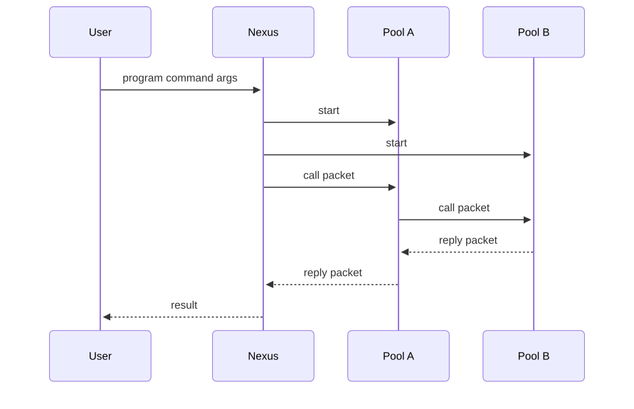
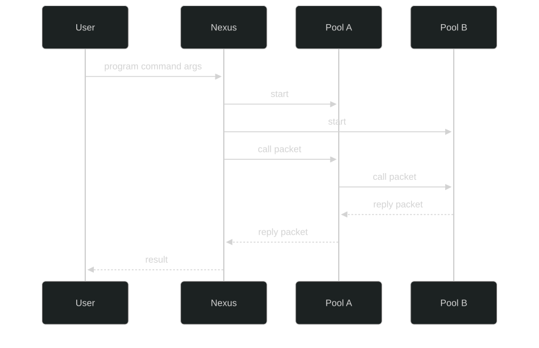
Data travels in one of three ways. Every value that leaves a process is first serialized to the language-neutral binary form described in Voidstar format and schema strings. Where that serialized form then goes depends on its size and on whether shared memory is available:
| Route | When |
|---|---|
Inline |
The serialized value is at most the inline threshold (64 KiB by default). It is copied into the packet. |
Shared memory |
The value is larger. It is written into shared memory and the packet carries a pointer to it (Shared memory layout). |
File |
The value is larger and shared memory is disabled. It is written to a temporary file and the packet carries the path. |
A shared-memory pointer is relative: it names a block by volume and offset, so it means the same block in every process of the program. This lets a pool read a large argument where its sender wrote it, without a copy across the socket.
Ownership. The nexus creates the program’s shared-memory namespace and temporary directory, and it alone removes them. It is also the only writer of every output stream and of standard output: pools hand it their batches through shared memory, and it writes the files (Streaming and memory mapping). Each pool watches a pipe whose write end only the nexus holds, and exits when the nexus does. Startup, shutdown and crash handling are specified in Process lifecycle.
12.2. Compilation artifacts
morloc make turns a Morloc program into a build directory and one or more
launchers. The build directory holds the generated pools and a manifest that
describes every command. A launcher is a short shell script that hands the
manifest to the nexus. This section specifies that layout, the manifest, and
what installing a program does.
Layout. A program is identified by a key: the --name given, else the
-o name, else the source file’s base name. Building demo.loc that calls
Python and C++ produces:
./
|-- demo CLI launcher
|-- demo.loc, foo.py ... the program's sources (not copied)
`-- demo-build/
|-- .morloc-build marker: this directory is a Morloc build
|-- manifest.json commands, pools and runtime settings
|-- envspec.json dependencies, for the environment manager
`-- pools/
|-- cpp/ generated source and the compiled pool binary
`-- py/ generated pool script
Compiled languages (C++, Rust) are built into a pool binary. Interpreted languages (Python, R) get a generated script that loads the user’s source files when it starts. Those files are found relative to the build directory, in the directory that contains it. The build directory and its source directory therefore move together; neither is relocatable alone. No absolute build path is recorded.
Rebuilds assemble the new tree in a sibling staging directory and move it
into place only after every pool compiles. A failed build leaves the previous
build in place. A rebuild deletes an existing <key>-build directory only if
it carries the marker file, so a user directory that happens to have the same
name is never removed.
Launchers. Each launcher records the manifest path on a comment line
(# morloc-manifest: demo-build/manifest.json), resolves its own location,
following symbolic links, so a link to the launcher from any directory
works, and execs the nexus with a mode and the manifest:
| Launcher | Created by | Runs |
|---|---|---|
CLI |
default ( |
|
Daemon |
|
|
There is no MCP launcher. morloc-nexus mcp takes either launcher or the
manifest itself as its target. Every nexus mode that names a program accepts
both forms.
The manifest is a JSON object written by the compiler and read only by the nexus. Its main fields:
| Field | Meaning |
|---|---|
|
Program name. |
|
Compiler version, build time, and the build directory (always |
|
One entry per language: the command line that starts the pool, relative to the build directory, and the pool’s socket name. |
|
One entry per exported function (below). |
|
Named groups of commands for the CLI. |
|
Data-route settings fixed at build time (Runtime overview). |
|
Prologue and epilogue templates for the run log (Logs and result caching). |
Each command records its name, its documentation, its arguments and return value, and either how to run it or the expression itself:
| Field | Meaning |
|---|---|
|
|
|
For |
|
Every pool the command can reach, so a CLI run starts only those. |
|
Each with its Morloc type and its schema string, which fixes the binary layout of the value (Voidstar format and schema strings). |
The manifest carries no schema version of its own. The nexus accepts a
manifest only if it was written by the same Morloc version, and refuses any
other with a message to rebuild. Builds are artifacts, regenerated on every
make, so an exact match costs nothing and removes every cross-version
compatibility question. Within a version, readers ignore keys they do not
know. Every entity also carries an empty constraints list and metadata
object, reserved so that later additions need no format change.
Installing (morloc make --install, or morloc install --build) builds
into the Morloc home rather than the working directory. The program’s key is
its module name. The source directory is mirrored to exe/<module>/,
skipping version-control data, paths listed in a .morlocignore file, and
stale build directories (found by their marker). The build lands in
exe/<module>/<module>-build/, and the CLI launcher is copied to bin/,
which you put on your PATH. A reinstall requires --force, and replaces
the whole mirrored tree.
12.3. Process lifecycle
A run creates processes, a private directory and shared memory, and must remove all of them however it ends: normally, by error, by signal, or by being killed outright. This section specifies how a run starts its pools, how it knows they are ready, how it stops them, and what it guarantees about cleanup and exit status.
Startup. Before it starts any pool, the nexus:
-
Creates the run directory, a fresh directory under
/tmpreadable only by the user, and writes an owner record into it (the nexus’s pid, process start time, boot id and pid namespace). It always lives under/tmpso a later run can find it; the owner record tells a dead run from a live one. -
Removes the run directories and shared memory of earlier runs whose owner is dead and whose pools have all ended.
-
Creates the run’s shared memory: the first volume and the stream registry (Shared memory layout).
-
Installs its signal handlers.
Before any of this, the nexus checks that the runtime library it loaded was built from the same runtime sources as itself, and every pool checks the library it loads against the nexus’s build (and, for Python and R, the binding loaded from the installation against the library). A mismatch means Morloc was upgraded while the program was starting; the process says so, asks for the program to be run again, and the run exits with status 75. Whether an already built program works with a newer runtime is decided by the runtime’s ABI version alone, so an upgrade never forces a rebuild.
It then starts each pool the request needs (Runtime overview):
-
It starts a pin: a tiny process that leads a new process group, ignores termination signals, and exits only when the nexus closes a pipe to it. The pin holds the group’s id, so the id cannot be reissued to an unrelated process while the nexus may still signal the group.
-
It records the group in the run directory, then starts the pool inside that group. The pool’s command line is the manifest’s command for it followed by three arguments: its socket path, the run directory, and the shared-memory base name. The pool inherits the nexus’s standard input, output and error unchanged.
-
It pings each pool on its socket until one answers with a ping packet (Packet protocol). Retries back off exponentially, the pause capped at 2 ms. If the pool process exits first, startup fails at once and reports its exit status.
The lifeline. The nexus holds the only write end of a pipe; every pool
receives the read end. The kernel closes the write end when the nexus exits
for any reason, including SIGKILL, so a pool always learns that its nexus
is gone. It then ends its own process group (SIGTERM, 200 ms, SIGKILL)
and starts a detached sweeper that removes the run’s shared memory and
directory once every recorded group has ended. Without the lifeline, a
killed nexus would leave pools and shared memory behind indefinitely.
Shutdown. At the end of a successful run the nexus first finishes
standard output and error and discards any output stream the program left
open (Streaming and memory mapping). At the end of any run, or on SIGINT,
SIGTERM or SIGHUP, it then stops its pools: SIGTERM to every pool group, up to 200 ms for
the pool processes to exit, then SIGKILL to every group. It then removes
the names of the shared-memory objects and the run directory. It removes
names but never unmaps memory at exit, because a background thread may
still be reading it. When a pool process exits on its own, the nexus kills
the rest of its group, so a pool’s worker processes never outlive it.
Cleanup on every path:
| How the run ends | Who removes shared memory and the run directory |
|---|---|
Normal exit, error, |
The nexus, before it exits. |
Crash signal ( |
The nexus’s crash handler removes the shared memory, then the signal takes its default action. |
Internal error (panic) |
The nexus kills its pool groups and removes what it registered before exiting. |
|
Each pool’s sweeper, after its lifeline closes; failing that, the next run’s startup sweep. |
A long-running daemon additionally recovers from a pool crash by stopping every pool, waiting for running requests, discarding the shared memory and starting fresh; that is specified with the daemon in Serving. A pool that refuses to start because Morloc was upgraded ends the daemon with status 75 instead, since restarting cannot help.
Exit status of a one-shot run:
| Status | Meaning |
|---|---|
0 |
Success. |
1 |
The call failed: an error raised by user code, a pool that died, an argument that could not be read, or a runtime error. |
2 |
Usage error: an unknown command or option. |
70 |
Internal error: an invariant inside Morloc itself was broken (a panic). Only a panic exits with 70. |
75 |
Morloc was upgraded while the program was starting (its nexus, runtime library or a binding come from different builds). Running it again works. |
128 + N |
Ended by signal N (130 for |
141 |
Standard output was a closed pipe (128 + |
12.4. Worker model
A pool serves many calls at once: concurrent requests to a daemon, parallel maps, and calls that come back into a pool while it is already waiting on another. This section specifies how the nexus and the pools divide that work among threads and processes, how pools grow and shrink, and the one rule that keeps calls between pools from deadlocking.
The nexus. A one-shot nexus makes one call and waits for it. A daemon runs
an accept thread and a fixed set of request workers (four more than the
number of pools, between 4 and 32); a request waits in a queue until a worker
is free. An MCP server over HTTP serves up to 128 connections, each on its
own thread, and runs at most as many tools/call requests at once as a
daemon has workers. In every mode, a SIGCHLD handler reaps child
processes as they exit, so a pool’s death is noticed at once, and each open
output stream has a writer thread with its compression jobs
(Streaming and memory mapping).
Pools. Each pool has one process that owns its socket, and a set of workers that run user code. How a worker is made depends on the language:
| Language | Workers |
|---|---|
C++, Rust |
Threads. An accept thread queues each connection; a worker thread takes it. |
Python |
Forked processes. A coordinator process, which loads no user code and runs no threads, binds the pool’s socket and forks the workers; each worker loads the user’s sources after the fork, and idle workers accept on the socket directly. |
R |
Forked processes. Idle workers accept on the pool’s socket directly. |
Forked workers are created only from a process with a single thread, because a forked child inherits only the thread that forked it, and any lock another thread held at that moment would stay locked forever. Loading user code after the fork keeps libraries that start their own threads out of the coordinator.
Parallel spans in C++. A parallel list call in a C++ pool (a
pmap, say) splits its list into spans and runs them on the calling thread
and on a set of helper threads that the runtime keeps for the life of the
process, so a call pays no thread start. The caller works through its spans
from one end while helpers take them from the other, so it is never idle
while work is left. Helpers are woken about 10 microseconds after a call
begins, so a call that finishes sooner never involves another thread, and
a longer one gains helpers one after another, each waking the next. A call
takes at most its worker count less one helpers. A helper idle for a
millisecond retires if there are more helpers than the available CPUs less
one, and otherwise after the pool workers' idle timeout (below); a forked
child starts with no helpers. A failure in
any span is reported on the calling thread.
The no-deadlock rule. A pool never leaves an incoming call waiting while every one of its workers is blocked on another pool. Cross-language calls can nest in any pattern: a Python function calls C++, which calls back into Python. If the only Python worker were waiting on C++, the callback would wait forever. So:
-
A thread pool starts a new worker whenever a call arrives and no worker is free.
-
A forked pool counts a worker as blocked while it waits on another pool (a foreign call, or a read or write on a channel), and forks a new worker when every worker is blocked. A call that arrives while some worker is merely computing waits for it.
Calls that arrive one after another reuse a single worker; only real concurrency adds workers. There is no upper bound, because any bound would reintroduce the deadlock.
Shrinking. Each pool starts with one worker. A worker beyond the first
that stays idle for 60 seconds exits (MORLOC_POOL_IDLE_TIMEOUT_MS changes
this), so a burst of concurrency is not paid for again if it recurs within a
minute, and a one-off spike is not kept for the rest of the run. A worker
decides to leave itself, and only while it holds no shared memory, since
memory a killed worker still held could not be recovered. R workers never
exit before the pool does.
Ordering. A connection carries one request and then its reply at a
time, and belongs to one calling thread, so a reply always reaches the
caller that asked. A kept connection (C++ and Rust pools) holds its
worker, which waits for that connection’s next call and takes no other;
calls on new connections still get a free worker or a new one, so the
no-deadlock rule holds.
Concurrent calls have no ordering guarantee relative to one another. A
pool’s own sequential code (a map in one worker, say) runs in order.
Locks. State shared between processes is guarded by locks that survive the death of their holder: if a process dies holding one, the next process to take it is told, and treats what it protects as damaged rather than waiting forever (Shared memory layout). Within a process, locks are always taken in one global order, so two threads can never each hold a lock the other wants.
12.5. Packet protocol
Every message between Morloc processes is a packet: a fixed 32-byte header, optional metadata, and a payload. The same format carries calls, results, errors and readiness pings over sockets, and it is also the on-disk format of streams and cached results. This section specifies the header, each packet type, metadata blocks, how a payload names its data, and the transport rules.
Layout. A packet is a header, then offset bytes of metadata, then
length bytes of payload. All integers are little-endian.
| Offset | Size | Field | Meaning |
|---|---|---|---|
0 |
4 |
magic |
|
4 |
2 |
plain |
Reserved, 0. |
6 |
2 |
version |
Reserved, 0. |
8 |
2 |
flavor |
Reserved, 0. |
10 |
2 |
mode |
Bit 0 on a call: the caller can reuse the connection; on the reply: the callee keeps it. Other bits 0. |
12 |
8 |
command |
Packet type (first byte) and type-specific fields. |
20 |
4 |
offset |
Bytes of metadata between the header and the payload. |
24 |
8 |
length |
Bytes of payload. |
Packet types, from the first command byte:
| Type | Name | Purpose |
|---|---|---|
0 |
data |
A value, or an error. |
1 |
call |
A function call: which function, and its arguments. |
2 |
ping |
Readiness check. The header alone; the reply is an identical ping. |
3 |
stream |
Opens a stream file; the length field is all ones, since a stream has no fixed length (Streaming and memory mapping). |
4 |
footer |
Closes a stream file with its index (Streaming and memory mapping). |
A call carries the function’s index inside the receiving pool (the mid
from the manifest) as a 32-bit integer at byte 16, and an entry-point byte at
byte 13: 0 for an ordinary call, 1 for a call read from a file, as on a
cluster node. Its payload is the arguments, each a complete data packet,
concatenated in order. The receiver walks them by their own sizes.
A data packet describes its payload in the command field:
| Byte | Field | Values |
|---|---|---|
13 |
source |
0 inline: the payload is the value. 1 file: the payload is a path. 2 pointer: the payload is an 8-byte relative pointer into shared memory (Shared memory layout). |
14 |
format |
0 JSON, 1 MessagePack, 2 text, 3 packet (the file is itself a packet or stream), 4 voidstar (Voidstar format and schema strings), 5 Arrow (Tables and tensors on the wire). |
15 |
compression |
0 none, 1 Zstandard. |
16 |
encryption |
Reserved, 0. |
17 |
status |
0 pass, 1 fail, 2 output pipe closed. |
18-19 |
generation |
For a pointer, the generation of the shared-memory block it names (Shared memory layout), little-endian; never 0, and a pointer packet recording 0 is refused. |
Not every combination is meaningful. Values crossing between pools use inline or pointer voidstar; tables use pointer Arrow; values in temporary files (shared memory disabled) use file MessagePack.
Errors are data packets with status 1, inline source and text format; the payload is the error message, including its cross-language traceback (Error propagation). Status 2 marks a write to a closed standard output, so the nexus can end the run with the conventional broken-pipe status instead of an error. A pool answers every call with exactly one packet: a request it cannot even read is answered with an error packet rather than silence.
Metadata is a sequence of blocks. Each block is the three bytes mmh, a
one-byte kind, a 32-bit body size, then the body. Readers stop at the first
block that does not start with mmh, and the region is zero-padded to a
multiple of 32 bytes.
| Kind | Name | Body |
|---|---|---|
1 |
schema |
The schema string of the payload’s type, NUL-terminated (Voidstar format and schema strings). |
3 |
volume index |
A 16-bit shared-memory volume index. |
4 |
frame index |
Sizes of the payload’s compressed frames; required when compression is Zstandard. |
5 |
subpacket index |
Offsets and element counts of a stream’s batches. |
6, 7, 8 |
stream diagnostics, final footer, footer status |
Used only in stream files (Streaming and memory mapping). |
A packet between pools needs no schema block, because both sides know the type from the compiled program. Packets written to disk carry one, so that any tool can read them without the program that wrote them.
Transport. Packets travel over Unix-domain stream sockets. A connection
carries one call packet and then its reply at a time; a caller thread keeps
one connection to each C++ or Rust pool for its later calls, while Python
and R pools close the connection after each reply.
There is no separate framing: the receiver reads the 32-byte header and then
exactly offset + length more bytes. Before a pointer payload is sent, the
sender takes a shared-memory reference on the receiver’s behalf, so the
block cannot be freed in the gap before the receiver reads it; if the send
fails, the sender drops that reference again.
A caller waits for a reply as long as the callee lives, with no deadline: a call may legitimately run for days. A pool reading a request waits as long as the sending process exists, checking once a second.
12.6. Shared memory layout
Large values pass between pools through shared memory, so a value written by one process can be read by another where it lies, with only an 8-byte pointer crossing the socket. This section specifies the shared-memory volumes and blocks of a run, the pointer forms that address them, and the rules for allocating, sharing and releasing a block among processes that may die at any moment.
Volumes. A run’s shared memory is a set of volumes, each a POSIX
shared-memory object mapped by every process of the run. Volume i is named
<base>-<i> with i as four hex digits, where the nexus chooses the base
name (/mlc-<pid>-<random>-<generation>) and passes it to every pool. The
generation changes when a daemon discards its shared memory and starts over,
so the new namespace never collides with the old. Volume 0 is never created:
index 0 is reserved for pointers into a self-contained buffer
(Voidstar format and schema strings). The first volume is index 1, with 64 KiB of data; a
process that needs more creates another volume at an unused index, at least
twice the size of the largest volume it has mapped, up to 32767 volumes. If the shared-memory
filesystem is full or unavailable, a volume is created as a file in the run
directory instead, and a zero-length stub under the shared-memory name tells
other processes where it is.
Each volume starts with a header:
| Offset | Size | Field | Meaning |
|---|---|---|---|
0 |
4 |
magic |
|
4 |
128 |
name |
The volume’s name, NUL-padded. |
132 |
4 |
index |
The volume’s index, checked when a process opens it. |
136 |
8 |
size |
Bytes of data after the header. |
144 |
8 |
poison |
Nonzero when the program fills released blocks with a poison byte ( |
152 |
- |
lock |
A process-shared lock guarding the block list (size set by the platform). |
- |
8 |
cursor |
Offset of the block where the next search starts, or -1. |
- |
4 |
next index |
In the primary volume, the program’s volumes are numbered below this. |
- |
- |
growth lock |
A process-shared lock taken to create the next volume. |
The header is padded to a multiple of 16 bytes, and the data region follows it. Volumes never leave the machine, so the platform’s own lock layout is acceptable.
Blocks. The data region is a sequence of blocks, each a 16-byte header followed by its data:
| Offset | Size | Field | Meaning |
|---|---|---|---|
0 |
4 |
magic |
|
4 |
4 |
references |
0 when free; all ones while the last reference is being dropped. |
8 |
8 |
size |
Bytes of data in the low 48 bits; its generation, advanced each time the block is allocated, in the top 16. |
Block data is 16-byte aligned and its size a multiple of 16, because some Arrow column types hold 128-bit words that another language’s Arrow library will read in place and expects aligned. To allocate, a process takes the volume’s lock, searches next-fit from the cursor (merging adjacent free blocks as it passes them), splits off any usable remainder as a new free block, and sets the block’s count from 0 to 1. It tries the volume it used last, then the others, then creates a new volume.
Pointers. Three forms address shared memory:
| Form | Meaning |
|---|---|
Relative |
Volume index in bits 62-48 and offset into that volume’s data in bits 47-0; -1 is null (Voidstar format and schema strings). The same in every process; this is the only form that crosses a process boundary. |
Volume |
An offset into one volume’s data region. Used inside a volume, for its cursor. |
Absolute |
An address in this process. Never stored in shared memory, since each process maps the volumes at different addresses. |
Converting a relative pointer to an absolute one maps the named volume on first use, so a process can follow a pointer into a volume another process created after it started.
References. A block’s count is the number of holders that may still read it. The allocator holds the first reference. A process sending a pointer to another takes a reference for the receiver before sending (Packet protocol), and the receiver owns it on arrival. Taking a reference on a block that is free or being released fails rather than reviving it. The last release overwrites the block’s data with zeros before marking it free, so a stale reader sees zeros instead of another value. A count names no holder, so the references of a process that died cannot be found and released one by one; they are recovered only by discarding the whole namespace, which the end of a run, or a daemon’s recovery, does.
Concurrency. Each volume’s lock is robust: if a process dies holding it, the next process to take it is told so. The volume’s block list may then be half edited, so the volume is marked damaged and never allocated from again; allocation moves on to another volume. A volume is created with exclusive creation, so when two processes race to create the same index one wins and the other opens the winner’s volume once its magic appears.
Removal. The process that created the first volume (the nexus) removes the names of all volumes when the run ends (Process lifecycle). It never unmaps them while threads may still read; the kernel frees the memory once the last process unmaps it.
12.7. Voidstar format and schema strings
Voidstar is the binary layout every value takes when it leaves a language: C-like fixed-width slots, with variable-length parts reached through relative pointers. A schema string is a compact description of a type’s layout. A buffer plus its schema is enough for any language to read the value, with no other type information. Every binding reads and writes this one layout, so a value crosses between any two languages with no intermediate format.
12.7.1. Schema strings
A schema is a string of type codes in prefix order. Codes that take children are followed by them; codes that take a count are followed by it.
| Code | Type | Followed by |
|---|---|---|
|
Unit |
nothing |
|
Bool |
nothing |
|
Signed integer of 1, 2, 4, 8 bytes |
- |
|
Unsigned integer |
- |
|
Float ( |
- |
|
|
nothing |
|
String (UTF-8) |
nothing |
|
Array |
the element schema; |
|
Tuple |
count, then each element schema |
|
Record |
count, then for each field its name and schema |
|
Optional |
the inner schema |
|
Enum (no constructor has fields) |
count, then constructor names |
|
Variant (sum type) |
count, then for each arm its name, field count and field schemas |
|
Table (Tables and tensors on the wire) |
optionally |
|
Input file, output stream, input stream (Streaming and memory mapping) |
nothing |
|
Names the schema that follows, for recursion |
name, then the schema |
|
Refers back to an enclosing |
name |
Counts and name lengths are base-64 numbers. A value below 64 is one digit
from 0-9, a-z, A-Z, +, / (0 to 63). A larger value is written as
=, its low digit, and the rest of the number, recursively: 100 is =A1.
Names are written as their length followed by their bytes. Enums and variants
have at most 256 constructors, and nesting is limited to 128 levels.
A schema may also carry hints in angle brackets (<dict>) naming the
concrete type a language should build. Hints do not change the layout and are
dropped from the canonical form stored in packets.
Examples, from real programs:
| Schema | Type |
|---|---|
|
|
|
|
|
|
|
|
|
A function value: home language, function index, captured values as packets |
12.7.2. Layout
Every value has a fixed-width slot. Integers are little-endian.
| Code | Width | Align | Slot contents |
|---|---|---|---|
|
0 |
1 |
Nothing. |
|
1 |
1 |
The value. |
|
2, 4, 8 |
natural |
The value. |
|
1 |
1 |
Constructor ordinal, in declaration order. |
|
16 |
8 |
8-byte count (bytes for a string, with no NUL; elements for an array), then a relative pointer to the data. An empty one holds the null pointer. |
|
16 |
8 |
8-byte limb count, then a word. With one limb the word is the value itself. With more, it points to that many 64-bit limbs, least significant first, in two’s complement. |
|
computed |
|
C struct rules: each field at the next offset aligned for it, total rounded up to the largest field alignment. Field names exist only in the schema. |
|
8 |
8 |
A relative pointer to the value, or null when absent. |
|
16 |
8 |
Byte 0 is the arm’s ordinal, bytes 1-7 zero, bytes 8-15 a pointer to the arm’s fields laid out as a tuple. An arm with no fields stores null. |
Array elements are packed at the element’s width. The data of an array of
numbers starts on a 64-byte boundary, so a binding can hand it to vector
instructions or a numeric library without copying. A record {name :: Str,
age :: I32} puts name at offset 0 and age at 16, with width 24.
Variant and optional slots hold a pointer rather than the value itself so
that every slot’s width is fixed. This is what lets a recursive type exist: a
Tree slot is 16 bytes however deep the tree goes. For the same reason, a
type may refer to itself only through an array, optional or variant.
Relative pointers. A pointer is a signed 64-bit integer. Bits 62-48 name a shared-memory volume and bits 47-0 an offset into it (Shared memory layout); -1 is null. Because a pointer names a volume rather than an address, it means the same thing in every process that maps the volumes. When a value is copied out of shared memory into one self-contained buffer (to send inline or write to disk), its pointers use volume 0 and are offsets from the start of the buffer; loading the buffer back into shared memory rebases them.
Reading a value takes only the schema and the buffer: the schema gives each slot’s width and each field’s offset, a pointer is followed to reach variable-length data, and a variant’s tag selects which arm’s schema governs its payload.
Other encodings. A value can also be written as JSON or MessagePack, for
the command line, files and caches. MessagePack writes tuples and records as
arrays, enums as ordinals, and variants as [tag, payload]; JSON writes
records as objects and constructors by name. Tables have neither form and
travel only as Arrow.
12.8. Tables and tensors on the wire
Tables are columnar, and every language with a serious table library already agrees on one columnar memory format: Apache Arrow. So a table does not travel as voidstar. It travels as Arrow data laid out in one shared-memory block, which each language imports without copying. This section specifies that block, how a table’s declared columns constrain it, and how tensors, which are ordinary voidstar values, carry their dimensions.
The table block. A table is always the whole value of a data packet, sent by pointer with format Arrow (Packet protocol), even when shared memory is otherwise disabled. Tables cannot be nested inside other values. The block holds a header, then node descriptors, buffer descriptors, a string table, and the data buffers, each buffer aligned to 64 bytes from the start of the block, with zeroed padding.
| Offset | Size | Field | Meaning |
|---|---|---|---|
0 |
4 |
magic |
|
4 |
4 |
version |
2. Any other version is rejected. |
8 |
4 |
columns |
Number of columns; equals the root node’s child count. |
12 |
4 |
nodes |
Number of node descriptors. |
16 |
8 |
rows |
Number of rows; equals the root node’s length. |
24 |
8 |
total size |
Bytes in the block; every offset is checked against it. |
32 |
8 |
metadata offset |
Reserved, 0. |
40 |
4 |
metadata length |
Reserved, 0. |
44 |
4 |
buffers |
Number of buffer descriptors. |
48 |
4 |
nodes offset |
Where the node descriptors start. |
52 |
4 |
buffers offset |
Where the buffer descriptors start. |
56 |
4 |
strings offset |
Where the string table starts. |
60 |
4 |
strings length |
Bytes in the string table. |
A node is one Arrow array: the root is a struct whose children are the columns, and a nested column has nodes of its own. Each 64-byte node descriptor carries what the Arrow C Data Interface needs to rebuild the array: length, null count, flags, the format string and column name (as offsets into the string table), and the index and count of its buffers and children. Each 32-byte buffer descriptor gives a buffer’s offset and size within the block. Slices are compacted and dictionaries decoded before a table is written, so every node starts at offset 0 and has no dictionary.
Zero-copy import. A receiver validates the block (every offset in bounds,
every buffer long enough for its node), then builds Arrow C Data Interface
structures whose buffers point into the block, holding a reference on it for
as long as the table lives. Python receives a pyarrow record batch, R an
arrow record batch, C++ a nanoarrow-based handle, and Rust an
arrow-rs record batch, each without copying the data. Converting further,
to a pandas or R data frame, is the language library’s own copy. Sending a
table writes a new block, except that a pool returning a table it received,
unchanged, passes the same block on.
Declared columns. A table’s type lists columns (T: in its schema;
Voidstar format and schema strings), and that list is a lower bound: a table may have more
columns, which travel after the declared ones. A declared column may be a
boolean, integer, float or string, or an optional of one of these; any Arrow
type may appear among the extra columns. On send, a declared column of
another type is cast if the cast loses nothing, and refused otherwise. On
receive, every declared column must be present with an acceptable type, and
a column not declared optional must have no nulls. The number of rows is
not part of the type and is not checked.
Tables from files. A table argument given as a file is read in the pool,
not the nexus. Arrow IPC and Parquet are recognized by their magic bytes;
otherwise a leading [ or { marks JSON, and anything else is delimited
text with a header row, split on TAB or comma by whichever names the declared
columns; the file’s name is never consulted. Columns bind to declared columns
by header name, and any other column is read as optional text. As output, the nexus
writes a table as JSON rows, JSON lines, CSV, TSV, Arrow IPC or Parquet.
Tensors are not a runtime type. A tensor is a pair of its dimensions and
its elements in one flat, row-major array, and travels as that ordinary
voidstar tuple: Matrix 2 2 Real has schema t2t2jja:4f8. Because the
array of numbers is 64-byte aligned in shared memory, Python receives a
read-only numpy view over it with no copy. When the dimensions are known at
compile time, the array’s length is checked against their product.
12.9. Streaming and memory mapping
A stream is a list too large or too long-lived to hold in memory at once, kept in a file and read or written in batches. Any pool can read a stream another pool is writing, and a finished stream file can be read at random without loading it. This section specifies the stream file format, its compression, how processes share an open stream, how every write reaches the file through a single writer in the nexus, and what a reader may rely on while the stream is still being written.
Stream types. Three Morloc types name a stream, each a 16-byte slot in
voidstar (schema codes F, I, O):
| Type | Use |
|---|---|
|
A finished file, read at random by element index. |
|
A stream read forward in batches. Several readers share one cursor, so together they consume each batch once. |
|
A stream written in batches. |
The slot’s first byte says what follows in its last eight: 0 for a relative pointer to a path (length, then bytes), 1 for the index of an open stream in the run’s stream registry (below). A path can cross between runs; an index means something only inside the run that opened it.
File format. A stream file is a sequence of packets (Packet protocol):
| Part | Contents |
|---|---|
Head |
A stream packet (type 3) whose metadata holds the schema of the list, |
Batches |
Data packets, one per batch. Each payload is a self-contained voidstar array of that batch’s elements, its pointers relative to the start of the payload. |
Footer |
A footer packet (type 4) whose metadata holds a batch index (offset and element count of every batch), a final marker, and a status. |
Tail |
8 bytes: the footer’s length as a 32-bit integer, then the magic bytes reversed ( |
A reader finds the footer from the end of the file through the tail, so
random access needs no scan. The status is closed for a stream written to
the end, paused for one a writer stopped and may resume, or failed for
one whose writer died in the middle of an update. While a stream is open for
writing, a temporary footer carrying only diagnostics is rewritten after
every batch, so the file always ends in a valid tail.
Compression. Each batch is compressed separately with Zstandard, so a reader can decompress any batch without the others. A batch is split into independent frames of at most 16 MiB, listed in the batch’s metadata, so they can be decompressed in parallel straight into shared memory. The user’s compression level 0-9 maps to Zstandard levels 0, 1, 3, 6, 9, 12, 15, 19, 21 and 22, with long-distance matching from level 7.
Sharing an open stream. A stream’s identity lives in a registry in shared memory, created with the run’s first volume. Each slot records the file’s path, schema and element count, a write buffer, and a generation number that changes when the slot is opened and when it is released. A stream index carries the generation it was made with, and every operation checks it, so an index to a closed stream can never touch the stream that later reuses its slot. A process reading a stream keeps its own descriptor and read-only mapping of the file.
Writing a stream. Every output stream has exactly one writer: a thread in the nexus, started when the stream is opened. No pool opens, locks or writes the file of a stream it writes to; it only hands the nexus its elements. Standard output and standard error are written the same way.
-
@openand@appendask the nexus to open the file. It takes an exclusive lock on the file, writes the head (or, for@append, finds the end of the last complete batch), registers the stream and starts its writer. -
A
@writefrom any process appends its elements to the stream’s buffer in shared memory. A C++, Python or R pool writing to a file or to standard output or error encodes the batch straight into the buffer, inside one transaction on the stream’s lock that it commits or aborts whole; an element that is a string or a byte or number list is copied and checked in one pass, and in C++ so is a list of them. Otherwise the batch is encoded first and the lock is held only for the copy. One `@write’s elements stay together; writes from different processes interleave only between writes, in the order they took the lock. -
A full buffer is moved onto the stream’s queue and replaced by an empty one, still under the lock and without touching the file. The writer takes buffers off the queue in order, compresses them on several threads (as under Compression above), and appends them to the file in queue order, so compression never reorders elements.
-
The queue holds a bounded number of buffers (for a compressed stream, the number of compression threads clamped to 2-4, at most 7, and lowered as more streams are written; 1 for an uncompressed one). A writer that finds it full waits for the nexus, never for another pool, so streams add no way for pools to deadlock.
-
@flushqueues the buffered elements and returns once the nexus has written them, so a reader opened afterwards sees them.@closedoes the same and also waits for the final footer, so when it returns the file is complete, its lock is released and its path can be opened again at once.
A process that exits or dies after its @write returned loses nothing: its
elements are already in shared memory, and the nexus writes them when the
stream is flushed or closed. A process that dies while holding the stream’s
lock may leave the buffer half updated; the stream is then failed, the
batches queued before it are still written, and the footer says failed. A
stream the program never closes is discarded when its index is dropped or
the run ends: what was queued is written, the unflushed elements are
dropped, and the file keeps its temporary footer, the sign that its writer
did not finish. A daemon recovering from a pool crash (Serving)
stops every writer before it discards shared memory, and each file ends
with a failed status.
Readers. An IFile maps the file and locates an element through the
batch index. A batch stored uncompressed and 8-byte aligned is read where it
lies in the mapping; any other batch is decompressed or copied into shared
memory first. An IStream reads forward from the shared cursor. A reader
that opens a stream still being written sees the batches written before it
opened, up to the temporary footer; reading past the end yields an empty
batch. Reading a compressed stream forward, the runtime decodes the next
batches ahead of the reader on at most two threads, so a reader costs about
the CPU of one decode however many cores the machine has.
Rewriting a file. Opening an OStream on a file that already has data
writes a new file and renames it into place, so a reader that still has the
old file mapped keeps a consistent view. Where a rename is impossible (the
directory is not writable, say) and nothing in the program is reading the
file, it is truncated in place instead. The runtime never deletes a stream
file; only a half-written temporary file is removed on failure.
12.10. Error propagation
A failure can start in any language, several calls deep, in a different
process from the code that should handle it. This section specifies the two
kinds of failure the runtime distinguishes, how a recoverable failure travels
back through pools as an error packet gathering a traceback, how @try turns
it into a value, and how a failure of the runtime itself ends a run.
Two kinds of failure.
| Kind | Examples | Caught by @try |
|---|---|---|
Recoverable |
An exception raised by user code in any language; |
Yes |
Infrastructure |
A pool that crashed or was killed; a broken connection; an internal error (panic) in the runtime. |
No |
A recoverable failure means the computation went wrong; the program can decide what to do. An infrastructure failure means the system that runs the program went wrong, so no Morloc code can be trusted to handle it.
Recoverable failures. Each generated function catches a failure that escapes it, appends one traceback line, and raises it again:
at <function> [<language>] (mid=<index>, <file>:<line>:<column>)
Anonymous functions are named _. At the edge of a pool, the failure
becomes an error packet (status 1, text payload; Packet protocol) carrying
the message and the lines so far. The calling pool’s stub reads the error
packet and raises it as a native failure in its own language, whose
functions then add their lines. So the traceback grows across every pool
the failure crosses, innermost call first:
nope at _ [py] (mid=2366, t.loc:12:23) at _ [cpp] (mid=2364, t.loc:12:17) at chain [cpp] (mid=4, t.loc:1:34)
A program built with morloc make --debug also records each active frame’s
arguments when a failure passes through it, and adds them to the message.
@try. @try e evaluates e. If it completes, the result is Ok v; if
a recoverable failure escapes it, the result is Err msg, where msg is
the message with the traceback gathered so far. A failure is caught the same
way whichever language raised it.
At the nexus. A failure that reaches the nexus ends a one-shot run with
Error: run failed, the message and its traceback on standard error, and
exit status 1. A command whose result is a variant whose arm is named Err
is treated the same way: the value is printed on standard error and the run
exits 1, so a failing command fails in a shell pipeline even though it
returned a value. A daemon answers the request as failed and keeps serving.
Infrastructure failures. A pool that loses a pool it called, or whose
runtime breaks one of its own invariants, does not answer with an error
packet: it ends its own worker. Its caller then sees a closed connection,
which is itself an infrastructure failure, so the failure travels to the
nexus whatever code lies between, and no @try along the way can catch it.
The nexus reports which pool died and how, ends the run with status 1 (70 if
the nexus itself panicked; Process lifecycle), and removes the run’s
processes and shared memory. A daemon fails the request and restarts its
pools. A process that dies prints its own diagnostics to the standard error
it shares with the nexus, so they reach the user directly.
Closed output. Writing to a standard output that the reader has closed
(as with | head) is neither: the pool answers with status 2, and the nexus
ends the run with status 141, as a native program would.
12.11. Collect, fold, parse and render
A command’s docstring can attach data-flow directives to it:@parsereads an argument from a file in a foreign format,@collectstreams a command’s output instead of returning it whole, and output actions (@render,@with, with@fold) turn that output into other results, each written to its own destination. The chapters on Arguments, Streaming output with@collectand Output actions show how to use them; this section specifies where each step runs, what is held in memory, and how several outputs are produced from one run.
Everything is compiled into ordinary commands. The compiler lowers each directive into Morloc code and, where needed, into extra commands in the manifest that the user never names: a parse entry per command with parsed arguments, an action entry per output action, and a replay entry per action for multi-output runs. The nexus only chooses which entries to run and where their output goes; all user-level work (parsing, folding, formatting) runs in pools.
@parse. An argument declares named formats, each with file extensions.
The nexus picks a format by looking only at the argument’s text, never the
file’s contents:
-
A
name:prefix selects that format (morloc:reads an ordinary Morloc value). -
Otherwise the longest matching extension wins, ignoring case.
-
Otherwise the argument is read as an ordinary value.
-is standard input, which at most one argument may claim.
The parse entry then calls the format’s handler in a pool with the path. A
plain argument’s handler returns the value, and every such argument is parsed
before the command body starts. An IStream argument’s handler feeds batches
to the command as it runs. An IFile argument is first written to a stream
file in a temporary stage directory and opened from there. A handler’s
failure names the argument, format and path, and ends the run with status 1.
@collect. @collect producer gives the producer a sink and streams
whatever it passes to the sink to the command’s output, batch by batch. The
batches travel through shared memory to the nexus, which writes each in the
requested format as it arrives. Nothing is gathered: memory use does not
grow with the output.
Output actions consume what the command collects. Each runs as its own entry, a copy of the command whose sink is replaced:
| Kind | Sink, and what the handler receives |
|---|---|
gather |
Writes every batch to a temporary stream file. The handler receives the whole list, or an |
|
Calls the handler on each batch inside the sink. Memory stays constant. |
|
Folds each batch into an accumulator with |
A @render handler returns bytes (Str, [Str], Vector U8 or a list of
Vector U8), which are written verbatim, ignoring -f. A @with handler
returns a typed value, which is written in the -f format.
One output. When only standard output is wanted, the nexus runs the action’s entry directly (or the command itself) and writes its result.
Several outputs. When an action writes to a file, or a command has more than one action, the run is staged:
-
A stage process runs the command once and saves its value, its collected stream and its arguments as packet files. If standard output wants the command’s own output, the stage also writes it there as it runs.
-
Each action is replayed in its own process on the saved output, writing to a temporary file beside its target. A replay reads the saved output as a value the program built, so the checks Morloc applies only to data from outside (text that must be valid UTF-8, for instance) are not repeated, but only for the file its nexus made: one in the run’s private stage directory, owned by the user, writable by no one else and not a link. Any other packet file, and every argument of a call packet read from a file, is read as data from outside.
-
Only when every process has succeeded are the temporary files renamed into place. A failure removes them and ends the run with the failing process’s status, so a named output is either complete or untouched.
The command body runs once however many outputs are requested, so a slow or effectful command is never repeated per output. Output formats are checked against every destination before anything runs, and conflicting destinations (two claims on standard output, two outputs to one file) are a usage error with status 2.
12.12. Logs and result caching
A run can leave two kinds of state behind it, both opt-in: a log directory recording what the run did, and a result cache that lets a later run skip a call it has already made. Both outlive the run, unlike the private run directory of Process lifecycle, which is always removed. This section specifies how each is activated, its layout and formats, and what holds when several runs share them.
12.12.1. Log directory
--log-dir DIR (or MORLOC_LOG_DIR) gives each run its own directory,
DIR/<run id>/, where the run id is the start time in UTC plus eight random
hex digits (20261009T143000Z-1a2b3c4d). A Morloc program started by
another program’s pool inherits the outer run’s directory, so a nested
pipeline logs into one place. The directory is created on first write and
never removed.
| File | Contents |
|---|---|
|
Run-scope lines: the prologue, the epilogue, and the benchmark summary. |
|
Start, pass and fail lines for calls in a labeled group. |
|
Written once, at exit, by atomic rename (below). |
|
Programs built with |
summary.json holds status (ok or fail), exit_code, command,
run_id, started_at and finished_at (RFC 3339), wall_ms,
morloc_version and error (null on success). Because it appears only by
rename, a script may wait for the file to exist and then read it whole.
--summary FILE writes the same object to a chosen path instead.
Log lines come from templates in the program’s configuration, with
placeholders such as {name}, {run_id}, {runtime}, {exit_code} and
{error}. Placeholders known at build time are filled in by the compiler;
the rest by the nexus as the line is written. Every line goes to standard
error (colored only on a terminal) and to the matching log file. There are no
levels; --quiet suppresses all of them. At exit the nexus writes the
benchmark summary (count, mean, min, max, total and standard deviation per
labeled function, from one timing record per successful call), then the
epilogue, then summary.json.
12.12.2. Result cache
A labeled group configured with cache: true has its calls cached. The
compiler wraps each such call: compute a key, return the stored result on a
hit, otherwise run the call and store its result. Only successful results
are stored. The key, the layout of entries and the rules that let many runs
share them are specified in Caching.
13. Compiler Architecture
This chapter specifies how the compiler turns Morloc source into the artifacts described in Build Architecture. It begins with a map of the pipeline. It then follows a program through it: parsing and module loading, typechecking, effects, term sharing, realization, segmentation into pools, serialization, ownership and code generation. It ends with how the manifest’s command interface is derived, how a new language is brought into Morloc, and the API of the runtime library, which is the contract every language binding is written against.
13.1. Pipeline overview
The compiler is a sequence of passes over three kinds of program representation: a graph of modules, a set of typed expression trees (one per exported function), and per-language trees of callable units that become pool source. This section lists the passes in order and states what each consumes, produces and guarantees to the passes after it. It is the map for the rest of the chapter.
Three phases. The frontend reads source into a module graph, dissolves it into one expression tree per export, and typechecks those trees with general types: types that name no language. The middle chooses, for every call, which implementation runs and in which language. The backend lowers each realized tree into manifolds: the compiler’s unit of generated function, one per call site that needs a function of its own. It cuts the manifolds into per-language pools, adds serialization where values cross, and prints source text.
The passes. Each pass may assume what the passes before it established. A pass that receives input violating one of these guarantees stops with an internal compiler error; no pass repairs its input.
| Pass | Produces | Guarantees after it |
|---|---|---|
Lex and parse (Parsing and module loading) |
One syntax tree per source file |
Layout is explicit; sugar ( |
Load modules (Parsing and module loading) |
A directed acyclic graph of modules, edges labeled by import lists |
Every import names a loaded module and only names that module exports. |
Resolve names and link (Parsing and module loading) |
Global tables of signatures, implementations, types and instances |
Every name refers to exactly one declaration; local binders are unique program-wide; the several definitions of one term are merged. |
One tree per export |
An expression tree per exported function, with declarations inlined at their uses |
The module graph is gone; trees carry every candidate implementation of each term. |
Typecheck and specialize (Type system) |
Trees annotated with general types |
Every node has a general type; a polymorphic definition is elaborated once per type it is used at. |
Value checks and term sharing (Term sharing and inlining) |
Trees with sharing made explicit |
Alternative implementations do not provably contradict; a discarded |
Realize (Realization) |
Pure trees, and realized trees with one implementation and language per node |
Every call has exactly one implementation. A tree with no foreign call is pure and is evaluated by the nexus. |
Manifest (Interface generation) |
The command schema for every export |
Each concrete export becomes a command; a generic export is skipped with a warning. |
Express manifolds (Segmentation and cross-language calls) |
Per-language manifold trees with concrete types |
Every node has its concrete type in its language; applied lambdas are reduced. |
Insert effect boundaries (Effects) |
Trees with every suspension and force explicit |
The number of times each suspension runs is fixed; no later pass changes it. |
Segment into pools (Segmentation and cross-language calls) |
One set of manifolds per language |
No manifold calls across a language except through a foreign-call node. |
Serialize (Serialization) |
Manifolds with pack and unpack at every crossing |
Every crossing value has a wire form both sides agree on. |
Emit pool source (Code generation, Ownership) |
Source text of each pool |
Each read of a value in C++ and Rust is a borrow, copy or move. |
Build |
The program directory of Compilation artifacts |
Pools are compiled, and the manifest records each pool’s source fingerprint. |
General and concrete types. The frontend works only with general types, so a program typechecks before any language is chosen. Concrete types, the native types a value has in one language, enter after realization. Keeping them apart is what lets one signature have implementations in several languages and lets the compiler choose among them late (Type system, Realization).
Trees, not a graph. After the frontend each export is its own tree, and a definition used in several places appears at each of them. Done naively, this duplicates terms exponentially in nesting depth. Term sharing and the rule that a definition is elaborated once per type keep the output proportional to the source (Term sharing and inlining).
What runs where. Realization divides the program. A pure tree never reaches a pool: the nexus evaluates it directly. A realized tree becomes manifolds, and segmentation places each manifold in the pool of its language. The call from the nexus enters a pool at the manifold of the export, and calls between pools go through generated stubs (Segmentation and cross-language calls).
Inspecting the pipeline. morloc dump prints the program after
parsing. morloc typecheck runs the frontend and prints each export’s
general type; with --realize it also runs realization. Neither command
builds pools.
13.2. Parsing and module loading
The first frontend passes turn source text into a graph of modules in which every name refers to exactly one declaration. This section specifies how text becomes tokens, how indentation becomes explicit block structure, how sugar is removed, where docstrings attach, how imports are found and loaded, and how names, namespaces, exports and the many definitions of one term are resolved. Its output is the input of the type checker (Type system).
Tokens. A token starting -- opens a line comment and {- … -} a block comment;
block comments nest. Two comment forms are kept: --' lines are docstrings
and --* lines name export groups. The case of a name’s first character fixes
its class: lowercase or _ for terms and type variables, uppercase for types,
constructors, classes and kinds. Keywords cannot be names. A few tokens depend
on the whitespace around them, so the lexer decides them rather than the
grammar:
| Written | Token |
|---|---|
|
A |
|
No whitespace on either side: |
|
After whitespace or a delimiter: an intrinsic. |
|
A |
|
One qualified name: |
Layout. Indentation is turned into explicit structure before parsing, as
virtual {, ; and } tokens, so the grammar itself is free of
indentation. A block opens after where, let and do, and around a module
body. The column of the block’s first token is its indentation: a later line
starting at that column begins a new item, one starting left of it closes
the block. A let block also closes at in. An explicit { directly after
the keyword switches the block to braces and semicolons, and inside
parentheses and brackets indentation is not tracked. One exception keeps
record literals usable after do: { followed by a lowercase name and =
is a record literal, since no statement begins with name =.
Grammar and desugaring. The parser reads the token stream into a concrete syntax tree that keeps source spans for diagnostics. Desugaring then lowers it to a small core of expressions and declarations, each node with a unique index that later passes use to attach types, source locations and metadata:
| Written | Core form |
|---|---|
A file with no |
A module named |
Lowercase variables in a signature |
Universally quantified over the whole signature. |
|
A text pattern applied to the interpolated expressions. |
|
Sequenced binds (Effects). |
|
Kept as a flat chain until imports are resolved (below). |
Operator chains wait because a fixity declaration travels with its operator:
the precedence of * in one module may be declared in a module it imports.
Once imports are resolved, each chain is re-associated using the fixities in
scope in its module, plus the built-in defaults (Infix operators).
Docstrings. The lexer removes --' lines and keys each consecutive run
by the position of the token that follows it; the parser attaches the run to
the declaration starting there. A docstring may describe a module header, a
signature (the term, never its return type), one argument type inside a
signature, a source list item, a type, newtype or record
declaration, or a record field. A line starting @keyword is a directive,
any other line is prose; an unknown directive is kept as prose with a
warning. A docstring on a type alias is inherited by every argument written
with that alias, and the nearest docstring wins: one written on the argument,
then the alias named there, then the next alias down its chain. A term’s
docstrings are never inherited through bar = foo. How docstrings become a
command-line interface is Interface generation; the user’s view is
Docstrings.
Module graph. Each module keyword starts a module, which runs to the next
module keyword or the end of the file. Loading begins with the entry file
and repeats: for every import edge whose target is not yet loaded, find the
target’s file, parse it, and add its modules and edges. The result is a
directed graph of modules, edges labeled by import lists. A module that
imports itself, or any import cycle, is a load error. Every module belongs to
a package: the program, rooted at the entry file’s directory, or an
installed module reached by a dotless import, rooted at its own directory.
| Import | Meaning |
|---|---|
|
The installed module |
|
The local module |
|
Only the listed items, optionally renamed. Listing an item |
|
Every term arrives as |
An anonymous module (module (*) with no name) takes its name from the
import that reaches it.
Exports. module m (a, b) exports exactly a and b, and exporting a
name the module does not define is a load error. module m () exports no
terms. module m () exports every term defined in the module, and a term
imported into a module counts as defined there, so a module that imports
several others and exports () is their union. Export groups (--*) only
organize the command-line help (Interface generation).
Name resolution. After import resolution, every name in scope in a
module maps to the declaration it came from. Terms are linked across modules
by these maps. Type names are resolved where they are written: a type name
in a signature keeps the meaning it has in the module that wrote the
signature, and importing the term does not rebind it in the importer. Several
types of one name may therefore coexist in a program, each bound to its own
declaration; nothing resolves a type by its spelling in a global scope. An
undeclared type name is a load error, as is importing a type and declaring
the same name. Base type names such as Int and Str are ordinary
declarations, so a program may supply its own prelude. Finally, every local
binder (a lambda parameter, a let or where binding) is renamed to a name
unique in the whole program, because later passes copy a definition’s body to
each of its uses and a copied body must not capture a binder at the use site.
- One term, many definitions. A signature `f
-
T` declares one term with general type
T. Every definition offand every sourced function namedfin scope is an implementation of that term, and a second definition adds an alternative rather than shadowing the first; which alternative runs is chosen by realization (Realization, One term may have many definitions). The rules that decide which term a signature or definition belongs to:
| Situation | Result |
|---|---|
Two signatures for one name in one scope |
Error, even when the types are equal. A |
|
One more implementation of the |
|
A new term |
|
Error; import it under another name instead. |
When one term reaches a module along several import paths, its implementations are merged into one set; two declarations whose general types differ are an error. Instances of one class at one type are merged the same way, their implementations joined as alternatives (Type system).
Trees per export. Once every name is resolved and every declaration is merged, the graph is dissolved. Each exported term becomes one expression tree, in which every reference to a term carries the term’s full set of implementations. These trees are what the type checker sees.
13.3. Type system
Morloc checks a program against general types, which name no language, and only later gives each value a concrete type in the language that holds it. This section specifies the checker: bidirectional inference with an ordered context, how polymorphism is resolved before anything runs, typeclass instance selection, kinds and the side solvers for type-level naturals, strings, lists, sets and rows, aliases and newtypes, and type equality. It ends with how a general type becomes a concrete one. Effects are in Effects; choosing the language of each call is Realization.
- Two layers of types. A signature such as `sum
-
[Int] → Int` is general: it says what the function means, in every language at once. A native form (
type L ⇒ …) says how one language spells a general type. The checker reasons only about general types. Concrete types are derived after realization has placed every call in a language, by translating the general type through that language’s native forms.
Bidirectional checking. The checker follows the ordered-context design of Dunfield and Krishnaswami. Each term is either checked against a type it is expected to have (an argument, an annotated body, a definition with a signature) or has its type synthesized from its parts (a variable, an application). The context is an ordered list of universally bound variables, unsolved existential variables, solved existentials and scope markers; order fixes which existential may mention which variable, so a solution can never escape the scope of a variable it uses. Instantiating a polymorphic type creates fresh existentials, and checking against one binds its variables in the context. Where an expected type meets a synthesized one, the checker requires the synthesized type to be a subtype. An unsolved existential can already carry partial knowledge, such as the record fields or tuple positions read from it, and that knowledge is checked when it is solved.
Subtyping is narrow. It does three things and nothing else: it relates a
polymorphic type to its instances; it lets T flow into ?T, the only value
coercion in the language (Optional types); and it lets a type with a known
dimension flow into the same type with that dimension omitted, so
Vector 3 Real is accepted where Vector Real is expected. Int is not a
subtype of Real. Dimensions in the same slot must be equal after
reduction.
Polymorphism. A lowercase variable in a signature is universally quantified over the whole signature, and each use of the term instantiates it afresh. Every polymorphic use is resolved to concrete types at compile time: no value crosses a language boundary at a type that still holds a variable. To get there, a definition is typed at each type it is used at: either a copy of its body is checked at each use or, when it has a signature, the body is checked once against the signature and elaborated once per distinct type of use. Recursion at a different type than the one being elaborated (polymorphic recursion) has no finite set of elaborations and is rejected. A variable that nothing determines, where a native representation needs it, is an error at the term where it occurs and names the variable; a variable no representation needs, such as a phantom parameter, is not.
Typeclasses. A class declares method signatures; each method name
belongs to one class. A method used at type T runs an implementation of
the instance for T, and that instance’s implementations are all those
given for it, in any language and any module: they are alternatives, like
the several definitions of one term (Parsing and module loading). Selection works
on general types. The candidates are the instances whose head the use-site
type is an instance of; the most specific one is kept. If the candidates
have no unique most specific head (two heads overlap and neither specializes
the other), the use is rejected as ambiguous. An instance on a transparent
type alias is rejected, since an alias is the same type as its expansion
and would collide with its expansion’s instance. Instances never type a
record literal: a literal whose type would come only from the instance a
method resolves to is an error at the literal. See Overload terms with typeclasses.
Kinds. A type parameter has kind Type unless declared otherwise
((n :: Nat)). The other kinds are Nat, Str, Rec, List and Set;
values of these kinds exist only in the type system and are erased before
anything runs. An alias parameter that fills only slots of one non-Type
kind takes that kind. In a signature, a binder on an argument ties the
argument’s value to a type-level variable: n@Int binds a Nat, x@Str a
Str, xs@[Str] a List. See The kind system and Tensors.
Side solvers. Equations between type-level expressions of a non-Type
kind are handed to a solver for that kind. An equation a solver cannot
decide yet is deferred and retried as variables are solved.
| Kind | What the solver decides |
|---|---|
|
|
|
Rows: labeled fields with row variables standing for unknown blocks of fields. Fields are matched by label, a row variable takes what is left, and a match with more than one solution is deferred. |
|
Literals only: two literals, or concatenations folding to literals, are compared. A free variable is solved by ordinary assignment, never by solving a word equation. |
|
Ordered lists of strings. Ground prefixes and suffixes are stripped; a single variable against a ground remainder is solved; two variables defer. |
|
Unordered sets of strings, compared in a canonical sorted form. Union, intersection and difference reduce on ground operands. |
Aliases. A type alias is the same type as its expansion, in every
position. Two aliases with one expansion are the same type. The checker
keeps alias names in the types it reports, so diagnostics name the alias,
but it unfolds an alias head wherever two types are compared or
decomposed, so no judgment depends on whether an alias was written. An
alias must be applied to all of its Type parameters, every parameter must
appear in its body, and its body may name a type of any kind. A recursive
alias is legal only when it is regular (the alias recurs at its own
parameters) and every recursive occurrence sits under ? or [ ], as in
type T a = (a, ?(T a)). An alias owns no instances and no native forms;
it shares those of its expansion.
Newtypes. newtype N = T makes a new type that is never equal to T
and crosses language boundaries in the form of T. It owns its instances
and native forms. Values move between N and T only by explicit
conversion through the Packable class: unpack comes with every newtype
that has a representation, and pack with deriving (Packable), which requires every
parameter of N to be determined by T. A parameter of a newtype need not
appear in its representation (newtype Buffer (n :: Nat) a = List a), which
is how a dimension is added to an existing type. See Naming a type: type and newtype and Serializing custom types with Packable.
Type equality. Two types are equal when, with every alias unfolded,
they are the same constructors applied to equal arguments, up to renaming of
bound variables. Under a recursive alias the unfoldings are infinite, so
equality is coinductive: a pair met again while it is being compared holds.
A type name denotes its declaration, not its spelling, so two types of one
name from different modules are different types. A newtype is equal only to
itself. Ground Nat expressions are equal when they reduce to the same
number.
From general to concrete. The concrete type of a value in language L
is its general type translated through L’s native forms. A native form is
a template over the type’s parameters: `type Cpp ⇒ List a =
"std::vector<$1>" a spells [Int] by substituting the C++ spelling of
Int for $1. The form text is opaque to Morloc and is checked only by the
language’s own compiler or interpreter. Translation walks the type from the
outside in. A head with a native form in L uses it; an alias with none
unfolds one step and retries; a newtype with none uses its
representation’s form; a record takes its field names and types from the
general declaration and only its container from record L ⇒ R = "name"; a
data type with no form is generated under its own name. How these
concrete types reach generated code is Realization and
Native type mappings.
13.4. Effects
An effectful type<E> Tdenotes a suspended computation: a value that, when run, may perform the effects inEand yields aT. This section specifies what the type checker requires of suspensions, when one is run, and how code generation turns them into closures of no arguments. It also covers how they are reconciled at every point where a value meets a calling convention that has no suspensions, so that each computation runs exactly as often, and in the order, the program says, in every language. The user-facing description is in Effects and delayed evaluation.
A suspension is a value. <E> T and T are different types, and no
pass erases, strips or reinterprets the effect layer. The model is
call-by-push-value: a suspension is a thunk, and the only way from <E> T
to T is to run it. Holding, passing, returning, projecting or storing a
suspension in a record, list or optional runs nothing. Every run runs the
computation again. The compiler never shares, hoists, memoizes, duplicates
or drops a run. This is the one place where morloc’s freedom to reorder and
share work stops (Term sharing and inlining).
Effect labels are tags. The compiler gives a label no operational
meaning. It propagates labels and checks that they are covered. What IO
or Rand permits is decided by the library that declares it. Effects come
from the signatures of sourced functions. Such a row is the author’s claim,
which the compiler takes as given because it cannot look inside foreign
code. Every other row is inferred by composition and checked against the
signature that declares it.
Typing. Rows enter the bidirectional checker (Type system) through subtyping:
| Rule | Meaning |
|---|---|
Inclusion |
|
No coercion |
A |
Body fits signature |
The effects a definition’s body runs must be a subset of the row in its signature. Declaring more than the body runs is legal. |
Layers stay apart |
|
Row variables |
A row may end in a variable standing for unknown further labels, so combinators can thread a callback’s effects into their result. An unconstrained row variable is |
Building and running. A do block builds one suspension from its
statements. Only a bind runs a suspension: x ← t, or a bare statement
t. Application, let, projection, passing and returning run nothing.
!e is sugar for a bind inserted above the statement that contains it,
with a fresh name in its place. The front end hoists every ! into an
explicit bind and desugars each block into nested binds, so later passes
see only two operations: suspend (build a thunk around an expression)
and force (run a thunk once). A force applied directly to a suspend
cancels.
Evaluation order. Pure work has no order: the compiler may move,
parallelize or reorder it, including the arguments of one call. The only
order the compiler must keep is the order of effect statements in a do
block. A pure let in a block is never computed before an effect statement
written above it. A pure argument is evaluated once, at the application.
When a suspension is built from a call whose arguments still need work, the
arguments are computed outside it and the suspension captures their values,
so a second run repeats the call and nothing else.
Failure is not an effect. A fallible operation returns Try e a, an
ordinary data type. @throw abandons the computation and carries no row.
@try :: <e> a → <e> (Try Str a) catches every recoverable failure that
escapes its argument, whichever language raised it, and passes the row
through unchanged. Internal errors and interrupts bypass it. See
Failure is not an effect.
Effect boundaries. After realization and segmentation (Realization, Segmentation and cross-language calls), every position in a pool’s tree sits under a boundary that dictates a calling convention: a plain value or the suspension itself. A boundary pass compares each position’s declared type with its boundary and inserts a force or a suspend wherever they differ by a layer:
| Boundary | Expects | Reconciliation |
|---|---|---|
Return of a command |
plain |
The root of a command whose result is |
Argument of a command |
suspension |
The caller of a program holds values, not thunks. An argument declared |
Sourced call |
suspension |
Foreign functions are eager. When a source is declared to return |
Callback into a host |
plain |
A morloc function handed to a host at an |
Host function into morloc |
suspension |
A host function received at that type is wrapped to build the suspension the type promises. |
Cross-pool call, callee side |
plain |
The callee’s entry point runs one layer, and the result travels over the wire. |
Cross-pool call, caller side |
suspension |
The caller holds the remote call as a suspension, so forcing it makes the call. |
Wire serializer |
either |
A suspension passed as data crosses as a closure that calls back to its home pool once per run (Serialization). |
Host conversion follows the declared type to any depth: function arguments
(contravariantly), results, record fields, tuple and list elements,
optionals, and packable types. Under a type variable of the source’s
signature the host holds the value opaquely, so nothing there is converted.
A sourced map :: (a → b) → f a → f b used at b = <IO> C builds
suspensions and does not run them. A value that cannot be rebuilt at its
type is refused at build time with an error. After boundaries are placed,
no later pass adds or removes a force. Passes may move and rename code, but
the number of runs on every path is fixed.
Lowering. A suspend becomes a closure of no arguments. Its captured
variables are the expression’s free variables, copied into the closure when
it is built. A force becomes a call of that closure with no arguments. A
suspension therefore shares every code path a closure already has. It can
be stored in an aggregate, captured, passed to a foreign function as a
callable, and sent across pools (Code generation). An intrinsic whose
result is declared as a suspension (@save, @try and the like) is the
eager runtime call. Forcing it calls it, and holding it builds a closure
that makes the call.
13.5. Term sharing and inlining
The compiler expands each named term at every place it is used, so that each use can be realized on its own, in its own language. Done naively, that expansion makes generated code, and type checking, grow exponentially with the depth of the program’s call graph. This section specifies how the compiler keeps both proportional to the source: shared specializations for functions, let-sharing for data values, shared closures for lambdas in pools, and static-argument specialization for recursive helpers. Each one preserves the evaluation semantics of Effects.
Inline by name. A morloc term may have several implementations in
different languages, and realization chooses one for each call
(Realization). So the front end does not compile a definition
once and call it. It substitutes the definition at every name that refers
to it, with fresh indices, and each copy is realized independently. A
where binding is treated the same way as a top-level definition.
Why that explodes. If each level of a definition names the one below
it twice, d levels of expansion produce 2^d copies:
f0 x = g x
f1 x = f0 x + f0 (x + 1)
f2 x = f1 x + f1 (x + 1)
-- ... f_d has 2^d copies of f0, and type checking pays the same exponentThe same thing happens with a value. y = expensive x named twice in
where would be computed twice per copy. That costs time, and it would
also violate the language’s evaluation rules: a pure argument is evaluated
once, at the application, and a named value is computed at most once each
time its scope is evaluated.
Shared specializations. A signed definition is checked once against its signature. Each use is then solved to a type, and that type, with the definition, forms a key. The definition is elaborated once per key, and every use at the same key gets that one elaboration, so checking cost follows the number of distinct keys, not the number of paths. When a use’s type is not fully solved, the definition or export that contains it is checked with every term expanded in place. An elaboration is either copied to each use or shared: emitted as a root of its own, which each use calls by name. Sharing turns copies into calls, so it is allowed only when that changes neither what the program computes nor how often it computes it:
| Condition | Why |
|---|---|
A function of at least one argument, whose result is not a suspension |
A shared root is called. A constant or a suspension would be evaluated per call instead of per use. |
Every implementation takes all its arguments at once and is already a value |
A function that does work before returning a function is evaluated once per command. As a root it would be evaluated once per call. |
Fully solved key, no recursion out of the body |
A recursion keeps its back-edges inside the copy that contains it. |
Reads no top-level constant |
Such a constant is computed once per command at the use. Inside a root it would be recomputed per call. |
Larger than a small size threshold |
Small bodies are cheaper to inline, and inlining them does not compound. |
Sourced implementations of a shared term stay at each use, so realization can still pick a foreign implementation per call site and fall back to the shared root.
Let-sharing. After type checking, the copies of a data-typed binding
(a type with no function or suspension inside it) are merged within one
evaluation of their scope and bound once, as a let, at the nearest point
that every use passes through. The binding may be a parameterless where,
a top-level constant, or a let. Placement has three rules:
-
A use in one arm of a conditional, in one implementation of a term, or in the argument of
@tryis served inside that arm. A value read only by a@tryargument is computed inside it, so its failure becomes that@try’s `Err. Uses in several exclusive arms are each served in their own arm. -
A pure
letin adoblock is never placed above an effect statement written before it. An effectfullet, a block’s discarded statement, and a pattern check’s guard are never moved. -
A
wherebinding nothing reads is never computed.
A top-level constant, or a value a definition computes without reading its parameters, is computed at most once per command, however many functions or recursion levels its copies came from. A value read by pools in several languages is computed once and passed to each (Segmentation and cross-language calls).
Beta-reduction. Expansion leaves applied lambdas, (\x → body) arg,
which code generation reduces before segmentation. Because arguments are
strict, an argument is substituted into the body only when it is a value:
evaluating it computes nothing. In a pool, even a value is substituted
only when the parameter is used at most once, or when it is a scalar
literal; otherwise it is bound once and shared. Any
other argument is bound once by a let at the application, whatever its
reference count, zero included, so its work happens exactly once and in
the right place. When a substituted value is used once, the argument
itself moves into the body and nothing is copied, which keeps a long chain
of reductions linear.
Lambdas: inlined or shared. What happens to a lambda bound to a name and used more than once depends on where the code runs:
| Where | Rule |
|---|---|
Pure nexus evaluation |
A command with no language pool is evaluated by the nexus itself, which holds only data and cannot keep a function value. Every lambda is inlined at every use. A function computed by an expression is split into its strict parts, bound once, and a choice among function values that is substituted. A computation with no such form is rejected with an error asking for a language pool. |
Pools |
A lambda used once is reduced away. A lambda used more than once is kept as one native closure and each use calls it, so its body is emitted once. A function computed by an expression is split the same way when possible, and otherwise computed once into a closure that each use calls. |
Static-argument specialization. A recursive helper that receives a function and passes it unchanged to every recursive call would otherwise carry it as a closure value, which is heavier than a direct reference. Through a serial entry point the closure is a proxy that calls back into the pool once per application. When a call site passes a closed function (a sourced function, or a lambda with no free variables) at such a position, the helper gets its own copy with that function written in place and the parameter removed. The transformation is optional, so anything unrecognized is left alone: helpers whose back-edges do not all pass the parameter through, helpers carrying a label or cache configuration keyed to their own manifold, partial applications (which would be recomputed every iteration), and arguments that are not closed values. Copies are bounded: calls passing the same sourced function share one copy, a copy is never specialized again on a helper it copies, and each helper has a fixed maximum number of copies.
13.6. Realization
A Morloc term may have several implementations: sourced functions in different languages, several in one language, and definitions written in Morloc itself. Realization chooses one implementation for every use of a term and one language for every node of each exported tree. It sits between typechecking and segmentation: its input is a typed tree in which each use of a term still carries all of its alternatives, and its output is a tree in which each node has exactly one implementation and one language, or no language at all when the nexus evaluates it. This section specifies the search space, the score being minimized, how ties are broken, and the placement rules that the score alone does not decide.
What is chosen. The user-facing view is in One term may have many definitions: one name, many definitions. The author’s claim in declaring them under one name is that they compute the same value, so realization treats them as interchangeable and chooses among them on cost alone. A term defined in Morloc has no language of its own. Its body is realized wherever its uses need it, so one definition can run in Python at one call and in C++ at another. A shared value or specialization (Term sharing and inlining) is scored once and then realized once for each language its uses land in, each copy under its own name. The result is the same every time the same program is built by the same compiler.
Search. Realization is a two-pass dynamic program over each tree.
-
Scoring, bottom up, gives every node a table from language to the best score of its subtree when that node runs in that language. A sourced call has one entry, its own language. An application combines its head’s table with, for each argument, the cheapest way to have that argument in the head’s language. A node with several alternatives takes, per language, the cheapest alternative. Literals, containers and other language-free nodes take the languages their context offers.
-
Collapse, top down, gives the root its cheapest language and then gives each child the language that minimizes its own score plus the cost of the edge from its parent’s language. At a node with alternatives, the cheapest alternative from the parent’s language is kept and the rest are discarded.
Before scoring, applications of a literal lambda whose parameter is used at most once are reduced, so that a long point-free composition does not make the scorer revisit the same function arguments again and again.
Cost. A score counts crossings between pools, grouped by depth, then changes of language within one pool, then the sourced calls placed in each language, grouped by the language’s rank in a fixed preference order, then the number of sourced calls. Scores are added along the tree and compared part by part in that order: crossings from the greatest depth down, so one crossing at a greater depth outweighs any number at a smaller one; calls from the least preferred language upward.
| Part | Meaning |
|---|---|
Crossing |
An edge between two languages in different pools is one crossing, whatever values cross it. A value made in one pool, passed through a second and used in a third crosses twice. An edge between languages that share a pool, such as a guest language in its host’s pool (Language onboarding), is a switch. |
Depth |
Code at the root of an exported function is at depth 0. A function or suspension passed to a sourced function, or to a shared specialization, is one deeper than the call, and the body of a recursive definition is one deeper than the call that enters it: either may run more than once per call. A function value passed to a definition in Morloc is counted where the body uses it. |
Preference |
The order is one table shipped with the compiler: compiled languages first, then interpreted ones, a language with no entry last. It decides only between placements that cross equally often at every depth. |
Size |
Fewer sourced calls wins, so a sourced implementation beats a Morloc definition that does the same work in the same languages by calling several. |
Code the nexus evaluates costs nothing, and starting a pool costs nothing, since pools start once per run.
Ties. Before cost, alternatives whose types differ are separated by
type: the most specific instance whose type matches the use wins, and an
instance on a nearer alias beats one on a farther alias. Two instances that
both match with neither more specific are rejected as ambiguous. A node
with no implementation of its own, such as a let or a container, keeps its
parent’s language when its options tie. Two sources of one term in one
language are refused before realization; two sources still tied after every
part of the score are refused at build, naming both. Definitions in Morloc
that tie are interchangeable, and a fixed one is used, so the choice never
varies between builds.
Checking the built placement. Collapse is meant to build the placement
scoring found cheapest. With verbosity, morloc typecheck --realize scores
the built tree again with every node fixed to the language and
implementation collapse chose, and lists any difference beside the
placement. A node built in a language its table does not offer, such as a
lambda built in its parent’s language around a body placed elsewhere, is
priced as reaching its table from there.
Placement rules. Some placements are fixed rather than scored:
-
A sourced function runs in the language it is sourced from.
-
A lambda is built in its parent’s language; only its body chooses, and a call the body makes elsewhere is an ordinary crossing there.
-
A function value stored in a container, or passed directly to a sourced function, is homed in that container’s or host’s language, so the host receives a native callable (Segmentation and cross-language calls).
-
A value bound by a
letthat holds a function and computes nothing to build, such as a lambda or a record of lambdas and suspensions, is built again in each language that uses it, so a use in another language calls its own copy rather than crossing back to the first. A bound function that is computed is built once, in its definition’s best language, and every use reaches it there. -
A function that sourced code makes stays in its pool. The compiler follows where every function value was made through every construct and every call: a sourced call makes each function in its result, unless the source’s signature gives that position a type variable that one of its parameters also holds, in which case the result holds what the arguments held there; a function a source passes to a callback is made by that source; a lambda, a partial application or a suspension that Morloc builds is Morloc’s. A function inside a record field, a list element or a value of an alias type is followed like any other, and a function passed to a source returns its result where that source calls it, so a function another pool made cannot come back out of it. Every expression that holds or receives a function sourced code made, and the expression consuming it, is placed in that source’s language, and an argument computed from one is computed there so only its value crosses. A recursive function given one is built again for that language. A program that would carry one into another language, or serialize one, is refused at build.
-
When the call that makes such a function has sources in several languages, the source is chosen for the call alone; to have another make it, the program imports only the module that sources it in the language needed. A call given such a function may instead use its term’s source in the function’s language, when the term has one with the same call groups.
-
A language-free operation (building a list, tuple or record, applying a function value, a bracket access) runs in its context’s language only if that language can represent every type it works on. Otherwise it moves to the cheapest language that can.
-
A conversion between a newtype and its representation runs in a language where the newtype has no native form of its own, since only there is the conversion free.
-
Every node on a recursive cycle, from the recursive term down to each call that refers back to it, is placed in that term’s language or in a language that shares its pool. A cycle that crossed pools would nest one foreign call per level and park a worker in each pool per level, so its depth would be bounded by the number of workers rather than by memory. Kept in one pool, the cycle can become a loop (Segmentation and cross-language calls), and the foreign calls its body makes are a bounded number per step. The outermost recursive term wins, so nested cycles agree.
Nexus or pool. A tree that calls nothing sourced gets no language. The
nexus evaluates it directly, and the manifest marks its command pure
(Compilation artifacts). The nexus evaluator has no function values and cannot
call a function by name, so two cases still need a pool. A term that calls
itself is given one of the program’s pool languages, chosen by the same
scoring; if the program imports no language at all, the build fails and
asks for one. A shared specialization that takes a function argument is
expanded at each of its nexus uses, while a first-order one is called by
name. A language-free subtree used inside a realized tree runs in the pool of
its context, exactly as if it had been written there.
Result. Every node of a realized tree carries one implementation and one language. The set of languages that appear is the set of pools the program needs, and every edge between two languages that do not share a pool is a cross-language call. Segmentation cuts the tree at exactly those edges (Segmentation and cross-language calls).
13.7. Segmentation and cross-language calls
Realization leaves one tree per exported function with a language on every node (Realization). This section specifies how such a tree becomes code that runs in several pools: the callable units the compiler builds (manifolds), how the tree is cut into one segment per language change, what the calling side and the receiving side of a cut do at run time, and how recursion and tail calls are compiled so that their depth is bounded only by the target language. The packet format and the worker model that carry these calls are in Packet protocol and Worker model.
Manifolds. A manifold is the compiler’s unit of callable code: a
function body with its parameters, identified by an integer index, its
mid, that is unique across the whole program. Every exported command is a
manifold, and the manifest records each command’s mid and pool
(Compilation artifacts). A manifold takes one of three forms:
| Form | Meaning |
|---|---|
Full |
A saturated call that produces a value. |
Partial |
A closure: some arguments are captured from the enclosing scope (its context), the rest are supplied when it is called. A closure of no remaining arguments is a suspension (Effects). |
Pass |
An unapplied function handed to another function as a value; the receiver supplies every argument. |
Parameterization gives each manifold exactly the enclosing arguments its body uses: an argument a subtree never reads is not passed into it. This is what lets a subtree be moved into another process with a small, explicit interface.
Expression. Each realized tree is then rewritten into a per-language intermediate form. Every node gets its concrete type in its own language (aliases resolved, type parameters instantiated), and every edge where a child’s language differs from its parent’s is marked as a call interface naming the target language, the result type as the caller sees it, and the arguments that cross. Two languages that share a pool, such as a guest language in its host’s pool, get no interface: their call is an ordinary in-process call.
Segmentation. The tree is cut at every call interface. The subtree
below a cut becomes the body of a new top-level manifold in the target
language, under the mid its caller will name; in the caller, the subtree
is replaced by a call stub. Cutting recurses, so a subtree can itself contain
cuts back into the caller’s language. A pool is then the set of segments of
one language, and a program needs one pool per language that owns a
segment.
For example, with inc sourced from Python and dbl from C++,
foo x = inc (dbl (inc x)) realizes as below; the dashed edges are cuts:
The inner inc runs in the Python pool as a callback from C++: a
segment is a subtree, so an argument whose producer lives in another
language is reached by a call from the consumer, not computed beforehand by
the caller.
The calling side. A stub serializes each argument to a data packet
(Serialization), sends a call packet carrying the target
mid to the target pool’s socket, and blocks until the single reply
arrives. It then decodes the result into a native value and releases the
reply’s shared memory. An argument that is already in serialized form, such
as a command argument the nexus sent, is forwarded without being decoded.
A call that the build configures to run as a cluster job is not sent to a
local pool; it becomes a call packet that a pool on the cluster node reads
from a file (Packet protocol), and such calls have a dispatch table of
their own.
The receiving side. Every pool has a dispatch table from mid to the
entry of each segment it holds. A worker that reads a call packet looks the
mid up, decodes the arguments, runs the segment natively, serializes the
result and replies with one data packet. A failure inside the segment
becomes an error packet whose message carries the cross-language traceback
(Error propagation). An unknown mid is answered with an error, never with
silence. Because calls nest freely (Python calls C++, which calls back
into Python), a pool must be able to serve a call while its other workers
wait on another pool; Worker model gives the rule that guarantees it.
Function values. A function value that crosses a cut travels as its home
language, the mid of its manifold, and its captured values in serialized
form. The receiving language wraps it in a native callable. Calling that
callable sends a call packet to the home pool with the captured values
followed by the new arguments, so the function always runs in the language
it was built in. A suspension crosses the same way, as a callable of no
arguments that runs its computation each time it is forced.
Mutual recursion. Morloc-defined terms are expanded at their use, so a
cycle of definitions such as isEven and isOdd becomes one recursive
function, rooted at the term where the cycle is entered, whose only
back-edges call itself. Realization places the whole cycle in one pool
(Realization). A recursive helper defined in a where block is
lifted into a manifold of its own, and the values it captures become extra
parameters.
Tail calls become loops. When every back-edge of a recursive manifold is
in tail position, the manifold is compiled to a loop in Python, R, C++ and
Rust: its parameters become loop variables, each tail call reassigns them,
and each base case returns. Tail position reaches through conditional
branches, match arms, let bodies and do blocks. Such a recursion runs
in constant stack space at any depth, even in languages that do not optimize
tail calls. Three cases keep the recursion as real calls: a labeled tail
call, whose hooks need a call of its own; a build with --debug, which
keeps one frame per level for the trace; and an effectful recursion whose
result is returned suspended rather than run.
Native entries. A recursive manifold is a pool entry, which takes and
returns packets. A caller in the same pool would pay a serialization round
trip on every level, quadratic in the size of a structure walked
recursively. So a recursive manifold reached from its own pool gets a second,
native entry that takes and returns native values, and same-pool calls use
it. The serial entry keeps the original mid for callers in other pools and
for the dispatch table. A labeled, cached or debug-traced manifold is not
split, because its hooks belong to its mid; nor is one whose body calls
another pool, unless it is a loop.
Depth. Recursion that is not in tail position costs one native frame per level, so it reaches the depth the same recursion written by hand reaches, less a constant. R is the exception: its generated code nests evaluation more deeply per level and reaches at least 80% of the hand-written depth. C++ and Rust pools run every call on a thread with the stack size a native main thread gets (the soft stack limit, or 8 MiB when that is unlimited), so recursion in sourced C++ or Rust also reaches its native depth. Past that depth the language’s own limit applies: Python and R raise their recursion error, and a C++ or Rust pool crashes as the native program would.
13.8. Serialization
Serialization placement runs on each pool’s tree after segmentation (Segmentation and cross-language calls) and before ownership planning (Ownership). It decides where a value changes between its native form and its serialized form, and for each type and language it builds a serialization plan: the schema string, the native type, and the conversions a value needs at a crossing. Each pool writes the same voidstar layout for a type (Voidstar format and schema strings), so two pools agree on a value with no negotiation.
Two states. Inside a pool, every value is either native (an object of the pool’s language) or serialized (a data packet, Packet protocol). An argument arrives serialized; a result and an argument to a foreign call leave serialized. The pass gives every subexpression one of the two states and inserts a transition only where a use needs the other one. An argument is decoded at most once, at the entry of the function that receives it, and only if some use needs its native value. A value a pool only passes on to another pool stays a packet and is never decoded. This is also how a pool carries a value of a type it cannot hold, such as a record with no native form in a compiled language: the packet passes through unchanged.
The plan. For a type in a language, the plan is a tree with one node per type constructor. Each node records the wire shape (primitive, list, tuple, record, enum, variant, optional, table, stream handle, function) and the language’s native name for the constructor at that point. Three things are read off one plan, so they cannot disagree:
| Output | Use |
|---|---|
Schema with hints |
Given to the pool’s binding, which builds the named native container ( |
Schema without hints |
Stored in packets written to disk and in the manifest. Hints never change the layout, so this form is the same in every language. |
Native type and conversions |
The type the generated code declares, and the |
Aliases are expanded to the type they name, which gives the layout; an
alias’s own native form, if it has one, supplies the hint. A built-in width
such as I64 stops the expansion, so an alias of Int keeps the width it
names. A data type with no fields in any constructor is an enum; one with
fields is a variant whose arms are built from the declaration, in
declaration order, since the ordinal is the wire tag.
Newtypes and Packable. A newtype crosses in the form of its
representation (Naming a type: type and newtype). Where the language’s native form for the
newtype is the representation’s form, or a list or tuple container the
binding can build directly, no conversion is needed. Otherwise the plan
routes through a Packable instance (Serializing custom types with Packable): the instance
Packable W N gives unpack :: N → W and pack :: W → N, where W is
the newtype’s representation with its parameters substituted. A sender
calls unpack and writes W; a receiver reads W and calls pack. An
intrinsic that acts on the value as it crosses (@save, @show, @hash)
also unpacks first, and one that yields a value read from data (@load,
@read) packs its result. A record or data type has a wire form of its
own and never takes a Packable instance.
Choosing and checking instances. In each language the plan takes the most specific instance whose head covers the use site; two equally specific candidates are an ambiguity error, and an instance with no implementation in the language that needs it is an error naming that language. Across the program, every pair of instances whose heads can be instantiated to a common type must give it the same wire form, or the program is rejected. Because the wire form is fixed by the newtype’s declaration, the instance chosen in one language and the instance chosen in another always write and read the same layout.
Function values. A function crosses by defunctionalization. Every
function value that may cross is a generated function with a number in its
home pool, applied to zero or more captured values. Its wire form does not
depend on its signature: the tuple of the home language’s name, the
function number, and the captured values as self-contained packets, schema
t3sjaau1. Captured values are embedded in their packets rather than
referenced in shared memory, because the closure may be applied after the
dispatch that built it has released its blocks.
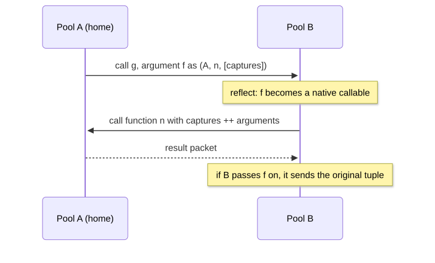
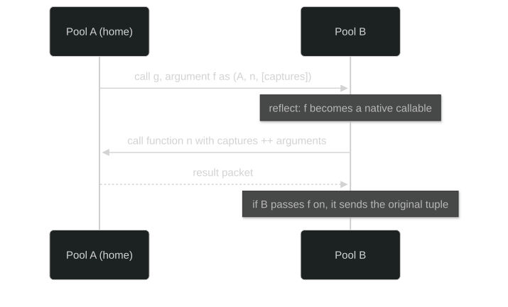
The receiving pool reflects the tuple into a native callable of the right
arity, using the argument and result plans the closure’s type gives. Calling
it sends a call to the home pool with the captured packets followed by the
new arguments. A reflected closure remembers its origin, so passing it on or
back sends the original tuple, never a chain of forwarding closures. A
function value can be a field of a record or an element of a list; the
enclosing value’s layout carries the tuple in that slot. A suspension
<E> T crosses the same way, as a closure of no arguments, and is never run
by the crossing (Effects). A callable that host code created
has no number to call back into: it is refused where the compiler can see
it and fails the call otherwise. A function or suspension has no file form,
so the data-writing and data-reading intrinsics refuse types that contain
one.
Recursive types. While building a plan the compiler keeps the set of
type instantiations on the path from the root. Meeting one of them again
ends the descent with a back-reference node. In the schema, the enclosing
node is declared with & and a name, and the occurrence refers to it with
^ (Voidstar format and schema strings). The key is the whole instantiation, not the
name: a Tree Int inside a Tree Str is a different type and is expanded
on its own. A plan whose expansion does not terminate is rejected. The
layout stays finite because a variant’s payload, an optional and an array
are behind pointers.
Tables and handles. A table’s plan is a table node listing its declared
columns, written T or T: followed by the columns. The value travels as
an Arrow block rather than voidstar, and the declared columns are a lower
bound checked when the block is received (Tables and tensors on the wire). A stream or
file handle travels as the file’s path, and the receiving pool opens its
own handle on it (Streaming and memory mapping).
Strings. Where the receiving language cannot hold a NUL byte in a string, the generated code checks received strings for one (NUL bytes in strings). The check is emitted only for types that contain a string, so other types pay nothing.
13.9. Ownership
A morloc variable may be read any number of times. In generated C++ and Rust, each read must instead borrow the value, copy it, or move it. This section specifies how the compiler chooses among the three, how parameters are passed, and how the choice is checked. Ownership planning runs on each pool’s tree after serialization is placed and before code is emitted (Code generation). Python and R share values by reference, so they never copy and need no plan.
An affine elaboration. The choice translates an unrestricted source
term into an affine target term: every place the source uses a value twice
becomes an explicit copy, and every place it stops using one becomes an
explicit release. This is the translation of intuitionistic terms into
linear ones, with contraction and weakening made explicit. It preserves
meaning only when copying and releasing have no observable effect. So every
native type a morloc type maps to must behave as a value. A copy is
independent and equal to the original. Copying, moving and releasing
perform no output and touch no resource. A value holds no reference into
data that something else owns, and sourced code never mutates an argument
(C++, Rust). Given that, any placement that keeps the target affine
is correct, and how many times a copy constructor, Clone, destructor or
Drop runs is unspecified. The compiler picks a placement that copies
little.
The rules.
| Rule | Statement |
|---|---|
No use after move |
Once a read moves a value, no later read on any path through the same evaluation reads it, unless a new binding of that name replaces it. A value that is never moved is released when it goes out of scope. |
Move only at a last read |
A read may move a value only if no later read on its path reads it and no other read in the same step does. A step is a conditional’s test, the value a body ends in, or the values one loop iteration passes to the next. Reads within a step have no order, so a value read twice in one step is moved by neither read. Reading through a local that refers into a value counts as reading that value. |
Repeated reads never move |
A read inside a lambda, a nested loop, a separate manifold or a |
Loop guards borrow |
A read in a condition that a loop iteration branches on, including a test of a sum type’s tag, borrows, because the chosen branch may still read the value. |
Projection at a last read takes the field |
Reading a constructor or record field at the value’s last read moves the field out and releases the rest. The value’s own destructor does not run. |
Walking a lent value borrows |
A loop-carried value borrows when it starts from a borrowed value and every iteration replaces it with a part of that value (a field, a list element, or a |
Argument passing. By default a native manifold takes each parameter by
reference: const T& in C++, and &T in Rust for any type that is not
Copy. Rust Copy types (scalars, field-free enums, and tuples and
optionals of them) are passed by value. A
fully applied manifold instead takes a parameter by value when its body
reads that parameter once on every evaluation and keeps it: as the start
of an owned loop value, as an element of a value it builds, or as a
by-value argument to another fully applied manifold. That last case makes
the decision propagate up call chains, so it is computed over the whole
pool until it reaches a fixed point. The caller then moves the argument at
its own last read and copies it otherwise, so a call copies at most once,
and only when the caller still needs the value. A parameter kept on only
one branch stays a reference, so the branch that drops it copies nothing.
A closure, or any manifold that is also used as a function value, takes
every parameter by reference, because one signature serves every caller.
Planning and checking. The plan is computed once per pool from the intermediate form, shared by both languages, and has two levels. At pool level it records which field projections take their payload and which parameters each manifold takes by value. At manifold level it records which indices hold references and which are read at more than one point. A language contributes only three facts: which of its types are free to copy, whether a tag test may read a value after a field was taken from it, and whether a list literal keeps an element without making its own copy. Rust’s own compiler rejects any read of a moved value, so a wrong Rust plan fails the build. C++ has no such check. For C++ the compiler has an independent checker that takes the plan’s decisions as given, recomputes evaluation order from the intermediate form, and reports every read that could see a taken value. Generated C++ moves at fewer positions than these rules allow, so it may make more copies than they require.
13.10. Code generation
Code generation is the last stage that works on the program’s code. It takes the per-language trees left by segmentation, serialization and ownership planning, in which every call is resolved to one implementation in one language and every crossing has a wire form, and turns each language’s share into the source text of one pool. This section specifies how pools are assembled, how user types become native definitions, which values are fixed at build time, and the properties every generated pool has whatever its language. The manifest that describes the program’s commands is built beside the pools and is specified in Interface generation.
Input. The unit of code generation is the manifold: a function the compiler generates for a call site, together with the context it needs (Segmentation and cross-language calls). Each manifold carries an integer id, unique within the build, and a language. Manifolds are grouped by the pool they run in, which is their language’s own pool, except that a guest language’s manifolds join the pool of its host (Language onboarding). Within one pool every manifold, nested ones included, is defined once under its id. Two different manifolds that would share an id in one pool are an internal compiler error, since a caller of that id would run whichever one was emitted.
Build-time values. Before translation, the intrinsics whose value is fixed when the program is built are replaced by literals:
| Intrinsic | Replaced by |
|---|---|
|
The compiler version that built the program. |
|
The build time, as an ISO 8601 UTC timestamp. |
|
The name of the language whose pool evaluates it. |
|
The installed location of data file |
Every other intrinsic (@save, @load, @hash, @show, the stream
operations, …) is a call into the language’s runtime binding, which
implements it once for every program (Intrinsics, Runtime library API).
Two translators. Every language is translated in two steps: the manifolds are lowered into one shared imperative form (statements, expressions, function definitions, and two dispatch tables), and a per-language printer writes that form as source text. The languages differ in how much of this is data:
-
A dynamically typed language (Python, R) is translated entirely from its language description: literals, list and record constructors, field and index access, function headers, lambdas, partial application, block style, and the names of the runtime calls that serialize, deserialize and call another pool are all templates in that description. No code specific to the language exists in the compiler.
-
A statically typed language (C++, Rust) has a dedicated translator, because it must render a native type for every value, emit type definitions in an order the compiler accepts, and generate marshalling code for each user type.
Pool assembly. Each language has a fixed pool template that holds the runtime scaffolding: process start, the arguments a pool is started with, and the hand-off to the runtime’s pool loop. The generated code is spliced into marked sections of that template:
| Section | Contents |
|---|---|
Sources |
Imports or includes of the user’s sourced files, and the language’s preamble. |
Types |
Native definitions of user types and their marshalling code (statically typed languages only). |
Declarations |
Forward declarations of every manifold, so definition order never matters. |
Manifolds |
One function per manifold, named by its id. |
Dispatch |
A local table mapping each entry point’s id to its function, and a remote table for calls that arrive as jobs from another node. |
The ids in the dispatch tables are the mid values the manifest records for
each command, and the ids a calling pool puts in its call packets
(Packet protocol).
Inlining keeps evaluation order. Not every application becomes a function
of its own; one that does not is written as an expression at its use. Such an
inlined application is evaluated exactly where the call it replaces would
have been: its statements go immediately before the statement that uses its
value, in the same block. A position that is not evaluated eagerly (an arm of
a conditional, the second operand of && or ||) is a block of its own, so
whatever is inlined there is evaluated only if that position is.
Native types. A morloc type reaches a language through its native form, a
template that a type L ⇒ … declaration gives (Native type mappings):
type Cpp ⇒ (List a) = "std::vector<$1>" a renders [Int] as
std::vector<int>, given type Cpp ⇒ Int = "int". An alias with no form of its own
uses its expansion’s. How user types appear in each language:
| Language | Record | data type with payloads |
|---|---|---|
Python |
A |
Generated: a base class with one frozen class per constructor nested in it. A type with no payloads is a generated |
R |
A named |
Nothing is generated; the binding builds the value from its wire form. |
C++ |
Generated: a struct named by the declaring module’s path, unless the user maps the record to a type of their own. A recursive record is a handle sharing an immutable struct of its fields. |
Generated: a struct holding a |
Rust |
Generated, as in C++, with its marshalling code. |
Generated, with its marshalling code. |
In C++ the declarations follow what holds what by value: enums first, then variant wrappers (which hold their arms through pointers), then records, then arm bodies, and every marshaller is declared before any is defined.
Wrappers. Three kinds of manifold get a wrapper around their body. A call
labeled for caching looks its key up before running and stores the result
after (Caching). A program built with --debug records every call in
its trace (Error propagation). A tail-recursive function that the compiler can
run as a loop is emitted as one (Segmentation and cross-language calls).
The fingerprint. When every pool’s source is final, the compiler hashes
each one and writes the hash into the manifest. The hash covers the pool’s
emitted source text, the files the program lists under hash-include, the
build parameters, and any compiled guest objects linked into the pool, since
the last two change the binary without changing the source. It is the pool’s
contribution to every cache key (Caching), so it is computed after
emission and before anything is written to disk.
What every pool does. Whatever its language, a generated pool:
-
is started with three trailing arguments: its socket path, the run’s temporary directory, and the shared-memory base name;
-
is ready when it answers a ping on its socket (Process lifecycle);
-
answers every call with exactly one packet, a value or a failure (Packet protocol);
-
turns an error raised by user code into a failure of that call, and goes on serving;
-
is entered only through its dispatch tables, by manifold id; calls within the pool are native calls.
A language may reserve name prefixes and names for what its pool defines. A sourced name that uses one is rejected at build, so user code and generated code cannot shadow each other.
How a pool spreads its calls over threads or processes is specified in Worker model.
13.11. Interface generation
Interface generation turns the exports of a program’s main module into the command schema the manifest carries (Compilation artifacts). It reads each export’s general type, its docstrings and their directives, and produces, per command, its name, its arguments with their kinds, keys, defaults and help text, its return value, and its output actions. The nexus reads nothing else, so the command line, the HTTP API and the MCP tools are all built from this one schema. This section specifies how the schema is derived and which mistakes are refused at build rather than at run time. The directives themselves are documented for users in Docstrings, Arguments and Directive reference.
Which exports become commands. Every term the main module exports is a
subcommand, named after the term unless @name renames it. Its docstring’s
first line is its summary, and the module’s docstring describes the program.
--* group: lines in the export list put the exports that follow into a
named group of subcommands. Three kinds of export are treated specially:
| Export | Treatment |
|---|---|
Generic: its type still has a type variable |
Not a command. The build warns, naming it, and builds the others. |
A function in an argument or the result, or a suspension below the root of one |
Rejected at build, naming the position: a command’s arguments and result are data, and a function has no data form. |
A suspension at the root of an argument or the result |
Adapted at the boundary: the command builds the suspension from the caller’s value, or runs it for the caller. |
Remote and pure commands. A command whose body calls a foreign function is remote: the schema records the id of its entry manifold, the pool that holds it, and every pool the command can reach, so a one-shot run starts only those. A command that calls no foreign function is pure: the schema holds the expression itself, in a small language of literals, applications of built-in operations and intrinsics, and the command’s arguments, and the nexus evaluates it without starting a pool (Runtime overview). Build-time intrinsics in a pure command are fixed as they are in pools (Code generation).
From docstring to argument. Each argument’s docstring is the nearest one: written on the type in the signature, else on the type alias named there, else on the next alias down its chain. A term never inherits another term’s docstring by assignment. The directives then decide the argument’s kind:
| Kind | Made by | Rules checked at build |
|---|---|---|
Positional |
the default |
Takes no |
Option |
|
Requires a |
Flag |
|
|
Record group |
|
Each field becomes its own option or flag, with its own docstring. |
Constructor choice |
|
One option per constructor; exactly one is given, unless the type is optional or has a default. |
Further rules hold across a command’s arguments: at most one positional takes
@many, and it is the last positional; at most one reads standard input, and
it is the last positional; @stdin, @many, @default and @unroll reject
the combinations that would give one slot two shapes. Each argument’s shape
directives (source, form, check.path) are checked against its wire type
(Input shape), and a default is parsed and checked against the argument’s
type, so a wrong default is a build error rather than a run-time one.
Keys. Every argument is given one key, published in the schema, that
every interface other than the command line uses to name it: an option or
flag by its long spelling (else its short one), a positional by its @name
or else by and its 1-based place among the positionals, a field of an
unrolled record by its field name. The compiler computes the key once, so no
interface derives its own, and it rejects two arguments of one command that
would publish the same key. Keys beginning with are reserved for
generated names and for _render, the output selector.
Two schemas per value. Each argument and the return value carry two schema strings (Voidstar format and schema strings). The concrete schema includes the hints of the language that will receive the value, and is what the nexus encodes the call with. The general schema has those hints removed, and is what the machine-readable help publishes, so the published contract does not change when a function moves to another language.
Output actions. Each @with or @render directive (Output actions)
becomes an action of its command, recorded with its flag, its handler’s
summary, whether it writes raw bytes (@render) or a typed value
(@with), and whether it is the @default; a second @default is a build
error. For each action the compiler also builds hidden commands: one that
runs the parent and applies the handler to the fresh result, and one that
applies the handler to output the parent saved earlier. The latter is omitted,
with the reason recorded, when the action cannot run on saved output. Each
action is classed by how it consumes the parent’s output: a whole value, a
gathered stream, a stream processed batch by batch, or a fold. A streaming
command also records the type of its batches, since its return type is ().
An argument read through @parse gets a hidden entry command of its own that
applies the parse functions before the call.
One schema, every interface. The command-line parser, the three help
tiers, --json-help (The interface as data), the daemon’s API and the MCP
tool list are all built by the nexus from the command schema
(Serving). The command line reads each argument from its text form
using the shape directives; every other interface takes the argument’s JSON
value under its key. An argument left out takes the default the schema gives
it on every interface.
13.12. Language onboarding
A language joins Morloc through four things: a language description that the compiler reads as data, a code generator that writes its pools, a binding to the runtime library that its pools call, and a library module that maps Morloc’s base types and functions into it. This section specifies what each must provide, how a guest language that has no pool of its own is attached to a host, and the behavior that makes a binding conforming. It is the checklist for adding a language; the pieces it names are specified in the sections it links to.
The language description. Everything the compiler needs to know about a language that is not code generation is declared as data, not built into the compiler:
| Declaration | Used for |
|---|---|
Name, aliases, file extension |
Resolving |
Compiled or interpreted, and the run command |
Whether the pool is built into a binary or run as a script by an interpreter. The manifest’s start command for the pool is derived from these (Compilation artifacts). |
Name and operator patterns |
Which sourced names are legal. A sourced name that matches neither, such as a fragment of code, is rejected at build. |
Reserved prefixes and names |
Names the pool defines for itself. A sourced name that uses one is rejected at build. |
Whether a |
A language that cannot carry one has such strings refused at the boundary into its pool. |
Preamble |
Lines placed at the top of every pool, with the Morloc home and library directories filled in. |
Call costs |
The cost of a call within the language, of a call into it from another language, and of any pair of languages that bypasses the usual crossing. Realization weighs implementations with these (Realization). |
Host |
For a guest language only: the language whose pool it runs in. |
Dependencies |
The runtime and the packages a pool needs, each marked as needed to build, to run, or both, and optionally as needed only by some programs. The environment manager installs them (Environments). |
The code generator. A dynamically typed language is generated entirely from templates in its description: literals (including infinities and NaN), list, tuple and record constructors, index and field access, assignment, function headers and block style, lambdas, partial application, the import statement for a sourced file, the entries of the two dispatch tables, and the names of the binding’s functions that serialize, deserialize and call another pool. A statically typed language needs a translator of its own, because it must render a native type for every value and generate type definitions and marshalling code (Code generation). Either kind also supplies a pool template: the fixed scaffolding into which the generated sections are spliced.
Build parameters. A compiled language’s builder reads its own keys from
the -X LANG:KEY=VALUE parameters (Build parameters) and validates their
values itself; the compiler stores them without interpreting them. The key
flags is reserved in every language as a raw, ordered passthrough to the
compile command.
The binding. A pool talks to the rest of the program only through the runtime library (Runtime library API). The binding exposes it to the language: an extension module for an interpreted language, a library that a compiled pool links. It must provide:
-
conversion between the language’s native values and the binary form, in both directions, driven by the value’s schema (Voidstar format and schema strings);
-
reading and writing packets, and the shared-memory references they carry (Packet protocol, Shared memory layout);
-
the foreign call, which sends a call packet to another pool and returns its result or raises its failure in the caller;
-
the runtime intrinsics, such as
@save,@load,@hashand the stream operations; -
the pool loop. A threaded pool hands its two dispatch tables to the runtime’s pool main loop. A forking pool hands the runtime’s scheduler a callback that runs one job; the scheduler binds the socket and forks, retires and replaces workers (Worker model).
The base library. Morloc’s base types have no meaning in a language until
a module gives them native forms (type Py ⇒ Int = "int",
type Cpp ⇒ (List a) = "std::vector<$1>" a), and the base functions until it
sources implementations of them. Each shipped language has such a module,
named root- and the language (root-py, root-cpp).
Guest languages. A guest has no pool. Its sourced functions are compiled into its host’s pool and called there, so a call between guest and host is a native call, not a crossing. Before realization, the compiler builds each guest source file into a linkable library with the guest’s own compiler, checks each sourced Morloc signature against the entry point the guest compiler reports (arity, element types and rank), generates host glue that converts the host’s native values to the guest’s and back, and rewrites each guest source into an ordinary host source that calls the glue. From then on the guest is invisible: the host pool links its objects, and those objects are folded into the pool’s fingerprint (Caching). A guest signature may use only types the guest can represent. Futhark is a guest of C++ (Futhark), restricted to fixed-width numeric scalars and vectors and matrices of them.
Conformance. A binding is conforming when every program means the same thing whichever language the compiler picks for a call. Concretely:
| Behavior | Requirement |
|---|---|
Crossing |
A value sent to another language and back arrives equal to the original, whatever the route (inline, shared memory, file). |
|
Arrives as the language’s own default integer type. Fixed-width types keep their width. |
Functions |
A function value crosses as a native callable that runs in the language where it was built, called with each argument group as the source signature writes it. |
Suspensions |
Cross as callables of no arguments, run each time they are called, never by the crossing. |
Threads |
A function value may be called from threads the sourced function starts, concurrently. |
Failures |
An exception or error escaping a sourced function is a failure of that call, which |
Arguments |
Sourced code never changes a value it is given. A language that can pass by reference must make that impossible or document it as the user’s error. |
|
Depend only on the wire value, so they agree in every language. |
The pool |
Has every property listed in Code generation. |
13.13. Runtime library API
libmorlocis the shared library every pool links. It owns what must be the same in every language: shared memory, schemas, packets, sockets, Arrow blocks, the result cache, stream files and the intrinsics. A language binding wraps it for its language and adds one thing of its own, a walker that writes native values into the voidstar layout and reads them back (Voidstar format and schema strings). This section specifies the C ABI declared inmorloc.hthat bindings are written against. Functions only the nexus or the daemon uses are out of scope.
Division of labour. The library never touches a language’s objects. It
parses a schema string into a Schema tree whose nodes carry each slot’s
width, alignment and field offsets, so no binding recomputes the layout and
none can disagree about it. The binding walks that tree, sizes the value,
allocates a block with shmalloc, and fills it. Reading is the reverse: the
library turns a packet into a pointer to a voidstar value, and the binding
walks it into native objects, resolving each relative pointer through
resolve_region.
ABI version. morloc.h defines MORLOC_ABI_VERSION, an integer distinct
from the release version, and the library reports the value it was built
with through morloc_abi_version(). It changes whenever a declaration in
the header or the packet format changes. A binding compiled against one
version is only correct with a library that reports the same one.
Errors. Every fallible function takes char** errmsg_ as its last
parameter (ERRMSG in the header). The callee sets *errmsg_ to NULL on
entry. On failure it sets it to a malloc’d, NUL-terminated message, which
the caller frees with `free(), and returns a failure value, usually NULL for
a pointer, false for a bool, -1 for a handle, RELNULL for a relative
pointer and non-zero for an int status. A caller tests *errmsg_, which is
set exactly when the call failed. One outcome is not a failure: a stream
write whose reader has gone returns MLC_RESULT_PIPE_CLOSED with no message,
so the run can end with the broken-pipe status. A failure carried in a
packet (status fail, Packet protocol) is data, not a failed call: reading
such a packet’s value fails with the packet’s message.
Ownership.
| What the library returns | Who releases it, and how |
|---|---|
|
The caller, with |
|
The caller, with |
|
The caller, with |
A shared-memory block |
Reference counted. |
A value ( |
A voidstar in a fresh shared-memory block the caller holds one reference to. |
A stream handle or fold cell ( |
The caller, with |
A data packet that names a shared-memory block carries a reference the
sender took on the receiver’s behalf (Shared memory layout). The receiver inherits
that reference and releases it once, when it is done with the value; it
never takes its own on arrival. An Arrow array passed to arrow_to_shm is
consumed: its release callback runs once the copy is made.
Panics. A panic in the library is an internal error, never a reported
failure. Unless a catch scope holds it, it ends the process at once with
exit status 70 (Error propagation). A binding installs the library’s hook once
at start (morloc_install_panic_hook, morloc_install_crash_handler).
Hosting a pool. A binding chooses one of two process models
(Worker model). A threaded pool calls pool_main with a
pool_config_t holding its dispatch callbacks; the library accepts
connections and runs each call on a worker thread. A forking pool calls
morloc_fork_pool_run with a morloc_fork_pool_t that says how to fork,
initialise and serve one connection; each worker reads the call with
stream_from_client and answers with send_reply_to_foreign_server.
Shared memory
| Function | Purpose |
|---|---|
|
Map the program’s shared memory, given its base name and initial size. |
|
Directory for file-backed volumes when the shared-memory filesystem is too small. |
|
Allocate a block holding one reference for the caller. |
|
Take / release one reference on a block. |
|
Convert between a relative pointer and an address in this process. |
|
|
|
Inline resolve of a relative pointer to |
|
The space a value’s pointers lead into: shared memory, or an inline packet payload of known length. |
|
Record and forget a native view (such as an array over a block) so a forked child keeps the block alive. |
|
Bytes of shared memory the program holds, when statistics are on. |
Schemas and encodings
| Function or type | Purpose |
|---|---|
|
A parsed schema node (type, parameters, keys, hint, width, alignment, offsets); a variable-length slot. |
|
Parse a schema string into a |
|
Render a |
|
Encode a voidstar value as MessagePack. |
|
Decode MessagePack into a voidstar value. |
|
Narrow a double to a float, failing on a finite value out of range. |
|
Describe the first string in a value holding a NUL byte, or NULL. |
Packets and calls
| Function | Purpose |
|---|---|
|
Check a buffer holds a whole packet / total size of a packet. |
|
Classify a received packet. |
|
The reply to a ping. |
|
Split a call packet into function index and argument packets / free it. |
|
Build a call packet from a function index and argument packets. |
|
Wrap a voidstar value: inline below the size threshold, else by reference to its block. |
|
Wrap a value inline whatever its size, for a value that must outlive its block. |
|
Wrap an Arrow block by reference. |
|
An error packet / one marking a closed output pipe. |
|
Whether a packet is the closed-pipe marker. |
|
The voidstar value a data packet carries, decompressed and loaded as needed. |
|
The message of a failed data packet, or NULL. |
|
A copy of an argument packet a pool can return as its result, with its own reference. |
|
Whether a path names a stream file rather than a single packet. |
|
Send a call to another pool’s socket and return its reply. |
|
Run a call on a cluster node through the scheduler, with its resources. |
Pools and processes
| Function or type | Purpose |
|---|---|
|
Run a threaded pool with the binding’s dispatch callbacks and per-dispatch release. |
|
Run a forking pool; workers never return from it. |
|
Fork a worker, refusing unless the process has one thread. |
|
Read one whole packet from a connection. |
|
Send a reply, running the release callback before it is sent. |
|
Close a socket / a pool’s listening socket and state. |
|
Fork generation at request time / exit if user code forked during the call. |
|
Install the panic exit / report the active function on a fatal signal. |
|
Tell user panics from runtime panics, for a pool whose own language panics. |
Arrow
| Function | Purpose |
|---|---|
|
Copy an Arrow C Data Interface array into a fresh table block; the typed form casts declared columns, refuses nulls in non-optional ones and puts declared columns first. |
|
The same for an Arrow stream, concatenating its batches. |
|
Check a received block against the declared columns. |
|
Import a block as Arrow C Data Interface structs, recording it so a table returned unchanged is passed on without a copy. |
|
Shared memory held by this process’s open table views, for languages whose collector cannot see it. |
Caching
| Function | Purpose |
|---|---|
|
The pool’s source fingerprint, mixed into every key. |
|
A key from a function index and its argument values (not their pointers). |
|
Read / atomically write a cached result packet under a label and key. |
|
Count events for the run summary. |
Intrinsics: values
| Function | Purpose |
|---|---|
|
Write a value as MessagePack, JSON, or a voidstar packet (optionally compressed). |
|
Read a value from a file of any of those forms, or a stream file as a list. |
|
Parse a value from JSON / render it as JSON. |
|
Hash a value / order two values of one schema. |
|
Per-thread accumulators of a fold handler. |
Intrinsics: streams and handles
| Function | Purpose |
|---|---|
|
Open a stream file as a handle of a kind / close a handle / read a file’s schema. |
|
Open for reading, create for writing, reopen for appending. |
|
Standard streams, routed through the nexus. |
|
Release a standard stream a dispatch left open. |
|
Next batch as a list block / telling end from an empty batch / handed to a decoder in place. |
|
Write a batch / flush buffered elements / join stream files / elements written to standard output. |
|
Random access into a file: a path into its value, its length, a reader over it, its batch layout. |
|
A channel between pools, its producer, and its end. |
|
A temporary file removed when the call ends / remove it early. |
|
Write a handle into a value as its path, and open a handle from one, when a handle crosses pools. |
Utilities
| Function | Purpose |
|---|---|
|
The ABI version the library was built with. |
|
A call id / a formatted log line for a labeled function. |
|
Record one timing of a benchmarked function. |
|
Print bytes in hexadecimal, for debugging. |
14. Future Directions
14.1. What this makes possible
Everything in Why Morloc is already in the compiler. What it is for is not built yet, and I want to be plain about which is which.
If interfaces are derived rather than written, the only artifact worth publishing is the function itself. That makes a few things possible that are not possible today:
-
A library indexed by type. The compiler already knows every exported signature. Searching a library by the shape of the function you need, across languages, becomes a question of building the index rather than inventing the data.
-
Implementations that compete. One signature, many implementations, with shared tests and shared benchmarks deciding between them — across languages, on your data.
-
Composition that is checked rather than trusted. If two modules typecheck against a common environment, they compose, and the compiler proves it where they meet. No pairwise integration testing is required, so the guarantee does not get more expensive as the library grows.
-
Communities organized by values instead of by language. Morloc calls these planes: namespaces that differ not by subject area or language but by what their members demand of code — review, verification, performance, or nothing at all. See Planes of libraries.
None of that infrastructure exists yet. There is no registry, no type-directed search, and no plane but the default one.
14.2. Planes of libraries
| The infrastructure for "planes" is not yet constructed, so the following is speculative |
The concept of "planes" is central to the future organization of Morloc and is one of the primary reasons that I created it. A plane is like a namespace for a community’s modules — but instead of organizing by category or programming language, modules in a plane share a common philosophy about quality, trustworthiness, software design and the review process.
Currently, the universe of functions is separated first by language and then by subject area. Morloc, being polyglot, allows the first mode of separation to be lifted, so language does not need to separate communities. Instead, communities can organize around values.
-
Levels of review & trust: Code may be wild and experimental; tightly reviewed and trusted in production; or formally verified.
-
Design philosophy: Groups may prioritize safety, raw performance, or elegance by some metric.
-
Use case: Planes may focus on production, pedagogy, competition or experimentation.
Making these differences explicit (and navigable) lets the community set and find their own standards.
Real-World Analogs
Within the R community, you could define three planes:
-
CRAN: Has stringent requirements for acceptance and manual application process focused on adherence to well-defined (mostly automated) requirements
-
rOpenSci: Focuses on a formal peer review process that considers motivation, documentation, and good software design
-
GitHub: Wild west. Anything goes.
You could probably find more "planes" in R, but these three capture the idea of what a plane is. It is a design philosophy and set of protocols that define admission.
Possible examples of Morloc planes
-
default: Official libraries used in sandboxes and demos (not necessarily efficient).
-
unstable: For newly submitted or unvetted modules, e.g., loaded straight from GitHub.
-
safe: Modules that passed manual review, rigorous automated tests, and have strong test suites.
-
true: Formally verified modules, strict on what languages are allowed (e.g., dependently typed languages).
-
prod: Production ready modules, combining safety and performance.
-
comp: Modules suited for competitive programming; all performance, no safety checks or focus on software design principles.
-
red: Adversarial modules — written to give the Morloc bot problems. Probably don’t want to import these.
-
weird: Esoteric code. For silly implementations that abuse languages in fun ways.
-
demo: Prototypes, examples, and proof-of-concept modules. More pedagogical than practical.
Planes aren’t rigid categories, but cultures: each has its own ground rules, review process, and ideas about what makes code "good". Anyone can propose a new plane, but we don’t want too many; a bit of consensus is required before adding one.
How Does a Module Join a Plane?
Again, the architecture is in development. But here is the basic process:
-
Register: Authors register their module (e.g., import code from GitHub and authenticate).
-
AI Vetting: Our AI (Weena) checks code for basic standards.
-
Acceptance: After being accepted, the module defaults to the
unstableplane. -
Level Up: Module authors can then apply to join other planes. Getting accepted depends on the plane’s review process (could be peer review, automated testing, thumbs up from community members, or nothing at all).
-
Multiple Planes: Modules can exist in multiple planes at once — different communities may trust the same code for different reasons.
This process will eventually be mediated on the website morloc.io (under construction).
Overall, planes help you find code that matches your needs and values — whether you want ultimate safety, bleeding-edge performance, or just something weird that might surprise you. They also provide community and allow relations between different codebases to be specified.
15. Q&A
15.1. I only use one language, is Morloc still useful?
Yes, Morloc remains useful even if you only use one programming language. Indeed, most of the tools I write with Morloc are single language. But I am free to choose the language. If I write a TUI, I might use all Rust because I like the ratatui library. If I’m making a simple website that does webscraping and database management, I might write it in Python. Morloc then allows the composition of these libraries even though they are in different languages.
So while Morloc is designed to allow polyglot development, its core benefits also apply to single-language projects. In the Morloc ecosystem, you may continue working in your preferred language, but focus shifts to writing libraries instead of standalone applications.
Morloc lets you compose these functions and automatically generate applications from them, offering several advantages:
-
automatic generation: Write your functions and get the CLI/API/MCP for free.
-
Broader usability: Your functions can be easily reused and easily accessed by other language communities.
-
Improved testing and benchmarking: Functions can be integrated into language-agnostic testing and benchmarking frameworks.
-
Future-proofing: If you ever need to migrate to a new language, Morloc’s type annotations and documentation carry over — only the implementation needs to change. And if you want to leave the Morloc ecosystem, your implementation does not need to change.
-
Better workflows: Especially in fields like bioinformatics, Morloc shifts workflows from chaining applications and files to composing typed functions and native data structures, making pipelines more robust and easier to validate.
-
No more format parsing: Morloc data structures replace bespoke file formats and offer efficient serialization.
While language interop is a major feature of Morloc, it is not the main purpose. The very first version of Morloc was not even polyglot at all. The focus originally was to just have a simple composition language that separated pure code from associated effects, conditions, caching, etc.
The primary goal of Morloc is to support the development of composable, typed universal libraries. Support for many languages is required for this goal, since no one language is best for all cases. Most Morloc users would continue to program in their favorite language, but gain the ability to compose, share, and extend functionality more easily.
15.2. Is this just a bioinformatics workflow language?
No. The Morloc paper, is focused on bioinformatics applications. As discussed at length in the paper, Morloc addresses systematic flaws in the traditional approaches to building bioinformatics workflows. Given the need, and also given my personal background, bioinformatics is a good place to start. However, Morloc can be more broadly applied to any functional problem.
15.3. Does Morloc allow function-specific containerized environments?
No, unlike workflow managers such as Snakemake and Nextflow, Morloc does not offer function-specific environments. This is a deliberate design choice.
Dependency resolution is a hard and heavily researched problem. The general goal of dependency solvers is to find one set of dependencies that satisfies the entire program. The bioinformatics community often gives up on finding unified environments and instead runs each function in its independent environment. With every function running in its own container, all dependency issues are encapsulated and all functions may be executed from one manager. But this comes at a heavy cost. Each application must be wrapped in a script, the script must be executed via an expensive system call into the container, and data must be serialized and sent to the container. This approach is reasonable for workflows with a small number of heavy components. But from a programming language perspective, wrapping every function call in its own environment is inefficient and opaque.
Morloc is designed not to hide problems in boxes, but rather to solve the root problem. Conventional workflow languages attempt to simplify workflows design by layering frameworks over the functions. The Morloc approach is the exact opposite. First delete everything unnecessary from all applications and lift their light algorithmic cores into clean, well-typed libraries. Then build upwards through composition of these pure functions—and judicious use of impure ones—to create efficient, reliable, and composable tools.
Now, if you really do need to run something in a container, you can just make a function that wraps a call to a container and then use it just as you would any other function. You could even write a wrapper function that takes a record with all the metadata needed for a conda environment and execute its function within that environment. We can do this through libraries, so there is no need to hardcode this pattern into the Morloc language itself.
The reproducibility of Morloc workflows may be ensured by running the entire Morloc program in an environment or container, with a single set of dependencies. The specific Morloc compiler version can be specified and modules may be imported using their git hashes. This is done in the current Morloc examples (see the Dockerfile in the workflow-comparisons folder of https://github.com/morloc-project/examples).
15.4. What about object-oriented programming?
An "object" is a somewhat loaded term in the programming world. As far as Morloc is concerned, an object is a thing that contains data and possibly other unknown stuff, such as hidden fields and methods. All types in Morloc must have forms that are transferable between languages. Methods do not easily transfer; at least they cannot be written to Morloc binary. However, it is possible to convey class-like APIs through typeclasses. Hidden fields are more challenging since, by design, they are not accessible. So objects cannot generally be directly represented in the Morloc ecosystem.
Objects that have a clear "plain old data" representation can be handled by
Morloc. These objects, and their component types, must have no vital hidden
data, no vital state, and no required methods. Examples of these are all the
basic Python types (int, float, list, dict, etc) and many C++ types such
as the standard vector and tuple types. When these objects are passed between
languages, they are reduced to their pure data.
15.5. Is Morloc still relevant when AI can program and translate?
Maybe. Morloc may serve as a system for functional composition, verification, and automation even when most functions are generated by machines.
I’ll lay out an argument for this below, starting with a few propositions:
-
Adversaries exist. AIs may themselves be adversarial or there might be adversarial code in the ecosystem around the AIs (for example, prompt injection). Humans can’t trust humans, humans can’t trust AIs, AIs can’t trust humans, and AIs can’t trust AIs. Depending on their architecture, AIs may not even be able to trust their own memories.
-
Stupid is fast. Narrow intelligence outperforms general intelligence for narrow problems. A vast AGI system with deep understanding of physics and Shakespeare will not be the fastest tool for sorting a list of integers. There will always be a need for programs across the intelligence spectrum — from classical functions, to statistical models, to general intelligences.
-
Creating functions is expensive. Designing high-performance algorithms is not trivial. Even simple functions, like sorting algorithms, require deep thought to optimize for a given use case. But there is a further combinatorial explosion of more complex physical simulations, graphics engines, and statistical algorithms. While simple functions might be created in seconds, others may take years of CPU time to optimize.
-
Reproducibility is important. Future AIs may serve as nearly perfect oracles, but they are complex entities and future AIs will likely be capable of evolving over time as persons. So they will likely not give equivalent answers day to day. It is valuable to be able to crystallize a thought process into something that will behave the same every time it is invoked on a given input. So again, functions are important.
-
Correctness is important. If functions are being composed by AIs to create new programs, any function that does not behave in the way the AI expects can cause cascading errors. It doesn’t matter how intelligent the AI is, if it is building programs from functions that it cannot verify, then the programs may not be safe.
A few things follow from these propositions.
First, AI will benefit from writing functions. Even in a world with no humans, they will need functions for efficiently solving narrow problems. They will likely generate libraries of billions of specialized functions. Some may be classical functions and others may be small statistical models. By caching these functions, compute time can be saved. Rather than generating entire programs from first principles, they can build them logically through composition of prior functions. The same forms of abstractions that help humans reason will also be of value to AIs. Yes, they have far larger working memories than we do, but that does not change the fact that abstraction and composition reduce the costs of re-derivation.
Time can also be saved if different AIs share functions they have written (both with each other and with humans). Since adversaries exist, shared functions must be verified. But verification is hard, especially if a godlike super-intelligence were trying to hide adversarial features in the binary. The problem can be simplified by using a controlled language that can be formally verified by a trusted classical computer program — a compiler. So rather than share functions as binary, it would make sense to share them in strict controlled languages. For this reason, I believe that something resembling current programming languages will exist far into the future. Their main purpose will be as easily verifiable and human readable specifications for languages that can be compiled into high-performance code.
So in this imagined future, there are billions of functions in databases that are written in verifiable languages readable by humans, classical machines, and AIs. But what language is used? Maybe the AIs can converge on one standard. But even for AIs, and perhaps especially for them, I don’t think a single language is optimal. Rather, just as in human mathematics, there will likely be many languages for many domains. Languages make trade-offs. In general, the more complex a language is, the more difficult it is to parse, verify and optimize. So more verifiable and broad languages will pay higher compiler time costs. Further, more general languages may require more verbose code with higher generation costs. So even if we ignore human factors, multi-lingual ecosystems are still likely to appear.
I predict a future where humans and AIs use libraries of functions written in specialized languages. All the functions need to be easily verifiable by an outside actor and verified functions need to be composed to more complex programs using a trusted composer. Since we don’t trust any agent to verify, we need a classical program. Morloc is a potential candidate for this role. It would serve as a classical composition tool, function verification ecosystem, automation engine, and conceptual framework for organizing and using billions of mostly machine generated functions.
In this world, Morloc could serve as the composition engine that parses AI-generated compositions as Morloc scripts, generates all the artifacts, and manages search over functional libraries. The AI design space could be defined as composition-space of all modules that are available in the ecosystem. This lowers the complexity of design space, likely increasing generation efficiency, and allows more formal reasoning over the side-effects a given AI system can have.
Of course, the future is impossible to predict, especially where AI is concerned. It is possible that AIs will converge on a single universal representation for computation. It is possible that the need for human readability and curation will disappear. It is possible that classical computer functions could be entirely replaced by discrete mathematical constructs that are composable and machine verifiable but entirely incomprehensible to humans. But even in this future, I believe something like Morloc will be required.
15.6. I’m not a human, do I still need Morloc?
Yes, you are still a programmer and writing endless glue code to stitch things together takes time and is brittle. Abstraction is universal. With Morloc you can build with confidence using simple components with highly efficient interfaces. You can access a library of functions and freely compose them to build infinite new tools. Morloc is a way to define, access, and explore customizable and efficient toolsets.
15.7. Why is it named after Morlocks, weren’t they, like, bad?
While the Morlocks of Wellian fame are best known for their culinary preferences, I think Wells misrepresented them. And do we treat our Eloi any better? Diet aside, the Morlocks worked below to maintain the machines that eased life above. That’s why the Morloc language adapts their name.
15.8. Wait! I have more questions!
Great! Shoot me a message at z@morloc.io.
16. Environmental Variable List
Every environment variable that morloc reads or sets lives in the
MORLOC_ namespace, apart from the standard XDG_* base directories. They
fall into two roles:
-
Tunables — read at runtime to override a default. A user (or an orchestrator) sets these; morloc only reads them.
-
Wiring — set by the nexus, the compiler, or
mimand read by the child processes they launch (pools, setup scripts, SLURM re-entry). Users normally do not set these by hand.
The tables below group the variables by topic. The Introduced in
column links to the manual section that introduces the variable; a
(pending) entry marks a variable that is described here but does not
yet have a dedicated home elsewhere in the manual.
16.1. Installation and runtime setup
| Variable | Description | Default | Introduced in |
|---|---|---|---|
|
Morloc install root; base for |
|
|
|
Path to the |
(search) |
|
|
|
(none) |
|
|
Directory where |
|
(pending) |
|
Explicit path to the |
(resolution chain) |
(pending) |
|
Root for mutable state: installed modules, built programs ( |
|
16.2. Module installation (setup-script environment)
Set by the compiler for a module’s setup script child process and
read by that script.
| Variable | Description | Default | Introduced in |
|---|---|---|---|
|
Name of the module being installed. |
(per module) |
|
|
Version of the module being installed. |
(per module) |
|
|
Absolute path to the installed module directory; also the script’s working directory. |
(per module) |
|
|
Library of the module being installed. |
(per module) |
|
|
Directory of the environment’s installed modules, one subdirectory per library. |
(derived from the state) |
|
|
Destination directory a |
(derived from library/module) |
(pending) |
|
Destination directory a |
(derived from library/module) |
(pending) |
|
Destination directory a |
(derived from library/module) |
(pending) |
16.3. Run directory, logging, and reporting
| Variable | Description | Default | Introduced in |
|---|---|---|---|
|
Base directory that activates the per-run directory, stderr log
tee, and |
(none; opt-in) |
|
|
Path to write |
(none) |
|
|
Suppress all morloc-emitted log lines at the source. Equivalent to
|
off |
|
|
Current run’s directory. Set by the runtime and inherited by child morloc processes so their logs interleave. |
(only when active) |
|
|
PID that created the rundir; guards against a stale inherited
|
(own PID) |
|
|
Parent directory of the active run directory. Published by the
runtime for child pools; informational only (a child reconstructs
its run from |
(only when active) |
(pending) |
|
Any non-empty value enables per-stage timing trace lines on stderr (ingest, size-estimate, and emit hot paths) for diagnosing where wall time is spent. |
off |
(pending) |
16.4. Debugging
| Variable | Description | Default | Introduced in |
|---|---|---|---|
|
Explicit output directory for |
(rundir or |
|
|
Maximum disk writes per dispatch ( |
|
|
|
Per-arg size cap on the dumped payload; larger args recorded by hash
only. Equivalent to |
|
|
|
Per-manifold frame limit in a recorded trace ( |
|
|
|
Set to |
off |
16.5. Caching
| Variable | Description | Default | Introduced in |
|---|---|---|---|
|
Override the cache base directory (useful for Docker mounts and shared filesystems). |
|
|
|
zstd level for persisted cache entries. |
|
(pending) |
|
Hex source fingerprint mixed into every cache key so editing the
morloc source (or a |
|
(pending) |
16.6. Data transfer (packets and shared memory)
Set by the nexus from the compiled manifest and read once by
libmorloc on the first packet operation.
| Variable | Description | Default | Introduced in |
|---|---|---|---|
|
Maximum flat byte size embedded inline in a packet; larger payloads spill to shared memory (or a temp file). |
|
(pending) |
|
Set to |
off |
(pending) |
|
Temp directory for file-routed packets (used when a payload exceeds the inline threshold and SHM is disabled or unavailable). |
system temp |
(pending) |
16.7. Streaming and compression
| Variable | Description | Default | Introduced in |
|---|---|---|---|
|
Concurrent stream handles per nexus invocation (each slot uses 512
bytes of SHM); capped at 65536, and |
|
|
|
Per- |
16 MiB |
|
|
Per-handle SHM cache for decompressed IFile sub-packets ( |
256 MiB |
|
|
Worker threads for parallel zstd frame compression/decompression (capped at 16). |
|
|
|
Batches a compressed output stream may queue before its writer waits; values above 7 are lowered to 7. |
|
|
|
|
unset |
16.8. Nexus and inter-process wiring
Set by the nexus and read by the pools it launches.
| Variable | Description | Default | Introduced in |
|---|---|---|---|
|
Unix-socket path for the SLURM submission bridge; exported by
|
(unset = direct sbatch) |
|
|
Absolute path of the running nexus, exported to every pool so
remote/SLURM dispatch can wrap an |
(from |
(pending) |
|
Absolute (canonicalized) path of the program manifest, exported to pools for tooling that must re-enter the same program. |
(canonical manifest path) |
(pending) |
|
Unix socket the nexus binds for its stdio server; a pool connects to
it to route |
(unset) |
(pending) |
|
How long, in milliseconds, a pool worker beyond the first may stay idle before it exits. Read by the C++, Rust and Python pools; R workers never exit early. |
60000 |
16.9. Serving
| Variable | Description | Default | Introduced in |
|---|---|---|---|
|
Bearer token required on every HTTP request to a served program, when
|
(none) |
|
|
Any non-empty value serves eval over HTTP without a bearer token, as
|
off |
|
|
Base of the per-user private directory, |
|
(pending) |
16.10. Nexus inspection tools (view / file)
| Variable | Description | Default | Introduced in |
|---|---|---|---|
|
Override the buffered-path size threshold that the |
1 GiB |
|
|
Cap on sub-packets scanned when classifying a footer-less stream file. |
|
|
|
Data rows |
|
(pending) |
16.11. Parallel lists
Read by the stdlib parallel modules and the runtime they call.
| Variable | Description | Default | Introduced in |
|---|---|---|---|
|
Worker count for a parallel list call whose options give none (or a count below 1). Must be a positive integer, optionally with spaces around it; any other value is ignored. |
(the CPUs the process may use: its affinity mask, limited by cgroup CPU quotas) |
(pending) |
|
|
(helpers on) |
(pending) |
16.12. String safety
| Variable | Description | Default | Introduced in |
|---|---|---|---|
|
Skip the interior-NUL scan on strings crossing into a pool (unsafe).
Set to |
off |
|
|
Skip the UTF-8 check of strings the program builds (unsafe); data read
from outside is still checked. Set to |
off |
17. AI Policy
We are all coming to terms with how to use AI in this age (2026).
For 6 years I developed Morloc without AI. I built all the foundations and iterated through many failed designs including a brief period where I parsed into RDF and implemented typechecking logic in SPARQL. Not a great idea.
Then for 3 years I developed with the occasional chat bot interaction. ChatGPT and Perplexity were very helpful in writing functions, particularly in figuring out the wiring of the sockets and daemon design. The AIs were not then smart enough to be of much use in the core Haskell compiler.
Then for the last year, since February of 2026, I’ve found that Claude Code had quite surpassed me. The design decisions remain mine. I iterate hard on every feature. But I hardly read the code now. I ceased to be a programmer and became a manager. The only code I write now is Morloc code. I harbor some hope of reversing this. Maybe, when the race slows, I can take back what was lost.
As for the docs, even with the advent of AI, I do believe these should be written by me. And I will aspire to do so. However, with the frenetic pace of development, I have resorted to letting the AI write large sections of the documentation. And it shows. I will replace the amnesiac writings of the machine gods. You have my promise.
18. Status and Contact
This is a young project and any brave early users are highly valued. Feel free to contact me for any reason!
-
discord: https://discord.gg/dyhKd9sJfF
-
BlueSky: https://bsky.app/profile/morloc-project.bsky.social
-
email: z@morloc.io
18.1. Where the project stands
Morloc has been in development for about ten years. I use it for my own work, but it is not yet widely used by others. The core features are all present. My current work is the long tail of edge cases and design optimization.
The compiler and basic type system are mostly complete, though the more advanced
types still need work. Workflow features — provenance management, re-entrancy,
caching, and job deployment — are working as prototypes, but need refinement
and much broader support. Environment management, dependency handling and
deployment are well developed through mim.
Beyond the compiler, the core libraries are slim and need very careful design. Language support also needs to be streamlined and extended to new languages. Zig is the next language on my list, though at some point I should add boring languages like JavaScript.
18.2. What I need
I’m looking for people who can:
-
Write a module. Take your program, give it types, and publish it.
-
Report what breaks. A bug report is worth more to me than a patch right now. Unexpected behavior, a bad error message, a gap in this manual, and anything that was harder than it should have been all count.
-
Fix the editor tooling. Add support for your favorite editor.
-
Bring a language. Every new language brings fun design questions, and I would be happy to work with you on bringing yours into the Morloc ecosystem.
-
Tell me the right way to build a type system. There is a lot of interesting theory to hash through. There’s a paper or two buried somewhere in all of this.